科目导航：眼科学怎么学？
一句话核心逻辑链：眼科疾病的本质可以概括为「一根通道、三层透明介质、一条传导通路」出了问题——通道=房水循环通道（堵了→青光眼、眼压升高）；透明介质=角膜-晶状体-玻璃体（混了→角膜炎、白内障、玻璃体混浊）；传导通路=视网膜-视神经-视路-视皮质（断了→视网膜疾病、视神经萎缩、偏盲）。再叠加上「眼附属器炎症（眼睑/结膜/泪器/眼眶）」与「全身病投射到眼底（糖尿病/高血压）」，全科 80% 的内容就串起来了。所有主诉最后都归结为三句话：看得清吗？（视功能）→ 眼睛红不红、痛不痛？（炎症/急症）→ 眼压高不高？（青光眼）。
- 命题规律：两大重灾区 = 青光眼（M7）与视网膜疾病（M8）（机制复杂、数值标准多、病例题最爱）；其次白内障（M6）、结膜/角膜/葡萄膜炎（M3-M5，红眼鉴别必考）；屈光与斜弱视（M9）以概念与矫正原则为主；眼睑泪器（M2）与外伤急救（M10）是送分题与急症题来源。
- 题型结构：A1（数值/标准题：眼压 10~21 mmHg、BUT≤5s、DR 分期、K-W 分级）、A2/A3（病例：主诉→首选检查→诊断→首选处理）、B1（共用选项鉴别表：三型角膜炎、红眼三病、视网膜脱离三型）、X（机制多选：房水循环、青光眼药物分类、弱视分类）。
- 复习路径：先 M1 搭「解剖+检查语言」框架 → M2/M3（眼睑泪器+结膜，红眼鉴别的起点）→ M4-M6（角膜/葡萄膜/晶状体，中段炎症与退行病）→ M7/M8（青光眼+视网膜，两大重灾区，投入最多时间）→ M9（视路/屈光/斜弱视，概念密集型）→ M10（眼眶+外伤急救，收口即「急症意识总复习」）。
- 避坑提示：① 数值分级必须逐字背（眼压 10~21 mmHg、C/D 比值、BUT≤5s、Schirmer≤10mm、DR 分期、K-W 分级）；② 病例题先答「首选检查」（裂隙灯/眼压/眼底镜/视野/房角镜/OCT/FFA），再答「首选处理」（急性闭角→缩瞳+降眼压；CRAO→立即扩血管降眼压（争分夺秒）；化学伤→就地大量冲洗）；③ 急症意识：急性闭角型青光眼、视网膜动脉阻塞、孔源性视网膜脱离、眶蜂窝织炎、眼球穿通伤、眼化学伤——思路永远先「生命与眼球」，后「病因」；④ 红眼五病（结膜/角膜/葡萄膜/急性闭角/虹睫炎）鉴别靠「分泌物性质+瞳孔+前房+眼压」四联。
每学一个病，都问三句话：病在哪一层？（眼球壁/屈光介质/视路）→ 怎么发现？（首选检查）→ 怎么处理？（首选治疗/急症时限）。回答完这三句，考点基本全覆盖。
使用指南
分层阅读策略：
- 🔴 掌握级（逐字精度）：分度分级阈值、诊断标准、首选检查与首选处理、急症时限——考前必背，配合 D1 理解记忆。
- 🟡 熟悉级（能复述机制与鉴别）：机制推导、鉴别要点、手术适应证。
- 🟢 了解级（眼熟即可）：罕见类型、带过章节。
主动回忆法：每模块「🔄 主动回忆区」的填空（答案用《》包裹）先遮住自测再核对；「🌳 决策树」要求自己从主诉口述完整路径。
三遍刷法：第 1 遍只读 D1 第一性原理 + D2 因果链（建立直觉）→ 第 2 遍背表格数值 → 第 3 遍用决策树和回忆区输出检验。
📐 眼科学 疾病谱系总览（D3：从良到危）
【眼睑/泪器/结膜】睑腺炎/结膜炎/翼状胬肉（自限或可逆，最轻）
↓ ← 转折点1: 感染慢性化/蔓延
慢性泪囊炎（内眼手术禁忌）/沙眼后遗症（睑内翻倒睫+角膜混浊+干眼——致盲）
↓ ← 转折点2: 突破屏障
角膜溃疡穿孔→眼内炎；眶蜂窝织炎（眼球突出+运动受限，危症）
↓ ← 转折点3: 不可逆组织破坏
角膜白斑/瘢痕（视力永久损害）
【葡萄膜/晶状体】前葡萄膜炎/白内障（药物或手术可逆转，视力可复明）
↓ ← 转折点1: 炎症/混浊进展
葡萄膜炎并发症（并发性白内障/继发性青光眼/低眼压眼球萎缩）；白内障过熟期（囊膜皱缩）
↓ ← 转折点2: 眼压失控
急性闭角型青光眼发作（数小时→不可逆视神经损伤，急症）
↓ ← 转折点3: 视神经死亡
青光眼绝对期（失明且眼痛）
【视网膜/视路】视网膜血管与黄斑病变（慢病管理）
↓ ← 转折点1: 血管事件
CRAO（突发无痛失明，须立即抢救）/CRVO/DR 增殖期
↓ ← 转折点2: 视网膜脱离/新生血管并发症
孔源性视网膜脱离（高度近视+闪光+视野缺损，急症手术）
↓ ← 转折点3: 传导中断
视神经萎缩/视路损伤（不可逆，偏盲/失明）
【外伤/全身】钝挫伤（大多可保守）
↓ ← 转折点1: 化学伤/穿通伤
碱烧伤（液化性坏死，最重）/眼球穿通伤（三不急救+破伤风）
↓ ← 转折点2: 全身病投射
DR 增殖期/高血压视网膜病变Ⅳ级（视盘水肿）/糖尿病牵拉性视网膜脱离
↓ ← 转折点3: 可预防性失明
白内障（可手术复明）/青光眼（慢病管理）关键转折点识别：
- 转折点1（可逆→慢性化）：感染/炎症慢性化或血管事件发生，治疗从局部药物转向系统/激光/手术。
- 转折点2（→破坏性/急症）：屏障破坏（溃疡穿孔/房角关闭/视网膜脱离/骨折压迫）——必须急诊处理。
- 转折点3（→不可逆/致盲）：视神经、视网膜感光细胞死亡后不可再生——每一次越过转折点，视力损失进入不可逆区，所以「早期识别转折点」是眼科学的临床核心能力。
模块速览地图
| 模块 | 名称 | 教学范围 | 谱系位置 | 与其他模块关键连接 |
|---|---|---|---|---|
| M1 | 绪论·基础·检查 | 学科总论、眼解剖生理、眼科检查 | 全谱系共用工具（框架+检查语言） | 为 M2-M10 提供解剖语言与首选检查 |
| M2 | 眼睑与泪器疾病 | 睑腺炎/霰粒肿/位置异常、泪道与泪囊炎、干眼 | 转折点1（慢性化）为主 | ↔M3（结膜-泪液界面）、↔M10（穿通伤眼睑裂伤） |
| M3 | 结膜疾病 | 结膜炎分型、沙眼、翼状胬肉 | 转折点1 为主，沙眼为致盲后遗症 | ↔M4（角结膜界面）、↔M2（泪液） |
| M4 | 角膜疾病 | 解剖生理、细菌/病毒/真菌角膜炎、角膜移植 | 转折点1→2（溃疡穿孔） | ↔M5（前房/KP 共用体征）、↔M3（红眼鉴别） |
| M5 | 葡萄膜疾病 | 前/后葡萄膜炎、VKH/白塞 | 转折点1→3（并发症链） | ↔M4（KP/前房反应）、→M6/M7（并发性白内障/继发青光眼） |
| M6 | 晶状体疾病 | 白内障分型分期、手术与 IOL | 可逆段（手术复明） | ↔M5（并发性）、↔M7（膨胀期继发青光眼） |
| M7 | 青光眼 | 房水/眼压、急性闭角、开角型、药物手术 | 转折点2→3（急症+不可逆） | ↔M1（眼压测量/房角镜）、↔M5/M6（继发性青光眼） |
| M8 | 视网膜疾病 | 视网膜血管病（CRAO/CRVO/BRVO/Eales）、DR/DME、AMD、视网膜脱离三型、黄斑裂孔与前膜、遗传性视网膜病变 | 转折点1→2→3 完整过程（重灾区） | ↔M10（糖尿病/高血压全身表现互见）、→M7（新生血管青光眼） |
| M9 | 视路·屈光·斜弱视 | 视路定位、屈光不正/老视、斜视弱视 | 功能性→发育性→传导中断 | ↔M1（视野/验光）、→M10（颅内病变定位） |
| M10 | 眼眶·外伤·全身相关 | 眶蜂窝织炎/TED、眼外伤急救、高血压K-W/糖尿病眼底 | 急症最高阶+全身投射 | ↔M8（DR/K-W 互见）、↔M7（外伤继发青光眼）、↔M2（眼睑裂伤） |
🗺️ 眼科学 跨模块概念地图（D5）
┌─ 解剖主线（眼球壁三层 + 屈光介质 + 传导通路）
│ 纤维层(角膜M4/巩膜) │ 葡萄膜层(M5) │ 视网膜层(M8)
│ 屈光介质：角膜-房水-晶状体(M6)-玻璃体(M8)
└────────┬──────────────────┘
│ 房水循环（睫状突→后房→瞳孔→前房→小梁网→Schlemm管）
┌──────────────┼──────────────┐
↓ ↓ ↓
模块M1 检查 模块M7 青光眼 模块M8 视网膜
视功能/裂隙灯/眼压 （通道堵→眼压升） （传导断→视力降）
房角镜/眼底镜 急性闭角=急症 CRAO/RD/DR
│ │ │
├──────────────┼──────────────┤
↓ ↓ ↓
红眼鉴别轴线 视力下降轴线 全身病轴线
M3结膜─M4角膜─ M6白内障─M8视网膜─ M10糖尿病/高血压
M5葡萄膜─M7闭角 M9视神经/视路 ↔M8 DR/K-W 分级
│ │ │
└──────┬───────┴──────┬───────┘
↓ ↓
眼外伤轴线（M10）
穿通伤三不/化学伤30min
↓
共同教训：屏障-通道-传导三套系统的「堵、混、断」关键跨模块链路：
- M1↔M7：房水通道轴线——眼压测量（指测/NCT/Goldmann）+ 房角镜分级是青光眼诊断的检查基础；房水循环途径（M1 解剖）→ 房角关闭/小梁网病变（M7）→ 眼压升高 → 视神经损害。
- M3↔M4↔M5↔M7：红眼鉴别轴线——同一「眼红」主诉：结膜炎（分泌物多、视力正常）→ 角膜炎（眼痛畏光、角膜浸润）→ 前葡萄膜炎（KP+房闪+后粘连）→ 急性闭角型青光眼（眼压剧升+瞳孔散大固定+角膜水肿）。四病一字排开即 D4 决策树主干。
- M6↔M7↔M8：视力下降轴线——无痛性渐进视力下降（白内障/AMD/DME 黄斑病变）vs 突发性视力丧失（CRAO/急性闭角/RD）；病位从屈光介质（混）→视网膜（断）→视神经（传导）逐层定位。
- M8↔M10：全身病轴线——糖尿病（DR 分期）+ 高血压（K-W 分级）在 M8 视网膜章节与 M10 全身疾病章节互见，表述一致；糖网与高血压视网膜病变是全身病的「眼底窗口」。
- M2↔M10：外伤急救轴线——眼睑裂伤（M2 眼睑解剖）与眼球穿通伤/化学伤（M10）共用「先保眼球完整性」原则；慢性泪囊炎（M2）是内眼手术（白内障/青光眼）前的必查必治项目。
- M1 的「堵、混、断」框架 → 每模块落地：青光眼=通道堵（急症）、白内障/角膜炎=介质混（可复明）、视网膜/视路=传导断（不可逆）——三个「动词」对应三种处理节奏（急诊/限期/慢病管理）。
附录二：术语同义异名对照表（HC-9）
| 术语（规范） | 常见异名/缩写 | 说明 |
|---|---|---|
| 睑腺炎 | 麦粒肿、stye | 外睑腺炎（Zeis 腺/睫毛毛囊）与内睑腺炎（睑板腺） |
| 睑板腺囊肿 | 霰粒肿、chalazion | 睑板腺慢性肉芽肿，无急性红肿痛 |
| 慢性泪囊炎 | 泪囊黏液囊肿（并发时） | 泪溢+挤压返流+冲洗不通三联征；内眼手术禁忌 |
| 干眼 | 干燥性角结膜炎（部分重叠）、KCS | 泪膜三层（脂质/水液/黏蛋白），BUT≤5s 异常 |
| 翼状胬肉 | 攀睛（中医名） | 睑裂部球结膜增生三角形组织，鼻侧多见 |
| 沙眼 | 衣原体性结膜炎（沙眼衣原体型） | MacCallan 分期；后遗症睑内翻倒睫/角膜混浊/干眼 |
| 前葡萄膜炎 | 虹膜睫状体炎、iridocyclitis | 虹膜炎+睫状体炎，KP+房闪+后粘连 |
| 角膜后沉着物 | KP、keratic precipitates | 尘状（非肉芽肿）/羊脂状（肉芽肿） |
| 房水闪辉 | Tyndall 现象、房水混浊 | 前房内蛋白渗出 |
| Vogt-小柳-原田病 | VKH、Vogt-Koyanagi-Harada 病 | 双眼肉芽肿性葡萄膜炎+脑膜刺激征+皮肤毛发听力改变 |
| 白塞病 | Behçet 病 | 复发性口腔溃疡+生殖器溃疡+皮肤损害+眼葡萄膜炎 |
| 后发性白内障 | 后囊膜混浊、PCO | 白内障术后晶状体后囊混浊，Nd:YAG 激光切开 |
| 人工晶状体 | IOL、intraocular lens | 白内障术后植入，囊袋内固定为常规 |
| 原发性开角型青光眼 | POAG、慢性单纯性青光眼（旧称） | 房角开放，隐匿起病，视盘 C/D 扩大 |
| 急性闭角型青光眼 | 急性充血性青光眼（旧称） | 房角关闭，眼压骤升，眼科急症 |
| 正常眼压性青光眼 | NTG、低眼压性青光眼（旧称） | 眼压正常但视神经损害 |
| 杯盘比 | C/D、cup/disc ratio | 视盘凹陷/盘沿评估，青光眼标志 |
| 非接触式眼压计 | NCT、喷气眼压计 | 气流压平角膜测压 |
| 视网膜中央动脉阻塞 | CRAO、central retinal artery occlusion | 突发无痛性视力丧失+樱桃红斑，须立即抢救 |
| 视网膜中央静脉阻塞 | CRVO、central retinal vein occlusion | 火焰状出血+视盘水肿+棉绒斑 |
| 糖尿病性视网膜病变 | DR、diabetic retinopathy | NPDR（非增殖）/PDR（增殖）两期 |
| 年龄相关性黄斑变性 | AMD、老年性黄斑变性 | 干性（玻璃膜疣/地图样萎缩）/湿性（CNV） |
| 脉络膜新生血管 | CNV、choroidal neovascularization | 湿性 AMD 核心，抗 VEGF 治疗靶点 |
| 视网膜脱离 | RD、retinal detachment | 孔源性/牵拉性/渗出性三型 |
| 前部缺血性视神经病变 | AION、anterior ischemic optic neuropathy | 动脉炎性（巨细胞动脉炎）vs 非动脉炎性 |
| 相对性传入性瞳孔缺陷 | RAPD、Marcus Gunn 瞳孔 | 视神经病变体征 |
| 老视 | presbyopia | 40 岁后晶状体调节力下降 |
| 弱视 | amblyopia | 无器质性病变而矫正视力低于同龄；敏感期 3-6 岁 |
| 阿-罗瞳孔 | Argyll Robertson 瞳孔 | 对光反射消失、调节反射存在；神经梅毒 |
| 先天性青光眼 | 牛眼、buphthalmos | 婴幼儿眼球增大、畏光流泪、角膜混浊 |
| 高血压视网膜病变分级 | Keith-Wagener 分级（I-IV） | Ⅰ收缩狭窄/Ⅱ交叉征/Ⅲ出血渗出/Ⅳ视盘水肿 |
| 早产儿视网膜病变 | ROP、retinopathy of prematurity | 低体重早产儿，氧疗相关 |
| Eales 病 | 视网膜血管炎（青年男性型） | 周边视网膜血管炎/无灌注/新生血管出血 |
📘 模块1：绪论·基础·检查
M1 · 绪论·基础·检查
重点等级：🔴掌握9个 / 🟡熟悉10个 / 🟢了解4个
教学范围：学科总论（定义/特点/发展史）；眼科学基础（眼的解剖与生理、免疫/遗传/用药/流病）；眼科检查（病史与主要症状、视功能检查、裂隙灯/眼底镜/眼压/影像/屈光与斜视检查）。
关联模块：本模块是全部后续模块的"底层语言"——眼球壁三层、房水循环、视网膜十层、视路在模块2-10反复出现；检查法（视力/眼压/裂隙灯/眼底）在每一种眼病诊断中复用。
谱系位置：本模块不讲具体疾病，而是建立"正常眼是什么样、用什么工具去量它"的平台级框架；后续各模块均在这套框架上叠加病理改变。
预计阅读：约 30 分钟（正文）+ 图表约 10 分钟。
先行组织者：眼科学的第一性矛盾是——眼球是一个近乎封闭、直径仅约24 mm的"光学暗箱"，光线要穿过4层透明介质（角膜→房水→晶状体→玻璃体）才能到达视网膜，而视网膜上1.2 mm直径的黄斑中心凹决定了90%以上的视敏度。这门学科的一切检查，本质上都是在回答三件事：①光线通路清不透明（屈光间质）；②视网膜感光细胞还活不活（视功能与电生理）；③眼内压高不高、房水排不排得出去（青光眼的底层）。本模块先把"正常眼"的解剖-生理-检查三件套打牢，后面每一种眼病都是在这套正常坐标上找偏离。
🧩 前置知识检查
- 回顾：眼是人体最重要的感觉器官，人从外界获得的信息约90%由眼完成（教材P1）。若对"视觉=光→电信号→大脑枕叶"这条通路陌生，先回看生理学视觉章。
- 回顾：眼球是一个由纤维膜包裹、内部充满透明内容物的球形光学系统；若对"凸透镜成像、光的折射/反射"生疏，回看初中物理光学。
- 若陌生则回补：瞳孔括约肌（副交感）与瞳孔开大肌（交感）的拮抗关系，是理解瞳孔异常（RAPD、Horner、Adie）的钥匙，细节见本模块瞳孔检查段。
- 若陌生则回补：房水由睫状体产生、经前房角小梁网回流——这条路径是模块7（青光眼）的发病基础，本模块先建立"水流模型"。
- 若陌生则回补：视力=黄斑中心凹视锥细胞的功能；视野=视网膜周边的功能；二者分别对应"看得清不清"与"看得宽不宽"。
1. 眼科学定义一句话：研究视觉系统疾病的发生、发展、转归及预防、控制、诊断、治疗、康复的临床医学二级学科，19世纪从外科学独立（教材P1）。
2. 眼球壁三层：外层纤维膜（角膜+巩膜）、中层葡萄膜（虹膜+睫状体+脉络膜）、内层视网膜；眼球内容物房水、晶状体、玻璃体与角膜共同构成屈光介质（教材P5-11）。
3. 房水循环：睫状体产生→后房→瞳孔→前房→小梁网→Schlemm管→巩膜静脉窦回体循环；生成速率1.5~3 μl/min，异常即眼压升高（教材P20-21）。
4. 视力=黄斑功能：以1′视角为1.0标准，V=d/D；远视力5 m、近视力30 cm；矫正视力≥1.0为正常；查不到视力则按指数（FC）→手动（HM）→光感（LP）→无光感（NLP）递降记录（教材P31-33）。
5. 眼压正常与测量：Goldmann压平眼压计是"金标准"（压平3.06 mm直径）；Schiötz为压陷式、受球壁硬度影响；非接触式（气流压平3.6 mm）用于筛查；指测法Tn正常（教材P48-49）。
6. 视觉电生理"分工"：ERG a波=光感受器、b波=双极/Müller细胞、OPs=无长突细胞；VEP P100=视神经及视路；EOG=视网膜色素上皮——异常波位可定位视网膜层次（教材P40-42）。
7. 最危险信号：急性闭角型青光眼发作（剧烈眼痛+头痛+恶心呕吐+混睛）、视网膜中央动脉阻塞（突发无痛性视力丧失）、眼外伤后眼球破裂——先救急再检查（教材P31、P48）。
> [!SUCCESS] 记忆锚点
> 一句话串起全模块：「三层壁、四介质、一条房水流、两项视功能（视力+视野）、三台机器（裂隙灯/检眼镜/眼压计）」。把这五件事记牢，模块1的骨架就抓住了。
📋 结构化笔记
🔴 【掌握级】眼球壁三层结构与角膜五层组织学
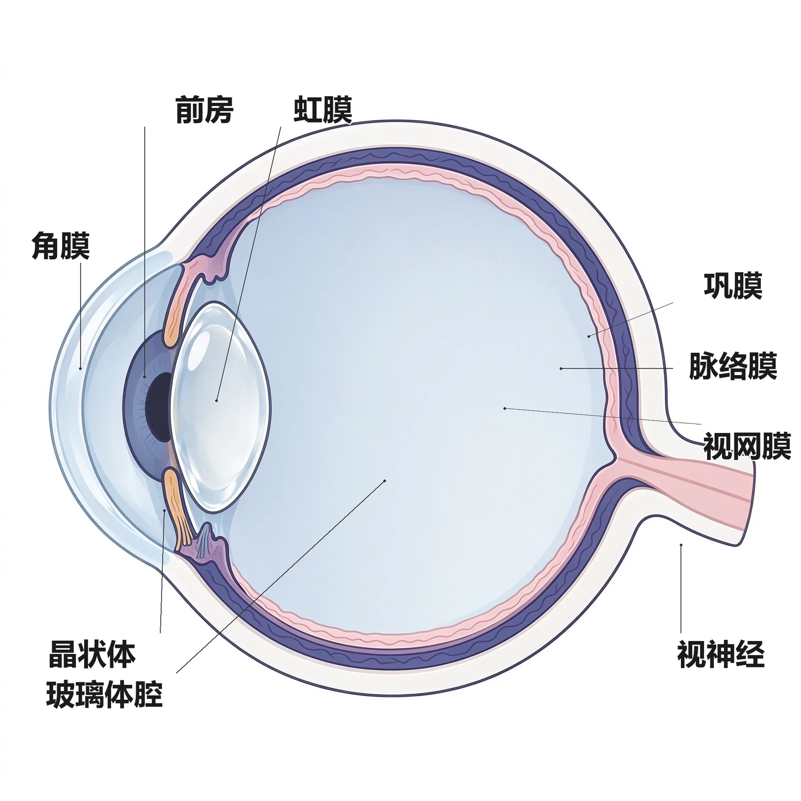
定义：眼球壁从外到内分三层——外层纤维膜（前1/6透明角膜+后5/6乳白色巩膜）、中层葡萄膜（血管膜/色素膜，由前到后为虹膜、睫状体、脉络膜）、内层视网膜（教材P5-6）。
为什么重要：这是全部眼科模块的"解剖母语"——角膜炎（外层）、葡萄膜炎（中层）、视网膜脱离（内层）都直接以三层命名。
🧬 第一性原理：
眼球要完成"成像"这件事，必须同时满足两个看似矛盾的要求：前半段要透明（让光进去），后半段要坚固且供血（维持球形、滋养感光细胞）。如果整层壁都用透明角膜，眼球就会软塌、没有血管供营养；如果整层壁都用乳白色巩膜，光线又进不去。于是胚胎把眼球壁"分工"成了三层：外层用胶原纤维既保形又在前部留出透明窗口（角膜）；中层塞进血管和黑色素（葡萄膜）做"暗房+后勤"；内层铺上感光细胞（视网膜）做"底片"。本质上就是：一个既要透光、又要坚固、还要供血感光的球形暗箱，被天然地切成了光学窗、血管层、底片三层。
角膜五层（从前到后）：①上皮细胞层（厚约35 μm，5~6层鳞状上皮，可再生不留瘢痕）；②前弹力层Bowman膜（约12 μm，损伤后不能再生）；③基质层（约500 μm，占角膜厚度90%，近200层胶原纤维薄板，损伤后留瘢痕）；④后弹力层Descemet膜（10~12 μm，富弹性、可再生）；⑤内皮细胞层（约5 μm，六角形单层，几乎不分裂、靠邻近细胞扩张填补，损伤多致角膜水肿大泡性病变）（教材P6、P20）。
🔬 展开：巩膜、角膜缘与前房角
巩膜：乳白色致密胶原，眼直肌附着处最薄（0.3 mm），视神经周围及角巩膜缘最厚（1.0 mm）；后部与视神经交接处外2/3移行于视神经鞘膜，内1/3呈网眼状称巩膜筛板，视神经纤维由此穿出（教材P6）。
角膜缘：角膜与巩膜的移行区，宽1.5~2.5 mm，是前房角及房水引流系统所在地、内眼手术切口标志、角膜干细胞所在之处——"三个身份"使它成为解剖与临床双重关键（教材P7）。
前房角结构（从前外到后内）：Schwalbe线→小梁网→Schlemm管→巩膜突→睫状带→虹膜根部。其中近小管组织（Schlemm管侧）是房水外流的主要阻力部位（教材P7）。
角膜五层"可再生性"最易考反：上皮层可再生不留痕、前弹力层不可再生、后弹力层可再生、内皮细胞几乎不分裂、靠扩张移行代偿。记忆锚点：「上皮能长、前弹力不能长、后弹性能长、内皮靠挤」。内皮细胞失代偿→角膜水肿大泡性病变（教材P20）。
🔴 【掌握级】房水循环途径与眼压的水力学模型
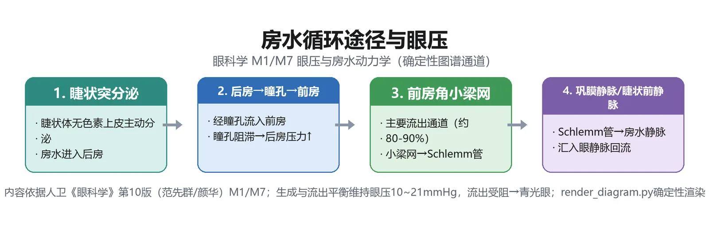
定义：房水是充满前房（约0.2 ml）与后房（约0.06 ml）的透明液体，由睫状体睫状突通过主动转运（约75%）+超滤过+弥散产生，生成速率1.5~3 μl/min（教材P20-21）。
为什么重要：房水"产生=排出"的动态平衡决定眼压；这条路径任何一处堵了，就是青光眼——模块7的全部发病机制都从这里推出。
🧬 第一性原理：
眼球是一个封闭的球，里面装着房水、晶状体、玻璃体，外面包着巩膜。如果房水只产生不排出，球内液体越积越多，巩膜这个"皮球"就被越撑越硬，球壁上的压力（眼压）就升高；反之若产生少或排出多，球就变软。正常时睫状体像一个"小水泵"持续往球内注水，前房角小梁网像一个"地漏"持续往外排水，两者速率相等，眼压就稳定在正常范围。如果地漏（小梁网）被堵住而水泵还在转，眼压必然升高；如果水泵停了或排水太畅，眼球就萎缩变软。本质上就是：一个密闭球形容器里"进水速率=出水速率"的流体力学平衡。
循环主路径：睫状体睫状突产生→后房→越过瞳孔→前房→前房角小梁网（近小管组织为主要阻力）→Schlemm管→集液管→房水静脉→睫状前静脉→体循环。另有少部分经葡萄膜巩膜途径引流（占10%~20%）和经虹膜表面隐窝吸收（约5%）（教材P21）。
把房水循环想成一条"楼内供排水"：睫状体=水泵（供水1.5~3 μl/min）、瞳孔=楼层门洞、前房=大厅、小梁网+Schlemm管=主排水地漏、葡萄膜巩膜途径=备用溢流道。地漏堵→楼内积水（眼压高=闭角型/开角型青光眼）。
🔴 【掌握级】视网膜分层与视杆/视锥细胞功能分布
定义：视网膜由胚胎视杯发育而来——外层形成视网膜色素上皮（RPE）单层，内层分化为神经上皮层；二者间有一潜在间隙，临床上视网膜脱离即由此处分离（教材P9-10）。
为什么重要：视网膜十层是理解视网膜电图（ERG）各波来源、视网膜脱离、糖尿病视网膜病变的结构基础。
🧬 第一性原理：
光线从眼球前方进入，要穿过视网膜神经上皮层的9层"神经布线"才能落到最外层的光感受器外节上（因为RPE在光感受器外侧、贴近脉络膜供营养）。也就是说，光线是先穿过神经节细胞层、再穿过双极细胞层、最后才到达视锥/视杆——这是一种"布线在底片前面"的反直觉结构。黄斑中心凹之所以视觉最敏锐，正是因为那里神经节细胞层被"拉开"成单线连接、没有血管遮挡，光直接落到视锥上。本质上就是：底片（光感受器）贴在脉络膜供营养，而神经接线被迫摆在底片前面，靠中心凹处"拉薄"神经层来保证成像清晰度。
视网膜神经上皮层九层（由外向内）：①视锥视杆层；②外界膜；③外核层；④外丛状层；⑤内核层；⑥内丛状层；⑦神经节细胞层；⑧神经纤维层；⑨内界膜（教材P10-11）。加上RPE层共十层。
三级神经元传递：光感受器（第一级）→双极细胞（第二级）→神经节细胞（第三级）→轴突汇集成视神经→外侧膝状体换元（第四级）→视放射→枕叶视皮质（教材P22）。
| 细胞类型 | 数量 | 分布 | 功能 | 病变表现 |
|---|---|---|---|---|
| 视锥细胞 | 约700万 | 集中黄斑，中心凹仅存视锥 | 强光（明视觉）+色觉 | 黄斑病变→中心视力下降 |
| 视杆细胞 | 约1.2亿 | 中心凹处缺乏，距中心凹5 mm处最多 | 弱光（暗视觉）+无色觉 | 周边病变→夜盲 |
视盘（视乳头）是神经节细胞轴突穿出眼球的部位，无视光感受器，故无视觉功能，在视野中表现为生理盲点——中心在注视点颞侧15.5°、水平中线下1.5°（教材P9、P36）。
🔴 【掌握级】视力检查与视力表（1′视角 / V=d/D）
定义：视力（视敏度）主要反映黄斑区视功能；日常不戴镜测得者为裸眼视力，验光戴镜后为矫正视力；临床诊断与视残等级以矫正视力为准，≥1.0为正常（教材P31）。
为什么重要：视力是眼科最基本、最高频的检查，"1′视角""V=d/D""FC/HM/LP"递降记录几乎每次考试都涉及。
🧬 第一性原理：
两个点能被分辨出来，前提是它们在视网膜上的成像能被两个不同的视锥细胞分别接收。人眼刚好能分辨两点所夹的最小视角定为1分角（1′）——1.0视力的视标就是按"5 m处看它所夹视角=1′"设计的。如果一个人在5 m处只能看清本应在50 m处看清的大视标（0.1行），说明他的视网膜只能分辨10倍大的视角，代入公式 V=d/D=5/50=0.1。本质上就是：视力=视网膜分辨两点最小视角的能力，用"实际看清距离÷正常应看清距离"来量化。
检查规则：两眼分别查、先右后左、遮眼板勿压眼球；视力表标准亮度300~500 lx；远视力距离5 m、近视力30 cm（教材P32）。
🔬 展开：低视力的递降记录与针孔试验
视力递降阶梯（5 m处连0.1都看不清时）：
- 走近法：向视力表走近直到看清，按V=d/D重算（如3 m处看清0.1行→V=3/50=0.06）。
- 针孔板/小孔镜：远视力低于1.0时加针孔板，若视力提高提示可能为屈光不正。
- 指数（FC）：1 m处仍不识最大视标→数手指，记录"指数/距离"（如FC/30 cm）。
- 手动（HM）：5 cm处不识指数→眼前摆手，记录"手动/距离"（如HM/20 cm）。
- 光感（LP）：不识手动→暗室查烛光/手电时亮时灭能否感知；记录能辨光的最远距离；无光感记NLP。有LP者还须做光定位（正前上中下、颞侧上中下、鼻侧上中下共9方位），反映视网膜功能（教材P32-33）。
「矫正视力」才是诊断与视残定级标准，不是裸眼视力；「1.0视标=1′视角」是所有视力表的共同设计基准（对数视力表相邻行大小恒比1.26倍、5分记录法；LogMAR与ETDRS用于科研）。儿童视力检查定性比定量重要——发现两眼视力有差别即提示弱视（教材P31、P33）。
🔴 【掌握级】视野检查与正常视野范围
定义：视野是眼向正前方固视时所见的空间范围，反映周边视敏度（相对于视力的中心视敏度）；距注视点30°以内为中心视野，30°以外为周边视野（教材P35）。
为什么重要：视野缺损的"形状"可定位视路病变（偏盲/象限盲/管状视野），是神经眼科与青光眼随访的核心指标。
🧬 第一性原理：
视网膜周边部没有黄斑那么高的分辨率，但它决定了"眼睛余光能看到多大一片"。由于视网膜鼻侧纤维在视交叉处交叉到对侧、颞侧纤维不交叉，所以每一侧大脑半球都接收双眼同侧半视网膜的信息——一旦视路某段受损，就会出现特征性的视野缺损（如视交叉受损→双颞侧偏盲）。本质上就是：把"眼睛余光多大"量化成一张等视线图，再根据缺损形状反推视路上哪一段断了。
正常周边视野（3 mm白色视标）：上方55°、下方70°、鼻侧60°、颞侧90°；用蓝/红/绿视标依次递减约10°（教材P35）。
| 检查方法 | 类型 | 特点 | 适用 |
|---|---|---|---|
| 对照法 | 动态 | 检查者与被检者对视、手指移动；不需仪器但不精确 | 床旁粗查 |
| 弧形视野计 | 动态 | 180°弧板、半径33 cm | 周边视野 |
| 平面视野计 | 动态 | 30°、查生理盲点 | 中心视野 |
| Goldmann视野计 | 动+静 | 投射式半球、刺激光标准化 | 视野全貌 |
| 自动视野计（Octopus/Humphrey） | 静态定量 | 计算机控制、阈上/阈值/快速阈值 | 青光眼随访、筛查 |
| Amsler表 | 静态 | 方格表、查中心/旁中心暗点 | 早期黄斑病变 |
①中央20°以内暗点多为病理性，25°~30°上下方暗点常为眼睑遮盖所致，30°~60°变异大需谨慎；②孤立一点阈值改变意义不大，相邻多点改变才有诊断意义；③初次异常应复查，暗点能重复才确诊；④概率图辅助诊断（教材P37）。
🔴 【掌握级】眼压测量（Schiötz / Goldmann / 非接触 / 指测法）
定义：眼压是眼球内容物作用于眼球壁的压力；测量方法分指测法与眼压计法，眼压计又分压陷式与压平式两类（教材P48）。
为什么重要：眼压是青光眼诊断与随访的核心数值；不同眼压计的原理、优缺点、"金标准"归属是高频考点。
🧬 第一性原理：
要量眼球这个"皮球"内部的压力，思路有两种——①压陷式：用一个已知重量的测杆压角膜，压得越深说明球内越软（眼压越低），但球壁本身的软硬（巩膜硬度）会干扰读数；②压平式：用一个已知力量把角膜"压平"成一个固定面积，眼球容积改变极小，球壁硬度的影响就被抵消了。Goldmann压平到角膜中央直径3.06 mm时两个半圆环内缘正好相切，此时施加的力换算出眼压——因为压平面积固定、容积变化小，故最准，被公认为"金标准"。本质上就是：量一个皮球内压，要么压陷它（受球壁软硬干扰），要么压平一个固定面积（干扰最小最准）。
| 眼压计 | 原理 | 关键参数 | 优点 | 缺点 |
|---|---|---|---|---|
| 指测法 | 双示指交替轻压上睑感张力 | Tn正常，T+1~+3高，T-1~-3低 | 最简单、床旁 | 粗估、靠经验 |
| Schiötz（压陷式） | 测杆重量压陷角膜 | 1905年发明 | 价廉耐用、便于携带 | 受球壁硬度影响 |
| Goldmann（压平式） | 裂隙灯上压平角膜 | 压平直径3.06 mm | 国际"金标准" | 需裂隙灯、接触角膜 |
| 非接触式（NCT） | 气流快速压平角膜 | 压平直径3.6 mm时反射光最强 | 不接触、避免交叉感染、快 | 用于筛查、精度略低 |
Goldmann压平直径3.06 mm（金标准）vs 非接触式压平直径3.6 mm——两个数字别混。Schiötz是压陷式（受球壁硬度影响），Goldmann与NCT是压平式（受球壁硬度影响小）。中央角膜厚度会影响Goldmann读数（教材P48-49）。
🔴 【掌握级】裂隙灯显微镜检查与眼前段观察
定义：裂隙灯显微镜由可调节裂隙灯光源+双目显微镜组成，可放大10~16倍，实现眼球活体、立体、显微观察，是眼科最重要的检查设备（教材P46）。
为什么重要：裂隙灯是眼科诊室的"核心工作台"，配合前房角镜、Goldmann压平眼压计、三面镜、前置镜可完成眼前段到眼后段的全套检查。
🧬 第一性原理：
眼前段（角膜、前房、虹膜、晶状体）透明而层次多，普通手电筒照过去会把所有层次"叠"在一张平面图上看不清。裂隙灯的思路是把光源缩成一条窄光带斜着照入组织，像"用手术刀光做一个光学切面"——光带在透明组织里穿行时，每层界面都会反光，双目显微镜再把这个切面看成立体像，于是角膜的五层、前房的深度、晶状体的混浊层次都被逐层分离出来。本质上就是：用一束窄光把透明组织"切"成光学切片，再用双目显微镜看成立体断面。
三种照明法：①弥散光照明（宽光，全面观察眼睑/结膜/巩膜/角膜/虹膜/晶状体）；②裂隙光照明（窄光，细看病变立体层次）；③后部反光照明（散瞳后光源投到组织后部、借反光看前面病变）（教材P46-47）。
🔬 展开：眼前段六项观察与荧光素染色
角膜：看大小、弯曲度、透明度、表面光滑度，有无异物、新生血管、混浊、圆锥角膜；查角膜后沉着物（KP）——常见于虹膜睫状体炎及角膜炎。荧光素染色：1%~2%荧光素钠涂下穹窿结膜，1~2分钟后黄绿色染色显示上皮缺损/溃疡部位范围。角膜知觉：棉签纤维触角膜，不引起瞬目或两眼触力差别大→知觉减退（疱疹病毒性角膜炎、三叉神经受损）（教材P47）。
巩膜：有无黄染、充血、结节、压痛。前房：深度（中央+周边+双眼对称）与房水（闪辉、细胞、混浊、积血、积脓）；明显浅前房者应避免散瞳，有诱发房角关闭、眼压升高风险。虹膜：颜色纹理、新生血管、色素脱落、前后粘连、根部离断、震颤（晶状体脱位）。晶状体：混浊部位、颜色形态、半/全脱位（教材P47）。
🔴 【掌握级】视觉电生理（ERG / VEP / EOG）的层次定位
定义：临床视觉电生理包括视网膜电图（ERG）、视觉诱发电位（VEP）、眼电图（EOG），不同波形对应视网膜不同层次及视路的功能（教材P40）。
为什么重要：电生理把"看不见的视网膜层次功能"转成波形；a波/b波/P100分别对应哪一层，是定位诊断的高频考点。
🧬 第一性原理：
视觉信号在视网膜里要经过三级神经元接力：光感受器（第一级）把光变成电信号，传给双极细胞（第二级），再传给神经节细胞（第三级），最后神经节细胞轴突汇成视神经传到大脑。如果我们在角膜放一个电极记录视网膜对闪光的总电反应，就会得到一串波——最早出现的a波来自最外层的光感受器，紧随其后的b波来自中间层的双极/Müller细胞，b波上升支上的小振荡波OPs来自无长突细胞。哪个波掉了，就说明那一层细胞坏了。本质上就是：用一束闪光刺激整个视网膜，记录"接力赛"每一棒选手的电反应，哪一棒的信号弱了，就定位到哪一层。
| 电生理检查 | 记录部位/波形 | 反映结构 | 临床意义 |
|---|---|---|---|
| 闪光ERG a波 | 视网膜 | 光感受器 | a+b波均降=视网膜内外层均损（色素变性、脱离、积血） |
| 闪光ERG b波 | 视网膜 | 双极/Müller细胞 | b波降、a波正常=视网膜内层障碍（先天性静止性夜盲、青少年劈裂、CRAO/CRVO） |
| OPs波 | 视网膜b波上升支 | 无长突细胞 | OPs降=视网膜缺血（糖网、缺血型CRVO、静脉周围炎） |
| 图形ERG | 视网膜 | 神经节细胞 | 早于图形VEP改变，辅助开角型青光眼 |
| 多焦ERG | 后极部25°局部 | 局部视网膜 | 黄斑病变定位 |
| VEP（图形VEP P100） | 视皮质 | 视神经及视路 | P100潜伏期延长=脱髓鞘（视神经炎）；鉴别伪盲 |
| EOG | 眼静息电位 | 视网膜色素上皮 | EOG异常=RPE/光感受器疾病 |
图形VEP中P100波波峰最明显稳定、潜伏期变异小，为临床常用诊断指标。脱髓鞘性视神经炎常表现为P100振幅正常而潜伏期延长；主观视力下降而VEP正常→提示非器质性损害（伪盲）；还可用于弱视治疗随访、婴儿/无语言儿童视力判断、屈光间质混浊者预测术后视功能（教材P41-42）。
🔴 【掌握级】瞳孔检查与异常瞳孔（RAPD / Marcus-Gunn）
定义：正常成人瞳孔在弥散自然光线下直径2.5~4.0 mm，幼儿及老年人稍小；检查包括直接/间接对光反射、相对性传入性瞳孔障碍（RAPD）、集合反射及多种病理性瞳孔（教材P42-43）。
为什么重要：瞳孔是视路与自主神经的"窗口"；RAPD（Marcus-Gunn瞳孔）定位单眼视路病变，Argyll Robertson瞳孔提示神经梅毒，Horner瞳孔提示交感通路病变。
🧬 第一性原理：
瞳孔对光反射的通路分传入与传出两段。传入：光→视网膜→视神经→中脑顶盖前核→双侧E-W核；传出：双侧E-W核→动眼神经→睫状神经节→瞳孔括约肌收缩。照一眼，两侧瞳孔都缩小——被照眼缩小叫直接对光反射，对侧眼缩小叫间接对光反射。如果某一眼的传入路（视神经）坏了，光照这只眼时信号传不进中脑，两侧都不缩；而照好眼时信号能正常传到中脑、再经双侧传出路，两侧都缩——这就是RAPD（Marcus-Gunn瞳孔）：患眼传入障碍，问题出在视神经而不是瞳孔括约肌本身。本质上就是：用"照哪只眼、缩哪只眼"来分别测试传入路和传出路通不通。
| 异常瞳孔 | 表现 | 提示病变 |
|---|---|---|
| RAPD（Marcus-Gunn） | 照患眼双眼不缩、照健眼双眼缩；交替照射时健眼缩、患眼散 | 单眼球后视神经炎、缺血性视神经病变、晚期青光眼 |
| Argyll Robertson瞳孔 | 直接光反射消失、集合（近）反射存在 | 神经梅毒 |
| Horner瞳孔 | 患侧瞳孔缩小，对光/近反射正常；伴上睑下垂、睑裂小、眼球内陷、额部无汗 | 交感通路受损（Horner综合征） |
| Adie瞳孔（强直性瞳孔） | 一侧瞳孔散大，暗处强光持续照射后缓慢收缩、停光后缓慢散大；调节反射也慢；缩瞳药可使其正常收缩；中青年女性多见、伴腱反射消失 | 睫状神经节/副交感节后病变 |
🔬 展开：瞳孔对光反射与近反射的传入/传出通路
对光反射传入路：光→视网膜→视神经→在外侧膝状体前离开视束→经四叠体上丘臂→中脑顶盖前核换元→纤维一部分到同侧E-W核、另一部分经后联合交叉到对侧E-W核。传出路：双侧E-W核发出纤维→随动眼神经入眶→睫状神经节换元→睫状短神经→瞳孔括约肌收缩。正因为传入纤维在顶盖前核"双侧分发"，所以照一眼、两眼都缩（直接+间接同时出现）（教材P20）。
近反射（集合反射）：视近物时同时完成三件事——瞳孔缩小、调节（睫状肌收缩→晶状体变凸）、眼球内聚（集合）；传入路与视路伴行达视皮质，传出路经枕叶-中脑束到E-W核与动眼神经内直肌核。对光反射消失而近反射存在（Argyll Robertson瞳孔）说明病变在对光反射的传入/中脑段，而视皮质-近反射通路完好——这正是神经梅毒的特征性体征（教材P20、P43）。
RAPD=传入路（视神经）病：患眼"看不见光"，但瞳孔括约肌本身好的。Horner=交感传出病：瞳孔开大肌瘫→瞳孔缩小但对光反射（副交感）保留。Adie=副交感节后瘫：瞳孔括约肌反应迟钝强直。三者病变层次不同，别混（教材P43）。
🟡 【熟悉级】眼科学定义、发展史与三学科区分
要点：眼科学（ophthalmology）研究视觉系统疾病的发生、发展、转归及预防控制诊断治疗康复，是临床医学二级学科，19世纪从外科学独立（教材P1）。里程碑：1851年德国Helmholtz发明检眼镜（划时代进步）；20世纪初发明眼压计、裂隙灯；1955年我国汤飞凡、张晓楼分离培养沙眼衣原体；2015年我国宣布消灭致盲性沙眼（教材P1-2）。
| 学科 | 归属 | 研究对象/产出 |
|---|---|---|
| 眼科学（ophthalmology） | 临床医学（源于外科学） | 眼科医师，诊疗眼病 |
| 视光学（optometry） | 理学（源于光学） | 视光师，屈光不正检测矫治、初级眼保健、近视防控 |
| 视觉科学（vision science） | 脑科学/基础学科 | 研究者，视觉发育、信息加工、色觉机制、认知行为 |
记忆点：「51检眼镜、55分离衣原体、15消灭沙眼」——三个年代号串起中西眼科学史（教材P1-2）。
🟡 【熟悉级】眼附属器与六条眼外肌的神经支配
要点：眼附属器包括眼眶、眼睑、结膜、泪器、眼外肌。眼睑从外向内5层：皮肤层、皮下组织层、肌层（眼轮匝肌=面神经司闭合；上睑提肌=动眼神经司开睑；Müller肌=交感神经）、睑板层（睑板腺=全身最大皮脂腺，分泌类脂质参与泪膜）、结膜层（教材P12）。
六条眼外肌：4直肌（内/外/上/下直肌）+2斜肌（上/下斜肌）。神经支配口诀：「外直肌展神经（Ⅵ）、上斜肌滑车神经（Ⅳ）、其余全归动眼神经（Ⅲ）」——即外直肌受第Ⅵ对、上斜肌受第Ⅳ对、其余四条直肌+下斜肌受第Ⅲ对脑神经支配（教材P15）。
泪液排出：泪点→泪小管→泪囊→鼻泪管→下鼻道（鼻泪管下端Hasner瓣）。正常泪液分泌0.9~2.2 μl/min；超过100倍即使泪道正常也会溢泪（教材P14）。
🟡 【熟悉级】视路与视交叉的纤维交叉规律
要点：视路从视网膜光感受器→视神经→视交叉→视束→外侧膝状体→视放射→枕叶视皮质（Brodmann 17/18/19区）。视神经全长平均约40 mm，分眼内段、眶内段、管内段、颅内段（教材P15-16）。
交叉规律：在视交叉，来自两眼视网膜鼻侧的纤维交叉到对侧，颞侧纤维不交叉；黄斑纤维占视神经和视交叉中轴部80%~90%。外侧膝状体中交叉纤维止于第1、4、6层，不交叉纤维止于第2、3、5层。由于各段纤维排列不同，视路某段病变会表现出特征性视野缺损，故视野检查对视路病变定位意义重大（教材P16-17）。
记忆点：「鼻侧交叉、颞侧不交叉」——视交叉中央受损（如垂体瘤）→双颞侧偏盲；一侧视束受损→对侧同向偏盲。
🟡 【熟悉级】泪膜三层与眼表生理
要点：泪膜覆盖眼球前表面，传统分三层——表面脂质层（睑板腺分泌，防蒸发）、中间水液层（泪腺+副泪腺分泌，供给角膜氧气、冲洗异物）、底部黏蛋白层（眼表上皮+结膜杯状细胞分泌，使泪膜贴附角膜）。泪膜厚约7 μm、总量约7.4 μl、更新率12%~16%/min、pH 6.5~7.6（教材P19）。
生理作用：润滑眼表、防止角结膜干燥、保持角膜光学特性、供给角膜氧气、冲洗抵御异物微生物。泪膜成分改变/眼表不规则/眼睑运动不协调→泪膜功能障碍（干眼）（教材P19）。
🟡 【熟悉级】屈光检查三阶段（检影 / 主觉验光 MPMVA / JCC）
要点：验光是动态多程序临床诊断过程，分三阶段：①初始阶段（检影验光或电脑验光+角膜曲率计+镜片测度仪，检影为关键）；②精确阶段（综合验光仪上的主觉验光/MPMVA）；③确认阶段（试镜架测试、老视者加测近附加）（教材P33-35）。
检影原理：检影镜把眼底照亮，反射光经眼球屈光成分回来，观察影动顺动/逆动判断屈光状态；「顺正逆负」（顺动加正镜、逆动加负镜），直到满瞳孔无影动（中和点），再减去工作距离对应的屈光度。带状光检影镜为临床主流（教材P34）。
主觉验光要点：MPMVA=最高正屈光度获得最佳视力；先用"雾视"（+0.75~+1.00D）放松调节；用Jackson交叉柱镜（JCC，±0.25D）精调散光轴向和度数；双眼调节平衡后做双眼MPMVA（教材P34-35）。
检影所得度数必须减去工作距离对应的屈光度才是最终度数（如50 cm工作距离达到+3.00D中和，则实际度数=+3.00−2.00=+1.00D）。药物麻痹睫状肌（1%阿托品眼膏、1%环喷托酯）后检影可获客观屈光度，儿童验光常用（教材P33-34）。
🟡 【熟悉级】色觉、暗适应与明适应
色觉：正常色觉者视锥细胞含长波（570 nm红）、中波（540 nm绿）、短波（440 nm蓝）三种感光色素，即Young-Helmholtz三原色学说。色觉障碍：缺一种原色=双色视（红色盲/绿色盲）；全不能辨=全色盲；辨色能力下降=色弱。绝大多数先天性色觉障碍为性连锁隐性遗传，最常见红绿色弱（盲），男性多于女性。检查用假同色图（色盲本，自然光下0.5 m、5秒内读出）、FM-100/D-15色调排列、色盲镜（教材P37-38）。
暗适应曲线：从亮处进入暗处，光敏感度逐渐升高，5~8分钟处见Kohlrausch曲折（视锥细胞暗适应终止），此后为视杆细胞视紫红质合成的暗适应主要阶段，约50分钟达稳定高峰。明适应约需1分钟，反映视锥细胞功能。暗适应检查可量化夜盲（教材P38-39）。
🟡 【熟悉级】检眼镜检查（直接 vs 间接 vs 前置镜）
要点：常用检眼镜分直接与间接两种。直接检眼镜：临床最常用，所见为正像、放大约16倍，可估病变隆起高度，但观察范围有限、单眼无立体感、易受屈光间质混浊影响；步骤先彻照法（+8~+10D，距眼10~20 cm，看瞳孔区橘红反光有无黑影判断屈光间质混浊），再拨到"0"处距眼2 cm查眼底（先视盘→沿血管查周边→最后黄斑）（教材P49-50）。
双目间接检眼镜：放大倍数小（3~4倍）、所见为倒像（上下左右均反）、有立体感、可见范围大；需充分散瞳，配合巩膜压迫器可看到锯齿缘、查找视网膜裂孔（教材P50）。
| 检眼镜 | 像 | 放大 | 立体感 | 散瞳 | 适用 |
|---|---|---|---|---|---|
| 直接检眼镜 | 正像 | 16倍 | 无（单眼） | 不必 | 床旁初步筛查 |
| 双目间接检眼镜 | 倒像 | 3~4倍 | 有 | 需散瞳 | 全面眼底、查裂孔 |
| 前置镜（+60/78/90D） | 立体倒像 | 中 | 有 | 周边需散瞳 | 裂隙灯下查后段 |
视盘（大小/形状/颜色/边界/杯盘比）、视网膜血管（管径/动静脉比正常2:3/动静脉交叉压迹）、黄斑部及中心凹光反射、视网膜（裂孔/变性/出血/渗出/色素增生脱失）、明显异常绘视网膜图（教材P50）。闭角型青光眼、浅前房者谨慎散瞳。
🟡 【熟悉级】前房角镜与Scheie房角分级
要点：前房角由前壁（Schwalbe线→小梁网→巩膜突）、隐窝（睫状体带）、后壁（虹膜根部）组成；前房角镜利用折射（直接式）或反射（间接式）原理直接观察房角，是青光眼、眼外伤诊治常用工具（教材P47-48）。
Scheie分级法：静态（眼球原位）能看见房角全部结构（Schwalbe线、小梁网、巩膜突、睫状体带）者为宽角，否则为窄角；窄角分窄Ⅰ~窄Ⅳ四级。动态下（改变眼球位置/稍加压力）能看见后部小梁则为房角开放，否则为房角关闭（教材P48）。
意义：房角宽窄与开闭是青光眼分类（闭角型vs开角型）和治疗选择的解剖基础，详见模块7。
🟡 【熟悉级】斜视检查（遮盖试验 / 角膜映光 / Parks三步法）
要点：遮盖试验分遮盖-去遮盖（查显性斜视）与交替遮盖（查有无眼位偏斜倾向，含显性+隐性成分）。角膜映光法（Hirschberg）：患者注视33 cm点光源，反光点偏心1 mm≈偏斜7.5°或15三棱镜度，简便但不精确（未考虑Kappa角）。三棱镜加遮盖试验为较精确的定量法（教材P43-44）。
Parks三步法：用于垂直斜视鉴别原发麻痹肌是上斜肌还是另一眼上直肌——第1步定上斜视侧别；第2步定向哪侧注视时垂直偏斜大；第3步做歪头试验（Bielschowsky），头转向高位眼侧垂直偏斜增大=上斜肌麻痹，阴性=上直肌麻痹（教材P45）。
被动牵拉试验鉴别眼球运动障碍是神经肌肉麻痹还是机械性限制：全麻下夹角膜缘向各方向牵拉，无阻力排除机械限制，有阻力提示机械限制（教材P45）。
🟡 【熟悉级】眼病主要症状（视力下降的三种模式）
要点：眼病症状分视力障碍、感觉异常、外观异常三类。按视力下降的起病速度与是否伴眼痛分三种模式（教材P30-31）：
| 视力下降模式 | 特点 | 常见病因 |
|---|---|---|
| 一过性视力下降/丧失 | 突发但短期恢复 | 直立性低血压、视网膜中央动脉痉挛、椎基底动脉供血不足、偏头痛、癔症；警惕视网膜中央血管阻塞、CNS病变前兆 |
| 急性视力下降（无痛） | 急骤、幅度大、不伴痛 | 视网膜动脉/静脉阻塞、缺血性视神经病变、玻璃体积血、视网膜脱离、视神经炎 |
| 急性视力下降（伴眼痛） | 急骤+眼痛/头痛 | 急性闭角型青光眼、葡萄膜炎、角膜炎、眼内炎；球后视神经炎伴眼球转动痛 |
| 渐进性视力下降 | 缓慢加重 | 白内障、开角型青光眼、黄斑变性等 |
突发无痛性视力下降→警惕视网膜中央动脉阻塞（眼科急症，需数小时内抢救）；眼痛+头痛+恶心呕吐+混睛→急性闭角型青光眼发作（教材P31）。
🟢 【了解级】眼遗传学与眼遗传病分类
要点：眼遗传病分三类——单基因遗传病（最多，如常隐：高度近视、半乳糖血症；常显：先天性上睑下垂、Marfan综合征；X连锁隐：红绿色盲、眼白化病、原发性眼球震颤）、多基因/多因子遗传病（单纯性近视、原发性青光眼、共同性斜视）、染色体病（唐氏综合征、视网膜母细胞瘤）。Leber遗传性视神经病变由线粒体DNA突变所致；视网膜母细胞瘤70%具等位基因杂合性丢失（13q14）（教材P23-24）。
🟢 【了解级】眼科用药与给药方式
要点：眼部存在血-眼屏障（血-房水屏障+血-视网膜屏障），故多数眼病以局部给药为主。给药途径：滴眼液（最常用，每滴25~30 μl、结膜囊容量仅10 μl，故每次1滴即可；两次滴眼最短间隔5分钟，滴后压泪囊部减少全身吸收）、眼膏、眼周注射（球结膜下/球筋膜下/球后）、眼内注射（前房/玻璃体腔/视网膜下）（教材P25-26）。
🟢 【了解级】眼科流行病学基本指标
要点：描述性研究（病例报告、现况/横断面研究含抽样调查与普查）与分析性研究（观察性：横断面、病例对照=从果到因、队列=从因到果；实验性=临床试验）。患病率（P）=某时点已患病人数/人群总数；发病率（I）=特定时间新发病人数/危险人群；关系 P≈I×D（D为疾病存在时间）。队列研究用相对危险度RR，病例对照研究用优势比OR；RR/OR=1无关联，>1危险因素，<1保护因素。临床试验三原则：对照、随机、盲法（教材P26-29）。
🟢 【了解级】立体视觉、对比敏感度与影像学概览
立体视觉：以双眼单视为基础，分三级——Ⅰ同时视、Ⅱ融像、Ⅲ立体视；检查用Worth四点试验、同视机、随机点立体图（Titmus），正常立体视敏度≤60弧秒（教材P39）。
对比敏感度：在不同空间频率下识别正弦光栅的能力，比视力表更全面反映形觉功能；早期皮质性白内障影响低频、早期核性白内障影响高频（教材P39-40）。
影像学速览：
| 影像 | 原理/特点 | 主要用途 |
|---|---|---|
| 角膜地形图 | 角膜前后表面曲率数字化彩色图 | 圆锥角膜、屈光手术筛查 |
| 角膜内皮显微镜 | 界面反射显示六角形内皮 | 内皮细胞密度（30岁前3000~4000个/mm²）、白内障术前 |
| 共聚焦显微镜 | 共聚焦激光扫描到细胞学水平 | 真菌/棘阿米巴角膜炎、干眼、移植排斥 |
| 眼底彩照 | 眼底照相机直接成像 | 糖网、高度近视、小儿视网膜病、AI筛查 |
| FFA | 荧光素钠静脉造影（5期） | 视网膜血管、RPE屏障异常 |
| ICGA | 吲哚菁绿（近红外） | 脉络膜血管、湿性AMD、PCV |
| OCT | 低相干光干涉断面成像 | 黄斑裂孔/水肿/前膜、青光眼RNFL厚度 |
| OCTA | OCT基础上探测红细胞运动 | 无染料血管成像 |
| A超/B超/UBM | 8~12 MHz / 二维 / ≥40 MHz高分辨 | A超测眼轴；B超评价后节；UBM查后房/睫状体/房角（禁新鲜破裂伤） |
| CDI彩色多普勒 | 血流频移彩色编码 | 海绵窦瘘、CRAO/CRVO、肿瘤血流 |
| CT/MRI | X线体层 / 核磁 | CT看骨与软组织外伤；MRI看眶内/视神经肿瘤（磁性异物禁忌） |
把本模块的"为什么"串成一条可复述的链条（★为关键转折节点）：
```text
主诉: 视力下降 / 眼痛 / 眼红 / 视野缺损 / 复视
│
▼
病史采集: 主注明眼别(<20字) + 现/既往/个人/家族史 + 用药戴镜史
│
▼
★ 第一步先定"急症": 突发无痛盲→CRAO? 眼痛+头痛+呕吐+混睛→闭角型青光眼发作?
│
▼
视功能(量化"看得清/看得宽"):
视力(矫正, 1'角, V=d/D) → 视野(中心30°/周边) → 色觉/暗适应/对比敏感度/立体视
│
▼
眼科局部(由外到内、由表及里):
眼附属器(眼睑/结膜/泪器/眼球位置) → 瞳孔(对光反射/RAPD)
│
▼
★ 三台核心机器:
裂隙灯(光学切面看眼前段: 角膜/前房/虹膜/晶状体)
检眼镜(直接正像16x / 间接倒像3-4x看眼底: 视盘/血管/黄斑/视网膜)
眼压计(Goldmann压平金标准 / Schiotz压陷 / NCT气流 / 指测Tn)
│
▼
前房角镜(Scheie宽/窄) + 屈光检查(检影→MPMVA→JCC) + 斜视检查(遮盖/Hirschberg/Parks)
│
▼
影像/电生理(定性定位):
OCT/FFA/ICGA/UBM/B超/CT/MRI + ERG(a/b/OPs) / VEP(P100) / EOG
│
▼
定位定性: 病变层次(角膜/葡萄膜/视网膜/视神经/视路) + 病因(炎症/血管/屈光/肿瘤)
```
> [!TIP] 读图要点
> 两个"★"是本模块最关键的思维拐点：①先排急症再详查——视网膜中央动脉阻塞与急性闭角型青光眼都是时间依赖性急症；②视功能→局部→机器→影像由外到内、由量化到定位，不要一上来就开一堆影像。
📈 D3 眼科学疾病谱系梯度图
本模块虽以"正常+检查"为主，但后续疾病可按"自限→危重"排成梯度（★为危险度跃升点）：
严重度梯度 疾病示例(所属模块) 处置重心
────────────────────────────────────────────────────────────────────────────
轻度·屈光/干眼 近视/远视/老视(M09)、干眼(M02)、结膜炎(M03) 矫正/对症, 多可自限
│
▼
中度·感染炎症 角膜炎(M04)、虹膜睫状体炎(M05)、睑缘炎/泪囊炎(M02) 抗感染+激素+通畅引流
│
▼
中重·结构损害 白内障(M06)、视网膜脱离(M08)、斜视弱视(M09) 手术+功能重建
│
▼
★ 急性致盲急症 急性闭角型青光眼(M07)、视网膜中央动脉阻塞(M08)、
眼外伤/化学伤(M10) 数小时~数天内抢救, 先救急
│
▼
★ 慢性致盲疾病 开角型青光眼(M07)、糖网(M08)、年龄相关性黄斑变性(M08) 长期随访+眼压/血糖控制+抗VEGF
────────────────────────────────────────────────────────────────────────────判定"何时从可控滑向急症"，记住四个信号——①突发无痛性视力丧失：警惕视网膜中央动脉阻塞；②剧烈眼痛+头痛+恶心呕吐+混睛：急性闭角型青光眼发作；③眼球穿通伤/化学伤：立即冲洗、制动、送急诊（模块10）；④眼外伤后清亮液体经鼻/耳流出：警惕脑脊液漏。任何一条出现，先紧急处理，莫陷入"慢慢查"（教材P31、P48）。
🌳 D4 鉴别决策树：视力下降 → 定位检查
视力下降
├─ 一过性(短期恢复)
│ ├─ 首选: 病史+血压/体位 + 视野/VEP
│ ├─ 怀疑: 直立性低血压 / 视网膜中央动脉痉挛 / 椎基底动脉供血不足 / 偏头痛 / 癔症
│ └─ 关键: 反复发作→查CRAO前兆、颈动脉超声
│
├─ 急性、无痛
│ ├─ 首选: 直接检眼镜看眼底 + 眼压 + ERG/VEP
│ ├─ 怀疑: 视网膜中央动脉阻塞 / CRVO / 缺血性视神经病变 / 玻璃体积血 / 视网膜脱离 / 视神经炎
│ └─ 关键: 视盘苍白+樱桃红斑=CRAO; 突发无痛+眼底出血=CRVO; 视野缺损定位视路
│
├─ 急性、伴眼痛
│ ├─ 首选: 眼压 + 裂隙灯(KP/前房闪辉) + 前房角镜
│ ├─ 怀疑: 急性闭角型青光眼(眼压高/混睛/浅前房) / 葡萄膜炎(KP) / 角膜炎(荧光素染色) / 眼内炎
│ └─ 关键: 眼痛+头痛+呕吐+混睛=闭角型发作, 立即降眼压
│
└─ 渐进性
├─ 首选: 裂隙灯看晶状体 + 眼压 + 视野 + OCT
├─ 怀疑: 白内障(晶状体混浊) / 开角型青光眼(眼压/视野/杯盘比) / 年龄相关性黄斑变性(OCT)
└─ 关键: 矫正视力下降+晶状体混浊=白内障; 视野缺损+杯盘比大=青光眼每一条分支都遵循本模块那句"先排急症→量化视功能→三台机器定位→影像/电生理定性"。到模块7（青光眼）、模块8（视网膜），再把每个"怀疑"的具体诊断标准与治疗补全。
🔄 主动回忆区
- 眼科学是研究____系统疾病的____学科，19世纪从____学独立；人从外界获得的信息约____%由眼完成。（教材P1）
- 眼球壁分三层：外层____膜（____+____）、中层____膜（____+____+____）、内层____；角膜从前到后五层为____、____、____、____、____，其中____层损伤后不能再生。（教材P5-6）
- 房水循环途径：____产生→后房→____→前房→____→Schlemm管→____→体循环；生成速率____μl/min；备用引流途径为____途径。（教材P20-21）
- 视力=____角（1′），公式V=____；远视力距离____m、近视力____cm；查不到视力按____→____→____→____递降记录。（教材P31-33）
- 正常周边视野：上方____°、下方____°、鼻侧____°、颞侧____°；生理盲点中心在注视点颞侧____°。（教材P35-36）
- Goldmann压平眼压计压平角膜直径____mm，是眼压测量"____"；Schiötz为____式、受____影响；非接触式压平直径____mm；指测法正常记为____。（教材P48-49）
- 闪光ERG的a波来自____、b波来自____、OPs来自____；图形VEP中____波为常用诊断指标；EOG反映____功能。（教材P40-42）
- 六条眼外肌神经支配：外直肌受第____对、上斜肌受第____对、其余受第____对脑神经。（教材P15）
学完本模块，你应该能：①说出眼球壁三层与角膜五层的可再生性；②复述房水循环路径与"水力学模型"；③按V=d/D与FC/HM/LP记录视力；④区分Schiötz/Goldmann/NCT/指测法；⑤把ERG各波、VEP P100、EOG对应到视网膜层次；⑥在"突发无痛盲"与"眼痛头痛呕吐混睛"两个急症点及时报警。若以上六条都能口述，即可进入模块2（眼睑与泪器）。
📘 模块2：眼睑与泪器疾病
M2 · 眼睑与泪器疾病
重点等级：🔴掌握5个 / 🟡熟悉8个 / 🟢了解5个
教学范围：眼睑炎症（睑腺炎、睑缘炎）、睑板腺囊肿（霰粒肿）、眼睑位置异常（倒睫、睑内翻、睑外翻、上睑下垂）、眼睑肿瘤（了解）；泪液分泌系统疾病（泪腺炎、泪液分泌异常）、泪液排出系统疾病（泪道阻塞狭窄、急慢性泪囊炎）、干眼。
关联模块：模块1（眼表解剖、泪膜三层、裂隙灯与荧光素染色检查为前置）；模块3（结膜炎、干眼与过敏性结膜炎互相鉴别）；模块4（角膜暴露性病变、干眼正式专章在第七章第五节）。
谱系位置：本模块疾病多属「外眼表浅、良性自限」一端，但慢性泪囊炎是藏在眼角的「定时感染灶」，上睑下垂与眼睑位置异常可继发角膜溃疡、弱视，须警惕「小病变大后患」。
预计阅读：约 16 分钟（正文）+ 图表约 6 分钟。
先行组织者：眼睑是眼球的「大门帘子」，泪器是眼球的「供水与排水系统」。这一章本质上回答三件事：①帘子发炎了（睑腺炎、睑缘炎）怎么分、怎么切；②帘子位置歪了（内翻/外翻/下垂）为什么会磨伤角膜；③排水堵了（泪道阻塞、泪囊炎）为什么流脓、为什么内眼手术前必须先治它。抓住「腺体—管道—引流」这条线，全章就串起来了。
🧩 前置知识检查
- 回顾：泪膜分脂质层（睑板腺）、水液层（泪腺+副泪腺）、黏蛋白层（结膜杯状细胞）三层，缺哪一层都会干眼——若生疏，回看模块1眼表生理（教材P19）。
- 回顾：眼轮匝肌闭眼时牵拉泪囊形成负压、睁眼时虹吸泪液入泪道，即「泪液泵」；不理解泵原理就读不懂功能性溢泪。
- 若陌生则回补：荧光素钠染色在钴蓝光下呈绿色，用于角膜上皮缺损、泪膜破裂时间（BUT）测定——属模块1检查法。
- 若陌生则回补：动眼神经（第Ⅲ对）支配上睑提肌与多数眼外肌，交感神经支配 Müller 肌；面神经（第Ⅶ对）支配眼轮匝肌——这是上睑下垂与睑外翻鉴别神经定位的基础。
1. 睑腺炎＝腺体急性化脓：外睑腺炎（Zeis/Moll腺）切口在皮肤面、平行睑缘；内睑腺炎（睑板腺）切口在结膜面、垂直睑缘；未化脓前禁切开，早期热敷（教材P57-58）。
2. 霰粒肿＝睑板腺无菌性慢性肉芽肿，与急性红肿痛的睑腺炎是「感染 vs 无菌」的核心鉴别（教材P57）。
3. 慢性泪囊炎三联征：溢泪 + 挤压泪囊有黏液脓性分泌物自泪点返流 + 泪道冲洗不通伴分泌物；它是眼部带菌灶，内眼手术的禁忌证，首选泪囊鼻腔吻合术（DCR）（教材P67-68）。
4. 泪道冲洗五句话定部位：通畅入咽／原路返＝泪小管阻／上下泪点互返＝泪总管或鼻泪管阻／部分入鼻＝鼻泪管狭窄／返流伴脓＝合并慢性泪囊炎（教材P66）。
5. 干眼一线用药＝人工泪液；诊断看主观症状＋BUT≤5s 或 SchirmerⅠ（无麻醉）≤5mm/5min（教材P101-102）。
6. 上睑下垂三句话鉴别：晨轻暮重、新斯的明有效＝重症肌无力；同侧瞳孔缩小+无汗＝Horner；先天双侧、仰头视物＝先天性（教材P61-62）。
> [!SUCCESS] 记忆锚点
> 一句话串起全模块：「腺发炎要热敷、化脓才切开；管道堵要冲洗、流脓先治泪囊；帘子歪要护角膜；泪少了补人工泪液。」
📋 结构化笔记
🔴 【掌握级】睑腺炎（麦粒肿）：外/内分型与治疗
睑腺炎（hordeolum）是睑板腺或皮脂腺的急性化脓性炎症，俗称麦粒肿。睫毛毛囊附属的皮脂腺（Zeis腺）或变态汗腺（Moll腺）感染称外睑腺炎；睑板腺感染称内睑腺炎；多为金黄色葡萄球菌（教材P57）。
为什么重要：切开方向与「何时能切」是每年必考的操作细节，外/内切口方向相反，极易记反。
🧬 第一性原理：
眼睑富含腺体且皮肤菲薄、皮下组织疏松，一旦金黄色葡萄球菌侵入腺体，局部就会出现典型「红、肿、热、痛」的化脓反应。如果腺体导管开口通畅、细菌被局部免疫清除，炎症会自行消退而不形成脓点；恰恰是细菌在封闭腺体内繁殖、脓液积聚、压力升高，才形成黄色脓点并向阻力最小的方向破溃。脓肿未形成时切开，等于把感染扩散到疏松的眶内组织；只有脓肿局限软化后切开引流，才能既减压又不播散。本质上就是：封闭腺体里的急性化脓，「未成脓不切、成脓后顺着皮纹/避开腺体切」。
临床表现：①外睑腺炎炎症在睫毛根部睑缘，初起红肿弥散，触之有明显压痛硬结；②内睑腺炎局限于睑板腺内，肿胀较局限、疼痛更明显，睑结膜面局限充血肿胀。发病2～3天形成黄色脓点——外向皮肤面破、内向结膜囊破；破溃后炎症减轻，多在1周左右痊愈。儿童、老年人或糖尿病等慢性消耗性疾病患者，因体质弱、致病菌毒力强，感染可在眼睑皮下扩散为眼睑蜂窝织炎——整个眼睑红肿不能睁开、波及同侧面部、触之坚硬压痛、球结膜反应性水肿暴露于睑裂外，伴发热寒战头痛；处理不当可致败血症或海绵窦血栓形成而危及生命，此时须尽早全身足量以抗金葡为主的广谱抗生素并送培养+药敏（教材P57-58）。
🔬 展开：治疗三步骤与切开方向的力学理由
- 早期未成脓：局部热敷，每次10～15分钟、每日3～4次，促进浸润吸收或硬结化脓；每日滴抗生素滴眼剂4～6次；反复发作者或伴全身反应者口服抗生素（教材P57）。
- 外睑腺炎切口：在皮肤面，切口与睑缘平行——顺眼睑皮纹，瘢痕最小；脓肿较大时放置引流条（教材P57）。
- 内睑腺炎切口：在睑结膜面，切口与睑缘垂直——因为睑板腺管是垂直于睑缘走行的，垂直切口才能「顺着腺体、切开整个脓腔」而不横断多条腺管（教材P57-58）。
- 脓肿未形成前不宜切开；一旦扩散为眼睑蜂窝织炎，须尽早全身用足量以抗金葡为主的广谱抗生素，并送脓液/血培养+药敏（教材P58）。
切口方向最易记反：外＝皮肤面＋平行睑缘（顺皮纹减瘢痕）；内＝结膜面＋垂直睑缘（顺腺管引脓）。另一个陷阱是「一上来就切」——脓肿未成熟切开反而把感染逼进疏松眶隔，导致眶蜂窝织炎。
| 对比项 | 外睑腺炎 | 内睑腺炎 | 睑板腺囊肿（霰粒肿） |
|---|---|---|---|
| 受累腺体 | Zeis/Moll腺、睫毛毛囊 | 睑板腺 | 睑板腺（开口阻塞） |
| 性质 | 急性化脓炎 | 急性化脓炎 | 无菌性慢性肉芽肿 |
| 部位/弥散度 | 睑缘、红肿较弥散 | 睑板内、较局限 | 皮下无痛结节 |
| 红热痛 | 明显、压痛硬结 | 明显、疼痛更剧 | 无急性红痛 |
| 脓点方向 | 向皮肤面破 | 向结膜面破 | 一般不破、迁延 |
| 切口方向 | 皮肤面、平行睑缘 | 结膜面、垂直睑缘 | 不做急性切开 |
| 教材页 | P57 | P57-58 | P57 |
🔴 【掌握级】霰粒肿（睑板腺囊肿）与睑腺炎的鉴别
睑板腺囊肿（chalazion）是睑板腺开口阻塞引起的特发性、无菌性、慢性肉芽肿性炎症，俗称霰粒肿，是睑腺炎必须鉴别的疾病（教材P57）。
为什么重要：一个「眼睑硬结」到底是感染还是无菌肉芽肿，决定了热敷切开还是观察刮除；且老年复发的「霰粒肿」要警惕皮脂腺癌。
🧬 第一性原理：
睑板腺持续分泌睑酯以构成泪膜脂质层。正常时腺体导管通畅，睑酯顺利排到睑缘；如果导管被角质、分泌物阻塞，睑酯排不出去就淤积在睑板内，刺激周围组织形成慢性肉芽肿性包裹。这里没有细菌入侵（故无菌、无急性红痛），只有「油脂堵在腺里、周围起了慢性包裹反应」。如果把它当成急性感染去挤压，反而可能把无菌肉芽肿弄破、刺激周围；而对一个反复复发、皮肤破溃的老年「霰粒肿」，若不警惕，就会漏诊起源于睑板腺的皮脂腺癌。本质上就是：导管阻塞→油脂淤积→慢性无菌包裹，与「细菌入侵→急性化脓」是两条完全相反的通路。
🔬 展开：老年「复发霰粒肿」要想到皮脂腺癌
眼睑皮脂腺癌是我国常见眼睑恶性肿瘤之一，多发于60岁左右、好发上睑，常起源于睑板腺和Zeis腺；起自睑板腺时初起为眼睑皮下小结节，与睑板腺囊肿相似，相应睑结膜呈黄色隆起，部分呈Paget样浸润、易误诊为结膜炎，恶性度高、可眶内扩展及转移（教材P232，详见第十七章眼肿瘤）。提示：儿童/青年单发小结节多为良性霰粒肿；老年、同一部位反复复发、皮肤破溃或结膜面黄色隆起者，切除物务必送病理，不能当普通霰粒肿一刀了之。
鉴别口诀：「红肿痛、有脓点＝麦粒肿（感染）；不红不痛、迁延结节＝霰粒肿（无菌肉芽肿）」。把霰粒肿当麦粒肿挤压，或把老年复发皮脂腺癌当普通霰粒肿，都是临床上的经典误判。
🔴 【掌握级】慢性泪囊炎：三联征、危险定位与手术
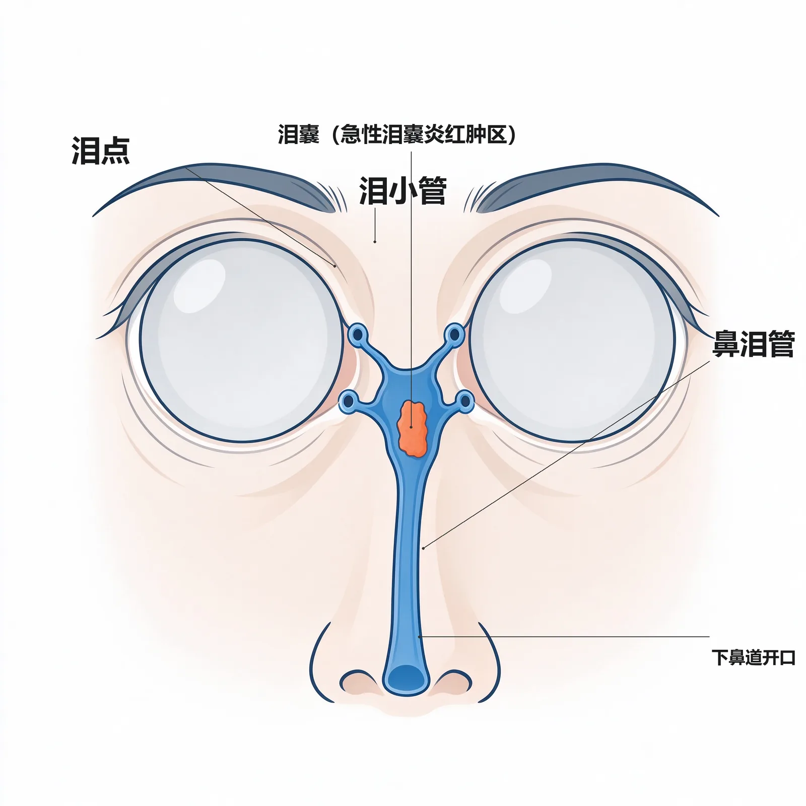
慢性泪囊炎（chronic dacryocystitis）多见于中老年女性，是最常见的泪囊病；继发于鼻泪管狭窄/阻塞，泪液滞留泪囊伴细菌感染，多单侧；常见致病菌为肺炎链球菌和白念珠菌，发病与沙眼、泪道外伤、鼻炎、鼻中隔偏曲、下鼻甲肥大有关（教材P67）。
为什么重要：「溢泪+挤压返流+冲洗不通」三联征是诊断核心，「内眼手术禁忌证」是高频考点，DCR是首选术式。
🧬 第一性原理：
正常泪液经泪点→泪小管→泪囊→鼻泪管→排入鼻腔。鼻泪管下端是解剖狭窄段，一旦因炎症、外伤、鼻腔病变而阻塞，泪液就积在泪囊里排不出去，变成一潭死水。死水滋养细菌繁殖，泪囊黏膜受刺激分泌黏液，于是挤压泪囊时带菌的黏液脓性分泌物就从泪点返流出来。这个带菌囊腔持续把细菌反流入结膜囊，使结膜囊长期带菌——一旦做内眼手术（白内障、青光眼等）或角膜有外伤，细菌就会进入眼球，引起化脓性眼内炎。所以慢性泪囊炎不是「老流泪」这么简单，而是眼球旁边一个藏毒的感染灶。本质上就是：鼻泪管堵→死水养菌→分泌物返流→成为内眼手术的潜在感染源。
临床表现：主要症状溢泪；挤压泪囊有黏液或脓性分泌物自泪小点流出；泪道冲洗时冲洗液自泪小点返流、同时带黏液脓性分泌物（教材P67-68）。长期溢泪本身也会造成恶性循环：泪液浸渍下睑皮肤致慢性刺激性结膜炎、下睑及面颊湿疹，患者不断揩拭眼泪又牵拉下睑松弛外翻，反过来加重溢泪——这与睑外翻一节互为因果（教材P66）。
🔬 展开：为什么内眼手术前必须先治泪囊炎
教材明确指出：慢性泪囊炎是眼部的感染病灶，脓液反流入结膜囊使其长期带菌；若发生眼外伤或施行内眼手术，极易引起化脓性感染，导致细菌性角膜溃疡或化脓性眼内炎。因此内眼手术前应常规检查泪道、首先治疗慢性泪囊炎（教材P68）。记忆点：慢性泪囊炎＝内眼手术的禁忌证（未控制前）。治疗首选手术、原则是恢复泪道通畅，常用经皮肤泪囊鼻腔吻合术（DCR）或经鼻内镜泪囊鼻腔吻合术；内镜、激光、置管使治疗更微创高效（教材P68）。
慢性泪囊炎的溢泪要与「流泪」区分：溢泪＝排出受阻（管道堵了）；流泪＝分泌过多（刺激了）。另外注意：急性泪囊炎炎症期禁忌泪道探通/冲洗（会扩散感染），而慢性期才做冲洗诊断与DCR手术——时机完全相反。
| 鉴别点 | 溢泪（epiphora） | 流泪（lacrimation） |
|---|---|---|
| 病因 | 泪液排出受阻，溢出于睑外 | 泪液分泌增多，排不及 |
| 常见疾病 | 泪道阻塞/狭窄、慢性泪囊炎 | 眼表刺激、情绪、异物、结膜炎 |
| 泪道冲洗 | 多不通或返流 | 多通畅 |
| 教材页 | P63 | P63 |
🔴 【掌握级】泪道冲洗：五种冲洗结果定位阻塞部位
泪道冲洗用钝圆针头从泪小点注入生理盐水，根据冲洗液流向判断有无阻塞及阻塞部位，是眼科最常用的定位检查（教材P66）。
为什么重要：五种结果对应五个部位，是「操作+判读」类必背，直接关联治疗选择。
🧬 第一性原理：
泪道是一条「泪点→泪小管→泪总管→泪囊→鼻泪管→下鼻道」的单向管道。注水时，水往低处、往阻力小处流。如果全程通畅，水就一路经鼻泪管流进鼻腔/咽部；如果堵在最上游的泪小管，水刚进去就从原针头口原路退回；如果堵在泪总管，上泪小管进来的水无路可走就从下泪小管反出（反之亦然）；如果只是鼻泪管狭窄而非全堵，水一部分挤进鼻腔、一部分被顶回来；如果鼻泪管全堵还合并感染，返流的水就混着泪囊里的脓。本质上就是：往一条封闭管道里打水，「水从哪儿冒出来」就告诉你「堵在哪儿」。
| 冲洗结果（教材P66） | 提示部位 |
|---|---|
| 无阻力，液体顺利入鼻腔/咽部 | 泪道通畅 |
| 液体完全从注入原路（该泪小点）返流 | 泪小管阻塞 |
| 上泪点进、下泪点返（或反之） | 泪总管/泪囊/鼻泪管阻塞 |
| 有阻力，部分返流、部分入鼻腔 | 鼻泪管狭窄 |
| 返流同时带黏性/脓性分泌物 | 鼻泪管阻塞合并慢性泪囊炎 |
记三句：「原路返＝小管堵；上下互返＝总管/鼻泪管堵；部分入鼻＝狭窄；返流带脓＝泪囊炎」。配合染料试验（2%荧光素钠滴入5分钟后湿棉棒擦下鼻道，带黄绿色＝通畅）互相印证。
🔴 【掌握级】干眼与泪膜三层：BUT、Schirmer 与人工泪液
干眼是由于泪液质或量异常、动力学异常导致泪膜稳定性下降，造成眼部不适症状和/或视功能障碍的疾病。它不是单一疾病，而是「泪腺—眼球表面（角膜、结膜、睑板腺）—眼睑—连接它们的感觉与运动神经」这一完整功能单位中任一环节失调的结果（教材P100）。常见诱因：环境（干燥、空调暖气、高海拔、风沙雾霾）、生活方式（长时间看视频终端、戴接触镜、化妆、睡眠障碍）、局部病（睑缘炎、MGD、过敏性结膜炎、眼睑闭合不全）、全身病（自身免疫病、糖尿病、性激素下降、长期抗焦虑药）（教材P100）。泪膜传统分三层：表面脂质层（睑板腺分泌）、中间水液层（泪腺+副泪腺）、底部黏蛋白层（眼表上皮+结膜杯状细胞）；泪膜厚约7µm、总量约7.4µl，起润滑、防干燥、保角膜光学、供氧和冲刷异物作用（教材P19）。
为什么重要：泪膜三层「谁分泌什么」、BUT/Schirmer诊断界值、人工泪液一线地位，都是高频数值考点。
🧬 第一性原理：
泪膜要稳定地贴在角膜表面，必须同时满足三件事：底部有黏蛋白把泪液「粘」在亲水的角膜上皮上，中间有足够水液提供湿润与供氧，表面有脂质层封住水分、减少蒸发。三层任何一层出问题——杯状细胞破坏（黏蛋白少）、副泪腺分泌少（水液少）、睑板腺功能障碍（脂质少、蒸发过强）——泪膜就会提前破裂、角膜表面干燥。如果泪膜一直稳定，眨眼后泪膜能维持足够久；恰恰是脂质层缺损使水分过快蒸发、黏蛋白缺损使泪膜铺不开，才出现「睁眼后角膜很快出现第一个黑斑」即泪膜破裂时间缩短。本质上就是：三层泪膜中任一层不足→泪膜不稳→眼表干燥损伤。
🔬 展开：干眼诊断界值、症状问卷与一线治疗（教材P101-102，详见第七章第五节）
- 症状缺乏特异性：常见眼干涩感、异物感、烧灼感、眼痒痛、眼红、视疲劳、视物模糊、视力波动，部分患者仅形容「眼不适」；合并全身病者伴口干、关节痛、皮肤病损。常用问卷量化：OSDI 干眼评分、SPEED 标准干眼症状评估。
- BUT（泪膜破裂时间）：荧光素染色后嘱患者平视不再瞬目，记录角膜出现第一个黑斑的时间，测3次取平均；中国干眼专家共识2020诊断界值 BUT≤5秒。
- 诊断标准：①有干涩/异物/烧灼感/视力波动等主观症状，且 BUT≤5秒 或 SchirmerⅠ（无麻醉）≤5mm/5min，可诊断干眼；②5s＜BUT≤10s 或 5mm＜Schirmer≤10mm 时，需角结膜荧光素染色阳性（≥5个点）方可诊断。
- 眼表染色：荧光素染色（钴蓝光下角膜上皮缺损呈绿色点状/片状）评价上皮屏障；丽丝胺绿可染失活细胞与缺黏蛋白上皮，为黏蛋白缺乏型提供依据。
- 分类（2020中国共识五型）：水液缺乏型、蒸发过强型（主要为MGD）、黏蛋白缺乏型、泪液动力学异常型、混合型（临床最常见）。
- 一线治疗＝人工泪液：润滑眼表、稀释炎症介质；补水者含玻璃酸钠、羧甲基纤维素、聚乙烯醇；补脂质者含模拟脂质；还有模拟黏蛋白者；促分泌药用 P2Y2 受体激动剂地夸磷索钠。中重度加抗炎（激素/免疫抑制剂），物理治疗含睑缘清洁、热敷（睑板腺达约40℃）、睑板腺按摩，顽固者泪点栓塞、湿房镜、巩膜镜。
干眼的正式专章在第七章角膜疾病第五节（教材P100-103），本模块因与泪器「分泌—泪膜」直接相连而提前整合其核心界值；泪膜三层的解剖生理在第二章（教材P19）。考试时数值（BUT≤5s、Schirmer≤5/≤10mm）以本节为准。
两档口径别混：SchirmerⅠ（无麻醉）≤10mm/5min 为筛查异常界值（2020 共识，见下表）；≤5mm/5min 可直接诊断干眼，介于 5–10mm 之间须角结膜荧光素染色阳性（≥5 点）方可确诊（见上方诊断标准①②）。两处数字不矛盾——前者是筛查线、后者是确诊门槛。
| 检查 | 怎么做 | 异常界值 | 教材页 |
|---|---|---|---|
| SchirmerⅠ（无麻醉） | 5×35mm试纸折5mm置下睑外1/3，5分钟 | 评价泪腺，短于10mm异常；干眼共识≤10mm/5min | P64/P101 |
| SchirmerⅠ（表麻后） | 同上，先点表面麻醉 | 评价副泪腺基础分泌，短于5mm异常 | P64 |
| SchirmerⅡ | 鼻腔刺激后再测 | 测反射分泌；Sjögren Ⅰ、Ⅱ均低 | P64 |
| BUT | 荧光素后记录首个黑斑时间 | ≤5秒提示干眼 | P101 |
🟡 【熟悉级】睑缘炎：非感染性 vs 感染性
睑缘炎（blepharitis）是睑缘表面、睫毛毛囊及其腺体的亚急性/慢性炎症，分非感染性与感染性（教材P58）。
非感染性与睑板腺功能障碍（MGD）、屈光不正、视疲劳、干燥综合征、空气污染、劣质化妆品、揉眼、卫生不良有关；自觉眼痒刺痛烧灼感，睑缘充血潮红、附皮屑、点状皮脂溢出形成黄色蜡样结痂，睑缘充血但无溃疡脓点，睫毛易脱可再生；长期不愈可致睑缘肥厚、泪点外翻溢泪。治疗：去除诱因、矫正屈光，生理盐水或3%硼酸清洁睑缘后涂抗生素眼膏，愈后维持至少2周防复发（教材P58）。
感染性多为金葡菌（亦见蠕形螨），多见于营养不良、贫血、慢消耗病儿童；睫毛根部小脓疱+痂皮、睫毛被干痂粘成束，去痂后见睫毛根端与浅小溃疡，蠕形螨感染者睫毛根部呈「袖套样」改变；睫毛因毛囊破坏不能再生形成秃睫，溃疡瘢痕收缩致乱生/倒睫伤角膜。治疗：清洁睑缘、抗生素眼膏睑缘按摩，炎症消退后继续治疗2～3周，并积极抗螨（教材P58-59）。｜💡 鉴别眼：无溃疡脓点+睫毛可再生＝非感染；有脓疱溃疡+秃睫+袖套样＝感染。
| 对比 | 非感染性睑缘炎 | 感染性睑缘炎 |
|---|---|---|
| 主因 | MGD、屈光、视疲劳、刺激 | 金葡菌/蠕形螨 |
| 痂/脓点 | 蜡样痂、无溃疡脓点 | 脓疱+浅小溃疡 |
| 睫毛 | 易脱、可再生 | 脱后成秃睫、乱生倒睫 |
| 特征体征 | 睑缘肥厚、泪点外翻溢泪 | 蠕形螨袖套样改变 |
| 教材页 | P58 | P58-59 |
🟡 【熟悉级】睑内翻：三型与角膜损伤
睑内翻（entropion）是睑缘向眼球方向卷曲的位置异常，常与倒睫并存；分三型（教材P60）。先天性多见于婴幼儿，因内眦赘皮、睑缘轮匝肌过度发育或睑板发育不全，胖婴+鼻梁欠饱满可致下睑内翻；退行性（老年性）多在下睑，因下睑缩肌无力、眶隔皮肤松弛、眶脂肪减少失去支撑；瘢痕性上下睑均可，由睑结膜/睑板瘢痕收缩（外伤、结膜烧伤、天疱疮）所致。临床表现：畏光、流泪、异物感、刺痛摩擦感；睑缘向眼球方向卷曲，摩擦角膜致角膜上皮脱落、荧光素弥漫着染，继发感染可成角膜溃疡，长期不愈则角膜新生血管、云翳斑翳、视力下降。诊断靠年龄、外伤/手术史与表现（先天性常双侧、瘢痕性常单侧）。治疗：先天性随鼻梁发育常自行消失、勿急于手术，严重伤角膜才手术；老年性多需手术矫正（与眼睑水平张力减弱有关）；瘢痕性必须手术（已形成的结膜睑板瘢痕不会自行松解，不手术则持续磨角膜）（教材P60）。
🟡 【熟悉级】睑外翻：三型与暴露性角膜炎
睑外翻（ectropion）是睑缘向外翻转离开眼球、睑结膜暴露，常合并睑裂闭合不全（教材P60-61）。退行性（老年性）仅限下睑，因眼轮匝肌减弱、皮肤及外眦韧带松弛；瘢痕性由眼睑皮肤面瘢痕收缩（创伤、烧伤、化学伤、溃疡、手术）；麻痹性仅限下睑，因面神经麻痹、眼轮匝肌失收缩、下睑下坠外翻。临床表现：轻度仅睑缘离开眼球、破坏眼表虹吸致溢泪；重度睑结膜暴露充血、分泌物多、久之干燥粗糙角化；常合并闭合不全使角膜失去保护，致暴露性角膜炎甚至溃疡。治疗：退行性、瘢痕性需手术；麻痹性关键在治面瘫，用眼膏/牵拉保护角膜，或暂时性睑缘缝合（教材P61）。
| 对比 | 睑内翻 | 睑外翻 |
|---|---|---|
| 方向 | 睑缘向眼球卷曲 | 睑缘向外翻转 |
| 好发/分型 | 先天(双)、老年(下睑)、瘢痕(单) | 老年(下睑)、瘢痕、麻痹(面神经) |
| 主要危害 | 睫毛摩擦→角膜上皮脱落/溃疡 | 结膜暴露角化+暴露性角膜炎 |
| 共同症状 | 畏光、流泪、异物感 | 溢泪（虹吸破坏） |
| 教材页 | P60 | P60-61 |
🟡 【熟悉级】泪道阻塞/狭窄：好发部位与婴儿溢泪
泪道阻塞是眼科常见病，好发于泪小管、泪囊与鼻泪管交界处、鼻泪管下口；泪道起始部（泪点、泪小管、泪总管）管径窄细、位置表浅、与结膜囊相通，易受炎症外伤影响；鼻泪管开口与下端是解剖狭窄段，易受鼻腔病变影响（教材P65-66）。
泪液泵是理解功能性溢泪的钥匙：正常泪液除蒸发外，大部分靠眼轮匝肌的「泪液泵」排入鼻腔——闭眼时眼轮匝肌收缩牵拉泪囊扩张、腔内形成负压，把泪小管内液体吸入泪囊；睁眼时轮匝肌松弛、泪点张开，虹吸作用使泪液进入泪小管，泪囊弹性回缩挤压泪液入鼻泪管（教材P63）。一旦老年人眼轮匝肌松弛、泵力减弱，即使泪道本身没堵，泪液也排不下去，即为功能性溢泪。婴儿溢泪多因鼻泪管下端发育不全或出生时Hasner瓣残留；中老年人多为器质性病变。
治疗要点（教材P66-67）：婴儿泪道阻塞首选局部按摩（示指在泪囊区规律按摩压迫、每日3～4次、坚持数周，多数随发育或按摩冲破Hasner瓣自愈），无效再行泪道探通；泪小管狭窄/阻塞用泪道置管（留置硅胶管3～6个月）；鼻泪管阻塞行泪囊鼻腔吻合术（DCR，经皮肤或经鼻内镜）。诊断靠染料试验、泪道冲洗、泪道探通、X线碘油造影/CT泪囊造影。｜💡 婴儿先按摩、成人鼻泪管阻塞靠DCR。
🟡 【熟悉级】急性泪囊炎与急性泪腺炎
急性泪囊炎多在慢性泪囊炎基础上发生（与细菌毒力强或抵抗力低有关），致病菌为金葡菌或溶血性链球菌，儿童常为流感嗜血杆菌；泪囊区皮肤红肿热痛、压痛明显，可蔓延眼睑鼻根面颊，甚至眶蜂窝织炎，伴畏寒发热；数日后脓肿局限可穿破皮肤排脓，炎症减轻，但有时形成泪囊瘘管、泪液长期经瘘管溢出，经久不愈。治疗：早期热敷+全身局部抗生素；炎症期切忌泪道探通或冲洗（以免感染扩散致眶蜂窝织炎），脓肿形成则切开皮肤排脓，或行内镜泪囊鼻腔吻合术（教材P67）。
急性泪腺炎少见、单侧、儿童青年多见，常并发于麻疹/腮腺炎/流感；致病菌以金葡菌或淋病双球菌常见，可由眼睑/结膜/眶/面化脓灶直接扩散、远处转移或全身感染而来。表现为上睑外侧红肿痛、流泪，上睑水肿下垂呈横「S」形，提起上睑见颞上方结膜充血水肿、黏性分泌物、泪腺肿大，耳前淋巴结肿大，伴发热头痛；病程短暂多1～2周消退，治疗不当可转慢性或成脓肿。治疗：全身抗生素/抗病毒+局部眼药；脓肿形成时睑部泪腺炎经结膜切开、眶部泪腺脓肿经皮肤切开引流（教材P63-64）。｜💡 「横S形上睑＋颞上方肿块＋耳前淋巴结大」是急性泪腺炎的定位钥匙。
🟡 【熟悉级】泪液分泌异常与 Sjögren 综合征
泪液分泌过少致泪膜异常、干眼甚至角膜病变；后天性以Sjögren综合征（干燥综合征）最常见，是累及多系统的自身免疫病，原发性多见于女性，继发性合并类风湿、SLE、硬皮病、多发性肌炎；表现眼干异物感、口干，荧光素染色角膜上皮弥漫点状缺损，重者睑球粘连、新生血管（教材P65）。鉴别水液不足可用 Schirmer Ⅰ/Ⅱ：Sjögren 者 Ⅰ、Ⅱ 均低下，非 Sjögren 者 Ⅰ 可低而 Ⅱ 正常。泪液分泌过多多为继发性（理化刺激、情绪、药物、眼表病变）；特殊类型「鳄鱼泪」为进食时流泪，见于面神经麻痹后神经错位再生，长期泪液浸渍可致睑缘炎、湿疹、下睑外翻。治疗以对症为主，滴人工泪液，重症栓塞上下泪小点减少流失；顽固流泪者可破坏泪腺/阻断蝶腭神经节（教材P65）。
🟡 【熟悉级】病毒性与接触性睑皮炎
单纯疱疹病毒性睑皮炎由HSV-1引起，感冒高热抵抗力低时复发，下睑多见、沿三叉神经眶下支分布，成簇半透明水疱、破后渗液，约1周结痂不留瘢痕（可留轻度色素），可复发、可蔓延角膜；带状疱疹病毒性睑皮炎由水痘-带状疱疹病毒侵犯三叉神经半月节或第一支，剧烈神经痛、疱疹不越过睑和鼻的中心界限，皮损深达真皮、愈后留永久瘢痕，皮肤痛觉数月才恢复，可合并同侧角膜炎/虹膜炎，必要时全身抗病毒+丙种球蛋白+B族维生素；接触性睑皮炎为眼睑皮肤对致敏原（眼药、阿托品、毛果芸香碱、碘汞制剂、化妆品、染发剂、胶布、角膜接触镜护理液、镜架等）的过敏，以药物性皮炎最典型，急性突发红肿丘疹水疱渗液、瘙痒烧灼感，亚急性迁延，慢性者皮肤肥厚苔藓样变；治疗立即停致敏原（多种药难辨时全停）、急性期生理盐水/3%硼酸湿敷、结膜囊滴糖皮质激素、渗液止后涂激素眼膏、全身抗组胺，重者口服激素（教材P59-60）。｜💡 带状疱疹＝单侧不过中线+永久瘢痕+神经痛；接触性皮炎＝有致敏原接触史+瘙痒为主+停过敏原即好转。
🟡 【熟悉级】上睑下垂：病因分类与神经-肌肉鉴别
上睑下垂（ptosis）是上睑提肌和 Müller 肌功能不全或丧失，导致上睑部分或全部不能提起；自然睁眼平视时上睑遮盖角膜上缘超过2mm，轻者不遮瞳孔仅影响外观，重者遮盖瞳孔影响视功能。分先天性与获得性：先天性主要由动眼神经核或上睑提肌发育不良引起（常染色体显/隐性遗传）；获得性因动眼神经麻痹、上睑提肌损伤、交感神经疾病、重症肌无力及机械性开睑障碍所致（教材P61）。
临床表现与鉴别：①先天性常双侧（不一定对称），可伴眼球上转运动障碍；瞳孔被遮时患者为克服视力障碍，额肌紧缩形成较深横行额纹、眉毛上抬或仰头视物。②获得性多有相关病史：动眼神经麻痹伴其他眼外肌麻痹；交感神经损害即 Horner 综合征；重症肌无力所致者晨轻暮重，注射新斯的明后明显减轻。治疗：先天性以手术为主，如遮盖瞳孔为避免弱视应在3岁左右手术、单眼可提前；获得性先病因/药物治疗、必要时手术；按上睑提肌肌力选术式（上睑提肌缩短术、额肌瓣悬吊术）（教材P61-62）。
看到上睑下垂先做三件事：问「早晚是否变化」（晨轻暮重＝重症肌无力）、查「瞳孔是否缩小+同侧无汗」（Horner）、看「是否伴其他眼外肌麻痹」（动眼神经）。新斯的明试验是重症肌无力的钥匙。
| 病因 | 受累结构 | 特征性表现 | 处理 |
|---|---|---|---|
| 先天性 | 动眼神经核/上睑提肌发育不良 | 常双侧、仰头视物、额纹深 | 遮瞳孔者3岁左右手术防弱视 |
| 动眼神经麻痹 | 第Ⅲ脑神经 | 伴其他眼外肌麻痹、瞳孔可大 | 先病因治疗 |
| Horner 综合征 | 交感神经/Müller肌 | 上睑轻度下垂+瞳孔缩小+同侧无汗 | 找交感通路病因 |
| 重症肌无力 | 神经肌肉接头 | 晨轻暮重、新斯的明有效 | 药物为主 |
| 教材页 | P61-62 |
🟢 【了解级】睑裂狭小综合征与眼睑闭合不全
睑裂狭小综合征为常染色体显性遗传，表现睑裂水平径狭小、上睑下垂、逆向内眦赘皮、内眦距过宽，可伴下睑内翻、鼻梁低平，分期整形手术（教材P62）。眼睑闭合不全（兔眼 lagophthalmus）指上下睑不能完全闭合、部分眼球暴露，最常见于面神经麻痹、外伤、甲状腺相关性眼病、眶肿瘤致眼球突出；轻度因Bell现象（闭眼反射性上转）仅下方球结膜暴露，重度角膜暴露致暴露性角膜炎；治疗针对病因+涂眼膏/湿房护角膜，严重者睑缘融合（教材P61）。
🟢 【了解级】倒睫与乱睫
倒睫（trichiasis）是睫毛向后摩擦角膜，常与睑内翻同时存在；瘢痕性睑缘炎、睑外伤/烧伤后瘢痕收缩使睫毛生长方向改变，形成乱生，摩擦角膜引起异物感、刺痛，角膜上皮脱落甚至溃疡（教材P60）。少量分散倒睫可作电解/冷冻毛囊，成排倒睫多与睑内翻一并行内翻矫正手术——本质是「睫毛这把小刷子方向反了，刷坏角膜」。｜💡 记住：倒睫本身是结果（瘢痕/内翻所致），治疗要同时纠正其病因。
🟢 【了解级】新生儿泪囊炎与泪道其他检查
新生儿泪囊炎因婴儿鼻泪管下端 Hasner 瓣残留、泪液滞留继发感染，表现婴儿溢泪+黏液脓性分泌物；首选泪囊区按摩、无效再泪道探通（教材P66-67）。泪道其他定位检查：染料试验（2%荧光素钠滴结膜囊5分钟后湿棉棒擦下鼻道，带黄绿＝通畅）、泪道探通（诊断性明确部位，治疗性主要用于婴幼儿，成人鼻泪管阻塞探通不能根治）、X线碘油造影/CT泪囊造影（显示泪囊大小及阻塞部位程度）、泪道内镜直视（教材P66）。｜💡 婴儿先按摩探通，成人靠置管/DCR，造影内镜用于术前定位。
🟢 【了解级】眼睑肿瘤（详见第十七章）
眼睑肿瘤分良恶性，良性常见乳头状瘤、血管瘤（婴幼儿最常见眼睑良性肿瘤，多可自行退缩）、色素痣、黄色瘤；恶性主要为基底细胞癌（最常见眼睑恶性肿瘤，好发下睑近内眦，罕转移）、皮脂腺癌（好发上睑、起源睑板腺/Zeis腺、可酷似复发霰粒肿、恶性度高）、鳞状细胞癌；治疗以手术为主，恶性提倡冰冻切缘控制性切除（教材P230-232）。｜💡 本模块仅作了解，记住「基底细胞癌最常见、皮脂腺癌好发上睑且像霰粒肿」即可。
🟢 【了解级】泪腺炎慢性型与泪腺脱垂
慢性泪腺炎较急性多见、多双侧、进展缓慢的增殖性炎症，眼睑外上方无痛性肿块+轻度上睑下垂、流泪和眼球突出少见；病因以免疫反应为主（炎性假瘤、良性淋巴上皮病、肉瘤样病、Sjögren），炎性假瘤/肉瘤样病/良性淋巴上皮病局部或全身用糖皮质激素，Sjögren 行免疫抑制+抗炎+人工泪液并结合内科治疗，激素无效可活检或手术切除（教材P64）。泪腺脱垂为泪腺悬韧带松弛、泪腺脱入颞侧眼睑皮下，双侧多见，眼睑松弛症者多伴发，外上方皮下柔软易推动无痛肿块、翻开上睑见外上方球结膜下浅粉色肿块，行泪腺复位缝合固定并加固眶隔（教材P64）。｜💡 鉴别眼：慢性泪腺炎多双侧、泪腺肿瘤多单侧——单侧无痛性泪腺区肿块要警惕肿瘤。
```text
眼睑/泪器正常状态:
腺体分泌通畅(睑板腺→脂质层) ＋ 泪液泵驱动 ＋ 泪道开放 → 泪膜稳定、眼表湿润
│
├──[腺体被金葡侵入]──────────► 急性化脓 ──► 睑腺炎(麦粒肿) ★
│ └─ 未成脓:热敷+抗生素; 成脓:按方向切开
├──[睑板腺口阻塞+油脂淤积]──► 无菌慢性肉芽肿 ──► 霰粒肿
│
├──[鼻泪管下端狭窄/阻塞]────► 泪液滞留泪囊(死水) ★
│ └─ 细菌繁殖 → 慢性泪囊炎 → 返流带脓
│ └─ 结膜囊长期带菌 → 内眼手术/外伤
│ → 化脓性眼内炎(★内眼手术禁忌)
│
├──[睑缘位置异常]──────────► 内翻磨角膜/外翻暴露角膜 ──► 角膜上皮损伤→溃疡
│
└──[泪膜三层任一不足]──────► 泪膜破裂加速(BUT↓) ──► 干眼 ──► 人工泪液一线
```
> [!TIP] 读图要点
> 两个 ★ 是临床决策拐点：①泪囊死水带菌→内眼手术前必查泪道；②未成脓不切开、成脓按方向切。整条链说明本模块看似小毛病，却都通过「角膜」和「眼内感染」两个出口威胁视力。
📈 D3 疾病严重度谱系梯度图
严重度梯度 疾病示例(模块2) 处置重心
────────────────────────────────────────────────────────────────────────────
轻度·自限/对症 非感染性睑缘炎、轻度干眼、婴儿泪道阻塞(可自愈) 去诱因+人工泪液/按摩观察
│
▼
中度·急性炎症 睑腺炎(麦粒肿)、急性泪腺炎、病毒性/接触性睑皮炎 热敷+抗感染/抗病毒/停致敏原
│
▼
中重·结构+感染灶 霰粒肿、睑内/外翻、慢性泪囊炎(带菌灶) ★ 手术矫正/DCR恢复引流
│
▼
★ 急性扩散 眼睑蜂窝织炎、急性泪囊炎→眶蜂窝织炎 足量抗生素;炎症期禁探通冲洗
│
▼
★ 威胁视功能 暴露性角膜溃疡、化脓性眼内炎(慢性泪囊炎术后)、 保护角膜/急诊处理
老年复发"霰粒肿"实为皮脂腺癌
────────────────────────────────────────────────────────────────────────────四个「小病变大后果」警报：①睑腺炎红肿波及全睑+发热＝眼睑蜂窝织炎/海绵窦血栓，须全身足量抗生素（教材P57-58）；②内眼手术前溢泪+挤压流脓＝慢性泪囊炎，须先治泪囊炎再手术（教材P68）；③睑外翻/闭合不全+角膜干燥混浊＝暴露性角膜炎，须眼膏/湿房保护角膜（教材P61）；④老年同一部位反复"霰粒肿"+结膜面黄色隆起＝警惕皮脂腺癌，切除送病理（教材P232）。
| 危险信号 | 提示急症/严重病 | 首步处理 |
|---|---|---|
| 全睑红肿波及面+发热寒战 | 眼睑蜂窝织炎/海绵窦血栓 | 全身足量广谱抗生素+培养药敏 |
| 泪囊区红肿热痛+波动感 | 急性泪囊炎脓肿 | 热敷+抗生素；禁探通冲洗；脓肿切开 |
| 闭眼露角膜+上皮着色 | 暴露性角膜炎 | 眼膏/湿房/睑缘融合保护角膜 |
| 内眼术前溢泪挤压返流带脓 | 慢性泪囊炎 | 先DCR治泪囊炎，再行内眼手术 |
🌳 D4 鉴别决策树：「眼睑硬结」与「溢泪」两条主线
主诉一: 眼睑局部硬结/肿块
├─ 红、肿、热、痛明显 + 压痛硬结 + 2~3天出脓点
│ └─► 睑腺炎(麦粒肿): 皮肤面平行睑缘切 / 结膜面垂直睑缘切
│
├─ 不红不痛、慢性皮下结节、无脓点
│ └─► 霰粒肿(无菌慢性肉芽肿): 观察/刮除
│ └─ ★老年、同处复发、结膜面黄隆起 → 警惕皮脂腺癌,送病理
│
└─ 外上方无痛性肿块 + (慢性双侧/急性横S形)
├─ 急性、横S形上睑、耳前淋巴结大 → 急性泪腺炎
└─ 慢性双侧、轻度上睑下垂 → 慢性泪腺炎/泪腺脱垂
主诉二: 流泪/溢泪
├─ 泪道冲洗通畅 → 流泪(分泌过多): 眼表刺激/情绪/鳄鱼泪
│
└─ 泪道冲洗异常 → 溢泪(排出受阻):
├─ 原路返 → 泪小管阻塞
├─ 上下泪点互返 → 泪总管/泪囊/鼻泪管阻塞
├─ 部分入鼻 → 鼻泪管狭窄
└─ 返流+黏液脓性 + 挤压泪囊流脓 → 慢性泪囊炎(★内眼手术禁忌,首选DCR)鉴别一切回两条第一性问题：「这个硬结红不红、痛不痛？」（区分感染性麦粒肿 vs 无菌霰粒肿）；「水冲进去从哪儿回来？」（定位泪道阻塞部位）。把这两问练成条件反射，模块2的鉴别题就不会乱。
🔄 主动回忆区
- 外睑腺炎切口在____面、与睑缘____；内睑腺炎切口在____面、与睑缘____；脓肿____前不宜切开。（教材P57-58）
- 霰粒肿是睑板腺开口阻塞引起的____、____、____性肉芽肿性炎症；老年复发的"霰粒肿"要警惕起源于睑板腺的____癌。（教材P57、P232）
- 慢性泪囊炎三联征是____、____、____；它是____手术的禁忌证，首选术式是____。（教材P67-68）
- 泪道冲洗：液体原路返流提示____；上下泪点互返提示____；部分入鼻提示____；返流伴脓性分泌物提示____。（教材P66）
- 泪膜三层由外向内依次是____层(____腺)、____层(____腺)、____层(____细胞)；干眼诊断 BUT≤____秒，一线用药是____。（教材P19、P101-102）
- 上睑下垂晨轻暮重、新斯的明有效提示____；伴同侧瞳孔缩小、无汗提示____；先天双侧、仰头视物提示____。（教材P61-62）
学完本模块，你应能：①说清外/内睑腺炎切口方向与切开时机；②把睑腺炎与霰粒肿（及老年皮脂腺癌）鉴别；③背出慢性泪囊炎三联征并解释为何是内眼手术禁忌；④用泪道冲洗五句话定位阻塞；⑤复述泪膜三层与干眼BUT/人工泪液；⑥区分上睑下垂的重症肌无力、Horner与先天性。以上六条能口述，模块2即过关。
📘 模块3：结膜疾病
M3 · 结膜疾病
重点等级：🔴掌握5个 / 🟡熟悉4个 / 🟢了解3个
教学范围：结膜炎总论（病因/症状体征/诊断）、细菌性结膜炎（急性卡他性/淋菌性）、病毒性结膜炎（腺病毒/流行性出血性）、衣原体性结膜炎（沙眼分期、后遗症、治疗）、免疫性结膜炎（春季角结膜炎/过敏性）、翼状胬肉、结膜变性与肿瘤（🟢了解）
关联模块：与模块1（眼表解剖、MALT、裂隙灯）、模块4（角膜受累时按角膜炎处理）、模块2（睑缘炎、泪囊炎为慢性结膜炎上游病因）相关
谱系位置：以「自限性红眼病」为基底，向上滑向「致盲性瘢痕性睑内翻倒睫」与「新生儿脓漏眼」两类高危端点，是眼表最常见但最易被轻视的一组疾病
预计阅读：约 25 分钟（正文）+ 图表约 10 分钟
先行组织者：结膜是一层盖在白眼球和眼睑内侧的半透明黏膜，大部分时间直接暴露在空气里——它是眼表与外界之间的「第一道黏膜屏障」。这一章解决三件事：①这层黏膜发炎时凭什么分细菌、病毒、衣原体、过敏四类；②为什么同样是「红眼」，有的几天自愈、有的让新生儿失明、有的十年后留下睑内翻倒睫；③除了炎症，紫外线还会在鼻侧睑裂部长出什么、要不要切。
🧩 前置知识检查
- 回顾：结膜分睑结膜、球结膜、穹窿部结膜三部分；上皮层损伤 1～2 天可修复，但基质层修复必伴新生血管、成纤维细胞过度增生→瘢痕。若对「为什么沙眼会留瘢痕」陌生，先回看本模块沙眼节。
- 回顾：结膜是黏膜相关淋巴组织（MALT），含免疫球蛋白、中性粒、淋巴、肥大细胞、浆细胞——这是下文「过敏性结膜炎为什么会肥大细胞脱颗粒」的解剖基础。
- 若陌生则回补：「结膜充血」（表层血管、可推动、越靠近穹窿越明显）与「睫状充血」（深部角膜缘周围、不可推动）的鉴别在模块1眼科检查；累及角膜时按模块4角膜炎处理。
- 若陌生则回补：泪道阻塞/慢性泪囊炎、慢性睑缘炎是慢性细菌性结膜炎的「上游病灶」，细节见模块2。
🔬 展开：结膜解剖生理三句话——理解全章的钥匙
第一句：结膜是「半透明黏膜」，不是皮肤。它从睑缘末端开始，覆盖眼睑后（睑结膜）和眼球前（球结膜），转角处为穹窿结膜。睑结膜与睑板结合紧密不能推动；球结膜和穹窿部结膜与眼球结合疏松——这就是为什么球结膜下出血容易积聚成片状、球结膜水肿可以把眼球「浮起来」（如淋球菌性结膜炎结膜高度水肿突出睑裂外）。
第二句：结膜是「眼表屏障 + 黏膜免疫器官」。组织学分上皮层+基质层，基质层含淋巴组织、免疫球蛋白、中性粒、淋巴、肥大细胞、浆细胞、抗原提呈细胞，属于 MALT。结膜上皮与角膜上皮、泪道黏膜、泪腺开口上皮相延续——所以一处发炎常波及相邻：结膜炎→角膜上皮炎、泪囊炎→结膜炎、干眼症→结膜慢性炎症。
第三句：结膜修复「上皮快、基质留疤」。上皮细胞损伤 1~2 天内修复；但基质层修复必伴新生血管，浅表层疏松组织不能恢复如初，深层纤维组织层修复时成纤维细胞过度增生、分泌胶原→结膜瘢痕。这一句话解释了沙眼、白喉、SJS、类天疱疮为什么最终都走向「睑内翻倒睫+睑球粘连+干眼」——只要基质层反复受损，瘢痕就是必然结局。
记住三个解剖-临床对应：①疏松→水肿/出血易积聚（球结膜下出血、淋球菌水肿突出睑裂）；②MALT→过敏/感染性炎症都发生在这层；③基质修复留疤→一切慢性结膜炎晚期都要防睑内翻倒睫。
1. 结膜炎本质一句话：结膜防御能力减弱或外界致病因素增强→血管扩张、渗出、细胞浸润，统称结膜炎；症状以「异物感、烧灼感、痒、畏光、流泪」为主，体征以「充血+渗出物+乳头/滤泡+耳前淋巴结肿大」为核心（教材P69-70）。
2. 分泌物性状是分流总钥匙：脓性/黏脓性→细菌；水样/浆液性+滤泡→病毒；黏液脓性+滤泡+耳前淋巴结+下方为主→衣原体包涵体；白色黏丝+奇痒→过敏。这一条直接决定用抗生素、抗病毒还是抗过敏（教材P70-78）。
3. 三大高危端点必须记死：①超急性细菌性结膜炎（淋球菌/脑膜炎球菌）——24 小时内大量脓性分泌物，15%~40% 累及角膜，数天可穿孔；新生儿称「脓漏眼」（教材P70-71）。②沙眼晚期——睑内翻倒睫、角膜血管翳、Herbert 小凹、Arlt 线、实质性结膜干燥症，是旧中国首位致盲眼病（教材P74-75）。③流行性出血性结膜炎——肠道病毒70型，潜伏期 18~48 小时，暴发流行，「阿波罗11号结膜炎」（教材P74）。
4. 治疗三条铁律：①急性细菌性结膜炎切勿包扎患眼，可戴太阳镜；②奈瑟菌性结膜炎必须局部+全身足量抗生素；③新生儿出生后常规用 1% 硝酸银或 0.5% 四环素眼膏滴眼，预防淋球菌与衣原体性新生儿眼炎（教材P72）。
5. 翼状胬肉定位：鼻侧睑裂部向角膜生长的纤维血管膜，分头/颈/体三期；小而静止不切，进行期侵及瞳孔区才手术，术后易复发（教材P79-80）。
6. 真膜 vs 假膜：假膜由渗出物凝集于上皮表面，易剥离、不留瘢痕；真膜累及上皮、强行剥离会出血并留瘢痕——白喉杆菌、腺病毒EKC、新生儿淋菌、Stevens-Johnson 均可形成（教材P69、P71、P73、P78）。
> [!SUCCESS] 记忆锚点
> 一句话串起全模块：「红眼先看分泌物 → 脓性找细菌、水样找病毒、奇痒找过敏、滤泡+血管翳找沙眼；最危急的是新生儿脓漏眼与晚期睑内翻倒睫。」
📋 结构化笔记
🔴 【掌握级】结膜炎总论：病因、症状与体征、分类
定义：结膜与外界多种理化因素和微生物接触，当防御能力减弱或致病因素增强时，引起结膜组织炎症——特征是血管扩张、渗出和细胞浸润，统称结膜炎（conjunctivitis）（教材P69）。
为什么重要：总论是把后续 4 大类结膜炎串起来的「分类学骨架」，考试最爱考「症状 vs 体征」「急性 vs 慢性 3 周分界」「感染性 vs 非感染性」。
🧬 第一性原理：
正常结膜靠 MALT 免疫、泪膜冲刷、上皮完整三道屏障把微生物「挡在门口」。如果这三道屏障不出问题，细菌病毒即使落在结膜囊里也会被泪液冲走、被溶菌酶灭活；恰恰是因为屏障受损（干眼、长期激素、外伤）+ 致病菌毒力超过局部免疫，血管才扩张、渗出才增多、白细胞才浸润——于是患者先感到「异物感/烧灼/痒」（神经末梢受刺激），再看到「红」（血管扩张）、摸到「肿」（渗出水肿）、看到「分泌物」（白细胞+纤维素+坏死上皮混合）。乳头增生是上皮增殖+中央血管轮辐状散开，滤泡是淋巴细胞聚集的半透明隆起。本质上就是：一道黏膜屏障失守后，血管、渗出、细胞浸润三件事一起发生，然后被患者用「红、痒、分泌物」三个词描述出来。
症状 vs 体征对照（教材P69）：
| 类别 | 具体内容 | 临床意义 |
|---|---|---|
| 症状（患者主诉） | 异物感、烧灼感、痒、畏光、流泪 | 「痒」指向过敏；「痛+畏光」指向累及角膜 |
| 体征（医生看到） | 结膜充血、水肿、渗出物、乳头增生、滤泡、结膜下出血、真膜/假膜、肉芽肿、假性上睑下垂、耳前淋巴结肿大 | 体征决定分型 |
结膜充血 vs 睫状充血——红眼定位的第一刀：
| 鉴别点 | 结膜充血（表层） | 睫状充血（深层） |
|---|---|---|
| 来源 | 结膜后动脉（眼表浅层） | 睫状前动脉角膜缘支（深部） |
| 部位 | 越靠近穹窿越明显 | 越靠近角膜缘越明显 |
| 颜色 | 鲜红，鲜红树枝状 | 暗红，毛刷状 |
| 推动结膜 | 充血血管随之移动 | 血管不随结膜移动 |
| 1‰肾上腺素试验 | 滴后充血消失 | 滴后充血不消失 |
| 提示病变 | 结膜炎 | 角膜炎、虹膜睫状体炎、青光眼急性发作 |
看到「红眼」先分是结膜充血还是睫状充血——睫状充血绝不能当结膜炎治，它提示角膜、虹膜、睫状体或青光眼急性发作，是急症信号。本模块所有疾病都以结膜充血为主；一旦患者出现睫状充血+疼痛+视力下降，立即转模块4/模块7。
分类轴（教材P70）：
| 分类轴 | 亚型 | 分界/举例 |
|---|---|---|
| 病程 | 超急性 / 急性亚急性 / 慢性 | <3 周为急性，>3 周为慢性 |
| 病因 | 感染性 / 非感染性 | 感染性：细菌/病毒/衣原体；非感染性：过敏、自身免疫、物理化学刺激 |
| 病情轻重 | 轻 / 中 / 重 | 超急性多为重，慢性多为轻中 |
🔬 展开：乳头增生 vs 滤泡——两个最易混的体征
- 乳头增生：睑结膜上皮过度增殖，中央可见扩张毛细血管呈轮辐样散开；见于细菌性结膜炎、春季角结膜炎、巨乳头性结膜炎。图6-1 所示。
- 滤泡：淋巴细胞聚集形成的半透明隆起，直径超过 2 mm 可融合；见于病毒性、衣原体性、药物毒性结膜炎；图6-2 所示。
- 临床分流：乳头为主→细菌/过敏；滤泡为主→病毒/衣原体。上睑结膜大乳头铺路石样→春季角结膜炎；上睑滤泡→EKC；下睑滤泡→包涵体性结膜炎。这一条是把「红眼」进一步定性的关键。
「<3 周为急性、>3 周为慢性」是教材原文硬分界（教材P70），不要凭感觉答「2 周」。此外结膜炎一般不影响视力——一旦视力下降，提示已累及角膜，必须按角膜炎处理，不能再按结膜炎治（教材P71、P72）。
🔬 展开：结膜炎的实验室检查与诊断思路
诊断主要靠临床表现，但遇到三类情况必须上实验室：①大量脓性分泌物；②严重的儿童/婴儿结膜炎；③治疗无效者（教材P72）。
| 检查手段 | 染色/方法 | 镜下所见 | 提示病原 |
|---|---|---|---|
| 结膜刮片 / 分泌物涂片 | 革兰氏（Gram）染色 | 大量多形核白细胞 + 细菌 | 细菌性 |
| 结膜刮片 | 吉姆萨（Giemsa）染色 | 大量单核细胞 | 病毒性 |
| 结膜刮片 | 吉姆萨染色 | 胞质内核周围蓝/红色包涵体 | 衣原体性（沙眼） |
| 结膜刮片 | 改良 Diff-Quik | 数分钟检出包涵体 | 衣原体快速筛查 |
| 结膜刮片 | 嗜酸性粒细胞 | 上皮/刮片中见嗜酸粒 | 过敏性结膜炎 |
| 细菌培养+药敏 | 血平板 / 巧克力平板 | 菌落生长+药敏谱 | 指导后续抗生素选择 |
| 病毒分离 / PCR | 细胞培养或核酸检测 | 阳性 | 病毒性病原学确诊 |
| 全身症状者 | 血培养 | 阳性 | 奈瑟菌败血症/脑膜炎球菌血症 |
诊断思路三句话：先看分泌物性状分流（细菌/病毒/衣原体/过敏），再看滤泡与乳头位置定性（上睑 vs 下睑、乳头 vs 滤泡），最后靠刮片染色和培养去验证。刮片取的是结膜上皮，而不是分泌物本身——要翻转眼睑刮取睑结膜面，标本才够。
🔴 【掌握级】细菌性结膜炎：急性卡他性 + 超急性淋菌性
定义：患者眼部有不同程度结膜充血和结膜囊脓性、黏液性或黏脓性分泌物时，应怀疑细菌性结膜炎（bacterial conjunctivitis）；正常结膜囊约 90% 人可分离出细菌（表皮葡萄球菌 >60%），属正常菌群（教材P70）。
为什么重要：执医经典考点——「红眼病」俗称、新生儿脓漏眼、3% 硼酸冲洗、切勿包扎、新生儿硝酸银/四环素预防。
🧬 第一性原理：
结膜囊本来就有表皮葡萄球菌等「皮肤菌群」共生，靠抗生素样代谢产物压制致病菌。如果这种微生态平衡不被打破，细菌只是「乘客」；但当致病菌毒力 > 宿主防御（淋球菌直接侵犯上皮、新生儿产道感染、长期用激素、干眼破坏上皮），细菌就在结膜面大量繁殖、释放毒素，招募多形核白细胞——于是分泌物从稀浆液性变黏稠、再变脓性。淋球菌毒力极强，可在 24 小时内穿透上皮、侵犯角膜，所以叫「超急性」；表皮葡萄球菌毒力弱，往往和睑缘炎共生，拖成慢性。本质上就是：细菌毒力决定了病程是「24 小时内穿孔」还是「几个月迁延」，而分泌物脓性程度与白细胞数量正相关。
各型细菌性结膜炎速查（教材P70-71，表6-1 浓缩）：
| 分型 | 潜伏期 | 病情 | 常见病原菌 | 关键特征 |
|---|---|---|---|---|
| 超急性 | 24 小时内 | 重度 | 淋病奈瑟菌、脑膜炎奈瑟菌 | 大量脓性、角膜可穿孔、全身扩散 |
| 急性/亚急性 | 数小时~数天 | 中~重 | 表葡、金葡、流感嗜血杆菌、肺炎链球菌、Koch-Weeks 杆菌 | 俗称「红眼病」、春秋流行 |
| 慢性 | 数天~数周 | 轻~中 | 表葡、金葡、Morax-Axenfeld 双杆菌 | 眦部结痂、泡沫样分泌物、与泪囊炎/睑缘炎共生 |
🔬 展开：新生儿淋球菌性结膜炎（脓漏眼）——最高危的红眼
- 潜伏期：出生后 2~5 天为产道感染；出生 7 天后发病者为产后感染（教材P71）。
- 表现：双眼同时受累，畏光流泪，结膜高度水肿重者突出睑裂外，可有假膜；分泌物由浆液性很快变脓性，量多不断从睑裂流出——故称「脓漏眼」；耳前淋巴结肿大压痛。
- 并发症：角膜溃疡、眼内炎；婴儿可合并关节炎、脑膜炎、肺炎、败血症。
- 治疗：新生儿青霉素 G 10 万 U/(kg·d) 静脉或分 4 次肌注共 7 天；或头孢曲松 0.125 g 单次肌注、头孢噻肟 25 mg/kg q8~12h 共 7 天（教材P72）。
- 预防：新生儿出生后常规1% 硝酸银滴眼 1 次或 0.5% 四环素眼膏——这就是经典的「Credé 预防法」思路，同时预防淋球菌与衣原体（教材P72）。
🔬 展开：慢性细菌性结膜炎——迁延不愈的「上游病灶」
要点：慢性细菌性结膜炎（chronic bacterial conjunctivitis）可由急性演变而来，或毒力较弱的病原菌长期定植所致；多见于鼻泪管阻塞/慢性泪囊炎、慢性睑缘炎、睑板腺功能异常者（教材P71）。这三类「上游病灶」不解决，结膜就反复发炎。
病原：表皮葡萄球菌、金黄色葡萄球菌、Morax-Axenfeld 双杆菌（摩拉氏菌）最常见。摩拉氏菌特征性表现为眦部结膜炎——外眦角皮肤结痂、溃疡，伴睑结膜乳头和滤泡增生；金葡引起者常伴溃疡性睑缘炎或角膜周边点状浸润。
症状：进展慢、病程长、可单/双侧；主诉眼痒、烧灼感、干涩感、眼刺痛、视疲劳；体征轻度充血、睑结膜增厚、乳头增生，分泌物为黏液性或白色泡沫样。
治疗：与急性原则相似但需长期治疗；难治性病例或伴酒渣鼻者口服多西环素 100 mg 1~2 次/日直至症状消失；同时必须处理上游病灶——泪囊炎去做泪道手术、睑缘炎做睑缘清洁热敷，否则结膜炎永远断不了根。
「慢性结膜炎治不好，先去查泪道和睑板腺」——这是眼科门诊的真实临床思维。不要一看到眼红就加抗生素，慢性病例的钥匙往往在泪点、睑缘和睑板腺开口。
🔬 展开：急性卡他性结膜炎（红眼病）与治疗原则
- 病原：表皮葡萄球菌、金黄色葡萄球菌、流感嗜血杆菌、肺炎双球菌；流感嗜血杆菌是儿童最常见病原（教材P71）。
- 病程：潜伏期 1~3 天，两眼同时或相隔 1~2 天发病；发病 3~4 天炎症最重，以后减轻，病程 <3 周，有自限性。
- 治疗铁律：①分泌物多时用 3% 硼酸水或生理盐水冲洗结膜囊；②局部抗生素选广谱氨基糖苷或喹诺酮（0.3% 妥布霉素、0.3% 氧氟沙星、0.5% 莫西沙星、0.3%~0.5% 左氧氟沙星），急性期每 1~2 小时 1 次；③切勿包扎患眼（包扎利于细菌繁殖），可戴太阳镜减光刺激；④成人用滴眼剂，儿童用眼膏。
两个高频反向设问：①细菌性结膜炎不能包扎——纱布遮盖形成「温床」，越包越重；②淋球菌性结膜炎不能只局部点眼——必须全身用青霉素/头孢曲松，否则角膜几天内穿孔、甚至败血症。新生儿出生 7 天内大量脓性分泌物，第一诊断永远是「淋球菌性眼炎」而不是普通红眼病。
🔬 展开：细菌性结膜炎的预防与隔离五原则
教材在治疗末尾单列「预防」五条（教材P72），是传染病防控思路的浓缩：
- 个人卫生：勤洗手洗脸，不用手或衣袖拭眼——手是主要传播媒介。
- 急性期隔离：患者单独使用洗脸用具，避免传染；一眼患病时防止另眼感染（滴眼药时先健眼后患眼，或两眼分瓶）。
- 严格消毒：患者用过的洗脸用具、手帕、接触的医疗器皿都要消毒。
- 医护防护：接触患者后必须洗手消毒，必要时戴防护眼镜——防止交叉感染。
- 新生儿预防：出生后常规 1% 硝酸银或 0.5% 四环素眼膏滴眼——这是同时阻断淋球菌与衣原体的公共卫生措施。
急性卡他性结膜炎传染性极强、易在学校/工厂暴发流行，所以预防五条本质上是「切断接触传播链」：手→眼、眼→眼、物→眼三条通路分别对应洗手、两眼分瓶、器具消毒。这与新冠期间「手卫生+不揉眼+物表消毒」的逻辑完全一致。
🔴 【掌握级】衣原体性结膜炎：沙眼（分期、后遗症、治疗）
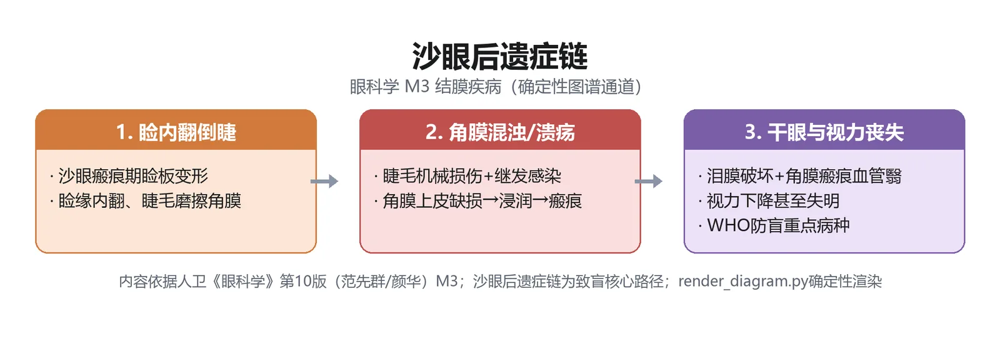
定义：沙眼（trachoma）是由沙眼衣原体（Chlamydia trachomatis）感染所致的一种慢性传染性结膜角膜炎；A、B、Ba、C 抗原型致地方流行性沙眼，D~K 型致生殖泌尿系感染与包涵体性结膜炎（教材P74）。
为什么重要：执医/期末经典必考——病原、中国 1955 年汤飞凡首次分离、WHO 诊断标准 4 选 2、Arlt 线、Herbert 小凹、角膜血管翳、后遗症六大件、阿奇霉素 1g 单次。
🧬 第一性原理：
沙眼衣原体是介于细菌与病毒之间的专性细胞内寄生微生物，以二分裂繁殖、在胞质内形成包涵体。它不直接「溶解」上皮，而是持续刺激结膜淋巴组织——急性期淋巴细胞在上下穹窿聚集形成滤泡，慢性期反复炎症刺激成纤维细胞过度分泌胶原，于是上睑结膜先在睑板下沟（Arlt 线）开始瘢痕化，渐成网状、终成白色平滑瘢痕。同时角膜缘滤泡瘢痕化形成 Herbert 小凹，角膜上皮受累后血管从前弹力层长入形成「垂帘状角膜血管翳」。如果这种慢性炎症不反复发生，结膜就不会瘢痕化；恰恰因为它双眼、反复、经接触/节肢昆虫传播、卫生条件差时高发，瘢痕才逐年收缩——瘢痕一收缩就把睑板向内拉→睑内翻倒睫，倒睫每天刷角膜→角膜混浊；杯状细胞和副泪腺被瘢痕破坏→实质性结膜干燥症；泪点/泪小管瘢痕→慢性泪囊炎。本质上就是：一场持续数年的慢性细胞内感染，把结膜从黏膜慢慢改成瘢痕组织，瘢痕一收缩就把眼睑、角膜、泪道全拉变形。
WHO 沙眼诊断标准（4 项中至少符合 2 项）（教材P75）：
| 序号 | 体征 | 解剖位置 |
|---|---|---|
| ① | 上睑结膜 ≥5 个滤泡 | 上睑板结膜 |
| ② | 典型睑结膜瘢痕 | 上睑结膜（Arlt 线→网状→白色光滑） |
| ③ | 角膜缘滤泡或 Herbert 小凹 | 角膜缘 |
| ④ | 广泛角膜血管翳 | 上方角膜，垂帘状 |
🔬 展开：MacCallan 分期与 WHO 简化分期
- MacCallan 分期（经典五期）：Ⅰ期浸润初期（上睑结膜滤泡与乳头初发）；Ⅱ期滤泡活动期（滤泡明显、血管翳）；Ⅲ期瘢痕前期（瘢痕开始出现）；Ⅳ期完全瘢痕期（白色瘢痕、Arlt 线）；Ⅺ期后遗症期（睑内翻倒睫、角膜混浊）。教材未逐字罗列，按此掌握「活动期→瘢痕期→后遗症期」三段即可。
- WHO 简化分期（SAFE 战略对应的临床分期）：TF（滤泡性炎症，上睑结膜 ≥5 个滤泡）、TI（剧烈炎症，乳头增生使血管模糊 >50%）、TS（结膜瘢痕）、TT（倒睫/睑内翻）、CO（角膜混浊）。前两项是活动期、后三项是瘢痕后遗症期。
- 治疗：活动期局部 1% 四环素眼膏 bid + 左氧氟沙星 qid × 6 周，同时口服阿奇霉素 1g 单次；或局部红霉素眼膏 bid。手术矫正倒睫及睑内翻是防止晚期沙眼失明的关键（教材P75）。
沙眼六大后遗症/并发症（教材P75）：
| 后遗症 | 机制 | 后果 |
|---|---|---|
| 睑内翻与倒睫 | 睑结膜瘢痕收缩 | 睫毛刷角膜→角膜混浊 |
| 上睑下垂 | 睑板肥厚+Müller 肌受累 | 外观+视力 |
| 睑球粘连 | 穹窿部结膜瘢痕缩短 | 眼球运动受限 |
| 角膜混浊 | 血管翳+倒睫摩擦 | 视力下降甚至失明 |
| 实质性结膜干燥症 | 杯状细胞/副泪腺瘢痕破坏 | 眼干、上皮角化 |
| 慢性泪囊炎 | 泪点/泪小管瘢痕狭窄 | 溢脓、成为反复感染灶 |
三个「特有名词」必须对上号：Arlt 线=上睑睑板下沟最早出现的白色瘢痕；Herbert 小凹=角膜缘滤泡消退后留下的小凹；垂帘状角膜血管翳=上方角膜从上往下像帘子一样垂下的新生血管。三者齐现=沙眼晚期。
沙眼诊断不能只凭「上睑滤泡+乳头」——这两项并非沙眼特有，早期常只能诊断「疑似沙眼」，必须靠 WHO 4 选 2 或结膜刮片吉姆萨染色找胞质内衣原体包涵体确诊（教材P75）。治疗上别忘「手术矫正倒睫是防盲关键」——药物治活动期，手术治后遗症。
🔴 【掌握级】病毒性结膜炎：腺病毒 EKC vs 流行性出血性结膜炎
定义：病毒性结膜炎起病快、传染性强、发病率高，通常有自限性；分急性与慢性，以前者多见，包括流行性角膜结膜炎（EKC）、流行性出血性结膜炎、咽结膜热（教材P72-73）。
为什么重要：腺病毒血清型（8/19/29/37 致 EKC；3/4/7 致咽结膜热）、肠道病毒70型致出血性结膜炎、潜伏期对比、上皮下浸润是迟发过敏——四大鉴别点常考。
🧬 第一性原理：
病毒落在结膜上皮后先在细胞内复制，直接造成上皮点状损害，同时招募淋巴细胞到结膜下——所以病毒性结膜炎刮片见大量单核细胞（细菌是多形核白细胞，这是实验室分流钥匙）。腺病毒侵犯力强，不仅结膜，还沿上皮蔓延到角膜：先上皮点状损害，7~10 天融合成较大上皮浸润，2 周后淋巴细胞到前弹力层/前基质层形成上皮下浸润——这是机体对病毒抗原的迟发型过敏反应，可持续数月甚至数年。肠道病毒70型则更「暴」：潜伏期仅 18~48 小时，血管破裂明显→显著结膜下出血。如果病毒毒力弱、患者免疫正常，1~2 周自愈；反之则角膜上皮下浸润残留数月、影响视力。本质上就是：病毒先直接杀上皮，再由迟发过敏把炎症拖成慢性角膜混浊——所以治疗上急性期抗病毒，后期上皮下浸润可用低浓度激素。
三大病毒性结膜炎鉴别（教材P73-74）：
| 项目 | 流行性角膜结膜炎（EKC） | 咽结膜热 | 流行性出血性结膜炎 |
|---|---|---|---|
| 病原 | 腺病毒 8/19/29/37 型（D 亚组） | 腺病毒 3/4/7 型 | 肠道病毒 70 型（偶柯萨奇 A24） |
| 潜伏期 | 5~7 天 | 5~6 天 | 18~48 小时 |
| 好发人群 | 20~40 岁成人 | 4~9 岁儿童青少年 | 各年龄，暴发流行 |
| 眼征 | 急性滤泡+假膜/真膜+上皮下浸润 | 急性滤泡+浅层点状角膜炎 | 显著结膜下出血（点/片状，从上向下蔓延） |
| 全身伴随 | 儿童可发热、咽痛、中耳炎、腹泻 | 咽炎+发热 ≥38℃ | 无明显全身症状 |
| 病程 | 结膜 3~4 周；上皮下浸润数月~数年 | 约 10 天自限 | 5~7 天 |
| 别名 | — | — | 「阿波罗 11 号结膜炎」 |
🔬 展开：真膜 vs 假膜——白喉、EKC、淋菌、SJS 的共同体征
- 假膜：由纤维素性渗出物凝集于上皮表面，易剥离，剥离后上皮完整、不留瘢痕。见于腺病毒 EKC、新生儿淋菌性结膜炎、流感嗜血杆菌感染。
- 真膜：渗出物累及上皮本身，强行剥离会出血并留下瘢痕。见于白喉杆菌性膜性结膜炎（坏死脱落后瘢痕，角膜一旦累及易穿孔，白喉毒素可致眼外肌和调节麻痹）。
- 临床意义：看到膜/假膜要想到上述四类；白喉杆菌性必须全身用抗生素，因为白喉毒素是全身毒血症（教材P71）。
病毒性结膜炎以自限+对症为主：冷敷+血管收缩剂减轻症状；急性期可点干扰素、0.1% 阿昔洛韦、0.15% 更昔洛韦，每小时 1 次；合并细菌感染加抗生素；严重膜/假膜或上皮下角膜炎可短期用糖皮质激素，控制后渐减至 qd 或 qod，防复发并防激素副作用（教材P73）。
🔴 【掌握级】翼状胬肉：鼻侧睑裂部的纤维血管膜
定义：翼状胬肉（pterygium）是一种向角膜表面生长、与结膜相连的纤维血管样组织，常发生于鼻侧睑裂区；不仅影响美观，还引起角膜散光导致视力下降，若遮盖视轴区严重影响视力（教材P79）。
为什么重要：部位（鼻侧）、三分（头/颈/体）、Stocker 线、进展期 vs 静止期、手术指征——高频考点。
🧬 第一性原理：
正常角膜前弹力层透明、无血管；睑裂部球结膜常年暴露在紫外线、风沙下，胶原纤维和弹力纤维发生透明样变性（这就是睑裂斑的前身）。如果紫外线刺激不持续，变性停留在睑裂斑阶段（不侵入角膜）；但当刺激叠加遗传、泪液异常、Ⅰ型变态反应、HPV 感染等因素，变性组织就会突破角膜缘、爬过前弹力层——把角膜前弹力层替换成玻璃样/弹性组织，形成三角形膜。膜头部长入角膜越深，角膜散光越大；一旦盖住瞳孔，视力骤降。本质上就是：紫外线诱发的结膜胶原变性，从「不侵入角膜的睑裂斑」一步步爬进角膜、把透明前弹力层替换成纤维血管组织。
翼状胬肉 vs 假性胬肉 vs 睑裂斑（教材P79-80）：
| 项目 | 翼状胬肉（真性） | 假性胬肉 | 睑裂斑 |
|---|---|---|---|
| 部位 | 鼻侧睑裂部，双侧多见 | 角膜任何位置 | 睑裂区角膜两侧球结膜 |
| 形态 | 三角分头/颈/体，头部在角膜 | 无头颈体分界，桥状粘连 | 黄白色三角形隆起，基底朝角膜 |
| 诱因 | 紫外线+遗传 | 外伤/手术/炎症后粘连 | 紫外线 |
| 探针 | 不能穿过 | 探针可从胬肉下方穿过 | 不侵角膜 |
| 处理 | 进行期侵瞳孔→手术 | 一般无需手术 | 无需治疗 |
🔬 展开：头/颈/体、Stocker 线与手术指征
- 三分结构：体部起自球结膜（偶起自半月皱襞/穹窿），角巩膜缘处转颈部，位于角膜的部分为头部，与下面角膜紧密相连（教材P80）。
- Stocker 线：头部前方角膜上皮内含金属色素沉积，出现常提示胬肉生长缓慢（静止期征象）。
- 进展期 vs 静止期：进展期胬肉充血肥厚、血管丰富；静止期色灰白、较薄、呈膜状。
- 手术指征：胬肉小而静止→不手术，减少风沙阳光刺激；进行性发展、侵及瞳孔区→手术。术式：单纯切除 / 切除+角膜缘干细胞移植 / 切除+自体结膜移植 / 羊膜移植——联合手术可降低复发率。术后局部抗菌药+糖皮质激素（抑制毛细血管和成纤维细胞增生，防复发）+人工泪液。
「鼻侧」两个字是眼科学反复强调的定位——翼状胬肉鼻侧多见且早于颞侧，睑裂斑也是鼻侧先发生。另外小而静止不切——因为术后复发率不低，静止期手术反而刺激它复发。
🔬 展开：翼状胬肉术后复发与联合手术原理
翼状胬肉单纯切除后复发率较高，原因是角膜缘干细胞受损后，结膜上皮和纤维血管组织会「爬」回角膜缘。所以现代术式强调联合手术：胬肉切除 + 角膜缘干细胞移植（从上方或下方健康角膜缘取一块带干细胞的结膜移植片覆盖缺损区），或自体结膜移植 / 羊膜移植。
术后三管齐下：①抗菌药防感染；②糖皮质激素点眼抑制毛细血管和成纤维细胞增生——这是防复发的关键；③人工泪液润滑眼表、稀释炎症介质、促进泪膜修复。术后随访要观察移植片存活、有无早期复发迹象（再次充血肥厚、头部重新爬向角膜）。
翼状胬肉是典型的「紫外线相关职业病」——户外工作者（农民、渔民、司机、户外建筑工）高发。预防上戴防紫外线墨镜、减少风沙阳光刺激，既防新发也防术后复发。
🟡 【熟悉级】过敏性结膜炎（五亚型）
定义：结膜对外界变应原的超敏性免疫反应，以Ⅰ型和Ⅳ型超敏反应为主；分 5 亚型——季节性、常年性、春季角结膜炎（VKC）、巨乳头性结膜炎（GPC）、特应性角结膜炎（AKC）（教材P76）。
| 亚型 | 主要机制 | 致敏原 | 典型眼征 | 累及角膜 |
|---|---|---|---|---|
| 季节性（SAC） | Ⅰ型为主 | 花粉 | 充血水肿为主，60% 伴过敏性鼻炎 | 否 |
| 常年性（PAC） | Ⅰ型为主 | 尘螨 | 轻，嗜酸粒检出率低 | 否 |
| 春季角结膜炎（VKC） | Ⅰ+Ⅳ型 | 尘螨/花粉/皮毛，与遗传相关 | 上睑巨大乳头铺路石样；角膜缘 Horner-Trantas 结节 | 盾形溃疡 |
| 巨乳头性结膜炎（GPC） | Ⅰ+Ⅳ型 | 角膜接触镜、义眼、手术缝线 | 上睑直径 >1 mm 乳头，蘑菇状 | 否 |
| 特应性角结膜炎（AKC） | Ⅰ+Ⅳ型 | 伴面部特应性皮炎 | 睑球粘连、结膜囊狭窄 | 常累及 |
诊断与治疗（教材P76-78）：诊断需同时满足症状（眼痒+异物感+分泌物增多）+体征（充血/乳头/角膜病变至少 1 项），结膜刮片见嗜酸性粒细胞支持诊断。治疗五板斧：①脱离变应原+凉敷；②抗组胺药+肥大细胞稳定剂双效制剂是首选基础药（如奥洛他定）；③肥大细胞稳定剂（色甘酸钠）要在接触变应原前用；④糖皮质激素只短期用于重症迁延；⑤免疫抑制剂（环孢素、他克莫司）用于激素不耐受者。
「双效剂首选、激素兜底、人工泪液稀释」。口服抗组胺药可能加重干眼，闭角型青光眼慎用；缩血管药只能减红、不能止痒，不常规用。
🔬 展开：过敏性结膜炎与感染性结膜炎的鉴别要点
临床上「眼红+痒」并不等于过敏——药物毒性结膜炎、干眼症、泪小管炎都可酷似。鉴别靠四件事：
| 鉴别点 | 过敏性结膜炎 | 感染性结膜炎 |
|---|---|---|
| 瘙痒 | 奇痒，越揉越痒 | 痒轻，以异物感/烧灼为主 |
| 分泌物 | 白色黏丝、量少 | 黏脓性（细菌）/水样（病毒） |
| 体征 | 充血水肿、乳头、嗜酸粒 | 滤泡/乳头+耳前淋巴结/膜 |
| 病史 | 过敏史、家族史、季节、接触镜 | 接触史、集体单位流行 |
| 刮片 | 嗜酸性粒细胞 | 多形核（细菌）/单核（病毒） |
治疗药物分层表（教材P77-78）：
| 层级 | 药物类别 | 代表药 | 适用 | 注意 |
|---|---|---|---|---|
| 一线 | 抗组胺+肥大细胞稳定剂双效 | 奥洛他定等 | 各型基础 | 首选 |
| 二线 | 单纯抗组胺药 | 局部点眼 | 轻中度 | 闭角型青光眼慎用 |
| 二线 | 肥大细胞稳定剂 | 色甘酸钠、奈多罗米 | 预防发作 | 接触变应原前用 |
| 三线 | 糖皮质激素 | 局部点眼 | 重症迁延 | 短期，防白内障/青光眼/真菌 |
| 四线 | 免疫抑制剂 | 环孢素、他克莫司 | 激素不耐受重度 | 长期维持 |
| 辅助 | 人工泪液 | 各类人工泪液 | 稀释变应原+润滑 | 全天可用 |
🟡 【熟悉级】包涵体性结膜炎（D~K 型衣原体）
定义：由 D~K 型沙眼衣原体引起，通过性接触或产道传播的急性/亚急性滤泡性结膜炎；好发于性生活频繁年轻人，多双侧（教材P75-76）。
| 分型 | 潜伏期 | 关键表现 | 治疗 |
|---|---|---|---|
| 成人包涵体性结膜炎 | 接触后 1~2 周 | 轻中度眼红+黏脓性分泌物，下睑及下穹窿滤泡为主，耳前淋巴结肿大 | 阿奇霉素 1g 单次口服；或多西环素 100 mg bid × 7 天；性伴侣同治 |
| 新生儿包涵体性结膜炎 | 出生后 5~14 天（胎膜早破可早至第 1 天） | 水样→脓性分泌物，2~3 个月后乳白色光泽滤泡，可假膜/瘢痕 | 红霉素 12.5 mg/(kg·d) 分 4 次，≥14 天；患儿父母同时治生殖道感染 |
病原分型不同：A/B/Ba/C 致沙眼（上睑滤泡+血管翳+瘢痕），D~K 致包涵体性结膜炎（下睑滤泡、无血管翳、无瘢痕后遗症）。两者都用四环素/红霉素，但包涵体性结膜炎强调「性传播、性伴侣同治、产前筛查」。
🟡 【熟悉级】泡性角膜结膜炎
定义：由微生物蛋白质引起的迟发型（Ⅳ型）免疫反应；常见病原微生物包括结核分枝杆菌、金黄色葡萄球菌、白念珠菌、球孢子菌属、沙眼衣原体（教材P78）。
要点：多见于女性、青少年及儿童，春夏好发；初起为实性隆起红色小病灶（1~3 mm），周围充血；角膜缘处三角形病灶尖端指向角膜，顶端易溃烂成溃疡，10~12 天愈合不留瘢痕。反复发作后疱疹向中央进犯、新生血管长入→束状角膜炎，愈后留带状薄翳。
治疗：治疗潜在病原（如结核、睑缘炎）；局部糖皮质激素滴眼液——结核菌体蛋白引起者对激素极敏感，24 小时内症状减轻、继续 24 小时病灶消失；合并细菌感染加抗生素；补充维生素、增强体质。｜💡 眼科学里「激素 24 小时显效」是泡性角膜结膜炎的标志性疗效。
🟡 【熟悉级】球结膜下出血
定义：球结膜下血管破裂或通透性增加引起；因球结膜下组织疏松，出血后易积聚成片状；严格说这是症状而非独立疾病，极少能找到确切病因（教材P80-81）。
要点：单眼多见，任何年龄；初期鲜红→渐变棕色，7~12 天自行吸收。相关诱因：剧烈咳嗽/呕吐、外伤、结膜炎症、高血压、动脉硬化、肾炎、血液病（白血病、血友病）、传染病（伤寒）。
治疗：找出血原因治原发病；出血早期冷敷，2 天后热敷，每天 2 次促进吸收；向患者解释消除顾虑。反复发作→必须查全身系统病（血压、凝血、血液科）。｜💡 「鲜红→棕色、7~12 天自吸、先冷后热」是三句必背。
患者往往看到「眼白一片红」就恐慌，但要分清两个「红」：球结膜下出血是眼白表面片状鲜红、边界清楚、不影响视力、7~12 天自吸；前房出血是虹膜/睫状体血管破裂出血积于前房，透过角膜看到瞳孔区平面液平、可影响视力、伴眼痛——这是急症，要双眼包扎、半卧位、立即就医。两者处理完全不同，别混淆。
🟢 【了解级】结膜变性：睑裂斑与结膜结石
- 睑裂斑（pinguecula）：睑裂区角巩膜缘连接处水平性、三角形/椭圆形、隆起、灰黄色球结膜结节；鼻侧早于颞侧、多双侧；病理为上皮下结缔组织透明样变+嗜碱性弹力纤维增多，被认为是紫外线诱发胶原变性；一般无症状，无需治疗；睑裂斑炎时给弱效激素或非甾体抗炎药；严重影响外观或干扰接触镜配戴时可切除（教材P79）。
- 结膜结石（conjunctival concretion）：睑结膜表面黄白色凝结物，见于慢性结膜炎或老年人；由脱落上皮细胞和变性白细胞凝固而成；一般无症状无需治疗；突出结膜表面引起异物感或角膜擦伤时，表麻下用异物针/尖刀剔除（教材P80-81）。
🟢 【了解级】自身免疫性结膜炎（SJS / 瘢痕性类天疱疮 / Sjögren）
- Sjögren 综合征（SS）：干眼+口干+结缔组织损害（关节炎）三征中二征即可诊断；绝经期女性多发；泪腺淋巴细胞浆细胞浸润→泪液分泌减少；虎红/丽丝胺绿染色阳性；治疗以人工泪液、封闭泪点、湿房镜对症（教材P78）。
- Stevens-Johnson 综合征（SJS）：免疫复合物沉积于真皮和结膜实质；常由磺胺、抗惊厥药、水杨酸盐、青霉素、氨苄西林、异烟肼或 HSV、金葡、腺病毒感染诱发；特征为黏膜皮肤多形性红斑，好发年轻人（35 岁后少发）；眼部急性期黏液脓性结膜炎+浅层巩膜炎，慢性期杯状细胞丢失→严重干眼+睑内翻倒睫+角膜血管瘢痕（教材P78-79）。
- 瘢痕性类天疱疮：反复发作的非特异性结膜炎→结膜下纤维化→睑球粘连，分 Ⅳ 期（Ⅰ结膜下纤维化、Ⅱ穹窿缩窄、Ⅲ睑球粘连、Ⅳ广泛粘连致眼球运动障碍）；结膜活检见嗜酸性粒细胞、基底膜免疫荧光阳性（IgG/IgM/IgA）；治疗应在瘢痕形成前开始，口服氨苯砜或环磷酰胺（教材P79）。
🟢 【了解级】结膜肿瘤（详见第17章眼肿瘤）
要点：结膜肿瘤少见，分良性、癌前病变、恶性；良性最常见为结膜色素痣（儿童多见，神经外胚层来源）；恶性包括原发性获得性黑变病（PAM）和结膜黑色素瘤。本模块仅在翼状胬肉鉴别时提及——良性肿瘤一般不侵犯角膜，恶性肿瘤生长迅速、外观不规则，病理可确诊（教材P80）。详细分期与治疗见模块 M10 / 第17章。
```text
主诉: 眼红 + 异物感/痒/畏光/流泪
│
▼
★ 第一问: 分泌物性状?
│
┌────┼─────────────┬──────────────┐
▼ ▼ ▼ ▼
脓性 黏液脓性 水样/浆液 白色黏丝
(细菌) (衣原体?) (病毒) (过敏)
│ │ │ │
▼ ▼ ▼ ▼
超急性? 滤泡位置? 有无出血? 有无乳头?
24h内 下睑=包涵体 显著出血= 铺路石大乳头=VKC
大量脓 上睑=沙眼 肠道病毒70型 接触镜史=GPC
│ │ (EHC) │
▼ ▼ ▼ ▼
★高危 活动期沙眼 自限,抗病毒 双效抗组胺+肥大细胞
淋球菌 →局部+ 1%四环素×6周 稳定剂为基础
全身头孢曲松/ +阿奇1g单次 激素短期兜底
青霉素G ★晚期倒睫→手术
│
▼
累及角膜? → 按模块4角膜炎处理
切勿包扎患眼; 结膜囊冲洗(3%硼酸/生理盐水)
```
> [!TIP] 读图要点
> 这条链的两个 ★ 是考试最常考的临床拐点：①24 小时内大量脓性分泌物必须按超急性细菌性结膜炎处理，标本采集后立即局部+全身用药；②沙眼活动期药物+晚期倒睫手术——药物救活动期，手术救失明。
📈 D3 结膜疾病严重度谱系梯度图
严重度梯度 疾病示例 处置重心
────────────────────────────────────────────────────────────────────────
轻度·自限/外观病 睑裂斑(79)、结膜结石(80)、球结膜下出血(81) 观察/解释,无需治
│
▼
中度·自限性红眼 急性卡他性结膜炎(71)、咽结膜热(73)、 局部对症+防传染
EKC(73)、流行性出血性结膜炎(74)、
季节性/常年性过敏性结膜炎(76)
│
▼
中重·迁延/瘢痕化 沙眼活动期(74)、慢性细菌性结膜炎(71)、 长程药物+治疗上游病灶
包涵体性结膜炎(75)、春季角结膜炎(76)、
泡性角膜结膜炎(78)
│
▼
★ 高危·可致盲 新生儿淋菌性眼炎/脓漏眼(71)、 局部+全身足量抗生素
脑膜炎球菌性结膜炎(71)、 24h内启动,防角膜穿孔
晚期沙眼(睑内翻倒睫/角膜混浊/干眼)(75)
│
▼
★ 严重眼表破坏 Stevens-Johnson(78)、瘢痕性类天疱疮(79)、 全身激素/免疫抑制剂
Sjögren综合征干眼(78)、翼状胬肉侵瞳孔(80) 眼表重建+手术矫正
────────────────────────────────────────────────────────────────────────判定「何时从普通红眼滑向急症」，记住四条：①24 小时内大量脓性分泌物+结膜高度水肿——淋球菌/脑膜炎球菌，立即全身抗生素；②新生儿出生 2~5 双眼大量脓漏——脓漏眼，按败血症级别治；③红眼+畏光+视力下降+角膜斑点状混浊——已累及角膜，按角膜炎处理；④反复发作的结膜下出血——查高血压、凝血、血液病。
🌳 D4 鉴别决策树：红眼 → 分泌物 → 病原 → 治疗
红眼患者
├─ 分泌物性状
│ │
│ ├─ 脓性 / 黏脓性
│ │ ├─ 24h内急起、大量脓、结膜高度水肿
│ │ │ ├─ 新生儿(出生2~5天) → 淋球菌脓漏眼 → 青霉素G/头孢曲松全身+局部
│ │ │ ├─ 成人生殖器-眼接触史 → 淋球菌 → 头孢曲松1g单次,角膜受累则1~2g/d×5d
│ │ │ └─ 儿童+发热+脑膜炎 → 脑膜炎球菌 → 青霉素全身,接触者利福平预防
│ │ │
│ │ └─ 1~3天起病、3~4天高峰、春秋流行
│ │ → 急性卡他性(红眼病) → 广谱抗生素q1~2h,3%硼酸冲洗,★不包扎
│ │
│ ├─ 水样 / 浆液性 + 滤泡
│ │ ├─ 5~7天潜伏期 + 耳前淋巴结大 + 晚期上皮下浸润
│ │ │ → 腺病毒EKC(8/19/29/37型) → 抗病毒+冷敷,严重假膜短期激素
│ │ ├─ 18~48h潜伏期 + 显著结膜下出血
│ │ │ → 流行性出血性结膜炎(肠道病毒70型) → 自限,对症
│ │ └─ 4~9岁 + 咽炎 + 发热≥38℃
│ │ → 咽结膜热(腺病毒3/4/7型) → 自限,10天左右
│ │
│ ├─ 黏液脓性 + 滤泡 + 耳前淋巴结
│ │ ├─ 上睑滤泡 + 血管翳 + Arlt线 + Herbert小凹
│ │ │ → 沙眼(A/B/C型) → 1%四环素×6周+阿奇1g单次,倒睫手术
│ │ └─ 下睑滤泡 + 性生活频繁/新生儿
│ │ → 包涵体性结膜炎(D~K型) → 阿奇1g,性伴侣同治
│ │
│ └─ 白色黏丝 + 奇痒 + 乳头
│ ├─ 花粉季 + 过敏性鼻炎 → 季节性(SAC) → 双效抗组胺
│ ├─ 尘螨 + 全年 → 常年性(PAC) → 除螨+双效
│ ├─ 上睑铺路石大乳头 + Horner-Trantas结节 → VKC → 双效+激素短期
│ ├─ 接触镜/义眼史 + 乳头>1mm → GPC → 停戴+双效
│ └─ 面部特应性皮炎 → AKC → 双效+免疫抑制剂
│
└─ 伴角膜刺激征(痛+畏光+视力下降)
→ 已累及角膜,按模块4角膜炎处理(不再按结膜炎治)这棵树是把本模块所有「红眼」鉴别压缩成一张图。临床遇到红眼，先问分泌物、再问起病速度、再看滤泡位置、最后问痒不痒——四问下来，病原基本锁定，治疗方向自然浮现。
🔄 主动回忆区
- 结膜炎常见症状有____、____、____、____、____；重要体征有结膜充血、水肿、渗出物、____、____、结膜下出血、____、肉芽肿、假性上睑下垂、____。（教材P69）
- 急性与慢性结膜炎的分界是病程____周；超急性细菌性结膜炎由____和____引起，潜伏期____小时内；新生儿淋球菌性结膜炎又称「____」，潜伏期____天。（教材P70-71）
- 预防新生儿淋球菌/衣原体性结膜炎：出生后常规用____%硝酸银滴眼1次或____%四环素眼膏。（教材P72）
- WHO 沙眼诊断标准 4 项中至少符合 2 条：①____；②____；③____；④____。（教材P75）
- 沙眼特有体征：上睑结膜睑板下沟白色瘢痕称____；角膜缘滤泡瘢痕化称____；上方角膜垂帘状新生血管称____。（教材P75）
- 流行性出血性结膜炎由____型引起，潜伏期____小时，别名「____」；流行性角膜结膜炎由腺病毒____型引起，潜伏期____天。（教材P73-74）
- 翼状胬肉好发于____侧睑裂部，分头、颈、体；____提示生长缓慢；小而静止____手术，进行期侵及____才手术。（教材P79-80）
- 过敏性结膜炎五亚型：____、____、____、____、____；首选基础药为____。（教材P76-78）
学完本模块，你应该能：①按分泌物性状把红眼分成细菌/病毒/衣原体/过敏四条主线；②背出淋球菌脓漏眼的潜伏期、治疗与预防；③说出沙眼 WHO 4 选 2 标准、三大特有体征与六大后遗症；④区分 EKC、咽结膜热、流行性出血性结膜炎；⑤记住翼状胬肉鼻侧发病与手术指征；⑥牢记「结膜炎不包扎、累及角膜按角膜炎治、奈瑟菌必须全身用药」三条铁律。若以上都能口述，即可进入模块4角膜疾病。
📘 模块4：角膜疾病
M4 · 角膜疾病
重点等级：🔴掌握6个 / 🟡熟悉3个 / 🟢了解4个
教学范围：角膜解剖与生理（透明性/五层结构）；角膜炎症总论（分类/病程分期）；细菌性角膜炎（铜绿假单胞菌/葡萄球菌）；真菌性角膜炎；单纯疱疹病毒性角膜炎；角膜软化症/角膜变性；角膜移植。
关联模块：模块3（结膜疾病——眼表屏障的前哨）；模块5（葡萄膜疾病——角膜炎症常伴前房反应/KP）；模块10（眼外伤——化学伤/穿通伤可直接致角膜穿孔）。
谱系位置：从自限性浅层上皮病变（SPK、丝状角膜炎）→感染性角膜炎（细菌/真菌/病毒）→角膜穿孔/眼内炎→角膜瘢痕致盲，本模块是外眼致盲链的核心环节。
预计阅读：约 20 分钟（正文）+ 图表约 8 分钟。
先行组织者：角膜是眼球最前面那层「透明玻璃」，既是屈光间质（总屈光力约43.25D，占全眼74%）又是无血管的免疫赦免组织。这一章的核心矛盾是——一旦这层透明屏障被病原突破，透明性就会被破坏：细菌液化、真菌钻行、病毒潜伏复发，都以「角膜混浊+溃疡+视力下降」收场。本模块解决三件事：①正常角膜凭什么透明、损伤后怎么修复；②细菌/真菌/病毒三型角膜炎怎么鉴别（期末+执医双必考）；③溃疡往哪转归（云翳→白斑→穿孔→葡萄肿）。
角膜病是我国主要致盲性眼病之一。炎症、外伤、变性、遗传都可致病，病理过程复杂，延误诊治常留下不可逆的角膜瘢痕——而角膜位于屈光通路最前端，哪怕只是中央区一小块混浊，也会让视力明显下降。理解这一章的钥匙是两条线：一条是「透明性怎么维持、怎么被破坏」（解剖生理→炎症病理），另一条是「不同病原在角膜上留下什么指纹」（细菌的脓、真菌的苔、病毒的枝）。抓住这两条线，零散的临床表现就能被机制串起来。
🧩 前置知识检查
- 回顾：房水循环与前房结构——角膜炎时「前房积脓」来自房水，虹膜睫状体炎时「KP」沉在内皮面。若对前房/房角陌生，回看模块1解剖。
- 回顾：泪膜三层（脂质/水液/黏蛋白）——干眼与暴露性角膜炎都因泪膜不稳而起，细节在本模块末尾与模块2。
- 若陌生则回补：「睫状充血 vs 结膜充血」的区别是红眼鉴别的第一步，在模块3结膜炎已建立。
- 若陌生则回补：糖皮质激素的作用与副作用——为什么真菌性角膜炎禁用、上皮型HSK慎用而基质型HSK反要使用，这一矛盾点必须想通。
- 若陌生则回补：前房积脓与角膜后沉着物（KP）的区别——积脓沉在前房下方、是房水中的白细胞；KP沉在角膜内皮面、是虹膜炎的标志。这两个体征在角膜溃疡病例题里经常同时出现，别混。
1. 透明性四要素：完整上皮+泪膜（光滑光学界面）、基质胶原规则排列（衍射光栅）、角膜无血管、内皮Na⁺-K⁺泵维持半脱水（教材P82）。
2. 角膜炎四联征：眼红+眼痛+畏光流泪+视力下降——角膜神经密度全身最高，故刺激症状突出（教材P82、P85）。
3. 病程四阶段：浸润期→溃疡形成期（后弹力层膨出→穿孔→瘘）→消退期→愈合期（云翳/斑翳/白斑三级瘢痕）（教材P83-84）。
4. 三型角膜炎鉴别是绝对核心：细菌=起病急、脓性分泌物、G⁺首选头孢/G⁻首选氨基糖苷；真菌=植物外伤史、牙膏样外观、伪足卫星灶、首选那他霉素/两性霉素B、禁用激素；病毒=树枝状溃疡、角膜知觉减退、更昔洛韦一线、基质型可加激素（教材P85-91）。
5. 铜绿假单胞菌：戴接触镜/角膜异物史，液化性坏死+黄绿色黏稠分泌物+浸润环+大量前房积脓，24-48h可穿孔，最凶险（教材P85）。
6. HSK复发机制：HSV原发后潜伏三叉神经节，抵抗力下降时逆轴浆流回角膜——约1/3复发在2年内，预防口服阿昔洛韦（HEDS研究）（教材P89、P91）。
> [!SUCCESS] 记忆锚点
> 一句话串起全模块：「五层透明 → 屏障破 → 三型溃疡（细菌脓/真菌苔/病毒枝）→ 云翳白斑穿孔」。把这句记牢，角膜病的骨架就有了。
📋 结构化笔记
🔴 【掌握级】角膜五层结构与透明性维持
定义：角膜从前到后分5层——上皮层、前弹力层（Bowman膜）、基质层、后弹力层（Descemet膜）、内皮层；上皮表面覆泪膜（教材P82）。
为什么重要：五层各自的再生能力不同，决定了损伤后「留不留疤、能不能恢复透明」——这是角膜移植分层的解剖基础。
🧬 第一性原理：
透明不是「天生看不见」，而是四个条件同时成立的结果。如果上皮完整+泪膜光滑，光线在界面不散射；如果基质胶原纤维像栅栏一样规则排列，光通过时不发生衍射干涉；如果角膜无血管，就没有血细胞挡光；如果内皮泵持续把基质里的水抽走，基质保持半脱水、纤维间距均匀。这四条任何一条崩了——上皮缺损→光散射；胶原排列乱→混浊；血管长入→遮挡；内皮泵失效→基质水肿增厚——角膜立刻变混浊、视力下降。本质上就是：角膜透明是「无血管+规则排列+半脱水+光滑界面」四者动态平衡的结果，任何一环破坏都以混浊收场。
| 层次 | 特点 | 损伤后转归（教材P82-83） |
|---|---|---|
| 上皮层 | 5-6层鳞状上皮，可再生 | 可再生，不留瘢痕 |
| 前弹力层（Bowman） | 无细胞胶原膜 | 不可再生，由上皮/瘢痕填充 |
| 基质层 | 占角膜厚度90%，胶原板层规则排列 | 瘢痕修复，永久混浊 |
| 后弹力层（Descemet） | 内皮分泌的基底膜 | 可再生（内皮分泌） |
| 内皮层 | 单层六边形细胞，Na⁺-K⁺泵 | 不可再生，靠移行扩大覆盖；损伤重则不可逆水肿 |
「上弹基后内」——可不可生记两句：上皮可生不留疤，后弹内皮分泌生；前弹基质不可生，基质瘢痕最留影。
五层再生能力的临床意义是直接的：上皮擦伤（如揉眼、倒睫）1-2天就长好、不留痕；但如果损伤深到基质层，哪怕治好了也会留永久瘢痕——这就是为什么同样是角膜受损，浅者云翳、深者白斑。后弹力层虽然能再生，但它是一层相当坚韧的薄膜，溃疡烂到它时它会膨出却暂时不穿，这给了临床一个「后弹力层膨出」的预警窗口；内皮则是角膜的「水泵」，一旦失代偿（大泡性角膜病变），角膜就像泡了水的墙皮一样肿起来。
🔬 展开：角膜屈光力与神经分布
角膜前表面中央1/3为光学区（近球面），中央平均曲率半径7.8mm（6.7-9.4mm），总屈光力约43.25D，占全眼屈光力（58.60D）的74%——这就是屈光手术（LASIK/全飞秒）通过切削角膜改变屈光度的解剖依据（教材P82）。角膜是全身神经末梢密度最高的器官之一：睫状长神经分支穿过前弹力层在上皮下形成神经丛，故任何深浅角膜病变都引起疼痛+畏光+眼睑痉挛，眨眼加重。营养来源：房水中葡萄糖+泪膜弥散的氧+角膜缘血管供氧周边（教材P82）。此外，角膜周边/角膜缘富含树突状细胞、朗格汉斯细胞与补体，故免疫性角膜病好发于周边（蚕蚀性溃疡、泡性角结膜炎），而感染性角膜病好发于中央（教材P82）。
角膜代谢所需营养主要来自房水中葡萄糖和泪膜弥散的氧，周边角膜还接受角膜缘血管供氧。这意味着如果闭眼过久（如睡眠、戴镜过夜），角膜氧供主要靠睑板血管和房水，容易缺氧水肿——这就是为什么戴接触镜过夜是铜绿假单胞菌感染的高危行为。神经分布密集则解释了为什么哪怕很表浅的角膜上皮擦伤也剧痛难忍，而巩膜（神经少）同样深度的损伤却不怎么痛。
「内皮细胞不可再生」是高频考点——内皮损伤后只能靠邻近细胞移行、增大、扩展覆盖，不能分裂增殖；损伤超过代偿限度即出现不可逆角膜水肿（大泡性角膜病变的根源）。别把后弹力层（可再生）与内皮层（不可再生）混为一谈。
🔴 【掌握级】角膜炎病理四阶段与溃疡转归
定义：角膜炎虽病因各异，但病理过程分4阶段——浸润期、溃疡形成期、溃疡消退期、愈合期（教材P83）。
为什么重要：四阶段解释了「为什么角膜炎越拖越重、为什么会穿孔、愈合后为什么留云翳/白斑」，是一切角膜溃疡病例题的时间轴骨架。
🧬 第一性原理：
正常角膜无血管、无炎性细胞。致病因子侵袭后，角膜缘血管网首先充血（因为角膜本身无血管，血管反应只能从周边缘来），炎性渗出+白细胞进入病灶形成灰白色混浊灶——这就是浸润期。如果此时及时治疗，渗出可吸收、角膜恢复透明。如果没控制住，细菌毒素+组织酶导致基质坏死脱落，形成溃疡；溃疡越深、基质越薄，眼压就把仅剩的后弹力层顶成水珠状膨出（后弹力层膨出）；再穿破就穿孔，房水涌出、虹膜被顶到破口（虹膜脱出）；破口不愈合则形成角膜瘘——瘘和穿孔都极易继发眼内感染、眼球萎缩。本质上就是：炎症→坏死→组织缺失→眼压把薄处顶破→感染入眼内，是一条「屏障层层失守」的滑坡链。
| 阶段 | 关键病变 | 可逆性（教材P83-84） |
|---|---|---|
| ①浸润期 | 角膜缘充血+灰白浸润灶 | 可吸收，恢复透明 |
| ②溃疡形成期 | 基质坏死脱落→溃疡→后弹力层膨出→穿孔→瘘 | 进行性加重，穿孔致眼内炎 |
| ③消退期 | 浸润减轻、坏死停止、症状改善 | 治疗起效标志 |
| ④愈合期 | 上皮再生+结缔组织充填→瘢痕 | 留云翳/斑翳/白斑 |
四阶段不是线性时间轴，而是「治疗能否及时介入」的开关。浸润期是黄金窗口——此时炎性渗出还没造成组织坏死，用药后角膜可以完全恢复透明；一旦进入溃疡形成期，基质开始液化坏死，即便治愈也会留疤。临床上判断「还在浸润期还是已形成溃疡」，靠裂隙灯看有没有组织缺损凹陷：只是灰白混浊=浸润；已经凹下去一块=溃疡。后弹力层膨出是穿孔前最后一站，眼压把薄如蝉翼的后弹力层顶成透明水珠，此时任何揉眼、咳嗽、打喷嚏都可能让它瞬间破裂。
🔬 展开：三级瘢痕与继发性青光眼转归
愈合期按溃疡深浅留三级瘢痕（教材P84）：
- 角膜云翳：薄如云雾，能透见虹膜纹理。
- 角膜斑翳：较厚略白，仍可透见虹膜。
- 角膜白斑：瓷白色，不能透见虹膜。
若瘢痕中嵌有虹膜组织=粘连性角膜白斑（提示曾穿孔）；白斑大+虹膜广泛粘连→房角堵→继发性青光眼；高眼压把混杂虹膜的瘢痕顶成紫黑色隆起=角膜葡萄肿。内因性角膜炎（多在基质层）一般不形成溃疡，但炎症持续久都可长入角膜新生血管；严重角膜炎可伴虹膜睫状体炎（多为反应性无菌性，但真菌可直接侵入眼内）（教材P84）。
「云翳 vs 斑翳 vs 白斑」的唯一鉴别点是能否透见虹膜纹理：能透见=云翳（薄），仍可透见=斑翳（中），不能透见=白斑（厚）。粘连性白斑提示穿孔史——这是「曾经穿破」的考古证据，常考。
🔴 【掌握级】细菌性角膜炎（铜绿假单胞菌 vs 葡萄球菌）
定义：细菌感染引起的角膜炎症，致上皮缺损+基质坏死，又称细菌性角膜溃疡；病情危重，未治可穿孔、眼内感染（教材P85）。
为什么重要：最常见的化脓性角膜炎，铜绿假单胞菌因戴接触镜高发，是急诊重症；G⁺/G⁻首选抗生素是执医高频。
🧬 第一性原理：
角膜上皮是第一道屏障——如果上皮完整，绝大多数细菌无法入侵；恰恰是角膜外伤、剔除异物、戴接触镜、慢性泪囊炎、长期用激素/糖尿病/维生素A缺乏这些因素把屏障拆了或把免疫力降了，细菌才能在角膜上立足。细菌分泌毒素+胶原酶溶解基质→溃疡迅速扩大；G⁺球菌（葡萄球菌）多形成局限脓肿；G⁻杆菌（尤其铜绿）产酶强、液化坏死快。本质上就是：屏障破损+免疫力下降→细菌定植→毒素酶解基质→液化坏死→穿孔，谁的酶强、谁的进展就快。
| 菌种 | 诱因 | 溃疡特征 | 前房反应 | 凶险度（教材P85-86） |
|---|---|---|---|---|
| 金黄色葡萄球菌 | 已受损角膜（大泡/HSK/干眼） | 圆形椭圆局灶脓肿，灰白浸润，边界清 | 可前房积脓 | 中，可致基质脓疡穿孔 |
| 肺炎链球菌 | 外伤/慢性泪囊炎 | 中央基质深椭圆溃疡，匍行边缘，后弹力膜放射皱褶 | 常积脓+后弹力膜纤维素沉着 | 中重，可穿孔 |
| 铜绿假单胞菌 | 戴接触镜/角膜异物剔除后 | 液化性坏死，黄绿黏稠脓性分泌物，黄白浸润环 | 大量前房积脓 | 极凶险，24-48h穿孔→眼内容物脱出/全眼球炎 |
| 摩拉氏菌 | 酒精中毒/糖尿病/免疫低下 | 下方卵圆溃疡，边界清 | 积脓少 | 较轻 |
| 淋球菌/脑膜炎球菌 | 新生儿/成人生殖泌尿感染 | 眼睑高度水肿+大量脓性分泌物 | 基质浸润坏死 | 猛，新生儿常穿孔 |
🔬 展开：G⁺/G⁻首选药与局部给药强化模式
- G⁺球菌首选：头孢菌素，代表50mg/ml头孢唑林（教材P86）。
- G⁻杆菌首选：氨基糖苷类，1.3%-1.5%妥布霉素。
- 不明/混合：头孢+氨基糖苷联合；威胁视力者头孢+氟喹诺酮。
- 链球菌/淋球菌：首选青霉素G；耐药淋球菌→头孢曲松。
- 二线：万古霉素（耐药表葡/金葡）。
- 给药途径：局部滴眼最有效——急性期高浓度频繁滴眼（15-30min一次）使基质速达治疗浓度；眼膏/凝胶夜间维持；一般不需全身用药，穿孔/扩散时才全身给抗生素。
- 辅助：并发虹膜睫状体炎用1%阿托品散瞳；胶原酶抑制剂（谷胱甘肽、半胱氨酸）抑溃疡；药物无效/即将穿孔→结膜瓣遮盖或角膜移植。
细菌性角膜炎的典型四联征是眼红+眼痛+畏光流泪+视力下降，伴眼睑球结膜水肿、睫状或混合充血。早期只是角膜上皮小溃疡、下面边界模糊的致密浸润灶；若没控制，浸润迅速扩大、基质溶解形成溃疡，表面和结膜囊多有脓性或黏液脓性分泌物，可伴不同程度前房积脓。前房积脓本质是房水中的白细胞沉积在前房下方——它本身不是感染，而是角膜炎症「溢出」到前房的反应。治疗后病情控制仍需维持用药一段时间防复发，尤其铜绿假单胞菌，绝不能看好转就立刻停药。
铜绿假单胞菌角膜炎必须在24小时内强力干预——它是唯一能在一天内把透明角膜溶成胶冻的细菌，黄绿色黏稠分泌物+接触镜史是识别钥匙。别把它当普通细菌性角膜炎慢慢治。另外，细菌性角膜炎局部频繁滴眼与结膜下注射效果相当，优先选频繁滴眼，这是反直觉点。
🔴 【掌握级】真菌性角膜炎
定义：致病真菌引起的感染性角膜炎症，致盲率高，温热潮湿气候/农作物收割季节多见（教材P87）。
为什么重要：植物性外伤史+牙膏样外观+伪足卫星灶是鉴别铁证；禁用激素是绝对原则；那他霉素/两性霉素B一线。
🧬 第一性原理：
真菌（尤其丝状真菌）平时在土壤/植物上，树枝、甘蔗叶、稻草划伤角膜时把菌丝直接植入基质。真菌不像细菌那样急性化脓，它起病慢、刺激症状轻——这恰恰危险，因为患者拖到视力明显下降才就诊，此时菌丝已钻入深层。丝状真菌穿透力极强，能穿过后弹力层进入前房，在后房（虹膜后）繁殖→顽固真菌性虹膜炎→瞳孔膜闭→继发青光眼/眼内炎。本质上就是：植物外伤把真菌种入基质→菌丝缓慢钻行→伪足卫星灶扩展→穿后弹力层入眼内→药物难透入→必须手术。
| 特征 | 真菌性角膜炎表现（教材P87-88） |
|---|---|
| 诱因 | 植物性外伤（树枝/甘蔗叶/稻草）；长期激素/抗生素；接触镜 |
| 起病 | 缓慢、亚急性，刺激症状轻但视力障碍 |
| 浸润灶 | 白色/乳白致密，表面欠光泽呈牙膏样/苔垢样 |
| 特征灶 | 伪足+卫星灶+免疫环（抗原-抗体环），角膜后斑块状KP |
| 前房积脓 | 灰白色黏稠糊状（非流动性） |
| 特殊菌种 | 茄病镰刀菌最凶（数周穿孔+恶性青光眼）；弯孢菌浅在、那他霉素效好 |
真菌性角膜炎为什么「看起来不重、拖起来要命」？因为菌丝不像细菌那样引起剧烈急性炎症，它在基质里像树根一样缓慢蔓延，患者只有轻度异物感和视力下降，往往拖一两周才就诊。可一旦菌丝穿过后弹力层进入前房，就躲到虹膜后方的后房繁殖——这里药物很难透入，会形成顽固的真菌性虹膜炎、瞳孔膜闭，甚至继发恶性青光眼。这就是教材反复强调「真菌一旦入前房，病情将难以控制」的原因，也是为什么早期诊断、早期用那他霉素/两性霉素B密集滴眼如此关键。
🔬 展开：诊断与治疗——为什么禁激素、疗程为什么6周
- 确诊：角膜共聚焦显微镜活体直接找菌丝（无创早期）；刮片10%-20% KOH湿片、乳酚棉蓝/LPCB染色；培养用Sabouraud培养基30-37℃需4-6周（教材P88）。
- 一线药：5%那他霉素（丝状真菌首选）+ 0.15%两性霉素B（酵母菌首选）；联合那他霉素+两性霉素B/氟康唑。
- 给药：开始每0.5-1小时一次，晚涂眼膏；疗程至少6周——真菌起效慢，过早停药必复发。
- 为什么禁激素：激素抑制免疫、促进菌丝生长扩散——真菌一旦入前房即难控。
- 手术：药物无效未侵深层→板层角膜移植；即将/已穿孔→穿透性角膜移植；术后继续抗真菌防复发。
真菌性角膜炎刺激症状轻但病灶重——症状与体征「分离」是特点，别因为患者「不怎么痛」就低估。看到植物外伤史+牙膏样溃疡+卫星灶+黏稠前房积脓，立刻按真菌处理，绝对不能上激素（会酿成真菌性眼内炎）。
🔴 【掌握级】单纯疱疹病毒性角膜炎（HSK）
定义：HSV（多为HSV-1）引起的角膜感染，是致盲性角膜病最主要原因，临床特点为反复发作、逐次加重（教材P88-89）。
为什么重要：树枝状溃疡是眼科最经典体征；上皮型vs基质型的激素使用原则相反，是最容易答错的考点。
🧬 第一性原理：
HSV原发感染（婴幼儿多见，94%不发病）后不被清除，而是潜伏在三叉神经节感觉神经元里——这是病毒的「堡垒」。当机体抵抗力下降（感冒发热、用激素/免疫抑制剂），潜伏病毒被激活，沿三叉神经逆轴浆流回到角膜。如果病毒直接在上皮细胞内复制破坏→上皮型（树枝状溃疡）；如果病毒抗原引发机体免疫炎症攻击基质/内皮→基质型/内皮型。所以上皮型靠抗病毒杀病毒，基质型必须抗病毒+激素抑制免疫攻击——两者治疗逻辑相反。本质上就是：病毒潜伏神经节→抵抗力下降再激活→逆轴浆回角膜→上皮直接破坏或免疫攻击深层。
| HSK分型 | 机制 | 特征体征 | 激素原则（教材P89-91） |
|---|---|---|---|
| 上皮型（2/3以上） | 病毒在上皮内复制 | 树枝状溃疡（末端分叉结节膨大）→地图状；角膜知觉减退 | 禁用/慎用激素（促病毒扩散） |
| 神经营养性 | 神经损伤+泪少+药毒 | 圆形椭圆溃疡，睑裂区，恢复期/静止期 | 同神经麻痹性，忌抗病毒药过量 |
| 基质型（免疫性最常见） | 病毒侵袭+免疫炎症 | 基质水肿浸润+新生血管；坏死型见黄白坏死灶 | 抗病毒+激素（免疫炎症为主） |
| 内皮型（盘状最常见） | 内皮迟发型超敏 | 中央毛玻璃样水肿+内皮面KP，轻中度虹膜炎 | 抗病毒+激素 |
HSV是DNA病毒，人是唯一自然宿主，眼部/口唇感染多为HSV-1型（少数HSV-2）。原发感染94%以上婴幼儿不发病，发病者多表现为口唇疱疹、急性滤泡性结膜炎，树枝状角膜炎树枝短、出现晚、持续短，多自限。真正麻烦的是复发——病毒潜伏在三叉神经节，感冒发热、劳累、全身或局部用激素/免疫抑制剂时被激活，逆轴浆流回到角膜。人群中HSV-1血清抗体阳性率高达50%-90%，只是多数人不发病。每次复发角膜混浊都比上一次重，所以HSK是致盲性角膜病最主要的原因。
🔬 展开：树枝状溃疡识别与治疗用药
- 树枝状溃疡荧光素染色：中央溃疡深绿、病灶边缘淡绿（因边缘上皮内仍含活病毒）；末端分叉+结节状膨大是其识别点；进展成地图状溃疡（教材P90）。
- 角膜知觉减退是上皮型HSK特征——病灶处知觉降，但周围相对敏感，故仍痛。
- 一线抗病毒：0.15%更昔洛韦（GCV）眼水/眼膏（生物利用度高、半衰期8h，一线）；0.1%阿昔洛韦（ACV）眼水+3%ACV眼膏；泛昔洛韦/伐昔洛韦口服。
- 严重/复发/移植术后：口服ACV/GCV 不少于2周。
- 预防复发：HEDS研究证明口服ACV减少上皮型/基质型复发；约1/3复发在原发2年内；控制诱因（感冒、劳累、激素）。
上皮型HSK早期只是几个针尖样小水疱，数小时就破掉形成点状角膜炎，很快融合成树枝状——这个「水疱期」很短，临床上常看不到。树枝状溃疡末端的分叉和结节状膨大是它与伪树枝状（棘阿米巴、早期真菌）鉴别的关键：伪树枝状没有真正的末端膨大、也不会融合成地图状。荧光素染色时中央溃疡区着深绿、边缘因活病毒存在呈淡绿，这个双色表现是教科书级体征。浅层溃疡1-2周愈合，但基质浸润要数周到数月吸收，可能留云翳。
上皮型HSK禁用激素、基质型HSK要用激素——这是最易混的反向考点。理由：上皮型是病毒直接杀细胞，激素削弱免疫让病毒扩散；基质型是免疫复合物攻击，激素抑制炎症反而保护基质。一句话：「上皮杀病毒、基质压免疫」。
🔴 【掌握级】三型感染性角膜炎鉴别（期末+执医双必考）
核心鉴别表：
| 鉴别点 | 细菌性角膜炎 | 真菌性角膜炎 | 病毒性角膜炎（HSK） |
|---|---|---|---|
| 起病 | 急骤，进展快 | 缓慢、亚急性 | 复发型，感冒/劳累后诱发 |
| 诱因 | 外伤/异物/接触镜/泪囊炎 | 植物性外伤/长期激素抗生素 | 感冒发热/用激素/抵抗力降 |
| 刺激症状 | 重（痛+畏光+流泪） | 轻（症状与体征分离） | 中等，异物感/摩擦感 |
| 分泌物 | 脓性/黏液脓性，铜绿为黄绿色黏稠 | 少，溃疡面牙膏样/苔垢样 | 水样/黏液样，无脓性 |
| 浸润形态 | 边界模糊致密浸润→溃疡 | 伪足+卫星灶+免疫环，乳白致密 | 树枝状/地图状（上皮型） |
| 前房积脓 | 大量，黄白（铜绿极多） | 灰白黏稠糊状 | 轻，内皮面KP |
| 角膜知觉 | 正常 | 正常 | 减退（特征） |
| 病原学检查 | 涂片G染色+细菌培养药敏 | 共聚焦显微镜找菌丝+KOH湿片 | 刮片找多核巨细胞/核内包涵体；PCR |
| 首选治疗 | G⁺→头孢唑林；G⁻→妥布霉素 | 那他霉素/两性霉素B | 更昔洛韦（上皮型）；基质型+激素 |
| 激素原则 | 合并虹膜睫状体炎可酌情 | 禁用 | 上皮型禁；基质/内皮型用 |
| 疗程 | 依药敏，控制后维持 | 至少6周 | 口服≥2周；长期预防复发 |
🔬 展开：治疗前为什么必须先刮片
临床工作中，「看到角膜溃疡就先上抗生素/激素」是错误流程。正确做法是在开始药物治疗前，从浸润灶边缘刮取病变组织涂片——因为一旦用药，病原菌被抑制，涂片与培养阳性率骤降（教材P86）。细菌做革兰染色+培养药敏；真菌做KOH湿片+共聚焦显微镜；病毒做刮片找多核巨细胞/核内包涵体或PCR。经验治疗阶段按「广谱覆盖G⁺+G⁻」（头孢+氨基糖苷或氟喹诺酮）起步，待培养药敏回报后再降阶梯为窄谱敏感药。
三型角膜炎之所以能被分开，根本原因是病原的生物学特性不同：细菌在细胞外繁殖、产酶化脓，所以起病急、脓性分泌物多；真菌是真核生物、菌丝钻行慢，所以症状轻但病灶深、有伪足卫星灶；病毒在细胞内复制并潜伏神经节，所以反复发作、树枝状、知觉减退。理解了这三层生物学差异，鉴别就不靠死记表格，而是能从「患者怎么得的病、长什么样、痛不痛」反推病原。
「急脓细菌、慢苔真菌、枝复病毒」——起病急+脓性分泌物=细菌；植物外伤+牙膏样+卫星灶=真菌；树枝状+知觉减退+反复发作=病毒。
这张表之所以是「期末+执医双必考」，是因为它直接对应三类急诊处理：细菌性要立刻广谱抗生素频繁滴眼，真菌要那他霉素/两性霉素B且绝对不能上激素，上皮型HSK要更昔洛韦而基质型反而要加激素。三者治疗逻辑几乎两两相反——细菌性偏激进杀菌、真菌偏耐心抗真菌、病毒性要分上皮/基质走两条路。如果鉴别错了，最典型的灾难就是把真菌性角膜炎误当细菌性、甚至加用激素，结果菌丝爆发式生长、数周内穿孔眼内炎。
🟡 【熟悉级】角膜炎分类与非感染性角膜炎速览
要点：按病因分感染性（细菌/真菌/病毒/棘阿米巴）与非感染性（免疫性、营养不良性、神经麻痹性、暴露性）（教材P84、P93-94）。
| 类型 | 核心机制 | 代表病（教材P93-94） |
|---|---|---|
| 角膜基质炎 | 病原体迟发型超敏累及基质 | 先天性梅毒最常见（5-20岁，红色毛刷状新生血管→幻影血管；合并Hutchinson齿/马鞍鼻/马刀胫骨）；结核、HSV、VZV |
| 神经麻痹性 | 三叉神经破坏→知觉丧失+营养障碍 | 知觉丧失但症状轻，一旦感染易穿孔；治原发病+人工泪液+睑缘缝合 |
| 暴露性 | 眼睑不能闭合→角膜干燥 | 下1/3角膜受累；治原发病（睑外翻/突眼/面神经麻痹）+夜间眼膏 |
| 丝状角膜炎 | 变性上皮+黏液成丝 | 丝状物一端附着一端游离，瞬目加重闭眼减轻；机械拭除+绷带镜 |
| 蚕蚀性角膜溃疡（Mooren） | 自身免疫，周边部慢性疼痛溃疡 | 沿角膜缘环状发展、潜掘状隆起缘，不侵犯巩膜；局部环孢素/FK506，重者板层/穿透移植 |
梅毒角膜基质炎的「红色毛刷状新生血管→幻影血管」+Hutchinson齿是先天梅毒题眼；蚕蚀性溃疡诊断前须排除类风湿关节炎、Wegener肉芽肿等全身病。
这一组非感染性角膜炎的共同特点是角膜本身没被病原直接感染，而是免疫、神经、暴露、营养因素在搞破坏。角膜基质炎最经典的病因是先天梅毒——青少年期发病，先单眼后双眼，基质深层像毛刷一样长满新生血管，炎症消退后血管萎缩成灰白色细线叫「幻影血管」；同时合并Hutchinson齿、马鞍鼻、马刀胫骨这些先天梅毒体征，是先天梅毒三联征的眼表窗口。神经麻痹性角膜炎则要警惕一个反直觉点：角膜已经烂得很厉害，患者却不怎么痛——因为三叉神经断了、知觉没了，这时候最容易漏诊，一旦继发感染就极易穿孔。
🟡 【熟悉级】棘阿米巴角膜炎
要点：棘阿米巴原虫（滋养体+包囊）感染，约90%与角膜接触镜相关（教材P92）。
机制：土壤/淡水/泳池/谷物中的原虫污染接触镜护理液→单眼发病；眼痛剧烈与早期体征不符；早期假树枝状/放射状角膜神经炎，进展为中央环状浸润/盘状病变，前房反应少见。诊断靠共聚焦显微镜找包囊。治疗：0.02%-0.1%氯己定/0.01%-0.02% PHMB联合，疗程4个月以上，不用激素。｜💡 接触镜相关+剧烈眼痛+环状浸润=棘阿米巴，易误诊为HSK或真菌。
棘阿米巴的迷惑性在于早期表现很像HSK（假树枝状），但它的眼痛异常剧烈——比体征严重得多，这是重要线索。它在环境中以滋养体和包囊两种形式存在，包囊对药物抵抗力极强，所以疗程必须长达4个月以上，中途停药必复发。约90%患者与戴接触镜有关，尤其戴镜游泳、洗澡、过夜戴镜。糖皮质激素会让包囊活化、病情恶化，一般不主张使用。
🟡 【熟悉级】角膜变性（老年环/带状/边缘性/大泡性）
要点：角膜变性=既往疾病引起的退行性变，与遗传无关（区别于角膜营养不良）（教材P95）。
| 变性类型 | 部位/特征 | 关键考点（教材P95-97） |
|---|---|---|
| 角膜老年环 | 周边基质类脂质沉着，约1mm宽，与角膜缘间有透明带 | 50-60岁约60%，80岁几乎全有；40岁以下出现→查血脂/动脉硬化；不需治疗 |
| 带状角膜病变 | 前弹力层钙化，睑裂区横带状 | 继发于慢性葡萄膜炎/高钙血症/慢性肾衰/长期含汞滴眼液；治原发病+依地酸二钠（EDTA）螯合钙 |
| 边缘性角膜变性（Terrien） | 双侧周边角膜扩张变薄，鼻上象限 | 男:女=3:1，20-30岁起；变薄为正常1/4-1/2；不规则近视散光不能矫正；药物无效→板层移植 |
| 大泡性角膜病变 | 内皮失代偿→基质水肿+上皮下水疱 | 白内障摘除/IOL术后最常见；雾视晨重暮轻，水疱破时剧痛；高渗剂+保护，重者内皮移植/穿透移植 |
变性=后天、既往病引起、与遗传无关；营养不良=基因异常引起、进行性、与系统病无关。两者别混。
这一组变性里最常考的是老年环和大泡性角膜病变。老年环是周边基质里的类脂质沉积，外圈与角膜缘之间隔着一圈透明角膜带——这圈透明带是它与角膜缘疾病鉴别的标志。50-60岁人群约60%有老年环，80岁以上几乎人人都有，属于正常老化、不用治；但40岁以下就出现要警惕高脂蛋白血症/动脉粥样硬化。大泡性角膜病变则是内皮失代偿的终局——白内障摘除/IOL术后最常见，患者雾视晨重暮轻（夜间闭眼时角膜缺氧水肿加重），上皮水疱破时剧痛，治疗靠高渗剂脱水，重者要做内皮移植或穿透移植。
🟢 【了解级】角膜软化症（维生素A缺乏）
要点：维生素A严重缺乏致角膜上皮干燥、角质化、坏死软化穿孔，多见于营养不良婴幼儿；病程呈夜盲→眼干燥→Bitot斑→角膜软化穿孔。属全身营养缺乏在眼表的终末表现。｜💡 与细菌性角膜炎全身诱因表中「维生素A缺乏」呼应（教材P85），治疗以补充维生素A+眼表保护为主。
维生素A是维持角膜上皮正常角化的必需物质。早期只是夜盲（暗适应下降），接着结膜角膜干燥失去光泽，眼球结膜外侧出现三角形泡沫状白斑叫Bitot斑；继续发展则角膜上皮角质化、灰白色混浊、软化坏死，甚至穿孔。这病在发达国家已少见，但在营养不良、偏食、慢性腹泻患儿中仍可见，核心教训是——角膜上皮健康依赖全身营养，眼表问题有时是全身病的窗口。
🟢 【了解级】角膜营养不良（前部/基质/后部）
要点：基因异常引起的角膜进行性损害，分前部、基质、后部三类（教材P97-99）。
| 类型 | 遗传/基因 | 特征（教材P98-99） |
|---|---|---|
| 上皮基底膜营养不良（地图-点状-指纹状） | 最常见前部，多退行性少常显 | 中央上皮灰白小点+地图样+指纹状线；反复上皮剥脱 |
| 颗粒状角膜基质营养不良 | 常显，5q31 TGFBI基因（Arg555Trp） | 10-20岁发病，中央前弹力层下灰白圆团块，病灶间角膜完全正常；玻璃样颗粒 |
| Fuchs角膜内皮营养不良 | 常显，1p34.3-p32 COL8A2 | 绝经期女性，50岁后；角膜小滴→内皮失代偿→大泡性角膜病变 |
这一组是「基因异常导致的进行性角膜结构损害」，与全身病无关，按受累层次分前/中/后三类。上皮基底膜营养不良最常见，表现为地图-点状-指纹状三种形态混合，患者常反复发生上皮剥脱、眼痛。颗粒状基质营养不良的特点是病灶之间的角膜完全正常——这与变性（沿血管分布、弥漫）形成鲜明对比。Fuchs内皮营养不良好发于绝经期女性，早期只是后弹力层上的小滴（cornea guttata），没症状；等到内皮细胞数降到临界值以下，就进展为大泡性角膜病变，此时只能靠内皮移植或穿透移植。
🟢 【了解级】圆锥角膜与先天异常
要点：圆锥角膜=局限性角膜圆锥样突起+基质变薄，青春期前后双侧，与揉眼（过敏性结膜炎）密切相关（教材P99-100）。三大体征：Fleischer环（圆锥底铁质沉着褐环）、Vogt线纹（垂直板层皱褶，加压消失）、Munson征（下转眼压下睑缘成角皱褶）。早期诊断靠角膜地形图；治疗早期框架/硬镜，进展快→穿透/深板层移植，近年紫外线核黄素交联（CXL）。大角膜（X连锁隐性，男，水平径>13mm，眼压正常，与先天青光眼鉴别）；小角膜（<10mm，浅前房，易闭角型青光眼）。
圆锥角膜的早期信号是青少年近视散光快速加深、框架镜矫正越来越差。因为角膜中央变薄前突成锥形，产生不规则散光，普通框架镜矫正不了，只能戴硬性接触镜。三大体征分别对应不同病理：Fleischer环是铁质沉着（眼泪中的铁在圆锥底部沉积）、Vogt线纹是板层皱褶（加压可暂时展平）、Munson征是下转眼时锥形顶到下睑缘。最有效的早期诊断工具是角膜地形图——它能在体征还不明显时就发现颞下象限角膜变陡。治疗上，紫外线核黄素交联（CXL）通过让胶原纤维交联变硬，延缓圆锥进展，是近年的重要进展。
🟢 【了解级】角膜移植（免疫赦免与分层概念）
要点：角膜因无血管+免疫赦免，是成功率最高的器官移植（教材P83）。但角膜病变后赦免状态改变→易排斥。两类术式：
| 术式 | 切除范围 | 适用（教材P88、P91、P96） |
|---|---|---|
| 板层角膜移植 | 替换前层（上皮+基质前部），保留自身内皮 | 病变未侵深层（真菌早期、Terrien、圆锥角膜内皮正常者）；排斥率低 |
| 穿透性角膜移植 | 全层切除（含内皮），换全层供体 | 即将/已穿孔（真菌、HSK瘢痕、大泡性角膜病变）；排斥率较高 |
术后须继续抗病原+局部/全身抗病毒（HSK）或抗真菌（真菌），并用环孢素/FK506预防排斥。
角膜为什么能成为「成功率最高的器官移植」？因为它原本无血管——没有血管就没有把免疫细胞直接送进去的通道；再加上前房相关免疫偏离（ACAID）等机制，正常角膜处于「免疫赦免」状态，异体植片不容易被攻击。但这个赦免是有条件的：一旦角膜发炎、新生血管长入，赦免就被打破，术后排斥率骤升。所以板层移植（保留患者自身内皮、只换前层）排斥率低；穿透移植（连内皮一起换）排斥率高。HSK术后尤其要继续口服抗病毒药，否则病毒会在移植片上复发。
```text
正常角膜: 上皮完整 + 基质规则 + 无血管 + 内皮泵半脱水
│
▼
屏障破坏(外伤/异物/接触镜/泪囊炎/激素/VitA缺)
│
▼
★ 致病因子入侵(细菌/真菌/病毒/棘阿米巴)
│
├──细菌: 毒素+胶原酶 → 基质液化坏死 → 脓性溃疡
├──真菌: 菌丝钻行 → 伪足卫星灶 → 穿后弹力层入前房
├──病毒: 神经节激活回角膜 → 树枝状/免疫性基质损害
└──棘阿米巴: 接触镜污染 → 环状浸润 + 剧烈眼痛
│
▼
浸润期(灰白混浊,可吸收) ──未治──► 溃疡形成期(基质变薄)
│ │
│ ▼
│ ★ 后弹力层膨出(透明水珠)
│ │
│ ▼
│ 角膜穿孔 → 虹膜脱出 → 角膜瘘
│ │
│ ▼
│ ★ 继发眼内感染 → 眼球萎缩失明
│
▼
消退期(治疗起效) → 愈合期: 上皮再生+结缔组织充填
│
▼
瘢痕三级: 云翳(透见虹膜) < 斑翳(仍透见) < 白斑(不透见)
│
└─穿孔史→粘连性白斑→房角堵→继发青光眼→角膜葡萄肿
```
> [!TIP] 读图要点
> 两个★是生死拐点：①屏障破坏是一切感染的入口——戴接触镜过夜、剔异物不无菌、长期点激素，都是在主动拆屏障；②后弹力层膨出=即将穿孔的最后警告，此时必须紧急手术/强力用药，不能再观察。
📈 D3 角膜病严重度谱系梯度
严重度梯度 疾病示例 处置重心
────────────────────────────────────────────────────────────────────
轻度·自限上皮病 SPK(95)、丝状角膜炎(94)、Thygeson(95) 人工泪液/低浓度激素,多自限
│
▼
中度·非感染炎症 蚕蚀性Mooren(94)、基质炎(先天梅毒)(93) 免疫抑制+原发病治疗
│
▼
中重·感染性角膜炎 细菌性(85)、真菌性(87)、HSK上皮型(89) 病原特异性药+频繁滴眼
│
▼
★ 凶险·液化/穿孔 铜绿假单胞菌(85)、茄病镰刀菌(87)、 急诊强效药/急诊移植
│ 坏死型基质HSK(90)、棘阿米巴(92)
▼
★ 终末·致盲 角膜白斑/粘连性白斑、角膜葡萄肿、 角膜移植复明
眼球萎缩、大泡性角膜病变(97)
────────────────────────────────────────────────────────────────────出现以下任一条按急症处理：①戴接触镜后急性眼痛+黄绿色分泌物→铜绿假单胞菌，24h内强效抗生素；②植物外伤后缓慢加重的牙膏样溃疡→真菌，禁激素；③溃疡上方见透明水珠状膨出→后弹力层膨出即将穿孔；④溃疡处房水漏流+前房变浅→角膜穿孔，急诊；⑤HSK复发伴基质黄白坏死灶→坏死型基质炎，警惕快速穿孔。
🌳 D4 鉴别决策树：「红眼+眼痛+视力下降」→ 三型角膜炎分流
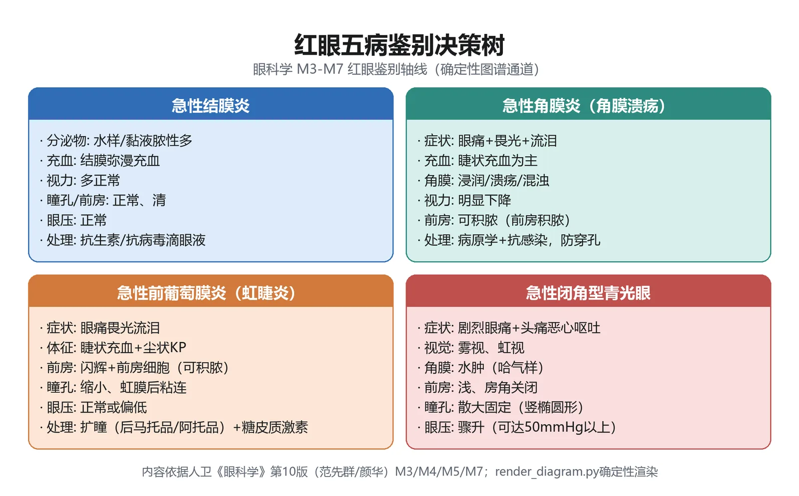
主诉: 红眼+眼痛+畏光流泪+视力下降 (角膜溃疡四联征)
│
├─第一步: 问诱因与起病速度
│ ├─ 急骤起病(数小时-1天) + 脓性分泌物
│ │ ├─ 戴接触镜/异物剔除史 + 黄绿色黏稠分泌物+浸润环
│ │ │ └─ ► 铜绿假单胞菌角膜炎 (急诊! G-首选妥布霉素)
│ │ ├─ 已受损角膜上圆形脓肿,边界清
│ │ │ └─ ► 葡萄球菌性 (G+首选头孢唑林)
│ │ └─ 外伤/泪囊炎+中央椭圆匍行溃疡+大量积脓
│ │ └─ ► 肺炎链球菌性
│ │
│ ├─ 缓慢起病(数天-数周) + 刺激症状轻 + 植物外伤史
│ │ ├─ 牙膏样/苔垢样乳白溃疡 + 伪足+卫星灶+免疫环
│ │ │ └─ ► 真菌性角膜炎 (共聚焦找菌丝; 那他霉素/两性霉素B; 禁激素)
│ │ └─ 接触镜相关 + 剧烈眼痛 + 环状浸润 + 前房反应少
│ │ └─ ► 棘阿米巴角膜炎 (PHMB/氯己定; 疗程4月; 禁激素)
│ │
│ └─ 反复发作 + 感冒/劳累/用激素后诱发
│ ├─ 树枝状/地图状溃疡 + 角膜知觉减退
│ │ └─ ► 上皮型HSK (更昔洛韦; 禁激素)
│ └─ 基质水肿浸润+新生血管 / 盘状毛玻璃水肿+KP
│ └─ ► 基质型/内皮型HSK (抗病毒+激素; 口服ACV预防复发)
│
└─第二步: 病原学检查 (治疗前必做)
├─ 细菌: 浸润灶边缘刮片 G染色 + 培养+药敏
├─ 真菌: 共聚焦显微镜 + KOH湿片 + Sabouraud培养4-6周
├─ 病毒: 刮片找多核巨细胞/核内包涵体 + PCR测病毒DNA
└─ 棘阿米巴: 共聚焦找包囊 + 培养决策树第一步靠起病速度+诱因+分泌物形态分流，第二步用病原学检查确诊。临床实际常先按经验广谱治疗、再按培养调药——但真菌禁激素这条红线在任何情况下都不能破。
这套鉴别思维不仅用于考试，更是急诊诊室里的真实决策路径。一个「红眼+眼痛+视力下降」的患者进来，若不问一句「有没有戴接触镜、有没有被树枝戳过、最近有没有感冒发热」，就可能把铜绿假单胞菌当普通角膜炎、把真菌当细菌治、把上皮型HSK误上激素。反过来，只要把这三句问诊问全，大部分感染性角膜炎能在裂隙灯下就有个八九不离十的判断，再靠刮片/共聚焦/培养确诊。
🔄 主动回忆区
- 角膜从前到后分5层：____、____、____、____、____；其中可再生不留瘢痕的是____，不可再生的是____和____，后弹力层由____分泌再生。（教材P82-83）
- 角膜透明性靠四要素维持：____、____、____、____；角膜总屈光力约____D，占全眼屈光力的____%。（教材P82）
- 角膜炎病程4阶段：____、____、____、____；三级瘢痕按能否透见虹膜分____、____、____。（教材P83-84）
- 铜绿假单胞菌角膜炎常见诱因是____和____；溃疡特征是____分泌物+____浸润环+____前房积脓；G⁻杆菌首选抗生素是____。（教材P85-86）
- 真菌性角膜炎最主要诱因是____外伤；溃疡呈____样外观，特征灶为____、____、____；一线药是____和____；绝对禁用____。（教材P87-88）
- HSK树枝状溃疡末端有____和____膨大；特征性体征是角膜____；上皮型用____（药名），禁用____；基质型则在抗病毒基础上加用____。（教材P90-91）
- 板层角膜移植保留患者自身____；穿透性角膜移植替换____；角膜因处于____状态，是成功率最高的器官移植。（教材P83、P88）
学完本模块，你应该能：①说出角膜五层及各自再生能力；②按四阶段解释溃疡转归与三级瘢痕；③在床边把细菌/真菌/病毒/棘阿米巴四型角膜炎分开；④记住铜绿假单胞菌的凶险与急救；⑤守住「真菌禁激素、上皮型HSK禁激素、基质型HSK用激素」三条红线。若以上五条都能口述，模块4即过关，可进入模块5葡萄膜疾病。
把这五条串起来看，角膜病的复习其实就是两条主线：一条是解剖生理决定转归——五层结构中谁能再生、谁不能，决定了溃疡愈合后留云翳还是白斑、是板层移植还是穿透移植；另一条是病原指纹决定治疗——细菌的脓、真菌的苔、病毒的枝，每一种体征背后都对应一类首选药和一条激素使用红线。抓住这两条主线，零散的临床表现和数值就不再是死记硬背，而是能从机制推出来的结论。
📘 模块5：葡萄膜疾病
M5 · 葡萄膜疾病
重点等级：🔴掌握7个 / 🟡熟悉6个 / 🟢了解4个
教学范围：葡萄膜解剖与生理；葡萄膜炎总论（病因/分类/症状体征）；前葡萄膜炎（虹膜睫状体炎）；中间葡萄膜炎；后葡萄膜炎（脉络膜炎）；全葡萄膜炎；Vogt-小柳-原田病（VKH）与白塞病鉴别；化脓性葡萄膜炎（眼内炎）概念。
关联模块：模块4（角膜疾病——鉴别"红眼"）、模块7（青光眼——继发性青光眼/瞳孔闭锁与房水循环）、模块8（玻璃体与视网膜——眼内炎/ARN/视网膜脱离）、模块10（眼外伤——交感性眼炎与外伤性眼内炎）。
谱系位置：从自限性前葡萄膜炎、慢性迁延型（中间/Fuchs），到双眼肉芽肿性全葡萄膜炎（VKH/交感性眼炎）、复发性血管闭塞型（Behcet），再到暴发性感染性眼内炎——是一条"眼后段受累越重、全身免疫病越活跃、致盲风险越高"的梯度。
预计阅读：约 18 分钟（正文）+ 图表约 8 分钟。
先行组织者：葡萄膜是眼球壁的中层血管膜（虹膜+睫状体+脉络膜），血流丰富而缓慢、富含黑色素相关抗原，天生就是一块"易被自身免疫系统攻击、易被血源性病原体种植"的组织。本模块解决三件事：①葡萄膜炎按解剖位置怎么分；②最常见的前葡萄膜炎（虹膜睫状体炎）长什么样、怎么治、有哪三大并发症；③两个必鉴别的全身免疫病——VKH（双眼肉芽肿性+脑膜/皮肤/听力受累）与 Behcet（复发性口腔溃疡+生殖器溃疡+皮肤针刺反应+全葡萄膜炎）。
🧩 前置知识检查
- 回顾：房水循环路径为"睫状体睫状突→后房→瞳孔→前房→前房角小梁网→Schlemm管→睫状前静脉"。若对该通路生疏，先回看模块1眼解剖与模块7青光眼章节。
- 回顾：血-房水屏障由睫状体无色素上皮与虹膜血管内皮构成；一旦破坏，血浆蛋白与炎症细胞逸入房水，即出现"前房闪辉"与"前房细胞"。
- 若陌生则回补：角膜后沉着物（KP）靠裂隙灯直接镜检；眼底与脉络膜病变靠检眼镜、FFA（荧光素眼底血管造影）、ICGA（吲哚青绿脉络膜造影）与OCT。
- 若陌生则回补：睫状肌麻痹剂（后马托品/阿托品/托吡卡胺）既扩瞳又麻痹睫状肌，是本模块治疗急性前葡萄膜炎的"必需药"，其药理见药理学传出神经系统章节。
1. 葡萄膜炎新定义：现已不局限于葡萄膜本身，而是泛指发生于葡萄膜、视网膜、视网膜血管及玻璃体的炎症总称；好发青壮年、易复发、可致盲（教材P105）。
2. 解剖位置四分法（国际葡萄膜炎研究组1979）：前葡萄膜炎、中间葡萄膜炎、后葡萄膜炎、全葡萄膜炎；病程≤3个月为急性，>3个月为慢性（教材P105-106）。
3. 前葡萄膜炎最常见，占我国葡萄膜炎约50%；核心表现链为"眼痛+畏光流泪+睫状充血+KP+前房闪辉/前房细胞+虹膜后粘连+瞳孔缩小"（教材P106-108）。
4. 三大并发症必背：并发性白内障（后囊下混浊）、继发性青光眼、低眼压及眼球萎缩（教材P108）。
5. 治疗两原则：立即扩瞳防/拉开虹膜后粘连（首选后马托品，严重者阿托品），迅速抗炎（糖皮质激素滴眼液，绝大多数非感染性，不用抗生素、不需全身用药）（教材P109）。
6. VKH vs Behcet 鉴别是🟡必考：VKH=双眼肉芽肿性全葡萄膜炎+脑膜刺激征+白癜风/毛发变白脱发+听力障碍；Behcet=复发性口腔溃疡+生殖器溃疡+皮肤损害（针刺反应阳性）+眼葡萄膜炎，与HLA-B51相关（教材P112-114）。
> [!SUCCESS] 记忆锚点
> 一句话串起本模块："前葡萄膜炎最常见，痛+充+KP+粘连是核心；三并发（白内/青/萎缩）要警惕；扩瞳+激素是治疗；VKH看脑皮发听，白塞看口生肤眼"。
📋 结构化笔记
🔴 【掌握级】葡萄膜炎的定义、病因与分类
葡萄膜炎是发生于葡萄膜、视网膜、视网膜血管及玻璃体的炎症总称，好发青壮年，易复发、可致盲（教材P105）
为什么重要：定义的"扩展边界"与"解剖位置四分法"是总论第一考点。
🧬 第一性原理：
葡萄膜本身富含色素与黑色素相关抗原，相邻的视网膜（S抗原、IRBP）与晶状体也含多种致葡萄膜炎活性抗原；脉络膜血流丰富而缓慢——这意味着抗原一暴露就容易被免疫系统"看见"，血流一慢病原体就容易"种植"。如果眼内血-组织屏障完整、免疫系统对自身眼抗原处于耐受状态，这些抗原就安静地藏在眼内、不引发炎症；恰恰是因为感染、外伤、免疫遗传（HLA）、创伤后花生四烯酸代谢产物四条路径之一打破了耐受，Th17/Th1过度激活、调节性T细胞功能下降，葡萄膜才开始反复发炎。本质上就是：一块"自带多种自身抗原、血流缓慢"的血管膜，在免疫耐受被打破后成为自身攻击的靶点。
🔬 展开：四大病因与HLA遗传关联
- 感染因素：细菌、真菌、病毒、寄生虫、立克次体可直接侵犯，或经抗原-抗体-补体复合物、分子模拟（病原体与眼组织交叉反应）致病；分内源性与外源性（外伤/手术）两类（教材P105）。
- 自身免疫因素：视网膜S抗原、IRBP、黑色素相关抗原在免疫紊乱时被识别，Th17/Th1过度激活、Treg功能下降或数量减少，导致发生、复发与慢性化（教材P105）。
- 创伤及理化损伤：激活花生四烯酸代谢——环氧合酶途径生成前列腺素与血栓素A2，脂氧合酶途径生成白三烯，共同介导急性炎症（教材P105）。
- 免疫遗传机制：强直性脊柱炎伴发葡萄膜炎与HLA-B27相关；VKH与HLA-DR4、DRw53、CTLA4等相关；Behcet与HLA-B5、HLA-B51及IL-10、IL-23R等基因相关（教材P105）。
| 分类维度 | 分型（教材P105-106） | 临床举例 |
|---|---|---|
| 病因 | 感染性 / 非感染性（特发性、创伤性、自身免疫性、风湿性伴发、伪装综合征） | 结核性、梅毒性；AS伴发、Behcet |
| 临床病理 | 肉芽肿性 / 非肉芽肿性 | 羊脂状KP→肉芽肿；尘状KP→非肉芽肿 |
| 解剖位置（最常用） | 前、中间、后、全葡萄膜炎 | 虹膜睫状体炎；睫状体扁平部炎；脉络膜炎；VKH/Behcet |
| 病程 | 急性（≤3个月）/ 慢性（>3个月） | HLA-B27相关多急性；Fuchs多慢性 |
肉芽肿性 ≠ 一定感染、非肉芽肿性 ≠ 一定过敏——教材明确指出感染与非感染因素均可引起两型炎症，且同一患者不同阶段可互相转换（教材P106）。考试若出现"肉芽肿性就是结核"的绝对化表述，直接判错。
🔴 【掌握级】前葡萄膜炎的临床表现
包括虹膜炎、虹膜睫状体炎、前部睫状体炎三型，占我国葡萄膜炎约50%；急性者眼痛、畏光、流泪、视物模糊，慢性者症状隐匿但并发症重（教材P106-108）
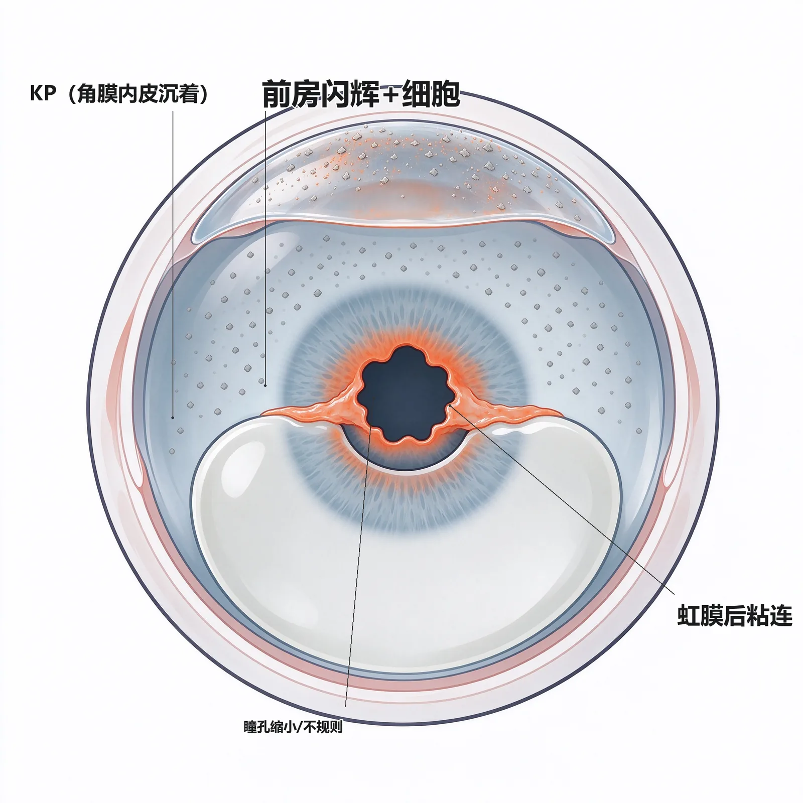
为什么重要：体征链（KP/闪辉/细胞/粘连/瞳孔）是期末与执医最高频考点。
🧬 第一性原理：
前葡萄膜（虹膜+睫状体）紧贴前房与后房，炎症一旦发生，炎症介质与细胞必然泄漏到最近的房水里。正常时血-房水屏障把蛋白挡在血管内，房水清亮透明；炎症时屏障破坏→蛋白漏出=前房闪辉；中性粒细胞/淋巴细胞漏出=前房细胞；细胞沉积到角膜内皮上=KP；纤维素性渗出让虹膜后表面与晶状体前表面"粘"在一起=虹膜后粘连；瞳孔括约肌持续痉挛=瞳孔缩小；若360°全粘=瞳孔闭锁，若膜盖瞳孔=瞳孔膜闭。如果屏障不破坏、没有渗出，就不会有"闪辉、KP、粘连、小瞳孔"这一整套表现。本质上就是：前房是葡萄膜炎症的"第一个排污口"，所有体征都是漏进房水的成分在不同位置沉积的结果。
🔬 展开：KP三型与三种分布——形态定性质
- 尘状KP：中性粒细胞+淋巴细胞+浆细胞构成；主要见于非肉芽肿性前葡萄膜炎（教材P106）。
- 中等大小KP：主要见于Fuchs综合征、青光眼睫状体炎综合征、病毒性角膜炎伴发的前葡萄膜炎（教材P106）。
- 羊脂状KP：单核巨噬细胞+类上皮细胞构成；主要见于肉芽肿性葡萄膜炎（教材P106）。
- 分布：①下方三角形分布最常见；②瞳孔区分布见于Fuchs、青光眼睫状体炎综合征、病毒性角膜炎伴发；③弥漫性分布见于Fuchs与病毒性角膜炎伴发（教材P106）。
| 体征 | 本质（教材P106-108） | 提示意义 |
|---|---|---|
| 睫状/混合性充血 | 角膜缘周围表层巩膜血管充血 | 急性前葡萄膜炎常见；须与角膜炎、急性闭青鉴别 |
| KP | 炎症细胞/色素沉积于角膜后表面 | 形态→肉芽肿/非肉芽肿定性 |
| 前房闪辉 | 血-房水屏障破坏、蛋白入房水 | 不等于活动炎症，不是激素点眼指征 |
| 前房细胞 | 房水中炎症细胞（灰白尘状颗粒） | 反映活动炎症的可靠指标 |
| 前房积脓 | 大量炎症细胞沉积下方房角呈液平 | 严重活动炎症（Behcet约25%出现） |
| 虹膜后粘连 | 虹膜后表面与晶状体前表面纤维素粘连 | 散瞳后呈梅花/梨状/不规则瞳孔 |
| 虹膜膨隆 | 广泛后粘连→后房水不能入前房→虹膜前膨 | 瞳孔阻滞，可继发青光眼 |
| 瞳孔闭锁/膜闭 | 360°后粘连 / 纤维膜盖瞳孔区 | 瞳孔阻滞型继发青光眼 |
"前房闪辉=活动炎症=该点激素"是经典错误。教材明确：前葡萄膜炎消退后血-房水屏障恢复需时，闪辉可持续存在；急性闭角型青光眼、眼钝挫伤也可致闪辉。真正反映活动炎症的是"前房细胞"而不是"闪辉"（教材P106-107）。
🔬 展开：三种虹膜结节与瞳孔变形谱系
虹膜在炎症时可出现三种结节，位置与性质各有提示：①Koeppe结节位于瞳孔缘，非肉芽肿性与肉芽肿性炎症均可出现；②Busacca结节位于虹膜实质内，白色/灰白色半透明，主要见于肉芽肿性炎症；③虹膜肉芽肿位于虹膜实质中，粉红色不透明结节，主要见于结节病引起的前葡萄膜炎。瞳孔变形谱系：点状后粘连→散瞳后梅花状瞳孔；360°全周后粘连→瞳孔闭锁；纤维膜覆盖整个瞳孔区→瞳孔膜闭。新鲜后粘连被拉开时，晶状体前表面遗留环形色素沉着，是既往虹膜睫状体炎的"考古学"证据（教材P107-108）。
🔴 【掌握级】前葡萄膜炎三大并发症
并发性白内障、继发性青光眼、低眼压及眼球萎缩（教材P108）
为什么重要：三大并发症是"为什么必须积极扩瞳抗炎"的理由，常考因果链。
🧬 第一性原理：
睫状体是房水分泌器官、晶状体靠房水代谢供养、小梁网是房水引流通道——前葡萄膜的炎症正好笼罩这三个结构。反复发作/慢性化两条路径决定转归：①炎症细胞、纤维素、组织碎片堵小梁网 + 虹膜周边前粘连 + 瞳孔闭锁/膜闭阻断房水从后房到前房→房水引流失败→继发性青光眼；②房水成分异常→晶状体代谢受损+长期点糖皮质激素→后囊下型并发性白内障；③炎症长期破坏睫状体→睫状体脱离/萎缩→房水分泌减少→眼压过低→最终眼球萎缩。如果炎症能被早期、充分控制在睫状体与小梁网可逆阶段，就不会走到"白内障/青光眼/萎缩"三部曲。本质上就是：前葡萄膜炎的三大并发症分别打在"晶状体代谢、房水引流、房水分泌"三个房水相关环节上。
🔬 展开：继发性青光眼的三条阻塞路径
- 小梁网阻塞：炎症细胞、纤维素性渗出、组织碎片直接堵在小梁网。
- 引流角受阻：虹膜周边前粘连 + 小梁网炎症使房水外流阻力升高。
- 瞳孔阻滞：瞳孔闭锁、瞳孔膜闭阻断房水由后房进入前房，后房压力升高、虹膜前膨（虹膜膨隆）。
三大并发症口诀："一白（并发性白内障后囊下）、一青（继发青光眼三路径）、一萎缩（低眼压眼球萎缩）"。其中白内障既可是炎症本身所致，也可是长期点激素所致——考试常把"激素性后囊下白内障"作为陷阱选项。
🔴 【掌握级】急性前葡萄膜炎的诊断与鉴别
突发眼痛、眼红、畏光、流泪；睫状充血、尘状KP、明显前房闪辉、大量前房细胞，可伴纤维素渗出、前房积脓、瞳孔缩小、虹膜后粘连（教材P108-109）
为什么重要：与"急性结膜炎""急性闭角型青光眼"的红眼鉴别是病例题必考点。
🧬 第一性原理：
红眼的鉴别本质是"充血部位+前房内容+瞳孔形态+眼压"四件事。结膜充血越靠穹隆越重、血管可推动→结膜炎；睫状充血围绕角膜缘→前葡萄膜炎/角膜炎；角膜上皮水肿+前房浅+眼压极高+瞳孔椭圆散大→急性闭角型青光眼。如果只看到"眼红"就开抗生素眼药水，既漏掉睫状充血背后的虹膜睫状体炎，也漏掉可能致盲的闭角型青光眼。本质上就是：把"红"拆成充血部位、前房细胞、瞳孔、眼压四个维度，红眼三病自然分开。
| 鉴别点 | 急性结膜炎 | 急性前葡萄膜炎 | 急性闭角型青光眼（教材P109） |
|---|---|---|---|
| 主诉 | 异物感、烧灼感、分泌物多 | 眼痛、畏光、流泪、视物模糊 | 视力骤降、头痛、恶心呕吐 |
| 充血 | 结膜充血（穹隆重） | 睫状充血/混合充血 | 混合充血、角膜雾状水肿 |
| 角膜 | 透明 | 透明、可见KP | 上皮水肿、雾状混浊 |
| 前房 | 正常 | 闪辉+大量炎症细胞、可积脓 | 浅前房、闪辉但无炎症细胞 |
| 瞳孔 | 正常 | 缩小、后粘连、梅花状 | 椭圆形散大 |
| 眼压 | 正常 | 正常或偏低 | 显著升高 |
急性闭角型青光眼也可有前房闪辉，但绝无大量前房炎症细胞；瞳孔是"散大固定椭圆"而不是"缩小+梅花状"；眼压是"高"而不是"正常/偏低"。这三点任意一点相反，诊断就反过来——千万别把闭青当葡萄膜炎上散瞳药，也别把葡萄膜炎当闭青上缩瞳药。
🔬 展开：病史与实验室检查如何锁定病因
急性前葡萄膜炎临床表现易诊，但定病因与伴随全身病才是指导治疗、判断预后的关键。问诊必查四组线索：①腰骶部疼痛、晨僵——指向强直性脊柱炎；②尿道炎、关节红肿——指向反应性关节炎；③消化道异常（腹泻/腹痛/黏液血便）——指向炎症性肠道疾病；④皮肤银屑病、口腔溃疡/生殖器溃疡/结节红斑——指向银屑病关节炎、Behcet。实验室常规包括血常规、红细胞沉降率、HLA-B27抗原分型；怀疑结核者查胸片/PPD/γ-干扰素释放试验，怀疑梅毒者查RPR+TPPA，怀疑Behcet者做皮肤针刺反应，怀疑VKH/交感性眼炎时回顾外伤手术史。这一步决定了是"局部激素+扩瞳即可"还是"必须联合全身免疫抑制剂"（教材P108-109）。
🔴 【掌握级】急性前葡萄膜炎的治疗
立即扩瞳以防/拉开新鲜虹膜后粘连，迅速抗炎以防眼组织破坏与并发症（教材P109）
为什么重要："扩瞳+抗炎"两大原则与睫状肌麻痹剂选择是治疗题核心。
🧬 第一性原理：
急性前葡萄膜炎的病理要害有二：①瞳孔括约肌/睫状肌痉挛→疼痛、充血；②纤维素渗出让虹膜后表面与晶状体前表面"粘"住。只要让瞳孔持续运动，虹膜后表面就不会有一个固定点贴着晶状体——后粘连就无法形成；同时麻痹睫状肌既解痉止痛又改善局部循环。抗炎则针对已经漏进房水的炎症介质与细胞：糖皮质激素抑制炎症，NSAIDs阻断花生四烯酸代谢产物。如果只抗炎不扩瞳，炎症虽退但瞳孔已被拉出梅花状甚至闭锁；如果只扩瞳不抗炎，渗出仍在持续。本质上就是：扩瞳防"粘"、激素消"炎"，两条腿缺一不可。
🔬 展开：睫状肌麻痹剂的选择逻辑
- 后马托品眼膏（1%/2%/4%）：作用18~36小时，可使瞳孔处于不断运动状态，是最常用药，有效预防后粘连。
- 阿托品眼膏（1%~2%）：作用长达10~14天，瞳孔固定开大——反而容易在开大状态下发生虹膜后粘连，故仅用于严重急性前葡萄膜炎，炎症减轻后立即换回后马托品。
- 散瞳合剂（1%阿托品+1%可卡因+0.1%肾上腺素等量混合）：结膜下注射0.1~0.2ml，用于新鲜后粘连难拉开者。
- 托吡卡胺（0.5%~1%）：短效，用于炎症轻微或恢复期。
| 药物 | 浓度/剂量（教材P109） | 作用时长 | 适用场景 |
|---|---|---|---|
| 后马托品眼膏 | 1%/2%/4% | 18~36h | 最常用，维持瞳孔运动防粘连 |
| 阿托品眼膏 | 1%~2%，每日1~2次 | 10~14天 | 严重急性者短期用，好转即换 |
| 散瞳合剂 | 结膜下0.1~0.2ml | — | 新鲜后粘连难拉开时 |
| 托吡卡胺 | 0.5%~1%每日1次 | 短效 | 恢复期/轻症 |
| 醋酸泼尼松龙/地塞米松 | 0.1%地塞米松每15min×4后改每小时 | — | 严重急性者强化抗炎 |
| 泼尼松口服 | 20~30mg晨起顿服，1周后减，共2~4周 | — | 反应性黄斑/视盘水肿、不宜球旁注射者 |
前葡萄膜炎绝大多数为非感染性，一般不用抗生素；局部点眼即可在前段达到有效浓度，一般不需全身用药；仅前房炎症重、出现反应性视盘/黄斑水肿时，才激素眼周注射或短期全身用。伴全身病变者才联合其他免疫抑制剂或抗TNF生物制剂（教材P109）。
并发症处理原则：①继发性青光眼——先降眼压药点眼，必要时联合口服/静脉降眼压；瞳孔阻滞者在积极抗炎下尽早行激光虹膜切开术或虹膜周边切除术；房角广泛粘连者行抗青光眼手术。②并发性白内障——必须在炎症很好控制后才行白内障超声乳化+IOL植入，术前术后局部或全身用激素、必要时联合免疫抑制剂，以防术后葡萄膜炎复发。③低眼压/眼球萎缩——重在早期控制炎症避免睫状体萎缩，已萎缩者多无有效复明手段（教材P109）。
🔴 【掌握级】Vogt-小柳原田病（VKH）
双侧肉芽肿性全葡萄膜炎，伴脑膜刺激征、听力障碍、白癜风、毛发变白或脱落，又称"特发性葡萄膜大脑炎"（教材P112-113）
为什么重要：我国常见葡萄膜炎类型之一，四期演变与晚霞状眼底、Dalen-Fuchs结节是特征。
🧬 第一性原理：
VKH的自身抗原是黑色素相关抗原——它同时存在于葡萄膜色素上皮、内耳、脑膜、皮肤毛囊与毛发中。当免疫系统错误攻击黑色素抗原时，攻击不会只停在眼内：它会一路累及脉络膜（弥漫性脉络膜炎、渗出性视网膜脱离）、脑膜（颈强直、头痛、脑膜刺激征）、内耳（耳鸣、听力下降）、皮肤毛囊（白癜风、毛发变白、脱发）。如果患者没有眼外伤/内眼手术史、双眼对称受累、又同时出现"脑+耳+皮+发"任何一组眼外表现，就要高度怀疑VKH。本质上就是：针对"黑色素抗原"的全身性自身免疫，把眼、脑膜、内耳、皮肤一并拖下水。
🔬 展开：VKH四期演变（我国患者规律）
- 前驱期（发病前1~2周）：颈强直、头痛、耳鸣、听力下降、头皮过敏。
- 后葡萄膜炎期（发病后2周内）：双侧弥漫性脉络膜炎、视盘炎、视网膜神经上皮脱离、视网膜脱离。
- 前葡萄膜受累期（发病后2周~2个月）：加尘状KP、前房闪辉、前房细胞等非肉芽肿性前段改变。
- 前葡萄膜炎反复发作期（约发病2个月后）：复发性肉芽肿性前葡萄膜炎，典型晚霞状眼底+Dalen-Fuchs结节+并发症。
早期VKH：无眼外伤/内眼手术史+双眼受累+无感染性葡萄膜炎三必要条件，加弥漫性脉络膜炎或渗出性视网膜脱离、或FFA多灶强荧光后期多湖状积存。晚期VKH：双眼复发性肉芽肿性前葡萄膜炎+晚霞状眼底或Dalen-Fuchs结节。治疗：初发泼尼松0.6~0.8mg/(kg·d)，8~14天开始减量，维持15~20mg/d，疗程多需1年以上；复发者联合苯丁酸氮芥/环磷酰胺/环孢素/硫唑嘌呤，顽固者加抗TNF单抗（教材P112-113）。
🔴 【掌握级】Behcet病（白塞病）
以复发性葡萄膜炎、口腔溃疡、皮肤损害、生殖器溃疡为特征的多系统受累自身炎症性疾病（教材P113-114）
为什么重要：与VKH鉴别是🟡必考；"口-生-皮-眼"四联征+针刺反应阳性是钥匙。
🧬 第一性原理：
Behcet的核心病理是全层血管炎（动静脉均可受累），Th17/Th1过度激活。血管炎走到哪里就烂到哪里：走在口腔黏膜→复发性疼痛性溃疡（7~14天自愈）；走在生殖器→疼痛性溃疡留瘢痕；走在皮肤→结节性红斑、痤疮样皮疹、针刺处出现结节/脓疱（皮肤过敏反应阳性）；走在眼内→反复发作的非肉芽肿性全葡萄膜炎、视网膜炎、视网膜血管炎，后期血管闭塞呈"幻影血管"；走在其他系统→关节红肿、血栓性静脉炎、神经/消化/附睾受累。如果只有眼葡萄膜炎而没有"口-生-皮"三联中的至少两项，就不能轻易诊断Behcet。本质上就是：一种以小血管炎为底、以"口-生-皮-眼"四联征为表、与HLA-B51相关的全身性自身炎症病。
| 鉴别点 | VKH病（教材P112-113） | Behcet病（教材P113-114） |
|---|---|---|
| 炎症性质 | 双侧肉芽肿性全葡萄膜炎 | 反复发作的非肉芽肿性全葡萄膜炎 |
| 眼内特征 | 晚霞状眼底、Dalen-Fuchs结节 | 视网膜炎、视网膜血管炎、后期"幻影血管"；约25%前房积脓 |
| 眼外表现 | 脑膜刺激征、听力障碍、白癜风、毛发变白/脱发 | 复发性口腔溃疡、生殖器溃疡、皮肤损害（针刺反应阳性） |
| 遗传相关 | HLA-DR4、DRw53、CTLA4 | HLA-B5、HLA-B51、IL-10/IL-23R |
| 病程特点 | 四期演变，早期可治愈 | 反复发作、进行性血管闭塞、预后差 |
| 治疗主线 | 大剂量激素起始，疗程≥1年，复发加免疫抑制剂 | 免疫抑制剂为主（环孢素3~5mg/kg/d），激素不宜长期大剂量 |
Behcet眼部虽有葡萄膜炎，但糖皮质激素不宜长期大剂量单独使用——因核心是血管炎，需以环孢素等免疫抑制剂为主、激素短期联合（20~30mg/d）。这与VKH"大剂量激素起始、长疗程"恰好相反，是鉴别治疗题的陷阱。
🔬 展开：Behcet诊断标准与用药清单
日本Behcet病研究委员会将4种主征（反复葡萄膜炎+复发性口腔溃疡+多形性皮肤病变+生殖器溃疡）全出现称完全型；出现3种、或2种主征加其他病变称不完全型。国际Behcet研究组标准更简洁：复发性口腔溃疡（一年内至少3次）为必备，再加下列4项中任意2项即可确诊——①复发性生殖器溃疡/生殖器瘢痕；②眼部损害（前/后葡萄膜炎、玻璃体细胞、视网膜血管炎）；③皮肤损害（结节红斑、假毛囊炎/脓丘疹、发育期后痤疮样皮疹）；④皮肤过敏反应试验阳性（针刺24~48h后局部出现结节/脓疱）。
用药清单（教材P113-114）：环孢素3~5mg/(kg·d)为主，病情稳定后渐减、疗程1年以上；备选秋水仙碱0.5mg bid、硫唑嘌呤1~2mg/(kg·d)、苯丁酸氮芥0.1mg/(kg·d)、环磷酰胺50~100mg/d、吗替麦考酚酯0.5~1g/d；每2周复查肝肾功能、血常规、血糖，注意不育风险并定期查精液；顽固者试用抗TNF单抗或干扰素α-2a（用药前须排除活动性结核、肝炎、肿瘤）。
🟡 【熟悉级】中间葡萄膜炎
累及睫状体扁平部、玻璃体基底部、周边视网膜与脉络膜的炎症增殖性疾病，旧称后部睫状体炎/雪堤样炎；多发40岁以下、双眼、慢性（教材P110-111）
为什么重要："玻璃体雪球状混浊+睫状体扁平部雪堤样改变"是特征性体征。
机制：起病隐匿，多不能确定确切发病时间；轻者无任何症状或仅飞蚊症，重者视物模糊、暂时性近视；黄斑受累或白内障时视力明显下降，少数可有眼红眼痛。体征以玻璃体雪球状混浊（下方基底部大小一致的灰白色点状混浊）+ 雪堤样（snowbank）改变（睫状体扁平部伸向玻璃体中央的舌形病灶，下方多见，重者累及鼻颞侧甚至全周）+ 下方周边视网膜静脉周围炎最常见；眼前段可有羊脂状或尘状KP、轻度前房闪辉、少量前房细胞，儿童可呈急性前葡萄膜炎表现。并发症排序：黄斑囊样水肿（最常见）、并发性白内障（后囊下）、视网膜新生血管、玻璃体积血、增生性玻璃体视网膜病变、视盘水肿/视神经萎缩。诊断靠三面镜+双目间接检眼镜+周边眼底；FFA可发现血管炎、黄斑囊样水肿、视盘水肿。治疗：单眼→糖皮质激素后Tenon囊下注射（曲安西龙20~40mg/ml或醋酸泼尼松龙40mg/ml，0.5ml）；双眼→泼尼松0.6~1mg/(kg·d)半年以上；顽固者加苯丁酸氮芥/环磷酰胺/环孢素；药物无效→睫状体扁平部冷凝、新生血管→激光光凝或抗VEGF、玻璃体切割清除炎症介质（教材P110-111）。
凡"飞蚊症加重、不明原因后囊下白内障、不明原因黄斑囊样水肿"三联中任一，必须做三面镜/双目间接检眼镜查周边眼底，否则极易漏诊中间葡萄膜炎（教材P111）。
🟡 【熟悉级】后葡萄膜炎
累及脉络膜、视网膜、视网膜血管和玻璃体的炎症，含脉络膜炎、视网膜炎、脉络膜视网膜炎、视网膜血管炎（教材P111）
为什么重要：眼前段一般安静，症状与眼底病灶定位对应。
机制：症状主要取决于炎症类型、受累部位及严重程度——眼前黑影或暗点、闪光、视物变形、视物模糊或视力下降，合并全身病者伴相应全身症状。体征：①玻璃体内炎症细胞和混浊；②局灶性脉络膜视网膜浸润病灶（大小不一，晚期瘢痕化）；③弥漫性脉络膜炎；④视网膜血管炎（血管鞘、闭塞、出血）；⑤视网膜水肿或黄斑水肿；此外可伴渗出性视网膜脱离、PVR、视网膜/脉络膜新生血管、玻璃体积血。一般无眼前段改变，偶见前房闪辉与少量前房细胞——这是与前葡萄膜炎定位的关键。诊断靠FFA判断视网膜及血管炎、RPE病变，ICGA判断脉络膜及其血管病变，B超/OCT/CT/MRI辅助。治疗：感染性→对因抗感染；免疫性→免疫抑制剂；单侧→后Tenon囊下注射激素；双侧/不宜球旁注射→口服激素+苯丁酸氮芥/环磷酰胺/环孢素，顽固者抗TNF；新生血管→激光/抗VEGF。治疗须足够长疗程、联合用药减毒增效，定期查肝肾功能、血常规、血糖（教材P111）。
🟡 【熟悉级】强直性脊柱炎伴发葡萄膜炎
20%~25%患者并发急性前葡萄膜炎，HLA-B27阳性（教材P111-112）
为什么重要："腰骶痛+晨僵+急性非肉芽肿性前葡萄膜炎+HLA-B27阳性"是典型组合。
机制：青壮年男性多见，常诉腰骶部疼痛与僵直、早晨最重、活动后减轻；绝大多数表现为急性、非肉芽肿性前葡萄膜炎，多双眼受累但一般先后发病、易复发、双眼交替发作。诊断依据：腰骶部疼痛+骶髂关节/脊柱改变+葡萄膜炎临床特点；X线见软骨板模糊、骨侵蚀、骨硬化、关节间隙纤维化/钙化/骨化及骨性强直，MRI或CT可发现骶髂关节早期改变；HLA-B27抗原阳性对诊断有帮助。眼科治疗同急性前葡萄膜炎（激素点眼+睫状肌麻痹剂）；全身病变需糖皮质激素+其他免疫抑制剂，必要时转诊风湿科（教材P111-112）。
🟡 【熟悉级】交感性眼炎
一眼穿通伤或内眼手术后发生的双侧肉芽肿性葡萄膜炎；受伤眼称诱发眼，另一眼称交感眼（教材P113-114）
为什么重要：与VKH眼底表现相似，但外伤/手术史是鉴别钥匙。
机制：外伤/手术使眼内抗原暴露并激发自身免疫应答；潜伏期多为外伤/术后2周至2个月（可5天至数十年）。发病隐匿、多为肉芽肿性炎症；交感眼可出现与VKH相似的晚霞状眼底与Dalen-Fuchs结节，也可伴白癜风、毛发变白、脱发、听力下降、脑膜刺激征，但眼外病变发生率较VKH低。FFA见早期多灶性渗漏、晚期染料积存、视盘染色。治疗：眼前段受累→激素点眼+睫状肌麻痹剂；后/全葡萄膜炎→口服激素+免疫抑制剂，效果不佳者加抗TNF生物制剂。预防关键：穿通伤后及时修复创口、避免葡萄膜嵌顿、预防感染；对有望保存视力与眼球者应尽可能修复，对修复无望的眼球破裂伤方考虑眼球摘除（摘伤眼是否能预防交感性眼炎仍有争议）（教材P113-114）。
VKH与交感性眼炎眼底几乎一样——唯一硬鉴别点是"有无眼外伤或内眼手术史"。问一句"眼睛有没有受过伤、做过内眼手术"就能把两者分开。
🟡 【熟悉级】Fuchs葡萄膜炎综合征
以虹膜脱色素为特征的慢性非肉芽肿性葡萄膜炎，90%单眼，又称Fuchs虹膜异色性虹膜睫状体炎（教材P114）
为什么重要："中等大小/星形KP弥漫分布+虹膜脱色素+无后粘连+单眼"是必备三联。
机制：视物模糊、眼前黑影，并发性白内障/继发性青光眼时视力明显下降。检查见中等大小KP或星形KP、多呈弥漫分布，前房轻度闪辉与少量细胞；虹膜弥漫性脱色素（国人因虹膜色素浓集，脱色素一般不表现为虹膜异色）；可出现Koeppe结节但绝不发生虹膜后粘连；易并发晶状体后囊下混浊与眼压升高，前玻璃体内可有混浊和细胞。我国学者诊断三必备体征：①弥漫性虹膜脱色素；②无虹膜后粘连；③前房轻度炎症反应；参考体征包括单侧受累、白内障、玻璃体混浊、缺乏急性炎症体征、特征性虹膜结节。治疗：一般不需激素点眼、更不需全身用药；前房炎症明显时短期点眼；并发性白内障在炎症控制后行超声乳化+IOL植入，多数效果好；眼压高者降眼压，个别需抗青光眼手术（教材P114）。
普通急性前葡萄膜炎局部用药即可；但遇到下列任一信号，必须主动向全身病追问：双眼先后发病、复发多次、儿童/青少年发病（警惕JIA）、伴腰骶痛晨僵（AS）、伴口腔溃疡/生殖器溃疡/结节红斑（Behcet）、伴脑膜刺激征/听力下降/白癜风（VKH）、单眼慢性虹膜异色（Fuchs）、有穿通伤或内眼手术史（交感性眼炎）。前葡萄膜炎只是全身免疫病在眼内的"窗口"，漏掉全身病就等于漏掉了需要长期免疫抑制治疗的主线。
全葡萄膜炎指炎症同时累及前、中间、后葡萄膜，临床上VKH、Behcet、交感性眼炎多表现为全葡萄膜炎；治疗常需全身激素+免疫抑制剂，而非前段局部用药可解决。遇到"前后段都有炎症"的患者，应主动追问眼外全身表现，向上追溯到上述特殊疾病（教材P105-106分类）。
🟢 【了解级】葡萄膜解剖与生理
葡萄膜为眼球壁中层血管膜，由虹膜、睫状体、脉络膜组成；富含色素与黑色素相关抗原，相邻视网膜（S抗原、IRBP）与晶状体也含多种致葡萄膜炎活性抗原，脉络膜血流丰富而缓慢，易受自身免疫、感染、代谢、血源性、肿瘤因素影响。葡萄膜病中以炎症最常见，其次为肿瘤，还有先天异常与退行性改变（教材P105）。
🟢 【了解级】慢性前葡萄膜炎
常无睫状充血或仅有轻微睫状充血，KP可呈尘状、中等大小或羊脂状，可出现Koeppe和/或Busacca结节、虹膜脱色素、萎缩与后粘连；易并发并发性白内障、继发性青光眼。16岁以下患者须详细询问关节炎、皮疹史并查抗核抗体，以排除幼年型特发性关节炎。治疗以糖皮质激素点眼+睫状肌麻痹剂为主，频度依炎症严重程度；合并全身病（JIA、炎症性肠道疾病、VKH）者须加全身激素/免疫抑制剂，少数需生物制剂（教材P109-110）。
🟢 【了解级】急性视网膜坏死综合征（ARN）
疑疱疹病毒（水痘-带状疱疹/单纯疱疹）感染，表现为视网膜坏死、以动脉炎为主的血管炎、玻璃体混浊、后期视网膜脱离；15~75岁多见、多单眼。早期周边黄白色斑块状"拇指印"状坏死灶→融合→向后极推进；恢复期坏死区形成多发裂孔致视网膜脱离。治疗：阿昔洛韦10~15mg/kg静滴tid×10~21天改口服400~800mg qid×4~6周，或更昔洛韦5mg/kg bid×3周后维持；同时泼尼松30~50mg/d口服1周后渐减；激光光凝预防脱离，已脱离行玻璃体切割+气/硅油填充（教材P114-115）。
🟢 【了解级】化脓性葡萄膜炎（感染性眼内炎概念）
病原体（细菌/真菌）经穿通伤、内眼手术或血源性进入眼内，引起暴发性化脓性炎症，属眼科急症；临床见剧烈眼痛、头痛、视力骤降、前房积脓、玻璃体黄光/混浊，须立即充分散瞳+局部与全身大剂量抗生素+糖皮质激素，必要时急诊玻璃体切割并玻璃体内注药。本模块仅作概念了解，外伤性/术后/血源性眼内炎的详细分型与处理详见模块10（眼外伤）（教材P105感染病因段）。
```text
自身免疫紊乱 / 感染 / 外伤 / HLA遗传
│
▼
★ 血-房水屏障破坏 ──────► 蛋白漏出 = 前房闪辉
│ 炎症细胞漏出 = 前房细胞(活动指标)
▼
炎症细胞/色素沉积角膜后表面 = KP (形态定肉芽肿/非肉芽肿)
│
▼
纤维素性渗出 + 虹膜后表面 ↔ 晶状体前表面 粘连
│
├─► 部分粘连 → 散瞳后梅花/梨状瞳孔
├─► 360°全粘连 = 瞳孔闭锁 ──┐
└─► 纤维膜盖瞳孔 = 瞳孔膜闭 ──┴─► ★瞳孔阻滞
│ │
▼ ▼
睫状肌/括约肌痉挛=眼痛畏光流泪 后房压↑→虹膜膨隆→房角关闭
│ │
▼ ▼
治疗① 睫状肌麻痹剂(后马托品/阿托品) 治疗② 抗炎(激素) + 降眼压
│ │
▼ ▼
└───────► 若炎症未控/反复发作/慢性化 ◄──────┘
│
┌──────────┼──────────┐
▼ ▼ ▼
房水代谢异常 小梁网阻塞 睫状体萎缩
晶状体后囊下 虹膜前粘连 房水分泌↓
混浊=并发性 +瞳孔阻滞 眼压过低
白内障 =继发性青光眼 → 眼球萎缩
```
> [!TIP] 读图要点
> 两个"★"是临床拐点：①屏障破坏是一切体征的起点；②瞳孔阻滞是急性继发性青光眼的扳机。治疗两条腿（扩瞳+抗炎）分别打断"粘连"与"渗出"两个环节，缺一条就会滑向三大并发症。
📈 D3 谱系梯度图：葡萄膜炎严重度递进
严重度梯度 疾病示例(本模块) 致盲/致残风险
────────────────────────────────────────────────────────────────────────────
轻·慢性隐匿 Fuchs综合征(单眼、无后粘连)、慢性前葡萄膜炎 低;并发症以白内/眼压为主
│
▼
中·单/双眼前段 急性前葡萄膜炎(HLA-B27相关/AS)、中间葡萄膜炎 中;及时扩瞳抗炎多可控
│
▼
中重·双眼全葡萄膜炎 VKH(肉芽肿性+脑皮发听)、交感性眼炎(外伤后) 较高;需≥1年免疫抑制治疗
│
▼
★ 高·复发性血管炎 Behcet病(非肉芽肿性全葡萄膜炎+幻影血管) 高;反复发作→视网膜/视神经萎缩
│
▼
★ 急·暴发性感染 ARN(疱疹病毒致视网膜坏死脱离)、化脓性眼内炎 极高;延误即失明,需急诊抗病毒/抗生素
────────────────────────────────────────────────────────────────────────────凡出现以下任一表现，立即升级处理：①眼痛剧烈+视力骤降+前房/玻璃体积脓→警惕化脓性眼内炎（急诊）；②周边黄白色"拇指印"坏死灶+动脉炎→警惕ARN（抗病毒）；③双眼先后发病+脑膜刺激征/白癜风/脱发→警惕VKH（全身激素≥1年）；④复发性口腔溃疡+生殖器溃疡+针刺反应阳性+前房积脓→警惕Behcet（免疫抑制剂为主）。
🌳 D4 鉴别决策树一：急性"红眼+眼痛"怎么分流
急性眼痛 + 眼红
├─ 分泌物多、异物感、结膜充血(穹隆重)、角膜透明、瞳孔正常、眼压正常
│ └─► 急性结膜炎 ──► 抗感染/抗病毒+人工泪液
│
├─ 畏光流泪+视物模糊、睫状充血、角膜透明、KP、前房闪辉+前房细胞、瞳孔缩小
│ ├─ 单眼慢性、中等大小/星形KP弥漫、虹膜脱色素、无后粘连
│ │ └─► Fuchs综合征
│ ├─ 急性反复发作+腰骶痛/晨僵+HLA-B27(+)
│ │ └─► AS相关急性前葡萄膜炎
│ └─ 双眼全葡萄膜炎+脑膜刺激征/白癜风/脱发/听力下降
│ └─► VKH病(无外伤史) / 交感性眼炎(有外伤/内眼手术史)
│
└─ 视力骤降+头痛恶心呕吐、角膜雾状水肿、前房浅、无前房炎症细胞、
瞳孔椭圆散大、眼压显著高
└─► 急性闭角型青光眼 ──► 立即缩瞳+降眼压(见模块7)🌳 D4 鉴别决策树二：VKH vs Behcet 分流
双眼全葡萄膜炎
├─ 肉芽肿性? ──── 是 ──► 有眼外伤/内眼手术史?
│ ├─ 有 ──► 交感性眼炎
│ └─ 无 ──► 伴脑膜刺激征/听力↓/白癜风/毛发变白脱发?
│ ├─ 有 ──► VKH病
│ └─ 无 ──► 其他肉芽肿性全葡萄膜炎(结核/结节病)
│
└─ 非肉芽肿性? ── 是 ──► 复发性口腔溃疡(年≥3次)?
├─ 无 ──► 查感染/其他病因
└─ 有 ──► 生殖器溃疡/皮肤损害(结节红斑/痤疮样)/
针刺反应阳性/眼部损害 中 ≥2项?
├─ 是 ──► Behcet病(免疫抑制剂为主, HLA-B51)
└─ 否 ──► 不完全型/随访两棵决策树的入口分别是"红眼"与"双眼全葡萄膜炎"。第一棵用于急诊分流，关键看瞳孔大小+前房有无细胞+眼压；第二棵用于特殊葡萄膜炎定性，关键看肉芽肿性与否+眼外四联征+外伤史。
🔄 主动回忆区
- 葡萄膜炎现泛指发生于____、____、____及____的炎症总称；按解剖位置分为____、____、____、____；病程≤____个月为急性，>____个月为慢性。（教材P105-106）
- 前葡萄膜炎占我国葡萄膜炎约____%；急性者四大症状为____、____、____、____；核心体征链为____+____+____+____+____。（教材P106-108）
- 前葡萄膜炎三大并发症为____、____、____；其中并发性白内障典型形态为____。（教材P108）
- 急性前葡萄膜炎治疗两原则：立即____以防/拉开____，迅速____；最常用睫状肌麻痹剂为____，严重者短期用____但好转后须换回。（教材P109）
- VKH病四联眼外表现为____、____、____、____；特征眼底为____和____结节；与____基因相关。（教材P112-113）
- Behcet病四联主征为____、____、____、____；皮肤特征性体征为____；与____基因相关；治疗以____为主，激素不宜长期大剂量。（教材P113-114）
- 中间葡萄膜炎两个特征性体征为____和____；最常见并发症为____。（教材P110-111）
- 交感性眼炎与VKH眼底相似，唯一硬鉴别点是____。（教材P113-114）
学完本模块，你应该能：①复述葡萄膜炎解剖四分法与病程分界（≤3个月急性、>3个月慢性）；②默写急性前葡萄膜炎症状+体征链+三大并发症；③在红眼三病中靠"瞳孔+前房细胞+眼压"准确分流；④说出扩瞳+抗炎两原则与后马托品/阿托品选择逻辑；⑤用"肉芽肿性+脑皮发听"识别VKH、用"口-生-皮-眼+针刺反应"识别Behcet并区分治疗主线。若以上五条都能口述，即可进入模块6（晶状体疾病）。
📘 模块6：晶状体疾病
M6 · 晶状体疾病
重点等级：🔴掌握5个 / 🟡熟悉6个 / 🟢了解4个
教学范围：晶状体解剖与生理（透明性/调节）；白内障总论（定义/分类/病因）；年龄相关性白内障（皮质性/核性/囊膜下，分期）；先天性白内障；并发性/代谢性（糖尿病性）白内障；外伤性白内障；白内障手术（适应证/禁忌证/手术方式/人工晶状体）；术后并发症。
关联模块：模块7（青光眼——膨胀期晶状体可诱发闭角型青光眼急性发作，过熟期可致溶解性/继发性青光眼）；模块8（视网膜——糖尿病性白内障与糖尿病视网膜病变并存，术中术后需评估眼底）。
谱系位置：晶状体病是「可治愈盲」的典型代表——多数白内障经手术可复明，谱系从「无症状的初发期混浊」一路走到「需急诊手术的过熟期并发症（葡萄膜炎、继发性青光眼）」。
预计阅读：约 16 分钟（正文）+ 图表约 6 分钟。
先行组织者：晶状体是眼内一块双凸、有弹性、无血管的透明组织，靠房水与玻璃体供养，既负责把光聚焦到视网膜，又靠改变厚度完成调节。它一辈子只做两件事——保持透明与灵活变焦。一旦透明性下降就是白内障，位置挂不住就是脱位。本模块的灵魂是一句话：白内障不痛、不痒、视力悄悄变差，手术是唯一确切治疗，且不必等「成熟」才做。
🧩 前置知识检查
- 回顾：房水循环途径（睫状体→后房→瞳孔→前房→前房角→小梁网→Schlemm管）。膨胀期晶状体前移、过熟期皮质堵房角为何会升高眼压？想不起来先回看模块7。
- 回顾：调节的解剖基础——睫状肌收缩→悬韧带松弛→晶状体变凸。理解「核性近视、老视减轻」要靠它。
- 若陌生则回补：裂隙灯显微镜的直接/间接照明法、后照法，是观察晶状体混浊的基本手段（模块1眼科检查）。
- 若陌生则回补：散瞳检查的必要性——周边部混浊不散瞳看不见；闭角型体质患者散瞳有诱发急性发作风险，此点与模块7呼应。
- 若陌生则回补：为什么糖尿病、高血压、紫外线会加速晶状体混浊？想不清就回看本章「山梨醇渗透压学说」与「危险因素」两段——晶状体泡在房水里，眼内环境一动，它先遭殃。
1. 白内障定义一句话：晶状体透明度降低或颜色改变所致光学质量下降的退行性改变；是全球和我国主要致盲原因之一，也是最常见的晶状体疾病（教材P116）。
2. 必考中的必考——皮质性白内障四期：初发期（楔形混浊、轮辐状、不影响视力）→膨胀期（灰白色混浊+虹膜投影阳性、前房变浅可诱发青光眼）→成熟期（完全乳白色、前房恢复正常、视力手动/光感）→过熟期（囊膜皱缩、虹膜震颤、核下沉=Morgagnian白内障、可致葡萄膜炎/溶解性青光眼）（教材P117-118）。
3. 手术指征已彻底改变：只要视功能不能满足患者生活需要、术后可望改善即可手术，绝非「等成熟了再做」；膨胀期甚至因诱发青光眼而需提前手术（教材P119）。
4. 术式与IOL：主流是超声乳化吸除（Phaco）+可折叠人工晶状体植入后房（囊袋内）；ECCE保留后囊膜是植入后房型IOL的前提；ICCE因大切口并发症多已极少用（教材P120-121）。
5. 两类病因性白内障别混：糖尿病性=山梨醇渗透压学说、1型青少年双眼迅速全混浊、血糖波动致近视/远视摆动；并发性=葡萄膜炎/视网膜色素变性/高度近视等眼内病继发，眼后段病起于后极部「玫瑰花样」混浊（教材P123-124）。
6. 最常见术后并发症：后囊膜混浊（后发性白内障），囊外摘除术后3年发生率30%~50%，儿童术后几乎均发生；治疗用Nd:YAG激光切开瞳孔区后囊（教材P125）。
> [!SUCCESS] 记忆锚点
> 一句话串起全模块：「透明变浊即白内障，皮质四期看虹膜投影；不等成熟就手术，超声乳化+囊袋植IOL；过熟会惹葡萄膜炎与青光眼，术后后囊混浊打激光。」
📋 结构化笔记
🔴 【掌握级】白内障的定义、分类与总论
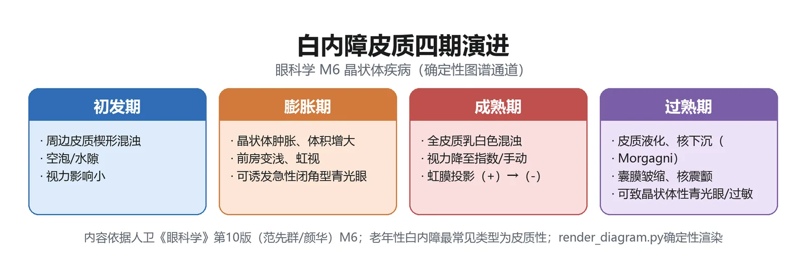
定义：白内障（cataract）是晶状体透明度降低或颜色改变所导致的光学质量下降的退行性改变，是机体内外各种因素对晶状体长期综合作用的结果；它是最常见的晶状体疾病，为全球和我国主要致盲原因之一（教材P116）。
为什么重要：定义中的「透明度降低或颜色改变」与「退行性改变」常被直接命题；五大分类维度是多选题高频骨架。
🧬 第一性原理：
正常晶状体无血管、靠房水与玻璃体供养，一生都在不断生长纤维，且必须保持均一透明才能让光线精准聚焦视网膜。如果晶状体的组织结构与代谢始终安稳，光线畅通无阻，人就看得清、调得动；恰恰因为它浸泡在眼内液体环境中、又无血管直接供血，所以任何影响眼内环境的因素——老化、遗传、代谢异常、外伤、辐射、中毒、营养障碍、全身代谢/免疫病——都能直接或间接破坏其结构、干扰代谢，使蛋白质变性、纤维吸水肿胀而混浊。流行病学已证实紫外线、糖尿病、高血压、心血管病、外伤、烟酒过量与之相关。本质上就是：一块无血管、终身生长、又完全依赖眼内环境供养的透明组织，一旦稳态被打破，必然从透明走向混浊。
机制要点：晶状体三大病变方向——①透明度改变→白内障；②位置改变→异位/脱位；③先天性形成与形态异常。三者都造成明显视力障碍。
| 分类维度 | 具体类别（教材P116） |
|---|---|
| 按病因 | 年龄相关性、外伤性、并发性、代谢性、中毒性、辐射性、发育性、后发性 |
| 按发病时间 | 先天性、后天获得性 |
| 按混浊形态 | 点状、冠状、绕核性等 |
| 按混浊部位 | 皮质性、核性、囊膜下、混合型 |
| 按混浊程度 | 初发期、未成熟期、成熟期、过熟期 |
🔬 展开：年龄相关性白内障的危险因素与流行病学
年龄相关性白内障又称老年性白内障，是最常见的白内障类型，多见于50岁以上中老年人，随年龄增长发病率明显升高。其本质是晶状体老化后的退行性改变，是多因素综合作用结果。危险因素包括年龄、职业、性别、紫外线辐射、糖尿病、高血压、营养不良。我国西藏地区因紫外线辐射多而发病率最高（教材P116-117）。常双眼患病，但发病有先后、严重程度不一致。
「白内障=老年人必然、且要长到看不见才治」是最大的观念误区。教材明确：药物疗效均不确切，手术是主要治疗手段；而手术指征早已从「防盲」转向「屈光/生活质量」。把患者拖到过熟期再手术，反而徒增葡萄膜炎、溶解性青光眼等风险。
🔴 【掌握级】年龄相关性白内障——皮质性白内障四期（本章核心考点）
定义：皮质性白内障是最常见的年龄相关性白内障类型，按病变发展分为四期（教材P117）。其典型表现为晶状体灰白色混浊、渐进性、无痛性视力下降。
为什么重要：四期的标志性体征（楔形混浊／虹膜投影／乳白色／囊膜皱缩+核下沉）与每期并发症是期末与执医反复命题的「题眼」。
🧬 第一性原理：
正常晶状体皮质含水量与渗透压保持稳定，纤维排列整齐、透明。随着老化，皮质蛋白首先变性，水分代谢失衡——早期水分从周边渗入形成水隙、空泡，把纤维撑出楔形排列（初发期）；若渗透压继续升高，皮质主动吸水肿胀，整个晶状体体积膨大、推挤虹膜使前房变浅（膨胀期）；肿胀到极点后水分最终外溢消退，皱缩回去、体积复原，此时皮质已完全混浊变白（成熟期）；若成熟后长期放置、水分持续丢失，囊膜皱缩、纤维液化，沉重的棕黄核便沉到囊袋底部（过熟期=Morgagnian）。如果皮质的吸水—失水过程不发生，晶状体就不会在「肿—缩—沉」之间切换；正因为这是一条由渗透压驱动、由轻到重的连续链，每期才各有一眼可辨的体征。本质上就是：皮质水分「进—多—出—尽」四步，对应楔、肿、白、沉四期。
| 分期 | 关键体征（教材P117-118） | 前房/视力 | 并发症提示 |
|---|---|---|---|
| 初发期 | 周边前后皮质楔形混浊，羽毛状、尖端指向中央；赤道部汇合成轮辐状；红光反射中有轮辐/片状阴影 | 早期不影响视力，进展慢（数年） | 无 |
| 膨胀期（未熟期） | 皮质吸水肿胀，晶状体灰白色混浊；斜照法见新月形虹膜投影（此期特点） | 前房变浅；视力明显下降，眼底难窥见 | 可诱发闭角型青光眼急性发作 |
| 成熟期 | 水分溢出、肿胀消退、体积变小；晶状体完全混浊呈乳白色，囊膜可见钙化点 | 前房深度恢复正常；视力降至手动/光感，眼底不能窥入 | 无急性并发症 |
| 过熟期 | 囊膜皱缩+白色斑点+胆固醇结晶；纤维液化乳白，棕黄核沉于囊袋下随体位移动=Morgagnian白内障；虹膜震颤；核下沉后视力可突然提高 | 前房加深；早期曾极差，核沉后反跳 | 晶状体蛋白性葡萄膜炎、晶状体溶解性青光眼、脱位继发青光眼，均须立即手术 |
🔬 展开：「虹膜投影」为什么是膨胀期的金标准体征
斜照法检查时，投照侧的虹膜会投影在深层混浊的皮质上，形成一个新月形阴影——这说明虹膜与混浊皮质之间还隔着一层尚未混浊的透明皮质，光线能斜照进去。一旦到成熟期，晶状体全层混浊，斜照光线无法透入，虹膜投影即消失。因此「虹膜投影阳性」=膨胀期（未熟），「虹膜投影阴性」=已成熟，这是临床分期最简便的床旁判别点（教材P117）。
🔬 展开：过熟期为什么会惹出葡萄膜炎与青光眼
过熟期是整条分期链上最危险的一段，教材明确列出三类须立即手术的并发症，机制各不同：①晶状体蛋白性葡萄膜炎——过熟囊膜变性、通透性增加或出现小破裂，液化皮质渗漏到囊膜外，作为「自身隐蔽抗原」激发免疫性葡萄膜炎；②晶状体溶解性青光眼——长期漏出的皮质沉积于前房角，或被巨噬细胞吞噬后堵塞小梁网，房水外流受阻而眼压升高；③脱位/核脱出继发青光眼——悬韧带变性使晶状体脱位、囊膜破裂核脱出，若脱位晶状体或核堵塞瞳孔区，又阻断房水循环。三者本质都是「过熟的晶状体从透明透镜变成了一个漏蛋白、堵房角的病灶」，靠药物无法逆转，唯有立即摘除（教材P117-118）。这也从反面解释了现代「不必拖到过熟」的手术观。
一句话记四期：「楔（初发）→肿带影（膨胀）→白（成熟）→皱缩核沉（过熟）」。再配两个「前房」反转——膨胀期前房变浅（肿），成熟期复原，过熟期反而加深（缩）。前房深浅随晶状体体积「大—常—小」走。
🔬 展开：年龄相关性白内障的七项临床表现（症状群）
双眼先后发病、严重程度不一。视力下降是最明显、最重要的症状——周边部轻度混浊可不影响视力，而中央部混浊即使范围小、程度轻也可严重影响视力；强光下瞳孔收缩、进光减少，视力反而不如弱光下（后囊下混浊尤其明显），混浊明显时视力可降至仅有光感。其余六项为：①对比敏感度下降（高空间频率下降尤著）；②屈光改变（核性者核屈光指数增加→晶状体性近视、老视减轻；皮质混浊不均→晶状体性散光）；③单眼复视或多视（混浊或水隙使各部屈光力不一，类似棱镜）；④眩光（混浊使进入眼内光线散射）；⑤色觉改变（混浊晶状体对蓝光端吸收增强，患者对蓝光敏感度下降）；⑥视野缺损（不同程度）。体征上，晶状体混浊可在肉眼、聚光灯或裂隙灯下观察并定量，混浊局限周边部时需散瞳后才能看到（教材P117）。
七症状不必死背，抓住一条主线即可：「混浊=透光不均」——透光少→视力下降/对比敏感度下降；屈光力变→近视漂移/散光/复视多视；光被散射→眩光；短波光被滤掉→色觉改变；暗区残留→视野缺损。
膨胀期最大的「隐藏雷」是诱发急性闭角型青光眼：晶状体肿胀把虹膜往前推、前房变浅、房角关闭。故对有闭角体质的膨胀期患者，既不能随便散瞳，也不宜一味等待成熟——必要时提前手术摘除晶状体同时解除瞳孔阻滞。这一点常与模块7联合命题。
🔴 【掌握级】核性与后囊下白内障、核硬度分级
定义：除皮质性外，年龄相关性白内障另两型为核性白内障与后囊下白内障（教材P118）。
为什么重要：两型的混浊部位决定「视力障碍出现早晚」，与「老视减轻/锅巴状混浊/早期即视物模糊」等题眼直接相关。
🧬 第一性原理：
晶状体的混浊起于哪里，决定了它多早影响视力。正常情况下核随年龄增长密度略增、颜色略深，这是不影响视力的核硬化（生理现象）；只有当核从胎儿核/成人核开始真正混浊、颜色一路加深到黄褐—棕—黑时，才是核性白内障——早期因核屈光指数增加、屈折力变强，患者反而出现晶状体性近视、老视减轻。而后囊下白内障的混浊长在后囊膜下浅层皮质、正对视轴，哪怕范围不大，光线穿过视轴就被散射，所以早期即明显视力障碍。如果混浊长在周边皮质（如初发期），光绕过去仍能看清；偏偏这两型一在核中心、一在视轴上，故而早期症状突出。本质上就是：混浊越靠近视轴/屈光核心，视力损害来得越早越重。
| 类型 | 混浊部位与形态 | 起病/进展 | 视力与屈光特点（教材P118） |
|---|---|---|---|
| 皮质性 | 周边皮质楔形/轮辐状 | 最常见，四期演变 | 渐进无痛视力下降 |
| 核性 | 胎儿核/成人核，色由黄→黄褐→棕→黑 | 发病较早、进展慢 | 早期晶状体性近视、老视减轻；后期眼底不能窥入 |
| 后囊下 | 后囊膜下浅层皮质，棕黄致密小点+空泡+结晶，似锅巴状 | 进展慢，后期合并皮质核混浊 | 位于视轴，早期即明显视力障碍；强光下瞳孔缩小视力反更差 |
🔬 展开：LOCS 分类与 Emery-Little 核硬度分级
LOCS（晶状体混浊分类系统）用散瞳后裂隙灯照片与标准像比对，对核性（N/NO）、皮质性（C）、后囊下（P）及核颜色（NC）分级，用于科研、流调与药物评价。手术前更实用的是 Emery-Little 核硬度分级（按核色，决定 Phaco 适应证与劈核难度）：Ⅰ度透明无核（软）；Ⅱ度黄白/黄色（软核）；Ⅲ度深黄（中硬）；Ⅳ度棕/琥珀色（硬）；Ⅴ度棕褐/黑色（极硬）（教材P118-119）。核越硬，越需高超声能量、越易损伤角膜内皮——这正是飞秒激光预劈核的用武之地。
诊断须在散大瞳孔后用检眼镜或裂隙灯检查。当视力减退与晶状体混浊程度不相符时，必须进一步排查其他眼病，切勿被「白内障」二字掩盖了青光眼眼底病变、视网膜或视神经疾病（教材P119）。
为什么强调「视力与混浊不符要复查」：白内障造成的是传导性视力下降——混浊越重、视力越差，二者应大致平行。若裂隙灯只见轻度混浊，患者却主诉远低于此的视力，说明视网膜/视神经/黄斑还另有病灶（如年龄相关性黄斑变性、糖尿病视网膜病变、青光眼视神经萎缩、视神经炎）。此时贸然做白内障手术，术后视力仍不提高，患者与医生都会被动。这正是术前必做光定位、ERG/VEP、激光干涉仪去「预测术后视力」的原因——先摸清「透镜后面的底片还好不好」，再决定换不换透镜（教材P119）。
🔴 【掌握级】白内障手术适应证、禁忌证与术前评估
定义：手术仍是各种白内障的主要治疗手段；药物（含中药在内十余种）疗效均不确切（教材P119）。
为什么重要：「什么情况该做、什么情况不该做」是观念更新的高频考点，尤其「非成熟期手术」与「为治眼后节病/青光眼而摘晶」两条。
🧬 第一性原理：
白内障是一块「坏了的透镜」，药物无法把已经变性的蛋白逆转回透明，所以唯一确切的办法是把混浊透镜取出、再植入一枚人工透镜替代。既然如此，手术与否的判据就不再是「晶状体有多白」，而是「患者的视功能还能不能满足生活，以及术后能不能真的受益」。如果患者生活质量未受影响、戴镜已看得清，手术反而带来风险；反之，哪怕晶状体还没全白，只要它挡住了眼底诊治、诱发了青光眼、或严重影响生活质量，就该做。本质上就是：手术指征=「生活/医疗需要」，而不是「成熟度」。
| 手术适应证（教材P119） | 手术禁忌证（教材P119） |
|---|---|
| 视功能不能满足需要，术后可望改善视力 | 患者不愿/不能获得知情同意 |
| 混浊妨碍眼后节病诊治（视网膜脱离、DR、眼内炎） | 生活质量未受影响，或戴镜/辅助装置已够用 |
| 有临床意义的屈光参差合并白内障 | 不能指望提高视力，又无其他摘除指征 |
| 晶状体引起其他病变（晶状体溶解/过敏、膨胀诱发闭角青光眼） | 合并严重全身病，不能安全耐受手术 |
| 已失明但瞳孔区发白影响外观，患者要求 | — |
🔬 展开：术前检查与「术后视力预测」三件套
术前眼部查视力、光感、光定位、红绿色觉，裂隙灯/检眼镜记录角膜、虹膜、前房、视网膜并排除活动性炎症。特殊检查：眼压、角膜曲率+眼轴长度（计算IOL度数）、角膜内皮细胞计数、眼部B超。全身需控制血压血糖、评估心肝肾功能。术后视力预测三法——光定位（粗判视网膜功能，不准提示视网膜功能差）、视觉电生理（ERG反映视锥/视杆细胞功能，VEP反映黄斑与视神经）、激光干涉仪（透过滤浊晶状体在视网膜干涉条纹，判黄斑视功能）。术前冲洗结膜囊与泪道、散瞳（教材P119）。
为什么术前要算IOL度数：取出天然晶状体后眼变成约+19D的高度远视无晶状体状态，必须植入一枚度数精确的人工透镜才能看清。而这枚透镜的度数不能事后试戴调整，只能靠术前角膜曲率（求屈光力）+眼轴长度（求焦距）代入公式一次性算出——故这两项是术前最不可省的测量；眼轴测量偏差1mm，术后屈光偏差可达数屈光度。这也是为什么糖尿病患者须先把血糖稳住、角膜内皮计数不足者要谨慎的原因。
别再答「白内障要等成熟（看不见）才手术」。现代观念是：视力下降影响生活质量即可手术；膨胀期诱发青光眼、过熟期即将/已发生葡萄膜炎者反而要尽早甚至紧急手术。考试看到「成熟期才手术」「手术必致盲」类选项应直接排除。
🔴 【掌握级】白内障手术方式与人工晶状体植入
定义：在手术显微镜下施行的超声乳化吸除术、飞秒激光辅助手术或囊外摘除术，联合人工晶状体植入，可获得满意效果（教材P119-121）。
为什么重要：各术式「保不保后囊、切口多大、谁是主流」与「IOL植在囊袋内」是固定考点。
🧬 第一性原理：
要取出混浊晶状体又尽量少扰动眼内结构，关键看后囊膜保不保留。针拨术把整个晶状体甩进玻璃体、ICCE连囊带晶整体完整摘除——都不保留后囊，玻璃体易脱出、并发症多；ECCE把核和皮质捞出、只留后囊膜，就像「开袋取馅留袋皮」，既挡住玻璃体前突，又给后房型IOL留了一个安放的囊袋。超声乳化则用超声能量把核劈碎乳化吸走，切口从传统大切口缩到3mm甚至1.5~2.2mm，于是不缝合、散光小、恢复快。取出天然透镜后眼变成无晶状体眼，必须用一枚高分子聚合物的可折叠人工晶状体植入后房囊袋内替代屈光。本质上就是：保留后囊袋是现代手术的底座，超声乳化把切口做小，IOL把屈光补回。
| 术式 | 是否保留后囊 | 切口/特点（教材P120-121） | 现状 |
|---|---|---|---|
| 针拨术 | 否（晶状脱入玻璃体） | 离断悬韧带使晶状体坠入玻璃体 | 并发症多，已淘汰 |
| ICCE 囊内摘除 | 否（完整摘晶） | 大切口，并发症多 | 我国极少应用 |
| ECCE 囊外摘除 | 保留后囊膜 | 摘核+皮质留后囊，防玻璃体脱出，为后房型IOL创造条件 | 显微手术，要求高 |
| Phaco 超声乳化 | 保留后囊膜 | 超声乳化核皮吸除；切口≤3mm，微切口1.5~2.2mm；不缝合、恢复快、散光小、可表麻 | 国内外主流 |
| 飞秒激光辅助 | 保留后囊膜 | 激光行撕囊/预劈核/角膜切口，提高硬核、全白、浅前房、内皮低、高度近视复杂病例成功率 | 近10年突破技术 |
🔬 展开：人工晶状体的代际与选择
人工晶状体是无晶状体眼屈光矫正的最好方法，采用高分子聚合物，光学性能与组织相容性好，植入后迅速恢复视力、双眼单视与立体视觉。临床常规将可折叠人工晶状体植入后房（囊袋内）。进入屈光手术时代后，单焦点IOL已不够用，老视矫正型IOL相继出现：双焦点、三焦点、景深延长型（衍射型/折射型）、可调节型等（教材P121）。
术式演进一句话：1000多年前我国与印度即有针拨术记载；近200年尤其是显微手术与人工晶状体植入技术问世后，白内障手术成为现代眼科发展最快的领域之一。我国「十二五」防盲规划下，到2015年底累计完成超400万例公益白内障手术，推动手术由「防盲复明」向「屈光精准」转变——手术目标从「看得见」升级为「看得清、看得舒服」（教材P120-121）。
记三句话：「ECCE留后囊→才能后房植IOL；Phaco把切口做到最小；IOL常规折叠植入囊袋内。」飞秒激光不是独立术式，而是辅助「撕囊、劈核、做切口」的精密步骤。
🟡 【熟悉级】先天性白内障
定义：出生前后即存在，或出生后1年内逐渐形成的先天遗传/发育障碍性白内障；是常见儿童眼病，为儿童失明和弱视的重要原因，占儿童失明原因第2位，新生儿患病率约0.5%（教材P122）。
机制：病因分三类——遗传（约一半，以常染色体显性遗传AD最多见，具遗传异质性）；环境（母亲妊娠前3个月胎儿晶状体囊膜尚未发育完全、不能抗病毒，此时风疹病毒感染最常见，此外水痘/单纯疱疹/麻疹/带状疱疹/流感；妊娠营养不良、盆腔放疗、大剂量四环素/激素/水杨酸/抗凝剂、维生素D缺乏、早产、宫内缺氧）；原因不明。｜💡 「妊娠前3个月+风疹病毒」是病因题眼。
🔬 展开：先天性白内障的混浊分型与诊断线索
可为单眼或双眼，多数为静止性、少数出生后继续发展。临床按混浊部位、形态、程度分型，常见：膜性、核性、绕核性、前极、后极、粉尘状、点状、盘状（Coppock白内障）、缝状、花冠状、硬核液化及全白内障等。诊断靠病史+晶状体混浊形态；合并全身畸形时选做实验室检查——糖尿病/新生儿低血糖查血糖尿糖酮体，合并肾病查尿常规与尿氨基酸，疑代谢病查血氨基酸，并可选尿苯丙酮酸、同型半胱氨酸尿定性、半乳糖尿筛查（教材P122-123）。
| 治疗决策（教材P122-123） | 内容 |
|---|---|
| 影响不大者 | 前极/花冠状/点状白内障：不需手术，定期随诊 |
| 明显影响视力者 | 全白/绕核性→手术；膜性→膜性切开；手术愈早获良好视力机会愈大 |
| 单眼明显影响视力 | 全身与麻醉许可下，建议出生后4~6周摘除 |
| 双眼全白/视轴中心明显混浊 | 出生后10周内手术视力预后更好；一眼术后2~4周内完成另一眼 |
| 无晶状体眼矫正+防弱视 | 眼镜/角膜接触镜；IOL一般2岁左右植入；需视力训练促融合 |
先天性白内障的核心目标不是「摘晶」而是防弱视——婴幼儿视轴被混浊遮挡会形成剥夺性弱视，故视轴中心明显混浊者必须争分夺秒早手术（4~6周/10周内），并在术后坚持屈光矫正与弱视训练。2岁左右才考虑IOL，不要与成人「术后立即植IOL」混淆。
🔬 展开：无晶状体眼的三种屈光矫正怎么选
摘晶后患儿处于无晶状体状态，必须矫正屈光并训练视力、防治弱视、促进融合。三法各有取舍：①眼镜矫正——简单易行、容易调整更换，但物像放大明显、单眼者双眼像差大；②角膜接触镜——适用于大多数单眼无晶状体患儿，像差小，但经常取戴易致角膜上皮损伤与感染；③人工晶状体植入——随显微手术与IOL质量提高，严重并发症已少见，是目前最接近生理的矫正，但考虑婴幼儿眼球仍在发育，一般认为2岁左右才施行（教材P123）。选择时在「像差小」与「眼球发育阶段」之间权衡。
🟡 【熟悉级】代谢性白内障——糖尿病性白内障
定义：因代谢障碍引起的晶状体混浊；其中糖尿病性白内障分两型——真性糖尿病性白内障与糖尿病患者的年龄相关性白内障（教材P123）。
机制（山梨醇渗透压学说）：晶状体能量来自房水葡萄糖，主要走无氧酵解。正常时己糖激酶把葡萄糖转为6-磷酸葡萄糖；糖尿病时晶状体内葡萄糖过多、己糖激酶饱和，醛糖还原酶被活化，把葡萄糖转为山梨醇。山梨醇不能透过囊膜、在晶状体内积聚→渗透压升高→吸水→纤维肿胀变性→混浊。这条通路与半乳糖性白内障同源——半乳糖也是经醛糖还原酶生成渗透性极强的半乳糖醇吸水致浊，记住「醛糖还原酶→糖醇堆积→渗透压性混浊」这一通用钥匙即可两病通吃。｜💡 「醛糖还原酶—山梨醇—渗透压—吸水」是机制题链。
| 要点 | 内容（教材P123） |
|---|---|
| 好发人群 | 真性者多见于青少年1型糖尿病，双眼发病 |
| 进展特点 | 发展迅速，可短时间内完全混浊（全白内障） |
| 屈光波动 | 血糖↑→房水渗入、晶状体变凸→近视；血糖↓→水分渗出变扁→远视 |
| 治疗 | 早期积极控糖混浊可部分消退；明显影响视力时在血糖控制下摘除；无增殖性DR可植后房型IOL；术后防感染出血 |
🟡 【熟悉级】并发性白内障
定义：由眼部疾病本身导致的晶状体混浊；因眼内炎症或退行性病变使晶状体营养/代谢障碍而混浊（教材P124）。常见原发病：葡萄膜炎、视网膜色素变性、视网膜脱离、青光眼、眼内肿瘤、高度近视。
机制：眼后段疾病引起者，早期在后极部囊膜及囊膜下皮质出现颗粒状灰黄色混浊+较多空泡，渐向核中心及周边扩展呈放射状「玫瑰花样」，再向前皮质蔓延至全混浊；青光眼引起者多由前皮质和核开始；高度近视所致者多为核性。治疗先治原发病，须在眼内炎症很好控制后再考虑手术，术后据病程调整激素剂量与时长，是否植IOL依原发病慎重决定。｜💡 记住「眼后段病→后极玫瑰花样；高度近视→核性」。
为什么并发性白内障要先控原发病再手术：它的混浊根源是眼内炎症/退行性变造成的营养代谢障碍。若在葡萄膜炎活动期贸然手术，手术刺激会诱发炎症爆发、角膜内皮损伤与视网膜并发症，术后反应远重于普通年龄相关性白内障。因此教材强调「各种炎症引起的并发性白内障对手术反应不同，应在眼部炎症得到很好控制以后再考虑手术」，并据原发病种类决定是否植入IOL（教材P124）。
🟡 【熟悉级】外伤性白内障与术后并发症
外伤性白内障：眼球钝挫伤或穿通伤致晶状体囊膜破裂、房水渗入皮质而迅速混浊，穿通伤者常合并囊膜破裂与皮质脱出；按病因归入白内障分类之一（教材P116）。外伤后残留皮质/上皮细胞增生亦可继发后囊膜混浊。两型机制略异：钝挫伤时外力经房水传导震动囊膜，囊膜可不全破裂，混浊常于伤后数小时至数天出现；穿通伤则囊膜直接破口，皮质迅速水化膨胀并可经破口脱出至前房，更易合并感染、眼内异物与眼内炎。细节处理在眼外伤模块（模块10），本模块只需掌握「外伤→囊膜破裂→皮质混浊」这一因果与定位。
术后并发症：囊外摘除（含Phaco）术后最常见的并发症是后囊膜混浊（后发性白内障）——残留皮质与囊膜下上皮细胞增生、形成Elschnig珠样小体，上皮细胞肌成纤维细胞样收缩致后囊皱褶；术后3年以上发生率达30%~50%，儿童术后几乎均发生。影响视力时用Nd:YAG激光切开瞳孔区后囊，无条件或过厚者手术刺/剪开，术后滴激素/NSAID并观察眼压（教材P124-125）。
其余一般手术风险应心中有数：感染性眼内炎虽少见但后果严重，表现为术后眼痛、视力骤降、眼红畏光，须紧急处理；角膜内皮损伤/失代偿与硬核、高超声能量、内皮计数低相关（故术前必查角膜内皮细胞）；后囊破裂、玻璃体脱出是ECCE/Phaco术中主要意外；远期还可有黄斑囊样水肿、视网膜脱离、继发性青光眼、人工晶状体偏位/夹持。患者术后若出现眼痛、视力再下降、眼红加重，须及时复诊，不可一律当作「正常恢复」。
「后发性白内障」不是新长了一块白内障，而是保留下来的后囊膜 itself 变混浊。它无需再次大手术，一颗 Nd:YAG 激光在后囊打个孔即可，属门诊操作。这是ECCE/Phaco「留后囊」策略的必然代价。
🟢 【了解级】晶状体解剖与生理（教材P116）
晶状体为双凸面、有弹性、无血管的透明组织，代谢复杂，营养主要来自房水和玻璃体。正常时将光线准确聚焦于视网膜，并通过调节作用看清远近物体，是屈光介质重要组成部分。终身不断生长纤维。
🟢 【了解级】其他代谢性白内障（教材P124）
半乳糖性白内障：常染色体隐性遗传，缺半乳糖-1-磷酸尿苷转移酶/半乳糖激酶，半乳糖经醛糖还原酶成渗透性极强的半乳糖醇吸水致混浊；出生后数日/数周发生，多为绕核性；治疗用无乳糖/半乳糖饮食。手足搐搦性（低钙性）白内障：血清钙过低（甲旁腺不足/甲状腺手术误切/营养障碍），典型三联为手足搐搦+骨质软化+白内障；前后皮质辐射状/条纹状混浊，囊膜下见红/绿/蓝结晶微粒；补维生素D与钙剂，术前先纠正低钙——术中易出血须警惕。三者合看：代谢性白内障的共同逻辑是「代谢底物/电解质异常→晶状体内渗透压或离子平衡失调→纤维肿胀混浊」，只是病因分别落在糖代谢（糖尿病/半乳糖）与钙代谢（低钙）两条线上。
🟢 【了解级】晶状体位置异常（异位与脱位，教材P125-126）
正常晶状体由悬韧带悬挂于睫状体。悬韧带部分/全部破裂或缺损即位置异常：出生时即不在位=异位；出生后因先天/外伤/疾病而移位=脱位。先天性脱位见于马方综合征、马切山尼综合征、同型半胱氨酸尿症。
| 脱位方向 | 后果（教材P126） |
|---|---|
| 脱入前房 | 透明晶状体呈油滴状，挤虹膜堵房角→眼压急性升高 |
| 脱入玻璃体腔 | 透明球状物，久则固定粘连→晶状体过敏性葡萄膜炎、继发青光眼 |
| 嵌于瞳孔区 | 影响房水循环→眼压急性升高 |
| 脱出于眼球外 | 严重外伤角巩膜缘破裂→球结膜下/眼外 |
| 半脱位 | 散瞳见部分赤道部；可致晶状体性近视、单眼复视 |
晶状体离开瞳孔区后患眼呈无晶状体眼视力、前房加深、虹膜震颤。透明且无并发症者可随访+凸透镜/接触镜矫正；引起溶解混浊、严重并发症或前房/瞳孔嵌顿者须及时手术。
怎么记异位与脱位的边界：两者的分水岭是「出生时晶状体在不在位」——出生即不在位为异位，出生后因先天因素、外伤或眼内病变（葡萄肿、牛眼致悬韧带机械性伸长，睫状体炎致悬韧带变性）才移位为脱位。先天性脱位最常考的三联遗传病是马方综合征、马切山尼综合征、同型半胱氨酸尿症；外伤性脱位则有明确挫伤史及眼外其他损伤体征（教材P125-126）。
🟢 【了解级】先天性晶状体形态异常（教材P127）
球形晶状体（小晶状体）：直径小、前后径长，悬韧带松弛致晶状体前移→瞳孔阻滞→闭角型青光眼；滴缩瞳剂会加重瞳孔阻滞（忌用缩瞳剂）；屈折力大致高度近视、无调节功能。另有圆锥形晶状体、晶状体缺损（下方偏内赤道切迹→近视散光）、脐状缺陷。无症状无并发症者一般不治，有弱视者积极治弱视。
把本模块最核心的「为什么会从无症状走到急诊手术」串成一条可复述的链条（★为关键转折节点）：
```text
老化/紫外线/糖尿病等多因素 → 晶状体皮质蛋白变性、渗透压失衡
│
▼
初发期: 周边楔形/轮辐状混浊 ──(早期光绕过去)──► 不影响视力, 数年缓慢进展
│
▼ ★ 皮质渗透压↑, 主动吸水肿胀
膨胀期: 晶状体灰白肿胀、体积↑、前房变浅, 虹膜投影阳性
│
├─► 有闭角体质者 ★诱发急性闭角型青光眼 (前房角关闭)
▼
成熟期: 水分外溢消退、体积复原、前房正常, 全白混浊, 视力手动/光感
│
▼ ★ 成熟期长期搁置, 水分持续丢失
过熟期: 囊膜皱缩、纤维液化、棕黄核下沉(Morgagnian)、虹膜震颤、前房加深
│
├─► 囊膜通透性↑/小破裂 → 液化皮质渗漏 → ★晶状体蛋白性葡萄膜炎
├─► 皮质沉积前房角/巨噬细胞堵房角 → ★晶状体溶解性青光眼
└─► 悬韧带变性 → 脱位/核脱出堵瞳孔 → ★继发性青光眼
│
▼
以上葡萄膜炎/青光眼并发症 ──► 均须立即手术摘除
```
> [!INFO] 读图要点
> 两个「★转折」是命题富矿：①膨胀期肿→诱发闭角青光眼；②过熟期漏→葡萄膜炎+溶解性/继发青光眼。手术恰恰要抢在这些并发症之前，或在并发症发生后紧急做——这就是「不必等成熟、却也不能拖到过熟」的辩证法。
📈 D3 谱系梯度：晶状体病从「无症状」到「需急诊」
严重度梯度 疾病/阶段示例 处置重心
────────────────────────────────────────────────────────────────────────
轻微·无症状 初发期楔形混浊(皮质性)、前极/点状先天性白内障 观察随访, 不急手术
│
▼
中度·影响生活 成熟期全白混浊、核性/后囊下视力下降、糖尿病性白内障 视力影响生活→Phaco+IOL
│
▼
★ 需提前/急诊干预 膨胀期诱发闭角青光眼、过熟期葡萄膜炎/溶解性青光眼 尽快/紧急摘晶
│
▼
★ 急症致盲风险 晶状体脱入前房/瞳孔嵌顿(眼压骤升)、外伤性囊破 及时手术, 先控眼压/防感染
────────────────────────────────────────────────────────────────────────出现以下任一情况，提示晶状体病已越过「择期手术」边界，需尽快/急诊处理：①眼痛+眼红+视力骤降+恶心呕吐（膨胀期/脱位诱发的急性闭角青光眼，模块7）；②术后眼痛、视力下降、畏光（感染性眼内炎/后囊混浊，需复诊）；③外伤后视力骤降+前房变浅/加深（外伤性白内障或脱位）；④过熟期患者近期视力「突然变好」——不是好转，而是棕黄核沉出视轴（Morgagnian），提示已进入过熟期并发症窗口。
| 信号 | 提示问题 | 首步处理方向（教材P117-118、P125-126） |
|---|---|---|
| 眼痛+虹视+眼压高 | 膨胀期/脱位诱发急性闭角青光眼 | 降眼压、尽快摘晶解除瞳孔阻滞 |
| 过熟期+前房内炎症/房水闪辉 | 晶状体蛋白性葡萄膜炎 | 控制炎症后立即手术 |
| 房水中皮质沉积+眼压高 | 晶状体溶解性青光眼 | 摘除混浊晶状体 |
| 术后视力再下降 | 后囊膜混浊(PCO) | Nd:YAG激光切开后囊 |
🌳 D4 鉴别决策树：「渐进性无痛视力下降」如何锁定晶状体
渐进性、无痛性视力下降 (单/双眼)
│
├─ 先看混浊部位与形态 (散瞳+裂隙灯/后照法)
│ │
│ ├─ 周边楔形/轮辐状, 早期不影响视力 ──► 初发期皮质性白内障
│ │ └─ 斜照有新月形虹膜投影?
│ │ ├─ 阳性 + 灰白肿胀 + 前房变浅 ──► 膨胀期(未熟)
│ │ └─ 阴性 + 全白乳白 + 前房正常 ──► 成熟期
│ │ └─ 再: 囊膜皱缩/虹膜震颤/核下沉? ──► 过熟期(Morgagnian)
│ │
│ ├─ 核黄→棕→黑, 早期老视减轻/近视漂移 ──► 核性白内障
│ ├─ 后囊下"锅巴状"小点, 早期强光下更差 ──► 后囊下白内障
│ │
│ ├─ 有糖尿病史+青少年双眼迅速全浊 ──► 真性糖尿病性白内障
│ ├─ 有葡萄膜炎/网变/高度近视史 ──► 并发性白内障
│ ├─ 出生即有/1年内形成+风疹暴露史 ──► 先天性白内障
│ └─ 眼钝/穿通伤后迅速混浊 ──► 外伤性白内障
│
└─ ★ 视力减退与混浊程度不符? ──► 必查眼压/眼底/视觉电生理, 排除青光眼、
视网膜或视神经病变, 勿被白内障掩盖这棵树的「树根」是散瞳后看清混浊的部位与形态，而「最容易丢分的分支」是最后那条——视力下降程度与晶状体混浊不匹配时，一定要跳出晶状体去查其他眼病（教材P119）。
🔄 主动回忆区
- 白内障是指晶状体____或____所导致的光学质量下降的____性改变；按混浊部位分为____、____、____；按混浊程度分为____、____、____、____。（教材P116）
- 皮质性白内障四期：初发期见周边____混浊、____状；膨胀期晶状体灰白肿胀、____阳性、前房变浅可诱发____；成熟期全呈____色、前房深度____；过熟期囊膜____、虹膜____、棕黄核下沉称____白内障。（教材P117-118）
- 手术指征：只要____不能满足患者需要、术后可望改善即可手术，而非等____；主流术式为____吸除联合____人工晶状体植入于后房（囊袋内）。（教材P119-121）
- 糖尿病性白内障机制：血糖↑→晶状体内葡萄糖多→己糖激酶饱和→____酶活化→生成____→渗透压↑吸水致混浊；真性者多见于____型糖尿病青少年，双眼迅速全混浊。（教材P123）
- ECCE术后最常见并发症是____，发生率3年达____；影响视力时用____激光切开瞳孔区后囊。（教材P125）
学完本模块，你应能：①复述白内障定义与五大分类维度；②背出皮质性四期各自的标志性体征与前后房变化；③说清现代手术指征「不等成熟」与Phaco+囊袋植IOL的主流方案；④区分糖尿病性（山梨醇）与并发性（眼内病继发）白内障；⑤识别过熟期与脱位的急诊信号。若以上五条都能口述，即可衔接模块7青光眼（膨胀期/过熟期正是两章的交汇点）。复习时建议把「四期体征表」「术式对比表」「全脱位部位表」三张表作为考前速记骨架，配合两张 ASCII 图复述机制链与鉴别树，做到看到体征就能反推分期、看到主诉就能反推术式。
📘 模块7：青光眼
M7 · 青光眼
重点等级：🔴掌握6个 / 🟡熟悉8个 / 🟢了解3个
教学范围：青光眼总论（定义/分类）、房水循环与眼压、原发性急性闭角型青光眼（好发人群/诱因/三联征/眼压骤升/急救）、原发性慢性闭角型、原发性开角型（隐匿起病/C/D扩大/视野缺损/诊断）、正常眼压性青光眼、继发性青光眼、先天性青光眼、青光眼药物分类（拟胆碱/β受体阻滞剂/α₂激动剂/碳酸酐酶抑制剂/前列腺素衍生物）、激光与手术（周边虹膜切开/小梁切除）。
关联模块：模块3（结膜充血——红眼鉴别）、模块5（葡萄膜炎——急性虹膜睫状体炎与急性闭角发作的鉴别）、模块6（晶状体膨胀/脱位继发青光眼）、模块8（视网膜缺血→新生血管性青光眼）。
谱系位置：从「无症状隐匿失明（开角型/正常眼压型）」到「数日内可致盲的眼科急症（急性闭角大发作）」，是眼科为数不多的可致盲急症 + 慢性致盲病双重身份的疾病群。
预计阅读：约 18 分钟（正文）+ 图表约 8 分钟。
先行组织者：青光眼的本质只有一句话——眼球里的水（房水）进出失衡，眼压把视神经压坏了。这一章解决三件事：①房水怎么生成、怎么流出，眼压为什么会高；②闭角型（房角被堵死，急性发作）与开角型（小梁网本身不通，偷偷失明）两条主线怎么区分；③药物、激光、手术三条降眼压路线分别打在哪一环。急性闭角大发作是眼科最经典的急症，必须背到能默写。
🧩 前置知识检查
- 回顾：房水由睫状突生成，经后房→瞳孔→前房→前房角排出。若对「后房/前房/前房角/Schlemm管」解剖位置陌生，先回看模块1眼科学基础。
- 回顾：瞳孔括约肌（副交感，缩瞳）与瞳孔开大肌（交感，散瞳）的拮抗。毛果芸香碱是拟副交感药——这是理解「闭角发作为什么首选缩瞳」的钥匙。
- 若陌生则回补：急性虹膜睫状体炎（前葡萄膜炎）的表现——角膜后灰白色KP、前房闪辉、瞳孔缩小，见模块5。它与急性闭角发作的鉴别是本模块最高频鉴别点。
- 若陌生则回补：视网膜中央静脉阻塞、糖尿病视网膜病变→广泛视网膜缺血→虹膜新生血管，见模块8。这是新生血管性青光眼的上游。
1. 定义一句话：青光眼是一组以特征性视神经萎缩和视野缺损为共同特征的疾病，病理性眼压增高是其主要危险因素（教材P128）。注意：不是「眼压高=青光眼」，也不是「眼压正常就不是青光眼」。
2. 眼压正常范围：统计学 10～21 mmHg（均值15.8，标准差2.6）；双眼差应 ≤5 mmHg，24h波动应 ≤8 mmHg（教材P128）。
3. 急性闭角大发作四联征：剧烈头痛眼痛 + 恶心呕吐 + 虹视/雾视 + 视力骤降；体征：角膜上皮水肿、前房极浅、瞳孔竖椭圆中等散大、眼压常在50 mmHg以上（教材P132-133）。
4. 急救流程（必背）：缩瞳剂（1%毛果芸香碱）+ 局部β受体阻滞剂 + 全身碳酸酐酶抑制剂 + 高渗剂（20%甘露醇静滴）→ 眼压下降、炎症控制后行周边虹膜切除术/激光虹膜切开术（教材P137-138）。
5. 开角型「三高一低」式隐匿病程：高眼压（早期可正常）、高C/D比值（>0.6，双眼差>0.2）、高视野缺损进展（旁中心暗点→鼻侧阶梯→弓形暗点→管状视野）、低自觉症状（教材P134-135）。
6. 药物一线：POAG 首选前列腺素衍生物（拉坦前列素），每日傍晚1次，降眼压20%～40%；闭角急性发作首选毛果芸香碱缩瞳（教材P136-137）。
> [!SUCCESS] 记忆锚点
> 一句话串起全模块：「房水堵在哪，就治哪——堵瞳孔（闭角）就切虹膜，堵小梁（开角）就压生成/拉外流，都堵死了就造瘘（小梁切除）」。
📋 结构化笔记
🔴 【掌握级】青光眼定义、眼压与房水循环
定义：青光眼（glaucoma）是一组以特征性视神经萎缩和视野缺损为共同特征的疾病，病理性眼压增高是其主要危险因素；眼压升高水平与视神经对压力损害的耐受性共同决定视神经萎缩和视野缺损的发生发展。有一定遗传倾向，患者直系亲属中 10%～15% 可能发病（教材P128）。
为什么重要：定义里两个「不是」——高眼压≠青光眼（高眼压症），正常眼压≠排除青光眼（正常眼压性青光眼）——是辨析题常设陷阱。
🧬 第一性原理：
眼球是一个密闭的球体，内容物（房水、玻璃体、晶状体）对球壁产生压力即眼压。正常时房水生成量 = 排出量，眼压稳定在10～21 mmHg。如果生成正常而排出通道任一环节变窄/堵塞，房水越积越多，球内压力就升高；压力持续作用于视神经乳头（视盘），轴浆流中断、视神经节细胞凋亡，遂出现视盘凹陷扩大与特征性视野缺损。如果房水能正常排出，即使生成多一点眼压也不致升高；恰恰因为排出阻力增高（开角型堵在小梁网）或排出口被机械关闭（闭角型虹膜堵住房角），眼压才病理性升高，进而压坏视神经。本质上就是：房水「出 > 进」的动态平衡被打破，眼压这根「水压」把视神经泡坏了。
眼压关键数值（教材P128）：
| 指标 | 正常值 | 记忆要点 |
|---|---|---|
| 眼压均值 | 15.8 mmHg（SD 2.6） | 10～21 = 均数±2SD |
| 统计学正常范围 | 10～21 mmHg | >21 不等于病理值 |
| 双眼眼压差 | ≤5 mmHg | 超过提示异常 |
| 24h眼压波动 | ≤8 mmHg | 波动大也是危险因素 |
房水流出两条途径（教材P128）：
| 途径 | 路线 | 占比 | 被哪类药物/手术作用 |
|---|---|---|---|
| 小梁网通道（主） | 后房→瞳孔→前房→前房角小梁网→Schlemm管→集合管→巩膜表层睫状前静脉 | 约80% | 缩瞳剂（拉小梁）、小梁切除（造瘘）、SLT |
| 葡萄膜巩膜通道（次） | 前房角睫状体带→睫状肌间隙→脉络膜上腔→穿巩膜出眼 | 约20% | 前列腺素衍生物（本类主力）、α₂激动剂 |
眼压高低取决于三因素（教材P128）：①睫状突生成房水的速率；②房水通过小梁网流出的阻力；③上巩膜静脉压。青光眼治疗的全部药物/手术，不是「减少生成」就是「增加流出」，或者「临时减少眼内容积（高渗剂）」。
🔬 展开：高眼压症 vs 正常眼压性青光眼——定义里的两个反例
- 高眼压症（ocular hypertension）：眼压超过统计学上限21 mmHg，但长期随访无视神经、视野损害，房角开放。40岁以上人群约7%眼压>21 mmHg，其中仅约10%最终发展为青光眼（教材P128、P143）。
- 正常眼压性青光眼（NTG）：眼压始终在10～21 mmHg正常范围内，却出现典型青光眼视神经萎缩和视野缺损（教材P128、P135-136）。机制：视神经本身供血不足、对眼压耐受性降低，或低颅内压导致眼-颅压力梯度增高。
- 临床推论：不能机械地把眼压>21 mmHg当病理值，也不能因眼压正常就排除青光眼。这正是为什么诊断青光眼要靠「眼压+房角+视野+视盘」四件套，而不是单靠一个眼压值。
「眼压>21 mmHg就是青光眼」是最常见错误。教材明确：正常眼压并非正态分布，约50%的开角型青光眼患者单次眼压测量低于22 mmHg（教材P135）。一次眼压正常或偏高都不能下结论，必须结合视盘凹陷、视野缺损、房角状态综合判断。
🔴 【掌握级】青光眼临床诊断四件套与分类
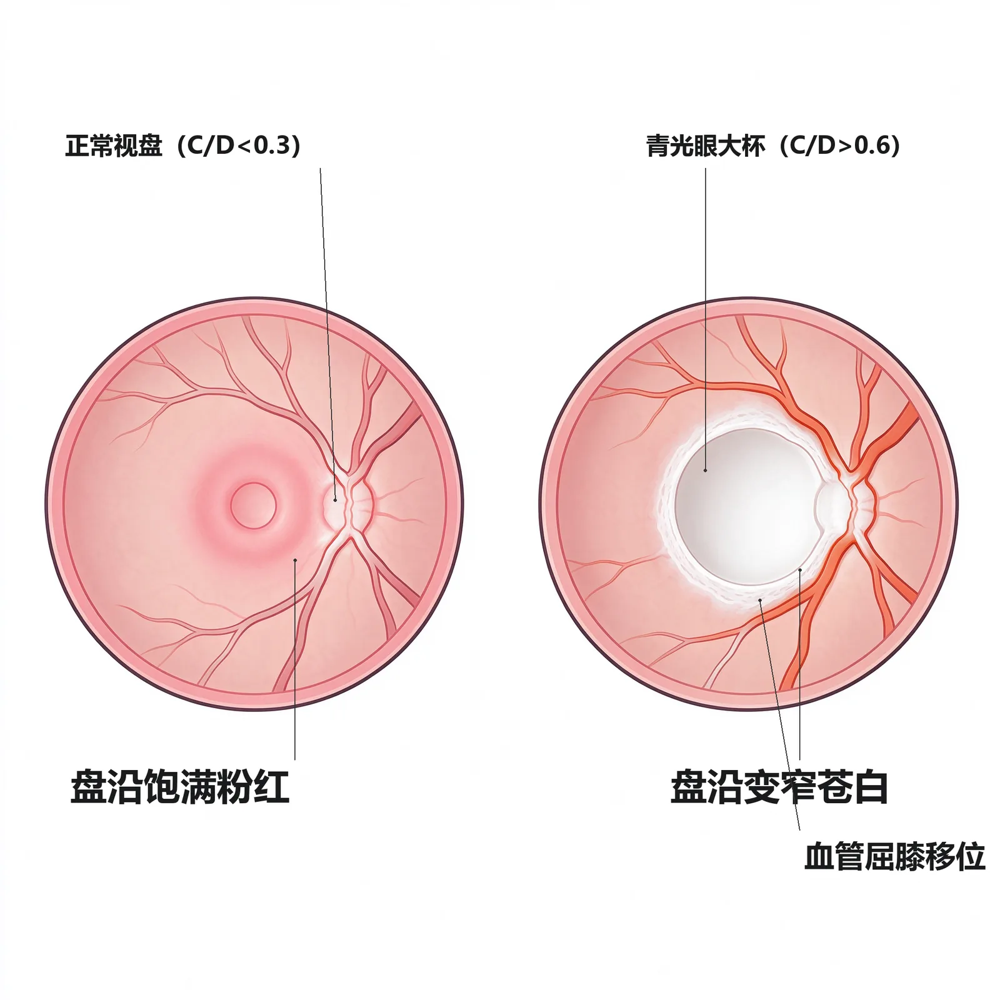
要点：最基本检查项目 = 眼压、房角、视野、视盘（教材P129）。房角开放/关闭是区分开角型与闭角型的依据；视野改变是诊断青光眼的「金标准」；视杯扩大是视盘损害的重要客观依据。
为什么重要：四件套各自的「金标准」地位（Goldmann眼压计、视野计、房角镜）是名词题高频考点。
🧬 第一性原理：
青光眼的损害有两个可观测维度——压力维度（眼压多高）和组织损害维度（视盘凹不凹、视野缺不缺）。只测眼压不知道视神经坏没坏；只看视盘不知道压力多高。房角镜则回答「堵在哪里」——房角开放说明堵在小梁网内部（开角），房角关闭说明虹膜把排水口堵死了（闭角）。如果只测眼压不看房角，就无法决定是该切虹膜还是该造瘘。本质上就是：眼压测「动力」，视盘/视野测「后果」，房角测「堵点位置」，四件套合起来才能定位定性。
| 检查项目 | 金标准方法 | 看什么 | 教材 |
|---|---|---|---|
| 眼压 | Goldmann压平眼压计 | 压力高低、24h波动、双眼差 | P129 |
| 房角 | 房角镜（UBM/AS-OCT辅助） | 开放 vs 关闭、有无粘连 | P129 |
| 视野 | 计算机自动视野计 | 旁中心暗点/鼻侧阶梯/弓形暗点 | P129 |
| 视盘 | 直接检眼镜/裂隙灯前置镜/眼底照相 | 视杯扩大、C/D比、盘沿切迹、线状出血 | P129 |
青光眼三分类（教材P129）：①原发性（病因未明）——分闭角型（急性/慢性）与开角型；②继发性（病因明确）；③儿童青光眼（原发先天性、青少年开角型、伴其他先天异常）。种族差异：中国人以闭角型居多，欧美白种人以开角型多见（教材P129-130）。
🔴 【掌握级】原发性急性闭角型青光眼（大发作）
定义：一种以房角突然关闭，导致眼压急剧升高并伴有相应症状和眼前段组织病理改变为特征的眼病（教材P132）。
为什么重要：这是期末+执医最高频考点，「眼痛+头痛+恶心呕吐+虹视雾视+眼压>50」的病例题必须一眼锁定。
🧬 第一性原理：
患者天生眼轴短、角膜小、前房浅、房角窄、晶状体厚且位置偏前——这是解剖学「火药桶」。随年龄增长晶状体更厚更前推，瞳孔阻滞加重：虹膜与晶状体前表面贴得太紧，房水从后房越过瞳孔进入前房的阻力增大，后房压力升高，把周边虹膜向前推膨，本就窄的房角被彻底堵死。一旦在暗室停留过久、情绪激动、用了抗胆碱药使瞳孔散大，周边虹膜更松更厚地堆积在房角入口，房角瞬间关闭——房水完全排不出去，眼压骤升到50 mmHg以上，角膜内皮/上皮水肿、虹膜缺血、瞳孔括约肌麻痹。如果周边虹膜不堵塞小梁网开口（房角一直开放），就不会急性发作；恰恰因为解剖上前房太浅、房角太窄，再被瞳孔阻滞+瞳孔散大这把火点着，房角才会突然关闭。本质上就是：浅前房窄房角的眼睛，在瞳孔散大诱因下把排水口「啪」地关上了。
好发人群与诱因（教材P132）：
- 50岁以上老年人，女性多见，男女比约1:2；常有远视，双眼先后或同时发病。
- 诱因：情绪激动、暗室停留过长、局部/全身应用抗胆碱药（使瞳孔散大）、长时间阅读、疲劳、疼痛。
- 危险因素：闭角型家族史、远视眼；可疑征象：40岁以上、角膜横径小、前房浅、晶状体位置偏前、睫状体前移。本病为双侧性眼病，一眼大发作后另一眼即使无症状也属「临床前期」，须同时预防性处理，不可只治一只眼。
典型六期（分期必背）（教材P132-133）：
| 分期 | 核心表现 | 处理要点 |
|---|---|---|
| 临床前期 | 一眼发作后，另一眼无症状但浅前房窄房角；或暗室试验阳性 | 预防性周边虹膜切除 |
| 先兆期（小发作） | 傍晚突感雾视、虹视，额部痛/鼻根酸胀，休息后自行缓解；眼压常>40 mmHg | 及时缩瞳，防大发作 |
| 急性发作期 | 剧烈头痛眼痛、畏光流泪、视力骤降到指数/手动、恶心呕吐；混合充血、角膜上皮水肿（小水珠）、虹视、前房极浅、瞳孔竖椭圆中等散大、光反射消失、房角全关、眼压常在50 mmHg以上 | 紧急药物降压+后续手术 |
| 间歇期 | 小发作后自行缓解，房角重新开放，不用药或少量缩瞳剂眼压正常 | 周边虹膜切除 |
| 慢性期 | 大发作或反复小发作后房角广泛粘连（>180°），眼压中度升高，出现青光眼视盘凹陷与视野缺损 | 滤过性手术 |
| 绝对期 | 视力已无光感且无法挽救，偶尔因眼压过高或角膜变性剧痛 | 睫状体破坏手术止痛 |
急性发作期「永久性遗迹」（教材P133）：高眼压缓解后，眼前段常留下——扇形虹膜萎缩、色素脱失、局限性后粘连、瞳孔散大固定、房角广泛粘连、晶状体前囊下小片状白色混浊（青光眼斑）。见到这些遗迹，即可证明患者曾有过急性大发作。
🔬 展开：虹视、雾视与青光眼斑——三个特征性名词
- 虹视：看光源时周围出现彩虹样彩色环带，因角膜上皮水肿、上皮小水珠分光所致。是先兆期与急性发作期的特征主诉。
- 雾视：视物像隔着一层雾，同样来自角膜上皮水肿。
- 青光眼斑：晶状体前囊下小片状白色混浊，是急性大发作后晶状体上皮受损的遗迹，有诊断史价值——见到它就知道这人以前大发作过。
- 竖椭圆形瞳孔：急性发作时瞳孔括约肌被高眼压压得缺血麻痹，瞳孔不再正圆而呈竖椭圆、中等散大、光反射消失。这与急性虹膜睫状体炎的「瞳孔缩小、后粘连」正好相反，是鉴别关键。
急性大发作常伴剧烈头痛+恶心呕吐，这些全身症状甚至掩盖眼痛和视力下降，极易被误诊为胃肠道疾病、颅脑疾病或偏头痛（教材P133）。凡是中老年人，尤其远视女性，在情绪激动或暗室后出现头痛呕吐，务必查眼睛——别当成胃病或神经内科病收住院。
🔴 【掌握级】急性闭角型青光眼的急救处理原则
治疗目的：通过药物、激光或手术重新开放房角或建立新的引流通道；术前积极综合用药缩小瞳孔、开放房角、迅速降眼压、减少组织损害；眼压降低、炎症控制后再手术（教材P137-138）。
为什么重要：急救用药顺序与术后术式选择是病例题「下一步做什么」的标准答案。
🧬 第一性原理：
急性发作时房角被周边虹膜机械堵死，第一步必须把堵着的虹膜拉开——用毛果芸香碱兴奋瞳孔括约肌缩瞳，把周边虹膜从小梁网上扯开；但眼压太高时瞳孔括约肌已缺血麻痹，单靠局部缩瞳不够，所以要同时从三条旁路降压：β受体阻滞剂和碳酸酐酶抑制剂减少房水生成（「少造水」），高渗剂把玻璃体里的水抽到血液里（「临时减容」）。等眼压降下来、虹膜恢复血供、缩瞳剂才能真正起效，房角拉开。眼压下降只是权宜之计（缓解期眼压低是因为睫状体缺血分泌减少，不是房角真的好了），所以必须趁房角还没广泛粘连时打一个激光周边虹膜切开，给后房房水开一条「捷径」直通前房，前后房压力平衡，虹膜变平，房角永久开放。如果拖到房角广泛粘连（>180°），就只能做小梁切除造瘘了。本质上就是：先用药「紧急泄压+拉开堵点」，再用激光「永久打通前后房」，堵死了就造一条新瘘管。
急救用药四步（教材P137-138）：
| 步骤 | 药物 | 机制 | 用法要点 |
|---|---|---|---|
| ① 缩瞳 | 1%毛果芸香碱 | 兴奋瞳孔括约肌，拉开周边虹膜对小梁的堵塞 | 大发作时每5min×3次→每30min×4次→每小时1次；高浓度频滴后压泪囊防全身中毒 |
| ② 减少生成（局部） | β受体阻滞剂（噻吗洛尔） | 抑制睫状突房水生成 | 局部滴眼 |
| ③ 减少生成（全身） | 碳酸酐酶抑制剂（乙酰唑胺） | 减少房水生成 | 口服0.125g bid 或0.0625g tid |
| ④ 高渗脱水 | 20%甘露醇 1～2 g/kg 静滴（或50%甘油口服2～3ml/kg） | 提高血浆渗透压，玻璃体水分入血，迅速减容 | 静滴后2～3h作用消失；糖尿病慎用甘油；用后平卧防头痛恶心 |
辅助：全身给止吐、镇静、安眠药缓解剧烈头痛呕吐；局部滴糖皮质激素减轻充血与虹膜炎症反应。若眼压过高致瞳孔括约肌缺血麻痹、虹膜缺血坏死，缩瞳剂难以奏效，故通常先全身用降眼压药把眼压砸下来，再滴缩瞳剂，缩瞳效果才好；频繁高浓度缩瞳后必须用棉球压迫泪囊部数分钟，以免药物经鼻黏膜全身吸收中毒（教材P137）。
🔬 展开：术后怎么选——周边虹膜切开 vs 小梁切除
- 房角仍开放或粘连<1/3周、单用毛果芸香碱眼压<21 mmHg：做周边虹膜切除术或激光虹膜切开术，或白内障摘除联合房角分离。目的：沟通前后房、解除瞳孔阻滞、加宽房角，防止再发作（教材P138）。
- 房角已广泛粘连、用毛果芸香碱眼压仍>21 mmHg：说明小梁功能已永久损害，应做滤过性手术（小梁切除术）（教材P138）。
- 临床前期不治，40%～80%在5～10年内急性发作；长期滴毛果芸香碱不能可靠预防发作，所以浅前房窄房角的临床前期眼应早期预防性激光虹膜切开（教材P138）。
- 药物降压后眼压看似正常不代表治疗结束——那是睫状体缺血分泌减少的假象，必须按房角情况决定后续手术。
「一缩瞳、二阻滞、三酶抑、四脱水」：毛果芸香碱（缩瞳）→ 噻吗洛尔（β阻滞）→ 乙酰唑胺（碳酸酐酶抑制）→ 甘露醇（高渗脱水）。四管齐下把眼压砸下来，再择期激光切虹膜。
🔴 【掌握级】原发性开角型青光眼（POAG）
定义：病因未完全明了，可能与遗传有关；特点是眼压升高而房角始终开放，房水外流受阻于小梁网-Schlemm管系统（教材P134）。病理：小梁网胶原/弹性纤维变性、网眼变窄闭塞、Schlemm管壁内皮空泡减少。
为什么重要：隐匿起病、无症状、晚期才发现——「视力小偷」，是健康体检的核心筛查病；C/D比与视野缺损分期是必考点。
🧬 第一性原理：
开角型的房角结构上是开放的，问题出在排水管道内壁本身堵了——小梁网胶原变性、网眼变窄，房水渗过去的阻力慢慢变大。因为是「管道逐渐生锈」而非「闸门突然关上」，眼压是缓慢、波动式升高的，早期甚至可在正常范围，患者毫无感觉。视神经在多年的轻度高眼压下悄悄受压：盘沿神经纤维一层层丢失，视杯从视盘上逐渐挖深挖大（C/D比上升），对应区域的视网膜神经纤维层受损，于是视野从旁中心暗点开始，一步步向鼻侧扩展成弓形暗点，最后只剩管状视野和颞侧视岛。中心视力因为黄斑最后才受累，可以很晚还保持1.0，极具欺骗性。如果患者每年查体监测视盘和视野，就能在暗点阶段发现；恰恰因为早期无症状、单眼发病时另一眼代偿，等到患者自己发现视野缺了，往往已是晚期。本质上就是：小梁网管道慢慢锈死，眼压温和而持续地偷走视神经，而患者全程无感。
临床表现（教材P134-135）：
| 维度 | 特点 |
|---|---|
| 症状 | 隐匿起病，多数无自觉症状，晚期才发觉；少数雾视眼胀 |
| 眼压 | 早期不稳定、可在正常范围；24h眼压监测易发现高峰；约50%患者单次眼压<22 mmHg |
| 眼前节 | 前房深浅正常或较深、虹膜平坦、房角开放（与闭角型根本区别） |
| 眼底（视盘） | ①视杯进行性扩大加深；②盘沿上下方变窄、垂直径C/D增大或切迹；③双眼C/D差>0.2；④盘周浅表线状出血；⑤视网膜神经纤维层缺损 |
| 视功能（视野） | 早期：旁中心暗点、鼻侧阶梯（5°～25°）→ 融合成弓形暗点 → 周边向心缩小 → 晚期管状视野+颞侧视岛 |
诊断三指标（教材P135）：眼压升高、视盘损害、视野缺损——三项中两项阳性，房角检查属开角，诊断即成立。辅助：房水流畅系数降低、相对性传入性瞳孔障碍、获得性色觉异常、对比敏感度下降、青光眼家族史。
🔬 展开：青光眼视野缺损的「演进地图」
正常视野
│
▼ 早期（视神经纤维层局部丢失）
旁中心暗点（5°~25°，生理盲点上下方）+ 鼻侧阶梯
│
▼ 进展（多个暗点融合、绕过注视中心）
弓形暗点（环绕中心注视区，鼻侧突破）
│
▼ 晚期
周边视野向心性缩小 → 仅残存管状视野 + 颞侧视岛
│
▼ 终末期
视野全部丧失（绝对期）- 为什么是弓形暗点：视网膜神经纤维从四周向视盘汇聚，青光眼最先损害视盘上下极盘沿，对应的神经纤维束丢失，于是在视野上画出一条绕过中心注视区的弓形缺损。
- 为什么中心视力很晚才坏：黄斑纤维在视盘上的入盘位置靠颞侧，最后受累；晚期管状视野患者中心视力仍可1.0——这正是「视力小偷」的可怕之处。
不要把 POAG 和慢性闭角型混为一谈：两者都慢性进展、都有视盘凹陷和视野缺损，唯一鉴别靠房角镜——POAG 前房不浅、眼压高时房角仍开放；慢性闭角型周边前房浅、有虹膜周边前粘连（教材P134）。
🟡 【熟悉级】青光眼视神经损害机制（机械 vs 缺血）
要点：两大学说——机械学说强调视神经纤维直接受压、眼压绝对升高或相对升高（眼-颅压力梯度增高）导致轴浆流中断；缺血学说强调视神经供血不足、对眼压耐受性降低。目前一般认为是机械压迫与缺血的合并作用（教材P128-129）。青光眼属于一种神经变性性疾病：视神经节细胞凋亡及其轴突变性，源自急性或慢性节细胞损害后的后遗变性。眼压升高与视神经供血不足作为原发危险因素，改变了神经节细胞赖以生存的视网膜内环境；兴奋性谷氨酸、自由基、氧化氮增加、生长因子耗损、自身免疫攻击等继发性因素，进一步推动节细胞凋亡。
｜💡 这解释了为什么治疗不能只降眼压：部分患者眼压已控制正常，视神经萎缩与视野缺损仍在进展——因此视神经保护性治疗（改善视神经血供、控制节细胞凋亡）成为青光眼治疗的可选择方向。钙通道阻滞剂、谷氨酸拮抗剂、神经营养因子、抗氧化剂（维生素C/E）以及某些中药，可从不同环节起保护作用；倍他洛尔（β₁阻滞剂）除降眼压外尚可增加视神经血流量，溴莫尼定（α₂激动剂）也有一定神经保护作用（教材P139）。
🟡 【熟悉级】青光眼激发试验——暗室试验与暗室俯卧试验
要点：对可疑闭角但尚未发作的「临床前期」眼，用诱发瞳孔散大+房角关闭的方法验证其闭角倾向（教材P132）。
| 激发试验 | 做法 | 阳性标准 | 原理 |
|---|---|---|---|
| 暗室试验 | 暗室静坐1～2小时，暗室前后测双眼眼压 | 眼压升高≥8 mmHg | 黑暗中瞳孔散大，虹膜根部增厚使房角狭窄/阻塞 |
| 暗室俯卧试验 | 戴眼罩俯卧1.5小时（眼球不受压），尽快测眼压 | 眼压较俯卧前升高≥8 mmHg | 暗室瞳孔散大 + 俯卧时晶状体虹膜隔前移，房角进一步狭窄 |
临床提示：暗室俯卧试验敏感性不高——进入暗室过久后瞳孔括约肌对光线异常敏感，结束后裂隙灯微弱光线即可使瞳孔缩小、房角构型改变而漏诊。有研究提示进入暗室3分钟后瞳孔括约肌对光最迟钝，故「3分钟暗室房角评估 + 1.5小时暗室俯卧眼压评估」联合可提高敏感性与特异性。先兆期小发作因持续时间短、临床不易遇到，常靠一过性发作的典型病史+特征性浅前房窄房角+暗室试验阳性来诊断（教材P132-133）。｜💡 记住阳性阈值是眼压升高≥8 mmHg，与「24h正常波动≤8 mmHg」是同一个数字的两面。
🟡 【熟悉级】原发性慢性闭角型青光眼
要点：发病年龄较急性闭角型早；周边虹膜与小梁网由点到面逐步粘连，眼压随粘连范围缓慢扩展而逐步上升，无眼压骤升的急性症状，眼前段无明显异常，往往常规体检或晚期视野缺损才发现；视神经损害进展较POAG更快（教材P133-134）。诊断要点：周边前房浅、中央前房略浅或接近正常、虹膜膨隆不明显；房角中等狭窄伴不同程度周边前粘连；对侧「健眼」虽眼压/眼底/视野正常但房角窄；眼压中度升高；青光眼视盘凹陷；视野缺损。｜💡 与POAG鉴别靠房角镜：慢性闭角型前房浅、有粘连；POAG前房正常、房角开放。
🟡 【熟悉级】正常眼压性青光眼（NTG）
要点：具有特征性青光眼视盘损害和视野缺损，但眼压始终在统计学正常范围内（教材P135-136）。机制：视神经本身异常（供血不足）、对眼压耐受性降低；常伴血管痉挛性疾病（偏头痛、Raynaud现象、缺血性血管病）；视盘出血、盘沿下方/颞下方切迹、视盘周萎缩更常见；视野缺损更局限、更接近固视点。低颅内压（眼-颅压力梯度增高）也是危险因素。需与缺血性视盘病变、先天性视神经异常、颅内占位鉴别。注意：中央角膜偏薄者测眼压偏低可误诊为NTG；夜间眼压峰值者白天正常也可误诊。治疗：视神经保护 + 药物/手术进一步降低眼压（教材P136）。｜💡 「正常眼压也会青光眼」是定义反例，记住它的血管痉挛背景。
🟡 【熟悉级】青光眼药物分类——六类降眼压药
要点：药物降眼压三条途径——①增加房水流出；②抑制房水生成；③减少眼内容积（教材P136）。其中「增加流出」最符合生理。
| 药物类别 | 代表药 | 降眼压机制 | 主要副作用/注意 | 首选场景 |
|---|---|---|---|---|
| 拟副交感神经药（缩瞳剂） | 1%～4%毛果芸香碱 | 兴奋瞳孔括约肌缩瞳、拉开周边虹膜（闭角）；牵引巩膜突/小梁网增加外流（开角） | 眉弓痛、睫状充血、视物发暗；频滴后压泪囊防全身中毒 | 闭角型一线；急性发作急救 |
| β受体阻滞剂 | 0.25%～0.5%噻吗洛尔、左布诺洛尔、倍他洛尔 | 抑制房水生成；不影响瞳孔和调节 | 心动过缓、支气管痉挛（哮喘/心衰禁用）；长期效果衰减 | 各型青光眼基础用药 |
| α₂受体激动剂 | 0.2%溴莫尼定（brimonidine） | 减少房水生成 + 促进葡萄膜巩膜外流 | 不影响瞳孔、对心肺影响小；有神经保护作用 | POAG备选 |
| 前列腺素衍生物 | 0.005%拉坦前列素、曲伏前列素、贝美前列素 | 增加葡萄膜巩膜通道外流，不降生成 | 局部烧灼刺痛、结膜充血；长期虹膜色素增加、睫毛增长、眼周皮肤色素沉着 | POAG国际指南一线，傍晚1次，降20%～40% |
| 碳酸酐酶抑制剂 | 乙酰唑胺（全身）、1%布林佐胺（局部） | 减少房水生成 | 全身：口周/指趾麻木、肾绞痛、血尿（不宜久服）；局部全身副作用少 | 急性发作辅助；局部补充 |
| 高渗剂 | 20%甘露醇（静滴1～2g/kg）、50%甘油（口服2～3ml/kg） | 提高血浆渗透压，玻璃体水分入血，临时减容 | 2～3h作用消失；用后头痛恶心平卧；糖尿病慎用甘油 | 急性闭角发作急救 |
🔬 展开：POAG 的治疗阶梯与「目标眼压」概念
- 治疗目的：保存视功能。一是降眼压——把眼压控制在「视神经损害不再进展」的水平，即目标眼压（target pressure）；二是视神经保护性治疗（教材P136）。
- 目标眼压因人因眼而异：视神经损害越重，残余神经纤维对眼压耐受性越差，目标眼压就要定得越低；晚期病例要求眼压比一般水平更低。目标眼压还与视神经损害发生时的基线眼压、病情进展速度、患者年龄及预期寿命有关。除眼压峰值外，昼夜眼压波动大也是病情恶化的危险因素，故24h眼压监测对随访十分重要。由于眼压不是唯一危险因素，部分患者眼压控制后视萎缩仍进展，所以目标眼压只是一个「相对安全水平」，而非根治。
- POAG药物阶梯：①若无禁忌，首选前列腺素衍生物（国际国内指南一致推荐一线）；②一种药控制不佳可换药或联合用药，两种滴眼液间隔10分钟以上；③滴药后压迫泪囊区并闭合眼睑1～2分钟，可维持局部浓度、减少全身吸收（教材P138-139）。
- 激光与手术阶梯：药物不理想→选择性激光小梁成形术（SLT，可重复但远期效果有限）→小梁切除术（最常用滤过手术）。手术适应证：药物无效或不能耐受长期用药，或无条件药物治疗；近年也有主张「一旦诊断明确且已有明显视盘/视野改变，早期滤过手术比长期药物失败后再做效果更好」（教材P139）。
β受体阻滞剂的哮喘/心动过缓禁忌是高频题：噻吗洛尔是非选择性β阻滞剂，阻断β₂会诱发支气管痉挛，哮喘、二度以上房室传导阻滞、心衰患者禁用。倍他洛尔是选择性β₁阻滞剂，对呼吸影响小且可增加视神经血流量，但降压幅度较弱。
POAG 房角开放、问题在小梁网阻力大，前列腺素衍生物把房水引流到「备用通道」葡萄膜巩膜（正常占外流20%），降压幅度大（20%～40%）、每日傍晚仅1次、不影响心肺，依从性最好，故列为一线。但急性闭角发作时房角被周边虹膜机械堵死，葡萄膜巩膜通道入口（前房角睫状体带）也被堵，前列素无处引流；此时必须先用毛果芸香碱把瞳孔拉开、让房水重新到达房角。这就是「闭角急救靠缩瞳、开角长期靠前列素」的分工。
🟡 【熟悉级】青光眼手术与激光治疗
要点：手术按「打在哪个环节」分五类（教材P137）：
| 手术类别 | 代表术式 | 原理 | 适应证 |
|---|---|---|---|
| 解除瞳孔阻滞 | 周边虹膜切除术、激光虹膜切开术 | 切开周边虹膜，沟通前后房，平衡压力，虹膜变平房角开放 | 瞳孔阻滞型、房角无广泛粘连的早期闭角型 |
| 解除小梁网阻力 | 前房角切开术、小梁切开术、选择性激光小梁成形术（SLT） | 切开/激活小梁网，减少外流阻力 | 原发先天性青光眼（常可治愈）；早期POAG补充 |
| 建立外引流通道（滤过性手术） | 小梁切除术、非穿透小梁手术、房水引流装置植入 | 切除部分角巩膜小梁造瘘，房水引流到球结膜下吸收 | POAG、有广泛房角粘连的闭角型 |
| 减少房水生成 | 睫状体冷凝术、睫状体透热术、睫状体光凝术 | 破坏睫状体及其血管，减少房水分泌 | 绝对期青光眼止痛 |
| 青光眼白内障联合手术 | 白内障摘除+房角分离/小梁切除 | 祛除膨胀晶状体因素，解除瞳孔阻滞 | 青光眼合并白内障、药物控制差、依从性差者 |
｜💡 记忆：「堵瞳孔就切虹膜，堵小梁就烧小梁（SLT），都堵死就造瘘（小梁切除），晚期止痛就破坏睫状体」。
🟡 【熟悉级】继发性青光眼（常见类型）
要点：继发性青光眼是由于某些眼病或全身疾病干扰正常房水循环、房水通路受阻而引起眼压增高，病因明确、多单眼、一般无家族史；根据高眼压状态下房角开放或关闭，也分开角型和闭角型两大类。由于除眼压增高这一危害因素外，原发病变本身常已使眼组织遭受一定程度破坏，故诊断治疗比原发性更复杂、预后也更差（教材P139）。学习继发性青光眼的关键是抓住「原发病是什么 → 堵在哪一环 → 用药/手术与原发性有何不同」，尤其注意几处「反直觉用药」。
| 类型 | 关键特征 | 治疗要点 | 教材 |
|---|---|---|---|
| 青光眼睫状体炎综合征 | 中年男性，发作性眼压>50 mmHg，同时/前后羊脂状KP，前房深房角开放、房水清亮、无后粘连，数天自行缓解但易复发 | 噻吗洛尔+激素+乙酰唑胺缩短发作 | P139 |
| 糖皮质激素性青光眼 | 长期滴用/全身激素后眼压升高，表现同POAG；有用药史 | 停药后多恢复；持续高眼压按POAG治 | P139 |
| 眼外伤继发 | 钝挫伤后前房积血/小梁网炎水肿→急性高眼压；晚期（数月～数年）房角后退性青光眼；玻璃体积血后溶血性/血影细胞性青光眼 | 药物降压；积血不吸收/角膜血染→前房切开冲洗 | P139-140 |
| 晶状体源性 | 膨胀期白内障推虹膜前移→急性闭角；过熟期晶状体皮质漏入前房→巨噬细胞堵小梁；晶状体脱位（Marfan）堵瞳孔；球形晶状体 | 药物降压后摘晶状体；球形晶状体用睫状肌麻痹剂（缩瞳剂加重） | P140 |
| 虹膜睫状体炎继发 | 瞳孔环状后粘连→瞳孔闭锁→虹膜膨隆→房角闭塞；或炎性产物堵小梁 | 及时散瞳防后粘连；缩瞳剂加重炎症不宜用；瞳孔闭锁后激光虹膜切开 | P140 |
| 新生血管性青光眼 | 继发于广泛视网膜缺血（视网膜静脉阻塞、糖网）；虹膜新生血管→纤维血管膜堵房角→房角关闭剧痛；难治 | 全视网膜光凝消退新生血管；抗VEGF玻璃体腔注射；滤过术+抗代谢药；睫状体破坏 | P140-141 |
| 睫状环阻塞性（恶性青光眼） | 内眼手术后，房水错向后流积聚玻璃体，推晶状体-虹膜隔前移，前房变浅房角关闭；常于术后停睫状肌麻痹剂/滴缩瞳剂后发生 | 1%～2%阿托品充分麻痹睫状肌+甘露醇+乙酰唑胺+激素；无效则抽玻璃体积液/晶状体摘除+前段玻切 | P141 |
| 虹膜角膜内皮综合征（ICE） | 中青年女性单眼；进行性虹膜萎缩/Cogan-Reese/Chandler三型；角膜内皮病变+房角内皮化 | 房水生成抑制剂；无效滤过术 | P141 |
| 色素性青光眼 | 25～40岁男性近视深前房宽房角；虹膜摩擦悬韧带脱色素，Krukenberg梭（垂直纺锤样色素KP） | 低浓度毛果芸香碱减少摩擦；滤过术 | P141 |
三处用药与原发性相反，最易考：①球形晶状体用睫状肌麻痹剂（阿托品），缩瞳剂加重；②虹膜睫状体炎继发青光眼要散瞳防后粘连，缩瞳剂加重炎症禁用；③恶性青光眼用阿托品麻痹睫状肌把虹膜隔拉回来，缩瞳剂是诱因。凡见到「术后前房浅+眼压高」，先想恶性青光眼，立刻上阿托品而不是缩瞳。
🟡 【熟悉级】急性闭角大发作 vs 急性虹膜睫状体炎——最高频鉴别
两者都有眼红、眼痛、视力下降，但处理方向完全相反（一个要缩瞳，一个要散瞳），鉴别错了会出医疗事故（教材P133）：
| 鉴别点 | 急性闭角型青光眼大发作 | 急性虹膜睫状体炎 |
|---|---|---|
| 角膜后沉着物（KP） | 棕色色素性 | 灰白色细胞性（羊脂状/尘状） |
| 前房深度 | 极浅，周边前房几乎消失 | 正常深度 |
| 瞳孔 | 中等散大、竖椭圆、光反射消失 | 缩小、可后粘连、瞳孔不规则 |
| 虹膜 | 节段性（扇形）萎缩 | 无萎缩，可有充血纹理不清 |
| 晶状体前囊 | 可见青光眼斑 | 无 |
| 眼压 | 常在50 mmHg以上 | 常偏低或正常 |
| 角膜上皮 | 水肿（小水珠状）、虹视 | 一般无水肿 |
| 对侧眼 | 前房浅、虹膜膨隆、房角窄（解剖特征） | 多正常 |
| 病史 | 可有小发作史（雾视虹视） | 可无 |
| 治疗方向 | 缩瞳（毛果芸香碱）+ 降眼压 | 散瞳（阿托品）+ 激素 |
把急性闭角大发作误诊为急性虹膜睫状体炎而散瞳，会让瞳孔散得更大、虹膜堵得更死，眼压进一步飙升，可在数日内致盲；反之把虹睫炎误诊为闭角而缩瞳，会加重虹膜后粘连。这张表必须背到条件反射。
🟢 【了解级】原发先天性青光眼
要点：见于新生儿/婴幼儿，发病率约1/3万，80%在1岁内确诊，65%男性，双眼约70%；病因为房角发育异常（虹膜根部附着点前移、过多虹膜突覆盖小梁、葡萄膜小梁网致密缺乏通透性）致房水外流受阻、眼压升高；晚期Schlemm管闭塞是长期高眼压的结果而非病因（教材P141-142）。
三大特征症状：畏光、流泪、眼睑痉挛——新生儿/婴幼儿出现这三联征应立即查眼。角膜改变：角膜增大（新生儿角膜直径≥11 mm、1岁内>12 mm、任何年龄儿童>13 mm）；眼压升高致上皮水肿、角膜呈毛玻璃样混浊；后弹力层破裂形成特征性Haab纹（角膜深层水平或同心圆分布的条纹状混浊）。其他体征：眼压升高、房角异常（虹膜前位插入、房角隐窝缺失）、青光眼性视盘凹陷（婴幼儿发生迅速，眼压控制后凹陷可逆转）、眼轴过长（单眼者双眼明显大小不等）。6个月以下婴幼儿可在哺乳或熟睡时测眼压；全麻下测眼压须考虑麻醉剂影响——除氯胺酮外大多数全麻药和镇静剂降低眼压。
治疗：一旦诊断尽早手术，长期药物治疗价值有限，药物仅作术前临时降压与术后辅助。首选前房角切开术或小梁切开术（1～24月龄尤其1～12月龄成功率高，可多次施行）；角膜混浊者选外路360°小梁切开，角膜透明者选内路360°；术后眼压仍不理想再选小梁切除等滤过性手术（儿童创伤愈合活跃，滤过道瘢痕化是难题）；仍控制不佳可选植管手术。眼压控制后还须尽早防治弱视（角膜混浊→弱视、眼轴长→轴性近视、后弹力层破裂→散光）。鉴别：流泪+角膜大须与鼻泪管阻塞、睑内翻倒睫、角膜炎、先天性大角膜区分；产钳助产史致后弹力层破裂者条纹多垂直/斜行，无角膜增大与视神经改变，可资鉴别。｜💡 记住「婴幼儿畏光流泪眼睑痉挛+角膜大+Haab纹=先天青光眼，首选房角切开/小梁切开」。
🟢 【了解级】青少年开角型青光眼（JOAG）与伴先天异常的青光眼
要点：JOAG 与遗传有关（部分常显，定位1q21-31）；3岁后发病，眼球壁弹性已减弱，不出现畏光流泪角膜增大，表现与POAG基本一致，眼压波动较大；处理同POAG（教材P142）。伴其他先天异常的青光眼：Axenfeld-Rieger综合征（后胚环/Schwalbe线前移+虹膜萎缩裂洞+瞳孔移位+牙齿颌面脐部等全身异常，约50%发生青光眼）、Peters异常（角膜中央先天性白斑+Descemet膜缺损+虹膜粘连，80%双侧）；治疗主要靠手术，预后不良（教材P142-143）。｜💡 眼熟病名即可。
🟢 【了解级】高眼压症
要点：眼压高于统计学正常上限（>21 mmHg），但无可检测的视盘和视野损害，房角开放，又称可疑青光眼；40岁以上人群约7%眼压>21 mmHg，经长期随访大多数不出现视盘/视野损害，仅约10%发展为青光眼（教材P143）。
测量误差与中央角膜厚度（CCT）：眼压测量值受多种因素影响，其中CCT是主要误差来源。CCT越厚，压平眼压计测得值越高——CCT比正常厚约70 μm，压平眼压可高估约5 mmHg；反之则低估。中国人CCT光学法平均约515 μm、超声法约541～544 μm，个体变异相当大；CCT偏厚的正常人易被误诊为高眼压症，CCT偏薄的POAG患者又易被误诊为NTG。因此有必要按个体CCT校正眼压。
处理：是否治疗意见尚不一致。一般选择性治疗有危险因素者——眼压>30 mmHg、青光眼家族史、高度近视、心血管疾病或糖尿病。无论治疗与否，都应定期随访眼压、视盘与视野，因为高眼压毕竟是青光眼发病的危险因素。｜💡 记住三句话：「高眼压≠青光眼，仅10%会发展；CCT厚会高估眼压；有危险因素才治，否则定期观察」。
```text
解剖基础: 眼轴短/角膜小/前房浅/房角窄/晶状体厚且偏前 (远视, 女性, 50岁+)
│
▼
瞳孔阻滞: 虹膜贴紧晶状体前表面, 房水越过瞳孔阻力↑ → 后房压力↑
│
▼
★ 诱因点燃: 情绪激动 / 暗室久留 / 抗胆碱药 / 疲劳阅读
│ (瞳孔散大 → 周边虹膜松弛增厚堆积在房角入口)
▼
房角突然关闭: 周边虹膜堵死小梁网 → 房水完全排不出
│
▼
眼压骤升: 常在50 mmHg以上
│
├──► 角膜上皮水肿 → 虹视、雾视、视力骤降
├──► 虹膜缺血 → 扇形萎缩、瞳孔竖椭圆散大、后粘连
├──► 三叉神经反射 → 剧烈头痛眼痛 + 恶心呕吐(可掩盖眼征!)
└──► 高眼压压迫视盘 → 若不及时泄压可在数天内致盲
│
▼
★ 急救四步: 毛果芸香碱缩瞳 + 噻吗洛尔(β阻滞) + 乙酰唑胺(CAI) + 甘露醇(高渗)
│ (局部缩瞳拉开堵点, 全身三药少造水/临时减容)
▼
眼压下降、虹膜血供恢复 → 缩瞳剂才能真正起效 → 房角重新开放
│
▼
★ 术后决策: 房角仍开放/粘连<1/3周 → 激光周边虹膜切开(永久解除瞳孔阻滞)
房角广泛粘连/用药仍>21mmHg → 小梁切除术(造新瘘管)
```
> [!TIP] 读图要点
> 两个「★」是临床拐点：①诱因点燃房角关闭——所以对浅前房窄房角者要避免暗室、情绪激动、抗胆碱药；②急救后必须手术——药物降压只是暂时（睫状体缺血分泌减少的假象），不做激光/手术迟早再发作。
📈 D3 青光眼疾病谱系梯度图
按「隐匿程度→紧急程度→致盲速度」排列（★为危险度跃升点）：
紧急/致盲速度梯度 疾病示例 处置重心
────────────────────────────────────────────────────────────────────
隐匿·慢性(数年失明) 高眼压症(可长期不发病) 随访+CCT校正
│ 正常眼压性青光眼(NTG) 进一步降眼压+视神经保护
▼
慢性·渐进(数年~十数年) POAG(开角型, 无症状, 视盘凹陷+视野缺损) 前列腺素一线→SLT→小梁切除
│ 慢性闭角型(房角点状粘连, 进展比POAG快) 药物/激光周边虹膜成形/滤过术
▼
★ 急性·骤升(数日内) 先兆期小发作(雾视虹视, 自行缓解) 及时缩瞳, 预防大发作
│
▼
★★ 眼科急症(数小时~数天致盲) 急性闭角型大发作(眼压>50, 头痛呕吐)
│ 急救四药→激光虹膜切开/小梁切除
│ 新生血管性青光眼(视网膜缺血继发, 剧痛难治)
│ 恶性青光眼(术后房水错向后流, 阿托品解救)
▼
晚期·绝对期 视功能已无光感, 止痛为主 睫状体光凝/冷凝破坏睫状体
────────────────────────────────────────────────────────────────────任何中老年人（尤其远视女性）出现以下组合，立即按急症处理：①眼痛+头痛+恶心呕吐+虹视雾视→急性闭角大发作；②内眼术后前房变浅+眼压升高+眼痛→恶性青光眼（立刻阿托品，不是缩瞳）；③糖尿病/视网膜静脉阻塞患者出现眼红眼痛+眼压升高→新生血管性青光眼。别把①当成胃肠病或偏头痛，别把②当成普通术后高眼压（教材P133、P141）。
🌳 D4 鉴别决策树：眼痛+眼红+视力下降——闭角大发作还是别的？
眼痛 + 眼红 + 视力下降 就诊
│
├─ 眼压多高?
│ ├─ 眼压 >40~50 mmHg, 前房极浅, 瞳孔散大竖椭圆, 角膜上皮水肿
│ │ │
│ │ ▼
│ │ ├─ 有无羊脂状KP? 前房深否?
│ │ ├─ 前房深+房角开放+羊脂状KP+数天自缓 → 青光眼睫状体炎综合征(P139)
│ │ └─ 前房极浅+棕色色素KP+虹膜扇形萎缩+青光眼斑 → 急性闭角型大发作(P132-133)
│ │ └─ 急救: 毛果芸香碱+噻吗洛尔+乙酰唑胺+甘露醇 → 激光虹膜切开
│ │
│ ├─ 眼压偏低/正常, 前房深, 瞳孔缩小, 灰白色KP, 前房闪辉
│ │ └─ 急性虹膜睫状体炎(模块5): 散瞳(阿托品)+激素, 禁缩瞳(P133)
│ │
│ └─ 眼压不高, 无睫状充血, 分泌物多, 结膜充血
│ └─ 急性结膜炎(模块3): 与青光眼无关, 抗感染+休息
│
└─ 患者术后/用药史?
├─ 抗青光眼术后, 前房不形成+眼压高+痛 → 恶性青光眼: 阿托品+甘露醇+乙酰唑胺(P141)
├─ 长期全身/局部用激素 → 糖皮质激素性青光眼: 停药, 按POAG治(P139)
└─ 钝挫伤后前房积血 / 玻璃体积血 → 出血继发青光眼: 药物降压, 不吸收则前房冲洗(P139-140)这棵树的第一刀是眼压：高眼压+浅前房+瞳孔散大=闭角方向；低眼压+前房深+瞳孔缩小=虹睫炎方向；眼压不高+分泌物=结膜炎。第二刀看前房深度和瞳孔状态，第三刀看病史（术后/激素/外伤）。记住「闭角要缩瞳、虹睫要散瞳」是分水岭。
🔄 主动回忆区
- 青光眼是一组以____和____为共同特征的疾病，____是其主要危险因素；正常眼压统计学范围为____mmHg，双眼差应≤____mmHg，24h波动应≤____mmHg。（教材P128）
- 房水自____生成，经后房越过瞳孔到前房，主要经①____通道（占约80%，经Schlemm管至睫状前静脉）和②____通道（占约____%）流出。（教材P128）
- 急性闭角型青光眼多见于____岁以上、____性多见；诱因有____、____、____；急性发作眼压常在____mmHg以上，瞳孔呈____形中等散大，晶状体前囊下白色混浊称____。（教材P132-133）
- 急性闭角大发作急救四药：①____（缩瞳）+ ②____（β受体阻滞剂）+ ③____（碳酸酐酶抑制剂）+ ④____（高渗剂）；眼压下降后房角仍开放者行____术，房角广泛粘连者行____术。（教材P137-138）
- POAG三大诊断指标为____、____、____，其中两项阳性且房角____即可诊断；早期典型视野缺损为____和____，晚期仅存____和____。（教材P134-135）
- POAG一线降眼压药是____类（代表药____），机制为增加____通道外流，每日____次；闭角型一线缩瞳剂是____。（教材P136-137）
学完本模块，你应该能：①说出眼压正常值与房水循环两途径；②在病例题中一眼认出急性闭角大发作（头痛眼痛呕吐+虹视+眼压>50+浅前房+竖椭圆瞳孔）并背出急救四药与后续术式；③区分POAG的隐匿病程、C/D比与视野缺损演进；④按机制把六类降眼压药对号入座；⑤在急性闭角大发作与急性虹睫炎之间做出「缩瞳 vs 散瞳」的生死鉴别。若以上五条都能口述，模块7即过关。
📘 模块8：视网膜疾病
M8 · 视网膜疾病
重点等级：🔴掌握5个 / 🟡熟悉8个 / 🟢了解9个
教学范围：视网膜解剖与病变表现；视网膜血管病（CRAO/CRVO/BRVO/Eales）；糖尿病视网膜病变DR分期与DME；年龄相关性黄斑变性AMD；视网膜脱离三型；黄斑裂孔与前膜；视网膜色素变性等遗传性视网膜病变。
关联模块：模块7（青光眼——新生血管性青光眼是RVO/眼缺血综合征的晚期并发症）、模块10（全身相关——高血压视网膜病变K-W分级互见）。
谱系位置：从干性AMD，到可复明的孔源性视网膜脱离、可抗VEGF的湿性AMD/DR，再到不可逆盲的RP与PDR晚期牵拉性网脱——本模块横跨"急症抢救—慢病管理—遗传退行"三大场景。
预计阅读：约 22 分钟（正文）+ 图表约 8 分钟。
先行组织者：视网膜是大脑向外延伸的"胶片"，玻璃体是贴在胶片前面的"凝胶缓冲垫"。这一章的第一性矛盾是——这层薄如蝉翼的神经组织一旦缺血、渗漏、被牵拉或裂孔，视觉就立刻丢失，且多数损伤不可逆。本章解决三件事：②视网膜血管一堵一漏分别是什么后果；③DR与AMD这两个致盲大头怎么分期、怎么治；④视网膜为什么会脱离、三型怎么分。
🧩 前置知识检查
- 回顾：视网膜由神经上皮层与色素上皮层（RPE）组成，两层之间是胚胎视杯腔遗留的潜在间隙——这是视网膜脱离的组织学基础。若陌生，回看组织胚胎学"视杯发育"。
- 回顾：视网膜内层（内核层以内）由视网膜中央血管系统供血，外层由脉络膜毛细血管供血；黄斑中心凹无自身毛细血管，全靠脉络膜供养。这解释了为什么CRAO后极部苍白而中心凹保留樱桃红斑。
- 若陌生则回补：血-视网膜内屏障=视网膜毛细血管内皮紧密连接；外屏障=RPE紧密连接。任一破坏→血浆渗漏→水肿/渗出性脱离。
- 若陌生则回补：抗VEGF（血管内皮生长因子）药物眼内注射是湿性AMD、DME、RVO黄斑水肿、PDR新生血管的共同一线疗法——这是贯穿本模块的"万能钥匙"。
1. CRAO=眼科卒中：突发无痛性视力丧失 + 后极部苍白水肿 + 中心凹樱桃红斑；90%初诊视力在指数~光感，应尽快（争分夺秒）抢救（教材未载具体分钟数，"90分钟"为临床经验说法），治疗=降眼压+扩血管+吸氧+溶栓（教材P153-154）。
2. CRVO=静脉瘀滞：各象限静脉迂曲扩张 + 火焰状浅层出血沿静脉分布 + 视盘水肿；分非缺血型/缺血型，缺血型3-4月内可生虹膜新生血管→新生血管性青光眼（教材P156-157）。
3. DR六期：NPDR Ⅰ微血管瘤+出血、Ⅱ硬性渗出+棉绒斑、Ⅲ重度（4-2-1法则）；PDR Ⅳ新生血管、Ⅴ纤维增殖膜+玻璃体积血、Ⅵ牵拉性网脱；DME累及中心凹分NCI/CI（教材P159-162）。
4. AMD两型：干性=玻璃膜疣+地图样萎缩（慢）；湿性=Bruch膜破裂→CNV→出血渗出→盘状瘢痕（骤）；抗VEGF一线，PCV联合PDT（教材P162-164）。
5. 孔源性RD两要素：裂孔形成 + 液化玻璃体进入；高危=老年+高度近视+PVD；马蹄孔多在颞上象限；急症手术封孔，黄斑脱离<1周预后好（教材P166-167）。
> [!SUCCESS] 记忆锚点
> 一句话串起本模块：「PVD扯出裂孔→液化玻璃体灌进去=孔源性网脱；血管堵了→苍白樱桃红=CRAO；静脉瘀了→火焰出血=CRVO；糖尿病长新生血管=PDR；AMD破了Bruch膜=湿性」。五条主线抓住，本章骨架即成。
📋 结构化笔记
🔴 【掌握级】视网膜中央动脉阻塞（CRAO）
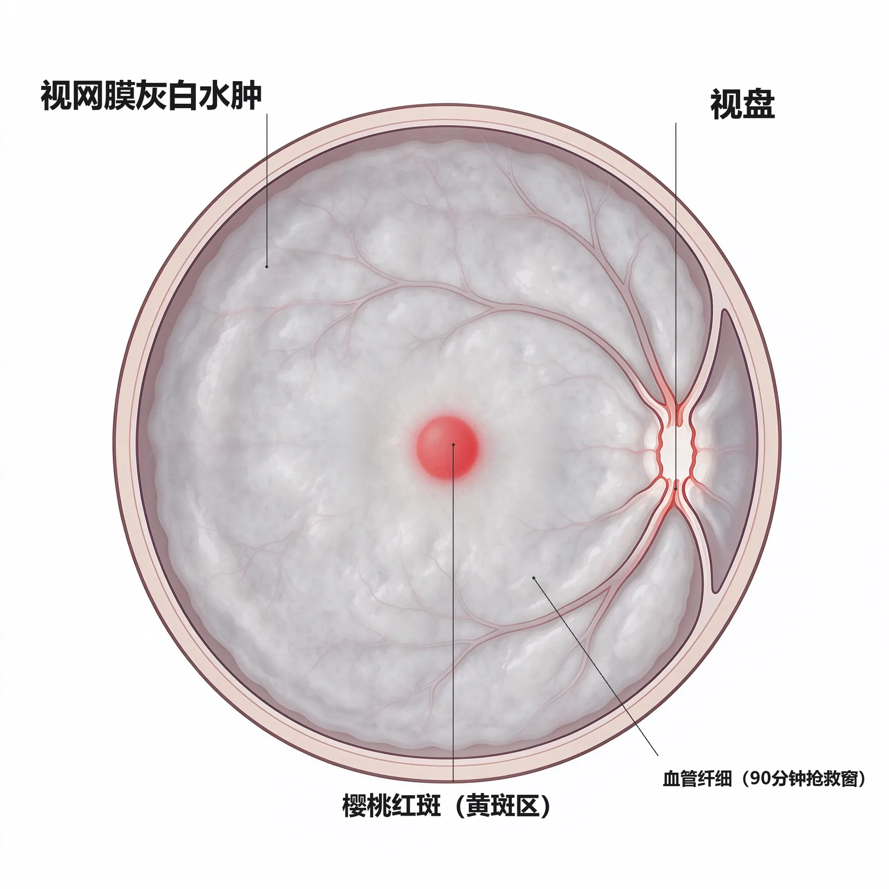
定义：视网膜中央动脉在筛板水平发生阻塞，致其所供养的视网膜内层急性缺血，是严重损害视力的急性发作眼病（教材P153）。
为什么重要：眼科"卒中"，突发无痛盲+樱桃红斑是必考组合；立即急救决定视力存亡。
🧬 第一性原理：
视网膜内层（神经节细胞、双极细胞、内核层）完全靠视网膜中央动脉供血，无侧支循环；外层靠脉络膜毛细血管供血。当CRA在筛板处被栓子（心源性、颈动脉粥样硬化胆固醇栓子）或血栓堵死时，内层视网膜立刻缺血缺氧——细胞内水肿、乳白色混浊肿胀；而中心凹处只有外层、靠脉络膜供养，仍然透明，透见下方脉络膜的橘红色——于是在一片苍白水肿的背景上，中心凹那一点就显出鲜明的樱桃红斑。如果这条动脉不被尽快疏通，神经节细胞在数小时内不可逆死亡。这就是为什么必须急诊抢救：眼球按摩把栓子挤向末支、前房穿刺骤降眼压、吸入95%O₂+5%CO₂扩张血管、球后注射妥拉苏林、亚硝酸异戊酯舌下含服、阿司匹林抗凝、必要时tPA溶栓。本质上就是：一根终末动脉堵死→内层漂白→唯独中心凹靠邻居（脉络膜）供血而保住红点→时间就是视力。
- 临床表现：突发无痛性视力显著下降，发病前可有阵发性黑矇；90%初诊视力在指数~光感；患眼瞳孔散大、直接对光反射极度迟缓、间接对光反射存在（RAPD阳性）。
- 眼底三联：后极部弥漫苍白水肿 + 中心凹樱桃红斑 + 动脉静脉均变细、节段性血柱。
- 转机：约25%眼有睫状视网膜动脉供养盘斑束，供血区呈舌形橘红色——这部分视力可保住（教材P153）。
🔬 展开：CRAO vs 眼动脉阻塞（表12-1）
| 检查 | CRAO | 眼动脉阻塞 |
|---|---|---|
| 视力 | 指数~手动 | 常无光感 |
| 视盘 | 无异常，晚期着染 | 水肿、弱荧光 |
| 黄斑 | 樱桃红斑 | 无樱桃红斑 |
| 视网膜 | 后极苍白水肿 | 后极水肿重并向周边延伸 |
| 脉络膜FFA | 一般正常 | 弱荧光，晚期RPE改变 |
| ERG | b波下降 | a波、b波均下降/消失 |
"樱桃红斑"只见于CRAO，不见于眼动脉阻塞——因为眼动脉连脉络膜一起堵了，中心凹也缺血，红底透不出来。此外CRAO患者必须全身排查：20%~40%眼内可见栓子，急性发作后心脑血管缺血事件风险高，要查颈动脉超声、心脏超声、凝血；若疑巨细胞动脉炎，立即全身激素预防对侧眼受累（教材P153-154）。
🔴 【掌握级】视网膜中央静脉阻塞（CRVO）
定义：筛板后中央静脉内血栓形成，致所引流视网膜静脉瘀滞、出血、水肿；是仅次于DR的第2位常见视网膜血管病（教材P156）。
为什么重要：火焰状出血+视盘水肿是体征标配；缺血型可在3~4月内转新生血管性青光眼——必须随访周边无灌注区。
🧬 第一性原理：
视网膜中央动、静脉在筛板处紧贴伴行。当动脉因高血压/粥样硬化而硬化管壁增厚时，动脉像一根硬管子压在旁边柔软的静脉上——静脉在筛板处受压狭窄，血流变慢，加上糖尿病等致血黏度升高、血小板聚集增强，静脉腔内就形成血栓。血栓一堵，整个视网膜静脉回流瘀滞：毛细血管静水压升高，血浆外渗→视网膜水肿、视盘水肿；红细胞从浅层毛细血管沿神经纤维层漏出→火焰状浅层出血沿静脉分布于各象限；慢性缺血诱发VEGF→虹膜/视网膜新生血管。如果只是瘀滞、无大片无灌注，就是非缺血型，预后尚可；如果毛细血管广泛闭塞、视网膜大面积缺血，VEGF暴增，3~4月内虹膜新生血管→新生血管性青光眼。本质上就是：硬化动脉压瘪伴行静脉→血栓形成→全盘瘀血性出血水肿→缺血催生新生血管→晚期青光眼盲。
- 高危人群：50岁以上、高血压、糖尿病、高血黏度、高眼压/视盘玻璃膜疣压迫。
- 眼底标配：各象限静脉迂曲扩张 + 火焰状浅层出血沿静脉走行 + 视盘及视网膜水肿 + 黄斑囊样水肿（CME）。
🔬 展开：CRVO非缺血型 vs 缺血型（表12-2）
| 鉴别点 | 非缺血型 | 缺血型 |
|---|---|---|
| 视力 | 轻~中度下降 | 明显下降，多<0.1 |
| 眼底 | 出血水肿较轻 | 大量融合出血、重度水肿、棉绒斑 |
| RAPD | 无 | 有（相对性传入性瞳孔障碍） |
| FFA无灌注区 | 无或少量 | >10个视盘面积 |
| ERG | b波/b/a正常或轻降 | b波振幅降低、b/a降低 |
| 新生血管 | 无 | 常有 |
| 预后 | 相对好，3年内约34%转缺血型 | 差，3~4月内易发新生血管性青光眼 |
CRVO治疗不宜用止血药、抗凝药、血管扩张药（教材P156）——这是反向考点！黄斑水肿一线是玻璃体腔注射抗VEGF（多次重复、易复发）；地塞米松缓释剂有效但要警惕激素性白内障/青光眼。缺血型必须缩短随访，见无灌注区播散光凝，见虹膜新生血管即全视网膜光凝±抗VEGF。
🔴 【掌握级】糖尿病视网膜病变（DR）分期与治疗
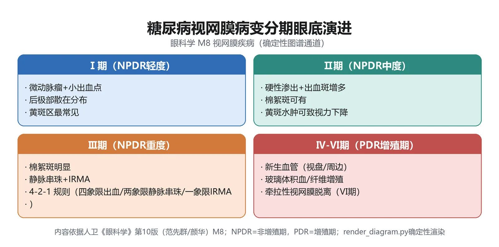
定义：糖尿病微血管并发症，最常见的视网膜血管病；按发展分非增殖期（NPDR，Ⅰ~Ⅲ）与增殖期（PDR，Ⅳ~Ⅵ），两型均可合并糖尿病黄斑水肿（DME）（教材P159）。
为什么重要：六期分级表是期末与执医最高频考点；DME分型、抗VEGF一线地位、全视网膜光澄指征必须背。
🧬 第一性原理：
长期高血糖损伤视网膜毛细血管内皮——周细胞丢失、内皮紧密连接破坏、血-视网膜内屏障漏。最早出现的是微血管瘤（毛细血管壁囊性膨出，对应Ⅰ期）；屏障继续漏，脂质与血浆沉积成硬性渗出，神经纤维层微小梗死成棉绒斑（Ⅱ期）；当四个象限出血≥20点、或≥2象限静脉串珠、或≥1象限IRMA（视网膜内微血管异常）——说明缺血已经很重，即重度NPDR（Ⅲ期，"4-2-1法则"）。缺血视网膜分泌大量VEGF，催生视盘新生血管NVD或视网膜新生血管NVE——一旦出现即跨入Ⅳ期（PDR早期）；新生血管伴纤维增殖膜、合并视网膜前/玻璃体积血即Ⅴ期；纤维膜收缩牵拉视网膜脱离即Ⅵ期。而DME是另一独立轴：黄斑毛细血管渗漏→中心凹视网膜增厚，是否累及中心凹1mm决定是NCI-DME还是CI-DME。本质上就是：高血糖漏屏障→出血渗出（NPDR）→缺血长新生血管+纤维膜（PDR）→膜牵拉脱网；另一条线漏到黄斑就水肿。
🔬 展开：我国DR六期+DME分类（表12-3）
| 分期 | 名称 | 眼底病变（教材P159） |
|---|---|---|
| Ⅰ期 | 轻度NPDR | 仅有毛细血管瘤样膨出 |
| Ⅱ期 | 中度NPDR | 出血+硬性渗出和/或棉绒斑（轻~重之间） |
| Ⅲ期 | 重度NPDR | 4-2-1法则：每象限出血≥20点；或≥2象限静脉串珠；或≥1象限IRMA |
| Ⅳ期 | 增殖早期 | 出现NVE或NVD |
| Ⅴ期 | 纤维增殖期 | 纤维膜，伴视网膜前出血或玻璃体积血 |
| Ⅵ期 | 增殖晚期 | 牵拉性视网膜脱离，合并纤维血管膜 |
DME分类：NCI-DME=黄斑增厚未累及中心凹直径1mm；CI-DME=累及中心凹1mm范围内——直接决定视力预后与抗VEGF指征。
全身控糖血压血脂是基石；轻中度NPDR观察；重度NPDR/PDR→全视网膜光凝或联合抗VEGF；CI-DME一线=抗VEGF眼内注射，NCI-DME可局部激光；抗VEGF无应答换激素；玻璃体积血久不吸收/牵拉性网脱（尤其黄斑受累）→玻璃体切割术；CRT<400μm的DME可用微脉冲激光（教材P160）。
2型糖尿病确诊时即应首次眼底检查；1型糖尿病起病5年后开始筛查；妊娠糖尿病需孕期复查。无DR者每年一次，NPDR加重则缩短间隔至半年或更短。这是因为早期DR无自觉症状，等患者"看不清"时往往已进入PDR或DME——筛查本身就是治疗。
🔴 【掌握级】年龄相关性黄斑变性（AMD）
定义：50岁以上人群黄斑区RPE-Bruch膜-脉络膜毛细血管复合体退行性变，分干性（萎缩性）与湿性（渗出性/新生血管性）两型；是老年人不可逆盲首位原因（教材P162）。
为什么重要：玻璃膜疣、地图样萎缩、CNV、抗VEGF一线、PCV的ICGA金标准——全部是高频考点。
🧬 第一性原理：
黄斑中心凹每天接受强光照射，光感受器外节盘膜被RPE吞噬消化。随年龄增长，RPE代谢废物（脂褐素）堆积在Bruch膜上，形成玻璃膜疣（drusen）——小而硬边界清=硬性疣；大而软融合=软性疣，是向湿性转化的危险因素。RPE逐渐萎缩、脱色素，连成一片就是地图样萎缩——这是干性AMD，视力缓慢下降。若Bruch膜因疣堆积而破裂，脉络膜毛细血管穿过破裂处长到RPE下或视网膜下——就是CNV（现称MNV）；新生血管漏血浆、漏血，造成渗出性/出血性盘状脱离，晚期机化成盘状瘢痕——这是湿性AMD，视力骤降、视物变形、中心暗点。既然CNV是VEGF驱动的，玻璃体腔抗VEGF就成为一线；PCV是特殊亚型，ICGA见息肉样病灶+分支血管网，治疗上抗VEGF联合PDT最优。本质上就是：RPE-脉络膜复合体老废物堆积→要么萎缩（干性慢盲），要么破膜长新生血管出血（湿性骤盲）。
🔬 展开：干性 vs 湿性AMD对照
| 维度 | 干性（萎缩性）AMD | 湿性（渗出性/新生血管性）AMD |
|---|---|---|
| 起病 | 缓慢，双眼渐降 | 突然视力下降、视物变形、中心暗点 |
| 病理 | RPE/Bruch膜/脉络膜毛细血管萎缩 | Bruch膜破裂→CNV/MNV→渗出出血 |
| 特征体征 | 玻璃膜疣（硬/软）、色素紊乱、地图样萎缩 | 后极部RPE下/视网膜下暗红黑红出血、黄白渗出 |
| 进展 | 慢，年计 | 快，月计，晚期盘状瘢痕 |
| 治疗 | 抗氧化维生素(C/E)+锌+铜+叶黄素/玉米黄质；软疣微脉冲激光 | 抗VEGF一线（雷珠单抗/康柏西普）；PDT；PCV联合PDT |
鉴于RAP的新生血管其实来自视网膜而非脉络膜，国际上已用黄斑区新生血管（MNV）替代CNV：1型=RPE下（旧隐匿型CNV，PCV属此）；2型=RPE上视网膜下（旧典型性CNV）；3型=从视网膜深层向外长（旧RAP）。OCT/OCTA是无创随访首选（教材P163）。
湿性AMD视力能否保住，取决于抗VEGF启动是否及时——中心凹下出血一旦形成盘状瘢痕即不可逆。PCV与普通湿性AMD的差别在于：单纯抗VEGF对部分PCV不足，联合半剂量PDT是目前最有效方案；ICGA是PCV诊断金标准，见脉络膜循环来源的息肉样强荧光+分支血管网（BVN）即可诊断。
🔴 【掌握级】孔源性视网膜脱离（RRD）
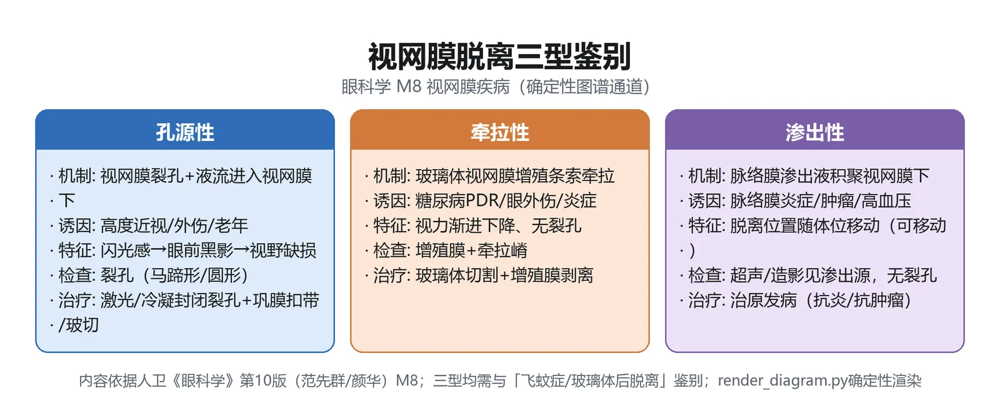
定义：视网膜裂孔形成后，液化玻璃体经裂孔灌入神经上皮下，致神经上皮与RPE分离；是三型视网膜脱离中最常见、最急症的一型（教材P166）。
为什么重要：两要素（裂孔+液化玻璃体）、马蹄孔好发颞上、闪光感+幕布遮挡三联征、急症手术封孔——必考。
🧬 第一性原理：
视网膜神经上皮与RPE之间只是胚胎视杯腔的残留潜在间隙，正常靠玻璃体贴附、RPE液体泵维持贴附。当周边视网膜发生格子样变性（近视眼多见，区内小血管闭塞呈白线网格），变性区萎缩可形成圆形萎缩孔；但若同时有PVD，未脱开的玻璃体皮质在变性区边缘被眼球转动反复牵拉，就撕出一个带盖翘起的马蹄形裂孔。此时凝胶早已液化成水——水状玻璃体经裂孔灌进神经上皮下，像墙纸进水一样把神经上皮从RPE上剥起来，脱离区对应视野就出现幕状黑影遮挡；闪光感来自牵拉光感受器。一旦累及黄斑，视力骤降。治疗铁律是封闭裂孔：激光光凝或冷冻裂孔周围，制造炎症粘连把神经上皮焊回RPE，再用巩膜外垫压/环扎或玻璃体切割顶压复位。本质上就是：变性区+牵拉撕出洞→液化水灌进去→两层"墙纸"被泡开→必须焊死洞口+顶回去。
- 高危人群：老年人、高度近视、无晶状体/人工晶状体眼、眼外伤。
- 症状三联：漂浮物增多 + 闪光感 + 幕状黑影遮挡并逐渐扩大。
- 眼底：脱离区视网膜灰白隆起、波浪状起伏；裂孔在灰白背景上呈红色；最多见颞上象限，次颞下、鼻侧。
- 预后关键：黄斑是否脱离及脱离时长——黄斑未脱/脱离<1周预后好；久脱则黄斑变性、视力不可逆。
🔬 展开：视网膜脱离三型鉴别（表12-4）
| 类型 | 裂孔？ | 机制 | 常见病因 | 治疗 |
|---|---|---|---|---|
| 孔源性RRD | 有 | 液化玻璃体经裂孔灌入神经上皮下 | 格子样变性+PVD牵拉、高度近视、外伤 | 急症手术封孔（巩膜外垫压/环扎/玻切） |
| 牵拉性TRD | 多无（可合并） | 玻璃体内纤维增殖膜直接牵拉 | PDR、ROP、眼外伤后玻璃体积血机化 | 玻切剥膜，合并裂孔按RRD处理 |
| 渗出性ERD | 无 | 外屏障破坏，脉络膜血浆经RPE漏入 | VKH、后巩膜炎、葡萄膜炎、妊高症、CSC、Coats、脉络膜肿瘤；出血型见于湿性AMD | 治原发病，不手术封孔 |
渗出性视网膜脱离绝对没有裂孔，治疗是治原发病（如VKH用激素），绝不能按RRD去打激光封孔——因为根本没有孔可封。牵拉性网脱离的"牵引力"来自玻璃体内纤维膜，眼底见视网膜被膜拉起、活动度差，B超有助诊断（教材P167）。
🟡 【熟悉级】视网膜解剖定位与血供（教材P151）
视网膜前界锯齿缘、后界视盘；神经上皮层含三级神经元（光感受器→双极→神经节），节细胞轴突汇成视神经。血供双系统：内核层以内由视网膜中央血管供血，外层由脉络膜毛细血管供血；黄斑中心凹无视网膜毛细血管，全靠脉络膜。血-视网膜内屏障=毛细血管内皮紧密连接+周细胞；外屏障=RPE紧密连接。｜💡 这解释了CRAO为何内层苍白而中心凹保留樱桃红、解释了屏障破坏为何致水肿/渗出性脱离。
🟡 【熟悉级】视网膜出血五层定位（教材P152）
| 出血层次 | 位置 | 形态 | 常见病因 |
|---|---|---|---|
| 深层出血 | 外丛状层与内核层间 | 暗红小圆点状 | 静脉性损害=DR |
| 浅层出血 | 神经纤维层 | 线状/条状/火焰状，鲜红 | 动脉性损害=高血压/CRVO |
| 视网膜前出血 | 内界膜与玻璃体后界膜间 | 后极半球形/半月形，上有水平液平 | 静脉瘀滞 |
| 玻璃体积血 | 玻璃体腔 | 片状/团块混浊，量大不见底 | 新生血管破裂 |
| 视网膜下出血 | RPE下 | 黑灰/黑红隆起，易误诊脉络膜肿瘤 | 脉络膜新生血管 |
｜💡 "火焰状=浅层=动脉/静脉瘀滞；圆点状=深层=DR"是眼底定位口诀。
🟡 【熟悉级】视网膜新生血管与增生膜（教材P152-153）
视网膜新生血管由严重缺血缺氧、炎症或肿物诱发，多来自视盘表面或视网膜小静脉，沿视网膜表面生长、与玻璃体后界膜机化粘连，可长入玻璃体；周围伴纤维组织增生，膜一收缩即发大量视网膜前/玻璃体积血。视网膜增生膜则在出血、外伤、炎症、裂孔后，由胶质细胞与RPE迁徙增殖形成视网膜前膜或视网膜下膜——这是PDR晚期牵拉性网脱、黄斑前膜、增殖性玻璃体视网膜病变（PVR）的共同细胞学基础。｜💡 记住一条通路：缺血→VEGF→新生血管+纤维膜→膜收缩→牵拉出血/网脱，本模块一半疾病都走这条路。
🟡 【熟悉级】视网膜水肿与渗出的鉴别（教材P152）
细胞内水肿：不是屏障破坏，而是CRAO等急性缺血致内层细胞肿胀，呈白色雾状混浊；细胞外水肿：内屏障破坏、血浆漏到神经上皮层内，FFA见毛细血管渗漏。黄斑区液体积于中心凹周围Henle纤维间形成多个小囊，即黄斑囊样水肿（CME）。硬性渗出则是慢性水肿水分吸收后脂质沉积，呈黄白颗粒/斑块，沿Henle纤维在黄斑排成星芒状。｜💡 "水肿=水在组织里；渗出=脂在组织里；CME=水积在囊腔里"——三者时间窗与成分不同。
🟡 【熟悉级】视网膜分支静脉阻塞（BRVO）（教材P157）
好发于动静脉交叉处硬化动脉压迫静脉，颞上支最常见。阻塞引流区浅层火焰状出血+水肿+棉绒斑；颞侧支阻塞累及黄斑则视力严重下降。缺血型标准：无灌注区>5视盘面积；发病3~6月后易生视网膜新生血管→玻璃体积血→牵拉/孔源性网脱。治疗：全身病因治疗+抗VEGF治黄斑水肿一线；大面积无灌注区/新生血管行播散性光凝。｜💡 BRVO与CRVO同源（动脉硬化压迫静脉），只是范围不同。
🟡 【熟悉级】视网膜静脉周围炎（Eales病）（教材P158）
青年男性多见，双眼先后发病，我国/印度/中东多见，过去疑与结核相关。周边部小静脉迂曲扩张、管周白鞘，伴浅层出血；无灌注区+新生血管→反复突发玻璃体积血→最终牵拉性网脱失明。治疗：激素口服/球旁注射，血吸收后FFA指导下激光封闭无灌注区，积血4~6周不吸收或牵拉网脱行玻切。｜💡 关键词：青年男性+周边静脉白鞘+反复玻璃体积血。
🟡 【熟悉级】棉绒斑与眼缺血综合征（教材P155）
棉绒斑（cotton-wool spot）是视网膜毛细血管前微动脉阻塞所致神经纤维层微小缺血性梗死，眼底见边界不清的灰白斑片、多<1/4视盘面积，一般5~7周消退（糖尿病患者持久）。约95%病例可查出隐藏的严重全身病——DR、高血压、肾病、SLE、白血病、AIDS，故眼底见棉绒斑必须顺藤摸瓜查全身。
眼缺血综合征由颈动脉粥样硬化/大动脉炎慢性阻塞所致：初期一过性黑矇、间歇眼痛，后期视力下降；眼底动脉细、静脉迂曲、周边散在红点出血与微动脉瘤；FFA见臂-视网膜循环时间显著延长。一旦出现虹膜新生血管，半数眼压升高→新生血管性青光眼失明。治疗针对颈动脉（内膜剥脱/支架），全视网膜光凝+抗VEGF辅助消退新生血管。｜💡 棉绒斑不是"渗出"而是微小梗死——名词陷阱。
🟡 【熟悉级】Coats病与早产儿视网膜病变ROP（教材P158、P160）
Coats病：健康男童10岁前、单眼，颞侧视网膜血管囊样扩张串珠状+深层/视网膜下黄白脂性渗出环绕血管，晚期渗出性网脱、新生血管性青光眼；儿童白瞳征必须与视网膜母细胞瘤鉴别。早期激光/冷冻，晚期玻切+抗VEGF。
ROP：发生于早产、低出生体重儿，未完全血管化的视网膜在高氧后缺血、刺激新生血管增殖收缩→牵拉性网脱，是儿童盲首位原因。与FEVR鉴别点：ROP有早产+吸氧史，FEVR为足月产、有家族史。筛查与治疗细则见模块10。｜💡 二者同属"周边无血管区+新生血管增殖"谱系，只是病因不同。
🟡 【熟悉级】黄斑裂孔（Gass分期）（教材P165）
特发性黄斑裂孔多见于老年女性，玻璃体后皮质对中心凹切线牵拉是主因。Gass四期：Ⅰ期=裂孔前期仅中心凹脱离、黄色斑点/小环，半数自愈；Ⅱ期=<400μm偏心半月/马蹄/椭圆全层孔；Ⅲ期=>400μm圆孔，后皮质仍粘黄斑；Ⅳ期=已PVD、可见Weiss环。全层孔视力多0.05~0.2、中心暗点；OCT是诊断金标准。继发于高度近视的裂孔网脱风险大需玻切；特发性Ⅰ期可观察，Ⅱ期以上玻切手术。｜💡 数字分界"400μm"与"Ⅳ期见Weiss环"是考点。
🟡 【熟悉级】黄斑视网膜前膜（教材P165）
胶质细胞与RPE迁徙到内界膜表面增殖成纤维膜。继发于内眼手术、眼内炎、血管炎、出血性血管病、外伤；特发性见于老年人、多伴PVD。分两期：玻璃纸样黄斑病变（透明薄膜、轻度视物变形、黄斑玻璃纸样反光）与黄斑皱褶（膜增厚收缩、视力≤0.5、血管扭曲向中心移位、OCT见前线状高反射）。无药可治，视力进行性下降/明显变形者行玻切+前膜剥除，约50%视力提高。｜💡 "玻璃纸样反光+血管扭曲"是体征关键词。
🟡 【熟悉级】周边视网膜变性与裂孔好发部位（教材P153）
双眼周边变性两类：视网膜内变性（囊样变性、获得性/先天性视网膜劈裂）；视网膜玻璃体变性（近视多见：格子样变性——区内小血管闭塞白线网格，边缘/两端受牵拉易生马蹄孔；蜗牛迹样变性生圆形萎缩孔；非压迫变白少生孔）。｜💡 格子样变性=RRD最大温床，高度近视眼散瞳查周边就是找它。
🟡 【熟悉级】中心性浆液性脉络膜视网膜病变（CSC）（教材P160-161）
25~50岁健康青壮年男性，A型性格、情绪压力、内/外源性激素诱发。脉络膜毛细血管通透性增高→RPE浆液脱离→后极部浆液性神经上皮脱离。症状：视力下降、视物变暗/变形/变小/变远+中心相对暗区；FFA见渗漏点呈炊烟状/墨渍样扩大。自限性，3~6月自愈，禁用激素与血管扩张剂；慢性者半剂量PDT或微脉冲激光；渗漏点在中心凹500μm外可光凝；转CNV/PCV则抗VEGF。｜💡 "青壮年男性+自限+禁激素"是三联记忆点。注意：CSC是少数明确禁用糖皮质激素的眼病——激素会加重脉络膜血管通透性，故A 型性格、情绪压力、妊娠、大剂量全身激素都是诱因；这点与VKH、眼内炎、Eales病等"激素是主力"的眼病正好相反，命题者爱反向考。
🟢 【了解级】近视性黄斑变性（教材P164）
病理性近视眼轴进行性变长、后巩膜葡萄肿；视盘颞侧近视弧、黄斑RPE/脉络膜萎缩、漆样裂纹、Fuchs斑（黑色微隆起）、中心凹下出血与CNV。合并玻璃体液化/劈裂易生黄斑前膜、黄斑裂孔→网脱。CNV一线抗VEGF。
🟢 【了解级】原发性视网膜色素变性（RP）（教材P167-168）
光感受器+RPE营养不良退行性变，多种遗传方式（X连锁/常隐/常显/散发）。四联征：夜盲（最早）+进行性向心性视野缩小（晚期管状视野）+赤道部骨细胞样色素沉着+ERG显著异常；视盘蜡黄、血管变细、青灰眼底。通常30岁前起病、青春期加重、中年因黄斑受累失明。目前无有效疗法，避免强光、低视力助视器；基因/干细胞/视觉假体为未来方向。
一句话背全："三细一色一灶"——血管细（小动脉窄）、视野细（管状）、ERG细（振幅低甚至无波）；色（赤道部骨细胞样色素）；灶（后囊下锅巴样白内障）。夜盲最早、ERG最早异常、管状视野最晚——这三条时间差是诊断关键。
🟢 【了解级】其他遗传性视网膜病变（教材P168-170）
- Stargardt病：最常见少年型黄斑营养不良，ABCA4基因常隐，6~20岁发病，双眼对称视力0.1~0.25，黄斑横椭圆萎缩斑"金箔样"，FFA见脉络膜湮没征。
- Best病（卵黄样黄斑营养不良）：BEST1基因常显；四期演变（卵黄前→卵黄样"煎鸡蛋"→卵黄破碎→萎缩）；EOG异常（Arden比<1.5）而ERG正常是特征。
- X连锁视网膜劈裂：RS1基因，男性儿童，黄斑轮辐样放射状囊样皱褶，ERG负波型（b/a倒置）。
把本模块"为什么致盲"串成一条可复述链条（★为关键转折节点）：
```text
视网膜血管事件
│
├─ 动脉堵(CRAO/BRAO) ──► 内层急性缺血水肿苍白 ──► 中心凹樱桃红斑
│ │
│ ▼
│ ★ 抢救黄金窗(争分夺秒): 按摩/前房穿刺/吸氧5%CO2/扩管/溶栓
│ │
│ ▼
│ 超时未通 ──► 神经节细胞不可逆死亡 ──► 苍白视盘+细动脉
│
└─ 静脉瘀(CRVO/BRVO) ──► 迂曲扩张+火焰状浅层出血+视盘水肿
│
▼
毛细血管缺血 ──► VEGF升高
│
┌──────┴───────┐
▼ ▼
非缺血型 ★ 缺血型(无灌注>10DD)
预后好 3~4月内: 虹膜新生血管→新生血管性青光眼
│ │
└──────┬───────┘
▼
黄斑囊样水肿CME(视力下降主因)
│
▼
玻璃体腔注射抗VEGF(一线) / 激素缓释剂 / 播散光凝
```
> [!TIP] 读图要点
> 两个★是救命拐点：CRAO的抢救窗（争分夺秒）与缺血型CRVO的3~4月新生血管窗。前者抢视力，后者抢眼球（防新生血管性青光眼）。
📈 D3 本模块疾病严重度谱系梯度
严重度梯度 代表疾病 处置重心
─────────────────────────────────────────────────────────────────
良性·自限 CSC、星状/闪辉变性 观察+宣教
│
▼
慢损·可治 干性AMD、黄斑前膜、Stargardt/Best 营养补充/随访/必要时玻切剥膜
│
▼
★ 急损·可复明 CRAO、孔源性视网膜脱离、玻璃体积血合并网脱 立即抢救 / 急诊封孔手术
│
▼
慢病·可控制 DR(NPDR)、CRVO、BRVO、湿性AMD、DME 抗VEGF+全视网膜光凝+全身控糖
│
▼
★ 进展性致盲 PDR(Ⅴ/Ⅵ期)、缺血型CRVO晚期、RP、ROP晚期 玻切+综合治疗;RP尚乏有效疗法
─────────────────────────────────────────────────────────────────出现以下任一条必须按急症处理：①突发无痛视力丧失+樱桃红斑=CRAO，须立即抢救；②闪光感+黑影飘动+幕布遮挡=警惕孔源性RD，24~48h内手术；③玻璃体积血不见眼底=B超排除RD与肿瘤；④缺血型CRVO随访期内眼红眼痛=警惕虹膜新生血管/新生血管性青光眼。
🌳 D4 鉴别决策树：突发/进行性视力下降定位
视力下降主诉
├─ 突发·无痛·单眼
│ ├─ 后极苍白水肿+樱桃红斑 ──► CRAO(眼科卒中,急诊抢救)
│ ├─ 某固定视野暗影+局限灰白水肿 ──► BRAO
│ ├─ 红色烟雾/视力骤降不见眼底 ──► 玻璃体积血(B超查RD)
│ └─ 幕状黑影遮挡+闪光感+灰白隆起 ──► 孔源性RD(急诊手术)
│
├─ 进行性·无痛·双眼或单眼
│ ├─ 老年人+玻璃膜疣+地图样萎缩 ──► 干性AMD(营养+随访)
│ ├─ 老年人+突发视物变形+黄斑下暗红出血 ──► 湿性AMD(抗VEGF)
│ ├─ 糖尿病史+微血管瘤/出血/硬渗/新生血管 ──► DR分期管理
│ ├─ 高血压史+静脉迂曲+火焰状出血 ──► CRVO/BRVO(抗VEGF治水肿)
│ └─ 青年男性+双眼先后+反复玻璃体积血 ──► Eales病(激素+光凝)
│
├─ 视物变形/变小/变暗
│ ├─ 青壮年男性+自限+炊烟状渗漏 ──► CSC(观察,禁激素)
│ ├─ 老年女性+中心暗点+OCT全层孔 ──► 黄斑裂孔(Ⅱ期以上玻切)
│ └─ 黄斑玻璃纸样反光+血管扭曲 ──► 黄斑前膜(重者剥膜)
│
└─ 夜盲+向心性视野缩小+骨细胞样色素 ──► 视网膜色素变性RP(低视力康复)本树先按"突发 vs 进行性"分岔，再按"体征组合"锁病。考试病例题看到"突发无痛+樱桃红"直接CRAO；看到"糖尿病+新生血管+玻璃体积血"直接PDR；看到"高度近视+闪光+幕布遮挡"直接RRD。
🔄 主动回忆区
- CRAO典型眼底三联：____、____、____；患眼瞳孔____，直接对光反射____；黄金抢救窗约____分钟。（教材P153-154）
- CRVO眼底特征：静脉____，视网膜出血呈____状沿____分布；缺血型FFA无灌注区>____视盘面积，发病____月内可生虹膜新生血管；黄斑水肿一线治疗为____。（教材P156-157）
- DR六期：Ⅰ仅有____；Ⅲ期重度NPDR的"4-2-1法则"指____；Ⅳ期出现____；Ⅵ期出现____；CI-DME一线治疗为____。（教材P159-160）
- 干性AMD特征为____与____；湿性AMD病理基础是Bruch膜破裂诱发____；一线治疗为____；PCV诊断金标准是____。（教材P162-163）
- 孔源性视网膜脱离两大要素：____与____；裂孔最多见于____象限；治疗原则是____；黄斑脱离<____周预后好。（教材P166）
学完本模块，你应能：①背出CRAO樱桃红斑与90分钟抢救、CRVO火焰状出血与缺血型转归；②默写DR六期与"4-2-1法则"、DME分型与抗VEGF地位；③区分干性/湿性AMD及PCV的ICGA金标准；④讲清孔源性RD两要素与三型RD鉴别；⑤在D4决策树上对号入座。五条都能口述，即可进入模块9视路疾病。
本模块反复出现的抗VEGF与全视网膜光凝两把钥匙，也用于ROP、高血压视网膜病变、新生血管性青光眼；而玻璃体切割术则贯穿PDR、黄斑前膜、黄斑裂孔、复杂RRD、眼内炎、玻璃体积血——记住这三把"通用工具"，后模块不必重新记忆。
📘 模块9：视路·屈光·斜弱视
M9 · 视路·屈光·斜弱视
重点等级：🔴掌握4个 / 🟡熟悉7个 / 🟢了解4个
教学范围：视路分段与病变视野定位；视神经炎与缺血性视神经病变；屈光不正三型（近视/远视/散光）与老视；屈光检查；共同性/麻痹性/隐斜及眼外肌神经支配；弱视定义、分类与治疗时机。
关联模块：模块3（眼科检查——视野、验光、遮盖试验的基础操作）、模块8（视网膜疾病——视盘与黄斑的眼底对照）。
谱系位置：视路疾病是「视野缺损→颅内定位」的神经眼科桥梁；屈光不正与老视属功能性眼病；斜视弱视是儿童视觉发育障碍，越早干预越可逆。
预计阅读：约 18 分钟（正文）+ 图表约 8 分钟。
先行组织者：本模块解决两件事——①「看到的东西缺了一块」怎么通过视野缺损反推病灶在视路上的哪一段（视神经/视交叉/视束/外侧膝状体/视放射/枕叶）；②「眼看不清」要么是屈光系统对光的折射没对准视网膜（近视/远视/散光/老视），要么是双眼协同或视觉发育出了问题（斜视/弱视）。前者靠视野定位，后者靠验光与眼位检查。本质上：视路疾病管「信号传不到大脑」，屈光管「光没聚焦在视网膜上」，斜弱视管「双眼没协同好或视觉没发育起来」。
🧩 前置知识检查
- 回顾：正常视觉传导路径——视网膜光感受器→双极细胞→神经节细胞轴突（视神经）→视交叉（鼻侧纤维交叉）→视束→外侧膝状体→视放射→枕叶距状裂皮质。若对「鼻侧/颞侧纤维是否交叉」生疏，先回看系统解剖。
- 回顾：平行光经凸透镜会聚、经凹透镜发散；柱镜（环曲面镜）只在一个子午线上有屈光力。若对透镜光学生疏，回看初中物理「凸/凹透镜成像」。
- 若陌生则回补：瞳孔对光反射通路（视神经传入→中脑顶盖前区→双侧动眼神经副核→动眼神经传出）是理解「Wernicke偏盲性瞳孔强直」与「皮质盲瞳孔正常」的关键，见模块3与本章第四节。
- 若陌生则回补：调节的生理机制（睫状肌收缩→悬韧带松弛→晶状体变凸）是理解老视与调节性内斜视的基础，见本章第一节。
1. 视路定位一句话：视神经损伤→同侧眼全盲；视交叉正中部损伤→双颞侧偏盲；视束及以后损伤→对侧同向偏盲，越靠后双眼缺损越对称，且伴黄斑回避（视放射/枕叶）（教材P171、P180-181）。
2. 屈光不正矫正口诀：近视→凹透镜（负球镜）；远视→凸透镜（正球镜）；散光→柱镜（环曲面镜）。三者本质都是把焦点移回视网膜上（教材P186、P192、P195）。
3. 老视≠远视：老视是40岁后调节幅度生理性下降，人人都会发生，用凸透镜近用补偿调节力不足，而非屈光不正（教材P198-199）。
4. 弱视定义三要素：视觉发育期内＋异常视觉经验（斜视/屈光参差/高度屈光不正/形觉剥夺）＋最佳矫正视力低于同龄正常值而眼部无器质性病变；治疗越早越好，0-3岁为关键期（教材P201、P213）。
5. 共同性 vs 麻痹性斜视：共同性——眼球运动不受限、各注视方向斜视角相等、无复视；麻痹性——眼球运动受限、第二斜视角>第一斜视角、有代偿头位与复视（教材P201）。
6. 视神经炎 vs AION：视神经炎多见于中青年、伴眼痛/眼球转动痛、中心暗点、激素治疗有效；AION多见于50岁以上、清晨突发无痛性、弓形/扇形视野缺损（教材P172-176）。
> [!SUCCESS] 记忆锚点
> 一句话串起全模块：「视路看视野定位，屈光看验光配镜，斜弱视看眼位与发育」。视交叉=双颞侧偏盲、近视凹透镜/远视凸透镜/散光柱镜、老视近用凸透镜、弱视越早治越好——这四句是必考中的必考。
📋 结构化笔记
🔴 【掌握级】视路分段与视野缺损定位
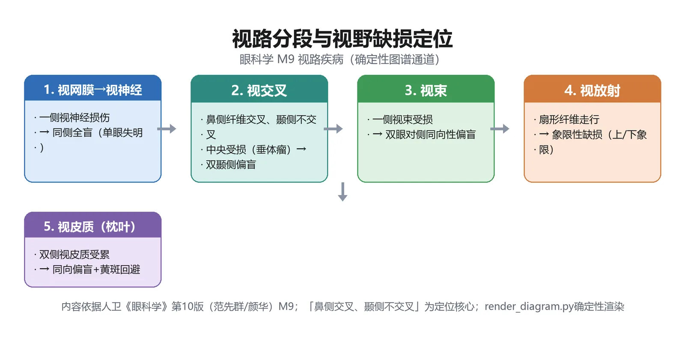
定义：视路（visual pathway）解剖上指从视网膜光感受器至大脑枕叶皮质视觉中枢的整个视觉传导通路，包括视神经、视交叉、视束、外侧膝状体、视放射和枕叶视皮质六段。偏盲型视野缺损（垂直正中线正切的视野缺损）是视神经以后视路病变的特征性表现（教材P171）。
为什么重要：这是神经眼科最经典的定位诊断框架，期末与执医几乎每年以「某视野缺损→病灶在哪」直接设问。
🧬 第一性原理：
双眼视网膜的鼻侧纤维在视交叉处交叉到对侧，颞侧纤维不交叉。这意味着：来自双眼颞侧视野的光落在视网膜鼻侧（要交叉），来自双眼鼻侧视野的光落在视网膜颞侧（不交叉）。如果视交叉正中受压（如脑垂体瘤），被压的正是交叉过来的双眼鼻侧纤维——它们传导的是双眼颞侧视野，于是出现双颞侧偏盲。如果损伤发生在视交叉之后（视束/外侧膝状体/视放射/枕叶），此时来自同侧眼颞侧纤维（不交叉）与对侧眼鼻侧纤维（已交叉）已合为一束，共同传导对侧半视野的信号，于是出现对侧同向偏盲。如果视神经本身受损，则该眼全部信号中断，出现同侧眼全盲。本质上就是：交叉部位决定视野缺损是「双侧颞侧分开」还是「同侧半侧同向」，越往后双侧纤维越合流，缺损越对称。
| 损伤部位 | 视野缺损特征 | 关键伴随体征 | 教材页码 |
|---|---|---|---|
| 视神经 | 同侧眼全盲 | RAPD阳性、下行性视神经萎缩 | P171、P180 |
| 视神经-视交叉交接处 | 同侧眼全盲＋对侧眼颞侧偏盲 | — | P180 |
| 视交叉正中部 | 双颞侧偏盲（脑垂体瘤最典型） | 原发性视神经萎缩 | P179-180 |
| 视束 | 不对称的对侧同向偏盲 | Wernicke偏盲性瞳孔强直 | P180 |
| 外侧膝状体 | 较对称的对侧同向偏盲 | 无Wernicke瞳孔强直 | P180 |
| 视放射 | 一致性对侧同向偏盲 | 可伴黄斑回避（3°-10°） | P181 |
| 枕叶视皮质 | 一致性对侧同向偏盲 | 黄斑回避、无视神经萎缩、无Wernicke | P181 |
「交叉管颞侧，交叉后管同向」。视交叉正中受压=双颞侧偏盲；视束/视放射/枕叶=对侧同向偏盲。黄斑回避只出现在视放射后部与枕叶（因黄斑区有双重血供）。
🔬 展开：视交叉病变——脑垂体瘤的视野缺损顺序
引起视交叉病变最常见者为脑垂体腺瘤，其次为鞍结节脑膜瘤、颅咽管瘤、前交通动脉瘤（教材P179）。脑垂体瘤位于视交叉下方，首先压迫视交叉鼻下纤维，引起颞上象限视野缺损，随后依次出现颞下、鼻下、鼻上象限缺损。而来自视交叉上方的肿瘤（鞍结节脑膜瘤、颅咽管瘤、第三脑室肿瘤）因自上而下压迫，视野损害顺序不同——因此病程早期仔细分析视野损害规律有助于区别鞍上或鞍下病变。
脑垂体瘤除引起视交叉综合征（视力障碍、视野缺损、原发性视神经萎缩）外，还伴肥胖、性功能减退、男性阳痿无胡须、女性月经失调等内分泌障碍。相当多垂体瘤患者因视野缺损首诊于眼科，故眼科医师在垂体瘤早期诊断中起重要作用。治疗以手术切除为主，早期视野视力损害术后可部分恢复；若已发生继发性视神经萎缩，预后不佳（教材P179-180）。
🔬 展开：Wernicke偏盲性瞳孔强直与皮质盲
Wernicke偏盲性瞳孔强直：瞳孔对光反射的传入纤维在视束中伴行，但在进入外侧膝状体之前就离开视束走向顶盖前区。因此视束病变时，用裂隙光照射视网膜偏盲侧（即该纤维已受损侧），不引起瞳孔收缩；而视放射及以后的病变因瞳孔纤维已离开视束，无此征（教材P180）。这是鉴别视束病变与视放射病变的关键体征。
皮质盲（cortical blindness）：双侧枕叶皮质损害（如脑血管病）导致双眼全盲，但其特征为——①双眼全盲；②瞳孔对光反射正常；③眼底正常；④VEP异常。据此可与伪盲及癔症鉴别（教材P181）。机制：枕叶皮质是「看见」的中枢，但瞳孔对光反射的中枢在中脑顶盖前区，不经枕叶皮质，故皮质盲时瞳孔反射完好。
①「双颞侧偏盲」不要与「双鼻侧偏盲」混淆——视交叉正中部受压（垂体瘤）损伤的是交叉纤维（双眼鼻侧视网膜纤维），导致双眼颞侧视野缺损；双鼻侧偏盲极为少见，见于视交叉两侧受压。②「黄斑回避」不是所有同向偏盲都有，只出现在视放射后部与枕叶病变；视束病变无黄斑回避。③皮质盲患者瞳孔对光反射正常——不要因「全盲」就误以为瞳孔反射消失。
🔴 【掌握级】屈光不正三型（近视/远视/散光）
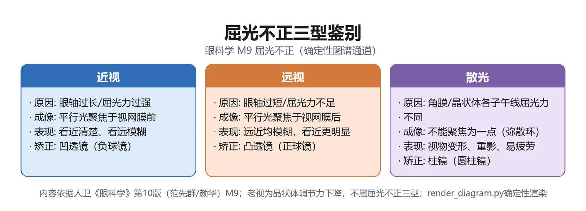
定义：在眼调节放松状态下（注视5m以外平行光），若平行光线经眼屈光系统折射后未准确聚焦在视网膜上，称为非正视（ametropia）或屈光不正（refractive error），主要包括近视、远视和散光三型（教材P182-183）。
为什么重要：三型的定义、焦点位置与矫正镜片是最基础也最高频的考点，且直接关联验光配镜与近视防控国家战略。
🧬 第一性原理：
眼球是一套复合光学系统（角膜、房水、晶状体、玻璃体），总屈光力约58.64D（Gullstrand模型眼），其中角膜占2/3以上。正视眼时，屈光力与眼轴长度精确匹配，平行光聚焦在视网膜上。如果眼轴过长（轴性近视）或屈光力过强（屈光性近视），焦点就落到视网膜前面——看远处模糊（近物发出发散光，经调节后可聚焦），这就是近视；如果眼轴过短或屈光力过弱，焦点落到视网膜后面——看远模糊、看近更模糊，靠增加调节可部分代偿，这就是远视；如果眼球在不同子午线上屈光力不等（如角膜曲率各方向不一致），平行光折射后不能会聚成一个焦点而是形成Sturm光锥，这就是散光。矫正的本质：用外部镜片把焦点移回视网膜上——近视焦点在前，需凹透镜（负球镜）使光线发散后再入眼，焦点后移到视网膜；远视焦点在后，需凸透镜（正球镜）使光线会聚后再入眼，焦点前移到视网膜；散光两条子午线上屈光力不同，需柱镜（环曲面镜）只在屈光力不足的那个子午线上补偿屈光力。本质上就是：焦点偏前用凹透镜往后拉、偏后用凸透镜往前推、各子午线不等用柱镜补差值。
| 类型 | 平行光聚焦位置 | 典型主诉 | 矫正镜片 | 教材页码 |
|---|---|---|---|---|
| 近视（myopia） | 视网膜之前 | 远视力模糊、近视力好、眯眼 | 凹透镜（负球镜） | P186 |
| 远视（hypermetropia） | 视网膜之后 | 视远模糊、视近更模糊、视疲劳 | 凸透镜（正球镜） | P192 |
| 散光（astigmatism） | 不能聚成一个焦点（Sturm光锥） | 远近均模糊、视物变形、视疲劳 | 柱镜（环曲面镜） | P194-195 |
| 近视程度分类 | 球镜度范围 | 教材页码 |
|---|---|---|
| 轻度近视 | -0.50D ≤ 球镜度 < -3.00D | P187 |
| 中度近视 | -3.00D ≤ 球镜度 < -6.00D | P187 |
| 高度近视 | 球镜度 ≥ -6.00D | P187 |
| 远视程度分类 | 球镜度范围 | 教材页码 |
|---|---|---|
| 低度远视 | ≤ +3.00D | P193 |
| 中度远视 | +3.00D ~ +5.00D | P193 |
| 高度远视 | > +5.00D | P193 |
🔬 展开：远视按调节状态分类与散光五型
远视按调节状态分五类（教材P193）：①显性远视——小瞳验光（未散瞳）即表现出来的远视度数；②隐性远视——睫状肌生理性紧张掩盖、未散瞳不暴露的部分；③全远视——显性+隐性之和（散瞳全矫所需最大正镜）；④绝对性远视——动用全部调节仍无法代偿的部分；⑤随意性远视——可被调节代偿的部分。随年龄增长，隐性逐渐转显性、随意性逐渐转绝对性，至老年完全无调节时全部为显性远视。
散光按两主子午线聚焦位置分五型（教材P195）：
| 散光类型 | 主子午线像位置 |
|---|---|
| 单纯近视散光 | 一在视网膜上，另一在视网膜前 |
| 单纯远视散光 | 一在视网膜上，另一在视网膜后 |
| 复合近视散光 | 两主子午线像均在视网膜前 |
| 复合远视散光 | 两主子午线像均在视网膜后 |
| 混合散光 | 一在视网膜前，另一在视网膜后 |
规则散光按屈光力最大主子午线方向分顺规散光（垂直位，儿童多见）、逆规散光（水平位，老年人多见）、斜轴散光。规则散光用柱镜矫正；不规则散光（如圆锥角膜、角膜瘢痕）无法用框架柱镜矫正，需硬性接触镜（RGP）借助「泪液镜」矫正（教材P195-196）。
🔬 展开：近视的成因学说与病理性近视
近视发病机制未完全阐明，主要学说包括调节滞后学说、周边离焦学说、神经递质学说（多巴胺释放抑制眼轴增长）与巩膜缺氧学说。环境因素中，长期近距离工作、户外活动不足（光照不足致视网膜多巴胺释放减少）是关键可控因素（教材P186-187）。
按屈光成分分为轴性近视（眼轴过长，最常见，大多数单纯性近视属此型）与屈光性近视（角膜/晶状体曲率过强或屈光指数过高）。按病程分为单纯性近视（≤-6.00D，眼底无病理改变）与病理性近视（>-6.00D且持续增长，眼轴常>26.5mm，伴豹纹状眼底、漆裂纹、Fuchs斑、后巩膜葡萄肿，是我国不可逆致盲主要原因之一）（教材P187-188）。
框架眼镜（最常见，凹透镜）、接触镜（含角膜塑形镜Ortho-K，夜间佩戴暂时改变角膜曲率，可延缓近视进展）、屈光手术（激光角膜切削PRK/femto-LASIK/SMILE、眼内ICL植入、后巩膜加固术）。低浓度阿托品（0.01%）滴眼液也是临床认可的近视干预药物（教材P189-191）。
①近视矫正用凹透镜（负球镜），远视用凸透镜（正球镜）——方向不要记反；②散光用柱镜而非球镜，合并近视/远视时用球柱镜联合；③儿童首次验光或远视必须做睫状肌麻痹验光（散瞳验光），以排除调节痉挛导致的「假性近视」或暴露隐性远视（教材P188、P194）。
🔴 【掌握级】老视（presbyopia）
定义：随着年龄增长，眼的调节幅度逐渐下降，从而出现近距离工作困难等症状，这种因年龄增长所致的生理性调节能力降低称为老视。无论屈光状态如何，每个人均会发生老视（教材P198）。
为什么重要：老视常被误当作「远视加深」，但其本质是调节力下降而非屈光不正，起病年龄与矫正方式是高频考点。
🧬 第一性原理：
正视眼看远时睫状肌松弛、晶状体扁平；看近时睫状肌收缩、悬韧带松弛、晶状体因自身弹性变凸以增加屈光力。这一过程依赖于晶状体的弹性形变能力和睫状肌的收缩功能。随着年龄增长，晶状体厚度与密度逐渐增加、弹性下降（Helmholtz理论），睫状体与晶状体赤道部距离也减小（Schachar理论），导致晶状体变凸的能力逐年下降。调节幅度从青少年的约14D（10岁）降至40岁约4.5D、60岁约1.0D。当调节幅度不足以满足近距阅读（约需3D调节）时，就出现视近模糊——需要把书拿远、需要更强照明、视近不能持久。如果晶状体弹性完好，调节幅度就不会下降，也就不会有老视；正因为人人都会经历晶状体老化，所以老视人人都会发生。矫正逻辑：老视者的远距屈光状态可能是正视/近视/远视，但近距时调节力不足，因此在远矫正基础上加一片正透镜（凸透镜）作为近附加，补偿调节力的不足。本质上就是：晶状体老了、调不动了，就用一片凸透镜在近处帮它「代劳」。
| 老视表现 | 机制解释 |
|---|---|
| 视近困难，需把书拿远 | 调节幅度下降，近点远移 |
| 视近不能持久、眼胀头痛 | 在调节极限附近持续用力，睫状肌疲劳 |
| 需要更强照明 | 强光使瞳孔缩小、景深加大，弥补焦点不准 |
| 40-45岁开始出现 | 调节幅度降至约4.5D，不足以代偿近距需求 |
🔬 展开：老视的矫正方式
老视矫正目标是用正透镜补偿生理性调节下降，实现远中近全程清晰。框架眼镜分三类：①单光近用镜（仅视近）；②双光镜（上看远下看近，有分界线）；③渐变多焦点镜（PAL）——整个镜片屈光力自上而下渐变，依次为远用区、过渡区、近用区，外观无分界线，已成为老视者首选矫正方法（教材P200）。接触镜有同时视型与单眼视型（一眼看远一眼看近）。手术可在白内障术中植入多焦点/可调节人工晶状体。
老视≠远视：远视是屈光不正（焦点在视网膜后），老视是调节力下降（晶状体老化）。一个正视眼也会在40岁后发生老视；一个近视眼老视后看近可能反而不戴老花镜（因为近视的远点本身就在近处）。老视用凸透镜近用，远视用凸透镜远用全矫——两者都是凸透镜但用途不同（教材P198-200）。
🔴 【掌握级】弱视（amblyopia）
定义：弱视是视觉发育期内由于异常视觉经验（单眼斜视、屈光参差、高度屈光不正以及形觉剥夺）引起的单眼（少见双眼）最佳矫正视力低于对应年龄正常值，通常眼部检查无器质性病变（教材P201、P213）。
为什么重要：弱视是儿童最常见的视功能障碍之一，诊断三要素（发育期+异常经验+矫正视力低且无器质病变）与治疗时机（越早越好）是核心考点。
🧬 第一性原理：
视觉发育有关键期——出生后视觉系统在「清晰图像输入」的刺激下逐步成熟。正常情况下，双眼黄斑中心凹各自接收清晰物像，经视皮质融合为单一立体视觉。如果在关键期内（0-3岁关键期，0-12岁敏感期），一只眼（或双眼）因斜视、屈光参差、高度屈光不正或形觉剥夺（先天性白内障、上睑下垂）而从未接收到清晰图像，大脑视皮质会主动抑制该眼传入的模糊信号，久之该眼的视觉通路发育停滞——即使后来通过配镜把物像矫正清晰了，视皮质也已「习惯」了抑制该眼，视力仍低于同龄正常值。眼球本身没有发生器质性病变（视网膜、视神经结构正常），问题出在视觉发育的「用进废退」。如果在关键期内及时消除异常经验（矫正屈光不正、遮盖优势眼强迫弱视眼使用），被抑制的通路可以重新发育；但超过敏感期（12岁以后），可塑性显著下降，治疗效果大幅降低。本质上就是：发育期内某只眼「没看清楚过」，大脑就放弃了它，所以必须在敏感期内强制它「重新看清楚」。
| 弱视类型 | 病因 | 常见特征 | 教材页码 |
|---|---|---|---|
| 斜视性弱视 | 单眼斜视（内斜多见） | 仅单眼、斜视眼被抑制 | P213 |
| 屈光参差性弱视 | 球镜差≥1.50D或柱镜差≥1.00D | 度数高眼被抑制 | P213 |
| 屈光不正性弱视 | 未矫正的高度远视(≥4D)/散光(≥2D)/近视(≥5D) | 常双眼性 | P213 |
| 形觉剥夺性弱视 | 先天性白内障/角膜混浊/完全性上睑下垂 | 形成最快、单侧更重 | P213 |
| 年龄 | 正常视力下限 | 教材页码 |
|---|---|---|
| 3-5岁 | 0.5 | P213 |
| ≥5岁 | 0.67 | P213 |
| 两眼相差≥2行 | 较差一眼诊断弱视 | P214 |
🔬 展开：弱视治疗方法与时机
一旦确诊应立即治疗，发病越早、治疗越晚，疗效越差。基本策略三步：①消除病因（如先天性白内障手术、矫正上睑下垂）；②精确屈光矫正（配镜）；③促进弱视眼使用——遮盖优势眼（常规遮盖，最有效，已有200余年历史），中度弱视每天遮盖2小时与6小时疗效相当，重度6小时与全天相当（教材P214）。药物压抑疗法用1%阿托品滴眼压抑优势眼看远，适用于轻中度或遮盖依从性差者。后像疗法、红色滤光片、海丁格刷适用于旁中心注视者。治疗需定期随访（每2-3个月），双眼视力平衡后仍需维持治疗半年以上防复发。
🔬 展开：弱视发病机制——两种理论与斜视后适应
弱视发病机制公认有两种理论（教材P213）：①双眼异常的相互作用——斜视眼与优势眼的物像在视皮质冲突，中枢主动抑制斜视眼的信号；②形觉剥夺——屈光间质混浊（先天性白内障等）使黄斑从未接收过清晰图像，发育缺乏刺激。不同病因侧重不同：斜视性弱视主要靠「双眼异常相互作用」；屈光不正性弱视主要靠「形觉剥夺」；屈光参差性弱视两者兼有；单侧形觉剥夺两者兼有，双侧形觉剥夺仅形觉剥夺。
斜视后为克服复视与混淆视，可发生4种适应改变（教材P204）：①抑制——优势眼看清时另一眼被中枢抑制（双眼分别查视力时可正常）；②弱视——单眼斜视眼中心凹长期抑制导致最佳矫正视力下降（斜视性弱视）；③旁中心注视——弱视加重后丧失中心注视能力；④异常视网膜对应（ARC）——优势眼中心凹与斜视眼周边视网膜建立新对应关系（主要见于内斜视）。
🔬 展开：屈光检查（验光）基本流程
验光分客观验光与主觉验光两步。客观验光：①检影验光——根据视网膜反射光运动方向判断屈光状态；②电脑验光仪——快速客观初筛。儿童、远视、内斜视者必须做睫状肌麻痹验光（散瞳验光），以松弛调节、暴露隐性远视或排除调节痉挛导致的假性近视。主觉验光：在综合验光仪上用球镜、柱镜、交叉柱镜（JCC）精调度数与轴向，确定最佳矫正视力的最小负镜/最大正镜度数（MPMVA原则）。处方规范：先右眼（OD/R）后左眼（OS/L），先远用后近用；球镜用DS、柱镜用DC并标轴向，棱镜用Δ并标基底方向（BU/BD/BI/BO）（教材P188-189）。老视者在远矫正完成后加测近附加（试验性近附加→精确近附加NRA/PRA）。
①弱视诊断必须同时满足「矫正视力低于同龄正常值」和「存在异常视觉经验」两个条件，不可仅凭视力低就诊断（需先排除器质性病变）；②形觉剥夺性弱视形成最快，婴幼儿短暂遮盖单眼也可能引起剥夺性弱视——不可在关键期内随意遮盖婴儿单眼；③大龄儿童（>12岁）治疗效果差，越早越好是核心原则（教材P214-215）。
🟡 【熟悉级】视神经炎（optic neuritis）
定义：泛指视神经的各种炎性病变，是中青年人易患的致盲性视神经疾病。按部位分为视盘炎、球后视神经炎、视神经周围炎、视神经视网膜炎（教材P171-172）。
机制与鉴别：病因以炎性脱髓鞘最常见（前驱病毒感染/精神打击/预防接种诱发自身免疫攻击髓鞘），其次为感染（结核、梅毒、病毒）与自身免疫病。典型表现：急性/亚急性视力下降（1-2周最重），常伴眼痛或眼球转动痛；患眼RAPD（相对性传入性瞳孔障碍）阳性；视野典型为中心暗点或向心性缩小；VEP示P100波潜伏期延长。治疗：非感染性急性期首选大剂量甲泼尼龙静脉冲击（IVMP），后改口服泼尼松递减（教材P172-175）。需与AION、Leber遗传性视神经病变、中毒性视神经病鉴别。｜💡 「中青年＋眼痛＋中心暗点＋VEP潜伏期延长」是视神经炎四联征。
| 鉴别点 | 视神经炎 | AION |
|---|---|---|
| 好发年龄 | 中青年 | 50岁以上 |
| 起病 | 急性/亚急性，1-2周最重 | 清晨突发，非进行性 |
| 眼痛 | 有（眼球转动痛） | 无 |
| 视野缺损 | 中心暗点/向心性缩小 | 与生理盲点相连的弓形/扇形缺损 |
| 视盘表现 | 视盘炎者充血水肿；球后视神经炎早期眼底正常 | 局限性/弥漫性水肿伴线状出血 |
| 主要病因 | 脱髓鞘（MS/NMOSD/MOG） | 睫状后短动脉缺血 |
🔬 展开：视神经炎三种亚型鉴别
脱髓鞘性视神经炎按抗体与临床病程分三亚型（教材P173）：IDON（特发性脱髓鞘性，即MS-ON）——欧美最常见，单眼多见，有自愈性，AQP-4/MOG抗体阴性，约1/3-1/2进展为多发性硬化；NMOSD-ON（视神经脊髓炎谱系）——亚洲人群高发，AQP-4抗体阳性，双眼多、眼痛少、损害重且恢复差、易复发（5年复发率80%），可伴长节段横贯性脊髓炎；MOG-ON——儿童与复发性者多见，双眼发病，糖皮质激素反应好、恢复快。中国视神经炎患者5年内NMOSD转化率约40%、MS转化率仅4.8%，这一种族差异直接影响治疗选择（教材P174）。治疗核心：非感染性急性期首选大剂量甲泼尼龙静脉冲击（IVMP 1g/d×3-5天），AQP-4阳性者尽早启动免疫抑制治疗（硫唑嘌呤/吗替麦考酚酯/利妥昔单抗），重症可血浆置换或免疫吸附。
🟡 【熟悉级】前部缺血性视神经病变（AION）
定义：供应视盘筛板前区及筛板区的睫状后短血管小分支缺血，致使视盘发生局部梗死（教材P175）。
机制与鉴别：典型表现——突然无痛性非进行性视力下降，多在清晨醒来时发现，常主诉下方视物遮挡；多单眼发病；50岁以上多见；视盘局限性/弥漫性水肿伴线状火焰状出血；视野为与生理盲点相连的弓形或扇形缺损。分非动脉炎性（40-60岁，高血压/糖尿病/高血脂/夜间低血压）与动脉炎性（70-80岁，巨细胞动脉炎GCA，血沉/CRP升高，颞动脉压痛）。治疗：早期全身糖皮质激素，防控夜间低血压，改善微循环（教材P175-176）。｜💡 「清晨醒来+无痛+弓形视野缺损+50岁以上」是AION四联征。
🟡 【熟悉级】视盘水肿（papilloedema）
定义：视盘的一种充血水肿隆起状态，最常见原因为颅内压增高（肿瘤、炎症、外伤、先天畸形）。视神经外面3层鞘膜与颅内3层脑膜相连续，颅内压经脑脊液传至视神经处（教材P176）。
机制与鉴别：早期视力正常（可有一过性视物模糊），伴头痛、恶心呕吐；典型视野为生理盲点扩大而周围视野正常。分4型：早期型（视盘充血+盘周小片出血，边界模糊顺序下→上→鼻→颞）、进展型（火焰状出血+棉绒斑+星形渗出）、慢性型（视盘圆形隆起、视杯消失、硬性渗出）、萎缩型（视盘灰白、血管细有鞘膜）。需与视盘炎（视力严重下降+眼痛）、假性视盘水肿（视盘玻璃膜疣，B超可鉴别）、AION鉴别。关键鉴别点：视盘水肿早期视力正常而视盘炎早期视力即严重下降；视盘水肿多双侧伴颅内压增高症状而视盘炎多单侧伴眼痛。治疗针对病因（颅内病变）（教材P176-177）。｜💡 「早期视力正常+生理盲点扩大+头痛呕吐+双侧」是颅内压增高性视盘水肿的特征。
🟡 【熟悉级】共同性斜视与麻痹性斜视的鉴别
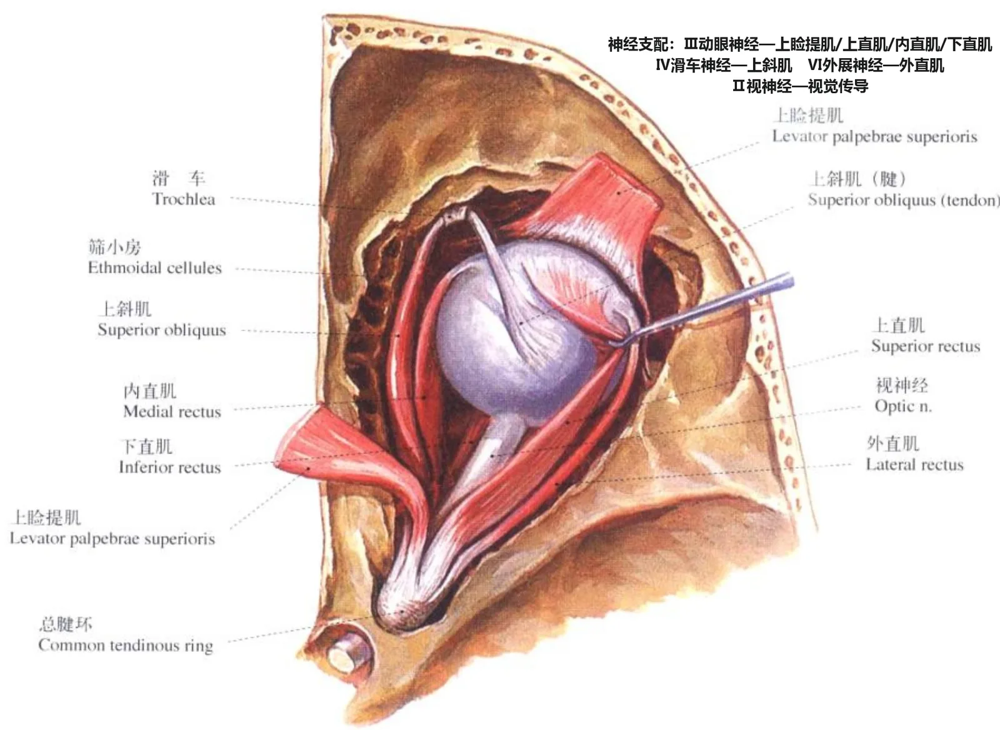
定义：斜视指任何一眼视轴偏离的临床现象。共同性斜视为眼球运动无限制、斜视角不随注视方向改变、两眼分别注视时斜视角相等；麻痹性斜视（非共同性）为神经肌肉麻痹所致，眼球运动在某方向受限，斜视角随注视方向变化，第二斜视角>第一斜视角，多有代偿头位与复视（教材P201）。
| 鉴别点 | 共同性斜视 | 麻痹性斜视 |
|---|---|---|
| 眼球运动 | 不受限 | 某方向受限 |
| 斜视角 | 各注视方向相等 | 随注视方向变化 |
| 第二斜视角 vs 第一斜视角 | 相等 | 第二>第一 |
| 复视 | 无 | 有（后天获得者） |
| 代偿头位 | 无 | 有 |
| 病因 | 双眼视功能异常/调节因素 | 神经麻痹（Ⅲ/Ⅳ/Ⅵ）/机械限制 |
🔬 展开：隐斜与融合机制及斜视检查法
隐性斜视（phoria）是能被双眼融合机制控制的潜在眼位偏斜；显性斜视（tropia）是不能被融合控制的眼位偏斜。绝大多数人都有小度数隐斜，靠运动融合维持正位。融合分手感觉融合（视皮质整合双眼物像为一）与运动融合（保持物像落在视网膜对应区）。
遮盖试验是区分隐斜与显斜的基本检查：①交替遮盖试验——交替遮盖双眼，若去遮盖眼有移动，提示有隐斜或显斜；②遮盖-去遮盖试验——遮盖一眼后突然去遮盖，若该眼去遮盖后从偏斜位回到正位，为隐斜；若始终停留在偏斜位，为显斜（教材P202）。
Hirschberg试验（角膜映光法）：用点光源照射角膜，根据反光点偏离瞳孔中心的位置估算斜视度——反光点在瞳孔中央为正位；偏离1mm约等于22Δ（棱镜度）。可快速筛查明显斜视。
复视像分析用于麻痹性斜视：红玻璃试验/复视像检查，患者向各诊断眼位注视，报告哪一方向复像距离最大、何眼物像偏离。复像距离最大的方向即为麻痹肌作用方向，据此定位麻痹肌。Parks三步法用于上斜肌麻痹的定位诊断（教材P210）。
眼球运动两定律：①Sherrington神经交互支配定律——眼外肌收缩时其拮抗肌同步松弛；②Hering配偶肌定律——双眼向同方向注视时，对应配偶肌接受等量神经冲动（如向右注视时右眼外直肌与左眼内直肌等量收缩）（教材P203）。
🟡 【熟悉级】眼外肌与神经支配
定义：每眼6条眼外肌（4直肌+2斜肌），其神经支配为考试必背（教材P202-203）。
| 眼外肌 | 主要作用 | 次要作用 | 神经支配 |
|---|---|---|---|
| 外直肌 | 外转 | 无 | 外展神经（Ⅵ） |
| 内直肌 | 内转 | 无 | 动眼神经（Ⅲ） |
| 上直肌 | 上转 | 内转、内旋 | 动眼神经（Ⅲ） |
| 下直肌 | 下转 | 内转、外旋 | 动眼神经（Ⅲ） |
| 上斜肌 | 内旋 | 下转、外转 | 滑车神经（Ⅳ） |
| 下斜肌 | 外旋 | 上转、外转 | 动眼神经（Ⅲ） |
「外直（Ⅵ）、上斜（Ⅳ）、其余动眼（Ⅲ）」——6条眼外肌中只有外直肌归外展神经、上斜肌归滑车神经，其余4条（内直、上直、下直、下斜）均归动眼神经。展神经麻痹最常见，表现为大度数内斜+外转受限。
🟡 【熟悉级】调节、聚散与近反射三联动
定义：调节是眼为看清近物而改变屈光力的功能（睫状肌收缩→悬韧带松弛→晶状体变凸）；聚散（vergence）指双眼同向/异向运动；注视近物时调节、集合（会聚）、瞳孔缩小三件事同步发生，称为近反射三联动（教材P185-186）。
机制：调节幅度（AMP）指眼能产生的最大调节力，与年龄密切相关（Hoffstetter公式）。AC/A比率（每单位调节引起的调节性集合，以棱镜度/D表示）正常约3/1-5/1，是诊断双眼视功能异常与调节性内斜视的重要指标——高AC/A者少量调节即可引起过多集合，导致高AC/A型调节性内斜视（视近内斜>视远）。中高度远视儿童需动用大量调节，联动引起过多集合，导致屈光性调节性内斜视（散瞳戴远视全矫眼镜后眼位正位）（教材P186、P206）。｜💡 「远视→调节多→集合多→内斜」是理解调节性内斜视的因果链。
| 调节性内斜视分型 | 关键特征 | 治疗要点 | 教材页码 |
|---|---|---|---|
| 屈光性调节性内斜视 | 中度远视，戴镜后眼位完全正位 | 全矫远视眼镜，不适手术 | P206 |
| 部分调节性内斜视 | 戴镜后斜视部分减少 | 戴镜3-6月后手术矫正残余 | P206 |
| 高AC/A型 | 视近内斜>视远（≥15Δ） | 双光镜/缩瞳剂/双眼内直肌后徙 | P206 |
外斜视较内斜视少见，可由外隐斜→间歇性外斜视→恒定性外斜视进展。间歇性外斜视是亚洲儿童最常见斜视类型，按视远视近斜视角分四型：基本型（视远=视近）、分开过强型（视远>视近≥15Δ）、集合不足型（视近>视远≥15Δ）、假性分开过强型。典型表现为强光下喜闭一眼、疲劳或融合破坏时暴露斜视，始终保持正常视网膜对应、很少弱视。先天性（婴儿型）内斜视于出生后6个月内发病、斜视角大，手术时机为18-24个月，术后宜保留<10Δ微小内斜以利建立周边融合（教材P205、P208-209）。
🟡 【熟悉级】近视的矫治手段与近视防控
要点：框架眼镜、接触镜、屈光手术为世界公认三大矫治方法。框架眼镜中凹透镜矫正近视、凸透镜矫正远视、柱镜矫正散光；功能性离焦框架镜、角膜塑形镜（Ortho-K，夜戴改变角膜曲率，适用于-6.00D以下）、多焦软镜、低浓度阿托品（0.01%）为延缓近视进展的临床干预手段。屈光手术分角膜屈光手术（PRK/femto-LASIK即半飞秒/SMILE即全飞秒）、眼内屈光手术（ICL植入）、巩膜屈光手术（后巩膜加固术，适用于进展性高度近视）（教材P189-191）。国家战略层面，据国家卫健委统计我国儿童青少年近视总体发生率达53.6%，预计2050年近视患病人数接近9亿；防控核心证据链为户外活动每天2小时以上可降低发病率（光照促使视网膜多巴胺释放、抑制眼轴增长）、减少持续近距离用眼（「20-20-20」法则）、远视储备量是近视发生的重要预测指标（教材P186-188）。｜💡 「凹透镜矫正近视、角膜塑形镜延缓进展、0.01%阿托品防控」三条线。
🟢 【了解级】视神经萎缩（optic atrophy）
要点：指视网膜神经节细胞及其轴突病变，一般为视网膜至外侧膝状体之间的轴突变性。分原发性（筛板后视路损害，下行性萎缩，视盘苍白边界清、可见筛孔）与继发性（视盘/视网膜/脉络膜原发病变，上行性萎缩，视盘灰白晦暗、边界模糊、血管有白鞘）。诊断不能单凭视盘色调（正常视盘颞侧较鼻侧淡、婴儿视盘较淡），须结合视力、视野、OCT综合判断。无特效疗法，治疗原发病；垂体瘤压迫术后视力可部分恢复（教材P177-178）。
🟢 【了解级】屈光参差（anisometropia）
要点：两眼屈光不正程度或性质不同。球镜相差≥1.50D、柱镜≥1.00D时可出现视觉问题（融像困难、不等像）。是弱视常见原因之一（屈光参差性弱视）。矫正首选接触镜（因接触镜贴角膜、物像大小接近正视眼），框架眼镜相差>2.50D时易融像困难（教材P197-198）。
🟢 【了解级】视盘发育异常
要点：包括视神经发育不全（双环征）、视盘小凹（25%-75%于20-40岁发生黄斑浆液性脱离）、视盘玻璃膜疣（可形成假性视盘水肿外观，B超可鉴别）、视盘缺损（胚裂闭合不全）、牵牛花综合征（视盘扩大3-5倍呈漏斗状）（教材P178-179）。
🟢 【了解级】眼球震颤（nystagmus）
要点：非自主性、有节律的眼球摆动。分冲动型与钟摆型；先天性运动性眼球震颤（传出机制缺陷，集合时震颤减轻，可有静止眼位/中间带与代偿头位）、知觉缺陷型（继发于视觉传入径路缺陷，出生即视力丧失者3个月时出现震颤）、隐性眼球震颤（遮盖一眼时出现，快相指向未遮盖眼）。治疗无根治方法，可配镜矫正屈光不正、三棱镜消除代偿头位（同向三棱镜移静止眼位至正前、异向三棱镜诱发集合抑制震颤）、手术移位静止眼位（教材P215-216）。
```text
患者主诉「视野缺了一块」
│
▼
★ 第一步: 视野缺损是否按垂直正中线分界?
│
否 ──► 非偏盲型(如向心性缩小/中心暗点) → 多见于视网膜/视神经病变
│ 是
▼
★ 第二步: 双眼缺损是「双颞侧分开」还是「对侧同向」?
│
双颞侧 ──► 视交叉正中部受压(垂体瘤最常见) → 双颞侧偏盲(P179)
│
对侧同向 ──► 视交叉以后病变 → 继续定位
│
▼
★ 第三步: 双眼缺损是否对称? 有无黄斑回避?
│
不对称 ──► 视束病变 → 查Wernicke偏盲性瞳孔强直(P180)
│
较对称但无黄斑回避 ──► 外侧膝状体病变(P180)
│
一致且伴黄斑回避(3°-10°) ──► 视放射后部/枕叶病变
│
▼
★ 第四步: 瞳孔对光反射是否正常?
│
瞳孔反射正常 + 全盲 + 眼底正常 ──► 皮质盲(双侧枕叶)(P181)
│
▼
针对性影像检查(MRI/CT) → 定位原发病变 → 对因治疗
```
> [!TIP] 读图要点
> 四个★是定位的四个分叉口：①是否偏盲型→②双颞侧vs同向→③对称度与黄斑回避→④瞳孔反射。按此顺序推理，任何视野缺损都能落到六段视路的某一段。
📈 D3 谱系梯度图：本模块疾病严重度梯度
严重度梯度 疾病示例 处置重心
────────────────────────────────────────────────────────────────────────────
轻度·功能性不适 老视(P198)、低度近视/远视(P187/P193)、隐斜(P202) 验光配镜、屈光矫正
│
▼
中度·视力发育障碍 弱视(P213)、屈光参差(P197)、共同性斜视(P201) 敏感期内配镜+遮盖+视训练
│
▼
中重·急性视力下降 视神经炎(P172)、AION(P175)、视盘水肿(P176) 急诊激素/排查颅内病因
│
▼
★ 危重·颅内急症 垂体瘤致视交叉受压(P179)、颅内压增高视盘水肿 头颅影像+神经外科/放疗
│
▼
★ 不可逆·终末损害 视神经萎缩(P177)、皮质盲(P181)、病理性近视眼底病变 治原发病+防对侧眼
────────────────────────────────────────────────────────────────────────────①突发视力下降伴眼痛→警惕视神经炎（中青年）或AION（老年），需急诊激素与排查；②双颞侧偏盲+内分泌症状（肥胖/性功能减退）→警惕脑垂体瘤，眼科首诊发现；③视盘水肿+头痛呕吐→警惕颅内压增高，必须头颅影像+腰椎穿刺；④儿童斜颈/歪头+复视→警惕麻痹性斜视（Ⅳ/Ⅵ脑神经），需神经科排查。任何一条出现，先影像定位再谈矫正（教材P176、P179-181）。
| 症状/体征 | 提示的危重病变 | 首步处理 |
|---|---|---|
| 突发视力下降+眼球转动痛 | 视神经炎（中青年脱髓鞘） | IVMP大剂量激素，排查AQP-4/MOG抗体 |
| 清晨突发无痛视力下降+弓形视野 | AION（50岁以上） | 激素+排查GCA（血沉/CRP/颞动脉活检） |
| 双颞侧偏盲+头痛/内分泌症状 | 垂体瘤/鞍区肿瘤 | 头颅MRI，神经外科会诊 |
| 视盘水肿+头痛呕吐+生理盲点扩大 | 颅内压增高 | 头颅影像+腰穿，降颅压 |
🌳 D4 鉴别决策树：急性视力下降的定位
急性/亚急性视力下降就诊
├─ 有眼痛/眼球转动痛?
│ ├─ 是 ──► 视神经炎(中青年,脱髓鞘)
│ │ ├─ 查: RAPD、VEP(P100潜伏期延长)、视野(中心暗点)
│ │ └─ 治: 大剂量甲泼尼龙IVMP(P174)
│ │
│ └─ 否(无痛)
│ ├─ 清晨突发+50岁以上+弓形/扇形视野 ──► AION(P175)
│ ├─ 双眼同时或先后+十几岁男性+中心暗点 ──► Leber遗传性视神经病(P174)
│ ├─ 长期吸烟/酒精/甲醇/乙胺丁醇 ──► 中毒性/代谢性视神经病(P174)
│ └─ 视盘充血水肿+头痛呕吐+生理盲点扩大 ──► 视盘水肿(颅内压增高)(P176)
│
└─ 视野缺损按垂直正中线分界(偏盲型)?
├─ 双颞侧偏盲 ──► 视交叉正中部(垂体瘤)(P179)
├─ 对侧同向偏盲+不对称+Wernicke瞳孔强直 ──► 视束病变(P180)
├─ 对侧同向偏盲+黄斑回避 ──► 视放射后部/枕叶(P181)
└─ 双眼全盲+瞳孔对光反射正常+眼底正常 ──► 皮质盲(P181)🔄 主动回忆区
- 视路六段依次为：____→____→____→____→____→____。视交叉正中部损伤导致____偏盲；视束及以后损伤导致____偏盲；视放射/枕叶病变可伴____回避。（教材P171、P180-181）
- 近视矫正用____透镜，远视矫正用____透镜，散光矫正用____镜。老视是40岁后____下降，用透镜____用补偿。（教材P186、P192、P195、P198）
- 弱视诊断三要素：____期内＋____经验＋最佳矫正视力____同龄正常值而眼部____器质性病变。治疗时机越____越好，____岁为关键期。（教材P201、P213）
- 眼外肌神经支配口诀：外直肌归____神经，上斜肌归____神经，其余4条归____神经。（教材P203）
- 视神经炎好发于____年，伴____痛，视野典型为____，VEP示____延长；AION好发于____岁，____突发无痛性，视野为____缺损。（教材P172、P175）
学完本模块，你应该能：①按视野缺损模式定位视路六段；②说出近视/远视/散光的焦点位置与对应矫正镜片；③区分老视与远视；④复述弱视三要素与治疗时机；⑤鉴别共同性与麻痹性斜视；⑥列出6条眼外肌的神经支配。若以上六条都能口述，本模块即达标。
📘 模块10：眼眶·外伤·全身相关
M10 · 眼眶·外伤·全身相关
重点等级：🔴掌握6个 / 🟡熟悉8个 / 🟢了解3个
教学范围：眼眶疾病（眶蜂窝织炎、甲状腺相关性眼病、眼眶肿瘤）；眼外伤（穿通伤/钝挫伤、眼内异物、化学伤急救、眼球破裂、眼睑裂伤）；全身相关眼底（高血压性视网膜病变 K-W 分级、糖尿病眼部并发症，与模块8 互见）。
关联模块：与模块8（视网膜疾病，DR 分期互见）、模块7（青光眼，外伤性/激素性青光眼互见）、模块5（葡萄膜炎，交感性眼炎互见）相关。
谱系位置：本模块横跨「眶内感染急症 → 外伤即刻急救 → 全身相关眼底窗口」三个层面，既有分秒必争的急救红线，也有以视盘/血管为窗口观察全身病的平台内容。
预计阅读：约 18 分钟（正文）+ 图表约 8 分钟。
先行组织者：本模块是眼科学的「收口」——前面九个模块讲「眼球本身怎么病」，本模块讲四件事：①眼球外面那个锥形骨头房子（眼眶）里发了炎、长了瘤会怎样；②眼球被外力打穿、打钝、被酸碱烧了，现场第一分钟该做什么、绝不能做什么；③高血压、糖尿病等全身病如何在眼底留下「窗口」。本质上就是「眶内急症 + 外伤红线 + 全身病窗口」三件事。
🧩 前置知识检查
- 回顾：眼眶是锥形骨腔，尖向后（眶尖→视神经管→颅内），眶隔将眶分为眶隔前（眼睑）与眶隔后（深部）。若对「眶隔」这道屏障陌生，是理解眶蜂窝织炎分型的前提。
- 回顾：眼球壁＝角膜＋巩膜（eyewall）；眼压正常范围 10～21 mmHg；前房、房水循环见模块7。
- 若陌生则回补：糖尿病视网膜病变（DR）的非增殖期/增殖期分期细节在模块8，本模块只讲「全身病为何会伤到眼」的接口，分期数值互见模块8。
- 若陌生则回补：前葡萄膜炎、KP、肉芽肿性炎症的表现见模块5，交感性眼炎作为其特殊类型在此挂接。
1. 眶蜂窝织炎是眼科急症危症：发热＋眼球突出＋眼睑高度红肿＋眼球运动受限，感染可经眼上静脉蔓延至海绵窦，立刻足量全身抗生素，拖延即危及生命（教材P217-218）。
2. 穿通伤现场三不：不冲洗、不压迫、不拔出异物；就地用硬纸板/纸杯底遮盖保护，注射破伤风抗毒素＋抗生素，二次手术修复（教材P253、P258-259）。
3. 化学伤唯一救命动作＝现场就地大量清水冲洗至少 30 分钟；碱比酸严重（酸凝固蛋白成屏障，碱溶解脂肪蛋白向深层渗透）（教材P264-265）。
4. 高血压视网膜病变用 Keith-Wagener 四级：Ⅰ血管变窄→Ⅱ动静脉交叉压迫→Ⅲ出血棉絮斑→Ⅳ加视盘水肿（教材P267-268）。
> [!SUCCESS] 记忆锚点
> 一句话串起本模块：「眶隔后红肿突眼＝急症抗生素；穿通伤三不＋破伤风；化学伤先冲30分钟；眼底分级看高血压」。
📋 结构化笔记
🔴 【掌握级】眶蜂窝织炎：眶内的感染急症危症
定义：眶蜂窝织炎（orbital cellulitis）是病原微生物感染引起的眶内软组织急性炎症，属眼眶特异性炎症，发病急剧，严重者因波及海绵窦而危及生命（教材P217）。
为什么重要：是本模块唯一「拖几小时就死人」的眶内感染，四联征一旦出现必须急诊。
🧬 第一性原理：
正常眼眶是一个封闭锥形骨腔，前方有眶隔这道软组织屏障挡住眼睑与外界，眶内血管经眼上静脉与颅内海绵窦无瓣膜直接相通。如果鼻窦、颌面部的感染不越过眶隔，就只是眼睑的小事（眶隔前）；一旦感染突破眶隔进入眶内，眶腔是个骨性死腔、无法靠肿胀减压，大量炎症细胞浸润＋组织水肿使眶压骤升，就会推挤眼球前突、卡住眼外肌；若感染再沿无瓣膜的眼上静脉逆流到海绵窦，就变成海绵窦血栓、颅内感染，危及生命。本质上就是：眶隔这道屏障一旦被感染突破，封闭骨腔＋无瓣膜静脉交通把「眼睑红肿」升级为「眶压危象＋颅内感染」。
🔬 展开：眶隔前 vs 眶深部蜂窝织炎
- 眶隔前蜂窝织炎：病变局限于眶隔前方眼睑，仅眼睑充血水肿，疼痛轻，瞳孔、视力、眼球运动多不受影响——是「皮肤及皮下」的炎症（教材P217）。
- 眶深部（隔后）蜂窝织炎：眼球突出、眼睑高度肿胀、球结膜充血甚至脱出睑裂、眼球运动障碍甚至固定、睑裂闭合不全（可暴露性角膜炎）；高眶压＋毒素使瞳孔对光反射减弱、视力下降；伴发热、恶心呕吐、头痛等全身中毒症状；感染蔓延海绵窦则出现烦躁、谵妄、昏迷、惊厥、脉搏减慢（教材P217-218）。
- 治疗：诊断明确即立即全身足量抗生素（先广谱后按培养药敏），同时结膜囊细菌培养＋药敏；控制感染前提下短期小剂量激素；脱水剂降眶压；抗生素眼液/眼膏保护角膜；脓肿形成后抽吸或切开引流＋脓液培养（教材P218）。
儿童 + 鼻窦感染史 + 眼睑红肿时，不要只当麦粒肿/眼睑皮炎处理。记住四联征「发热＋眼球突出＋眼睑高度红肿＋眼球运动受限」＝眶深部蜂窝织炎，需急诊静脉抗生素，漏诊可进展为海绵窦血栓致死。
🔴 【掌握级】甲状腺相关性眼病（TED/TAO）：成人首位眼眶病
定义：甲状腺眼病（thyroid eye disease, TED）是自身免疫反应引起的慢性多系统损害疾病，与甲状腺病密切相关，居成人眼眶疾病发病率首位，又称 Graves 眼病/甲状腺相关眼病（教材P219）。
为什么重要：上睑退缩、眼外肌梭形增粗是诊断标志，与炎性假瘤的鉴别点是高频考点。
🧬 第一性原理：
正常情况下，机体对促甲状腺激素受体（TSH 受体）维持免疫耐受，眶内成纤维细胞安静存在。当这种耐受被打破，B 细胞/浆细胞产生自身抗体攻击眶成纤维细胞，辅助性 T 细胞分泌 IFN-γ、IL-4、IL-17a 等细胞因子，诱导成纤维细胞增殖分化为脂肪细胞和肌成纤维细胞——于是眶内出现三件事：组织水肿、脂肪增生、纤维化。水肿脂肪把眼球向前顶出（眼球突出），眼外肌梭形肥大则压迫视神经、限制眼球运动。如果 TSH 受体不被自身抗体攻击，眶后脂肪与肌肉就不会异常增生，也就不会突眼；正因为脂肪＋肌纤维双增生，才同时出现「轴性突出」与「运动受限/复视」。本质上就是：自身抗体＋细胞因子把眶后脂肪和眼外肌「吹肿、纤维化」，同时把眼球顶出去、把视神经挤住。
🔬 展开：TED 体征、分期与治疗
- 特征性眼睑征：Dalrymple 征＝上睑退缩（睁眼暴露上方巩膜）；von Graefe 征＝上睑迟滞（眼球下转时上睑不随之下转）（教材P220）。
- 眼外肌受累顺序：下直肌＞内直肌＞上直肌＞外直肌；CT 示肌腹梭形肥厚、肌肉止点正常——此点与眼眶肌炎鉴别（肌炎连肌腱止点一起受累）（教材P221）。
- 两种临床类型：①成年女性、炎症突出、眶脂肪水肿为主、激素效佳易反复；②成年男性、炎症不突出、眼外肌肿大为主、早期纤维化、激素反应差（教材P220）。
- 活动性评分 CAS：从眼睑/结膜/泪阜炎症表现评分，活动期决定治疗时机；分轻、中重、极重度，出现暴露性角膜炎或视神经病变为极重度（教材P220）。
- 治疗：活动期中重度首选大剂量甲泼尼龙静脉冲击（总剂量 4.5 g 方案）；生物制剂（替妥木单抗、利妥昔单抗、托珠单抗）为二线；激素禁忌/不敏感者眶放疗（总量约 20 Gy）；静止期视功能/外观受累者分次手术：先眶减压→再眼肌手术→最后眼睑手术（教材P221-222）。
| 鉴别点 | 甲状腺相关眼病 TED | 眼眶特发性炎症（炎性假瘤） |
|---|---|---|
| 本质 | 自身免疫，成人眼眶病首位 | 眶内免疫紊乱非感染性炎症 |
| 眼外肌受累 | 肌腹梭形增粗，止点正常 | 肌腹＋肌腱止点均充血肥厚 |
| 起病 | 缓慢、双侧多见、可先后 | 急性眶痛、占位＋炎症双重效应 |
| 甲状腺 | 甲功/TRAb 多异常 | 一般正常 |
| 好发 | 成年女性多见 | 成年，无明显性别差异 |
「恶性眼球突出」指甲亢控制后突眼反而加重，不是真正恶性肿瘤；TED 眼压升高一般在 30 mmHg 以下，勿直接按原发青光眼处理。手术顺序「先减压、再眼肌、后眼睑」不能颠倒。
🔴 【掌握级】眼球穿通伤与眼外伤急救红线
定义：锐器刺入、切割造成眼球壁（角膜/巩膜）全层裂开，力量「由外向内」，伴或不伴眼内组织脱出，称眼球穿通伤（教材P258）。
为什么重要：现场处置直接决定眼球能否保住，「三不」是急救铁律。
🧬 第一性原理：
正常眼球壁是完整闭合的球壳，眼内容物（房水、玻璃体）被密闭在里面维持眼压与结构。一旦被锐器全层切开，这个密闭球壳就「破了」——房水外流使前房变浅、眼内压塌陷，眼内组织（虹膜、玻璃体、晶状体）会顺势从破口脱出或嵌顿；同时外界细菌随伤口进入无菌的眼内，引发感染性眼内炎。此时若现场再去冲洗、压迫、或拔出插在伤口上的异物，等于把污染挤进眼内、把嵌顿组织进一步拖出、把异物造成的「临时栓子」拔掉导致大出血/内容物大量脱出。本质上就是：破了的密闭球壳最怕「再扰动」，现场唯一正确动作是「罩住、固定、不碰」，把精细缝合留给手术室。
🔬 展开：机械性眼外伤分类与「二次手术」原则
- 闭合性 vs 开放性：以眼球壁（巩膜＋角膜）是否全层裂开分界。钝力致全层裂开＝眼球破裂伤（力量由内向外，裂口常在最薄弱处如角巩膜缘/眼外肌止点，可不在受力点）；锐器致全层裂开＝裂伤，又分穿通伤（一入口）、贯通伤（一入口一出口）、眼内异物（异物存留）（教材P252）。
- 现场急救（开放伤）：就地立即用硬纸板/纸杯 1/3 底部遮盖固定保护眼球；术前不宜滴睫状肌麻痹剂或抗生素（防眼内毒性）；不随意清除血痂或嵌顿异物；非眼科医生不做不当处置；注射破伤风抗毒素；合并休克/重要脏器伤先抢救生命（教材P253）。
- 二次手术原则：一期缝合恢复眼球壁完整性＋控制感染炎症；伤后 1～2 周二期行内眼/玻璃体手术处理外伤性白内障、玻璃体积血、视网膜脱离。尽量不做一期眼球摘除，慎修剪受损眼睑组织（教材P253、P258-259）。
- 初期缝合要点：单纯小角膜伤口（对合好、前房存在）可不缝合；＞3 mm 需显微缝合；虹膜嵌顿先抗生素冲洗还纳，不能还纳者剪除；角巩膜伤先缝角膜缘一针；脱出睫状体/视网膜还纳，脱出晶状体/玻璃体切除（教材P258）。
穿通伤现场三不——不冲洗、不压迫眼球、不拔出插入的异物；同时「两要」——要遮盖固定、要打破伤风抗毒素。与化学伤恰恰相反（化学伤要立刻大量冲洗），二者绝不能混淆。
🔴 【掌握级】眼化学伤：酸碱机制与现场冲洗
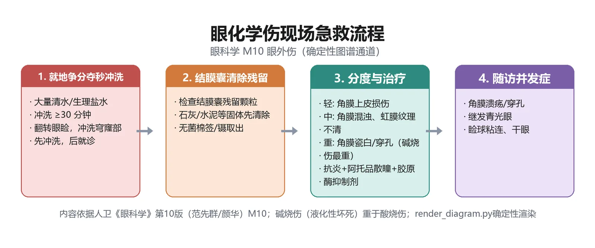
定义：化学物品溶液、粉尘或气体接触眼部所致烧伤，常见为酸、碱烧伤，均须按急诊处理（教材P264）。
为什么重要：冲洗是否及时彻底直接决定预后，「碱比酸重」是机制考点。
🧬 第一性原理：
眼表的角膜、结膜是活的蛋白组织。强酸接触组织后使蛋白凝固坏死，这层凝固蛋白像一道屏障，反而把酸挡在浅层、阻止其向深层渗透，所以酸烧伤相对局限。而强碱（氢氧化钠、生石灰、氨水）能溶解脂肪和蛋白质，没有「凝固屏障」，可一路分解细胞膜、迅速渗透到深层甚至穿入前房，使细胞持续坏死——所以碱烧伤后果远重于酸。无论酸碱，化学物质停留在结膜囊的每一分钟都在继续腐蚀，只有物理性地把化学物质冲走，才能中断损伤；送医院再洗就晚了。本质上就是：酸靠凝固蛋白自限、碱无屏障深渗，而一切化学伤的第一救治都是「用大量水把化学物质稀释冲走」。
🔬 展开：分度与后续治疗
- 分度：轻度（弱酸/稀弱碱，上皮点状脱落，不留瘢）；中度（强酸/较稀碱，结膜小片缺血坏死、角膜混浊、愈后留角膜斑翳）；重度（多为强碱，结膜广泛缺血坏死呈灰白、角膜全层瓷白，角膜基质溶解溃疡穿孔，碱性物渗入前房引起葡萄膜炎、继发青光眼、白内障，终致睑球粘连、眼球萎缩）（教材P264）。
- 急救：争分夺秒在现场彻底冲洗，就地取材大量清水反复冲洗，翻转眼睑、转动眼球暴露穹窿部，至少冲洗 30 分钟；到院后可再冲洗、检查有无异物残留，必要时前房穿刺（教材P264）。
| 对比点 | 酸烧伤 | 碱烧伤 |
|---|---|---|
| 损伤机制 | 使组织蛋白凝固坏死 | 溶解脂肪和蛋白质 |
| 屏障作用 | 凝固蛋白成屏障、限深层渗透 | 无屏障、迅速渗透深层及前房 |
| 严重度 | 相对较轻、较表浅 | 后果更严重 |
| 常见物 | 强酸 | 氢氧化钠、生石灰、氨水 |
- 后续：抗生素防感染；1% 阿托品散瞳；激素抑制炎症但伤后 2～3 周角膜有溶解倾向时停用；自家血清/生长因子促愈合；石灰烧伤用 0.5% EDTA；胶原酶抑制剂（半胱氨酸眼液＋全身四环素）防角膜穿孔；广泛坏死者早期切坏死组织防睑球粘连，必要时羊膜移植/角膜缘干细胞移植/全板层角膜移植（教材P264-265）。
「酸凝固、碱深渗；现场冲够 30 分钟；激素用早不晚（溶解期停）」。石灰伤别忘了 EDTA，碱烧伤警惕眼压二次升高（早期巩膜收缩、2～4 h 后前列腺素释放）。
🔴 【掌握级】高血压性视网膜病变（Keith-Wagener 分级）
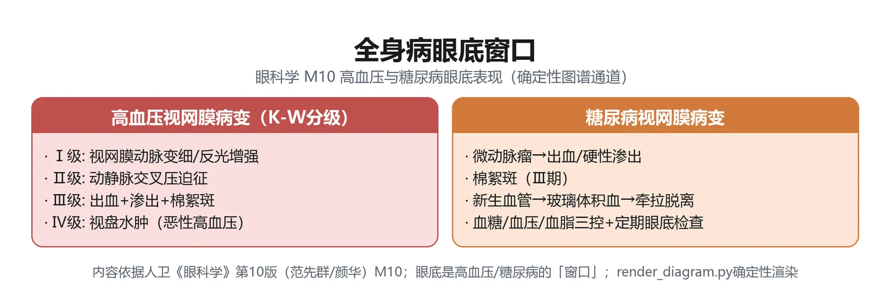
定义：视网膜动脉对高血压产生痉挛、变窄、管壁增厚，严重时出现渗出、出血和棉絮斑，临床采用 Keith-Wagener 眼底分级法（教材P267-268）。
为什么重要：四级标准是全身病眼部表现的核心数值考点，眼底是唯一可直视的小动脉窗口。
🧬 第一性原理：
视网膜中央动脉是全身唯一能在活体直视下看到的小动脉，它的管壁状态间接反映脑血管和全身血管。血压持续升高时，小动脉首先痉挛收缩（功能性、可逆）；长期压力使管壁增厚、玻璃样变（器质性），变硬的动脉交叉压在静脉上就出现动静脉交叉压迹；当血压骤升、管壁屏障破坏，血浆和血液漏出形成出血、硬性/棉絮状渗出；若血压极高、视神经轴浆回流受阻，就出现视盘水肿——这已是高血压急症/恶性高血压的标志。血压越高、病程越长，眼底改变越重。本质上就是：眼底小动脉按「痉挛→硬化→漏出→视盘水肿」四步逐级失代偿，眼底分级＝全身小血管损害程度的可视化刻度。
| 分级 | 眼底表现（教材P267-268） | 临床意义 |
|---|---|---|
| Ⅰ级 | 血管收缩变窄，动脉普遍变细、反光带增宽 | 最轻，功能性痉挛为主 |
| Ⅱ级 | 动脉狭窄＋动静脉交叉压迫 | 已有器质性硬化 |
| Ⅲ级 | 上述基础上＋眼底出血、棉絮状渗出 | 渗出性病变 |
| Ⅳ级 | Ⅲ级基础上＋视盘水肿 | 高血压急症/恶性高血压 |
🔬 展开：动脉硬化性视网膜病变与眼底「窗口」意义
眼底所见的视网膜动脉硬化为老年性动脉硬化与小动脉硬化，在一定程度上反映脑血管和全身其他血管系统状况，又称动脉硬化性视网膜病变。主要表现：视网膜动脉弥漫变细、弯曲度增加、颜色变淡、反光增宽、走行平直；动静脉交叉处可见静脉隐蔽和静脉斜坡现象；后极部可见渗出和出血，一般不伴水肿（教材P267）。原发性高血压占全部高血压 95% 以上，其中 70% 有眼底改变；眼底改变与年龄、血压升高程度、病程长短正相关（教材P267-268）。急性高血压（血压突升＞180/120 mmHg 伴靶器官损害）最主要眼部改变是视盘水肿、视网膜出血和渗出。
急性高血压（血压突升＞180/120 mmHg 伴靶器官损害）最主要眼部改变是视盘水肿＋视网膜出血渗出。70% 原发性高血压有眼底改变。高血压还可并发视网膜静脉阻塞、缺血性视神经病变、眼球运动神经麻痹、视网膜动脉阻塞（教材P268）。
🔴 【掌握级】糖尿病的眼部并发症（与模块8互见）
定义：糖尿病是一组以慢性高血糖为特征的代谢病，眼部并发症很多，包括糖尿病视网膜病变（DR）、糖尿病性白内障、屈光波动、虹膜睫状体炎、虹膜红变与新生血管性青光眼等（教材P268）。
为什么重要：DR 是最常见视网膜血管病，分期细节互见模块8，此处掌握「全身病如何伤眼」的接口。
🧬 第一性原理：
高血糖首先损伤遍布全身的微血管内皮。视网膜微血管最细密、最依赖血-视网膜屏障，内皮损伤后通透性增加、微血管瘤形成、出血渗出（非增殖期）；长期缺血缺氧释放 VEGF，刺激新生血管异常增生（增殖期）——新生血管脆弱易出血、机化牵拉致视网膜脱离，并可长在前房角引起新生血管性青光眼。同时高血糖使晶状体纤维肿胀混浊（糖尿病性白内障）、渗透压波动使屈光在几天内来回变化。本质上就是：高血糖先破坏微血管屏障（DR），再缺血催生新生血管（增殖＋新生血管青光眼），并直接让晶状体变肿变凸。
🔬 展开：糖尿病眼部表现速查
- DR 分期：非增殖期（NPDR）与增殖期（PDR），细节互见模块8（视网膜疾病）；本模块只记 DR 是糖尿病最常见视网膜血管病（教材P268）。
- 屈光波动：血糖骤升→房水渗透压下降、房水渗入晶状体→晶状体变凸→突然变近视或老视减轻；血糖回落又恢复（教材P268）。
- 其他：青少年型糖尿病易虹膜睫状体炎；糖尿病是开角型青光眼高危人群；糖尿病性眼球运动神经麻痹瞳孔通常不受累、可逐渐恢复；常伴角膜知觉下降、泪膜不稳（教材P268）。
糖尿病性眼肌麻痹的特点是「动眼神经麻痹但瞳孔正常」——与颅内动脉瘤压迫动眼神经（瞳孔散大）正好相反，是鉴别点。DR 分期数值不要在此重复背，去模块8统一记。
🟡 【熟悉级】眼眶特发性炎症（炎性假瘤）与眼眶血管病变
眼眶特发性炎症（IOI）旧称炎性假瘤，属非特异性炎症，共同特征是炎症＋占位双重效应；肌炎型 CT 见眼外肌肌腹＋肌腱止点同时受累，以此与 TED 鉴别；淋巴细胞浸润型对激素敏感，硬化型对激素/放疗均不敏感（教材P218-219）。眼眶海绵状静脉畸形是眶内最常见良性病变，渐进性轴性突出、MRI 渐进性强化；动静脉畸形 MRI 见流空效应、DSA 是诊断金标准（教材P222-224）。｜💡 记「肌炎止点受累＝假瘤，肌腹梭形＝TED」「DSA 金标准＝动静脉畸形」。
🟡 【熟悉级】眼球钝挫伤：前房积血与视网膜震荡
钝挫伤由机械钝力引起，眼球是含液不易压缩球体，力经液体和球壁传递造成多处间接伤。前房积血按占前房容量分 3 级（＜1/3 Ⅰ级、1/3～2/3 Ⅱ级、＞2/3 Ⅲ级）；吸收期再出血（16%～20%，多在伤后 2～3 天）可致继发青光眼与角膜血染（教材P254-255）。视网膜震荡为后极部一过性水肿、3～4 周可恢复；视网膜挫伤则有光感受器坏死、视力难恢复。虹膜根部离断瞳孔呈「D」字形；晶状体脱位（悬韧带断裂）嵌顿瞳孔或脱入前房需急诊摘除（教材P255-256）。钝挫伤还可致脉络膜破裂（后极部弧形凹面对向视盘的黄白瘢痕）、外伤性黄斑裂孔、锯齿缘离断（外伤性视网膜脱离典型）；钝挫伤性青光眼源于虹膜睫状体炎、房角后退、晶状体脱位与眼内出血（互见模块7）。｜💡 前房积血处理：半卧位、双眼包扎制动、激素点眼 5 天、5 天后再散瞳，眼压 5～7 天不降则前房冲洗。
🟡 【熟悉级】眼球破裂伤与隐匿性巩膜破裂
眼球破裂由严重钝挫伤所致，常见于角巩膜缘或眼外肌下；破裂处眼内组织脱出嵌顿、眼压降低、前房/玻璃体积血、视力光感以下。隐匿性巩膜破裂伤指破裂口靠后（眼外肌下/后部巩膜）或球结膜完整、结膜下大量出血掩盖伤口，极易漏诊：严重钝挫伤史＋视力光感以下＋球结膜水肿下大量出血＋低眼压＋前房积血＋眼球运动障碍，具 4～5 项即高度怀疑（教材P257）。处理同二次手术：先急诊缝合＋抗生素激素，1～2 周玻璃体手术。｜💡 「钝挫伤后视力极差＋结膜下大黑血块＋低眼压」一定要想到隐匿破裂，必要时手术探查。
🟡 【熟悉级】眼内异物与铁质/铜质沉着症
眼内异物是严重危害视力的眼外伤，敲击金属是最常见受伤方式。眼铁质沉着症：铁离子氧化扩散损伤视网膜、角膜、晶状体，夜盲、向心性视野缺损、虹膜异色、瞳孔散大、白内障，ERG b 波降低；眼铜质沉着症：角膜后弹力层铜绿色沉着、向日葵样白内障。诊断靠外伤史＋影像学，MRI 禁用于磁性异物（教材P260-262）。处理：及早手术取出；磁性异物可用电磁铁。｜💡 「磁性异物不做 MRI」是安全红线；纯铜异物需立即摘除。
🟡 【熟悉级】眼睑裂伤与泪小管断裂
眼睑血供丰富极少缺血坏死，但裂伤应尽早（伤后 24 h 内）清创分层对位缝合，睑缘、睑板、皮肤严格对合，先褥式缝合邻近睑板以免成角畸形；上睑提肌断裂须修复防上睑下垂。内眦眼睑外伤常伴下泪小管断裂，手术是唯一治疗，最好伤后 48 h 内吻合，术中找见断端是关键，置支撑物术后 3～6 个月拔除（教材P262-263）。｜💡 眼睑裂伤「保留组织、分层对合、24 h 内缝」；泪小管「48 h 内吻合、找断端」。
🟡 【熟悉级】交感性眼炎与外伤性感染性眼内炎
交感性眼炎：一眼开放伤或内眼术后，双侧肉芽肿性葡萄膜炎，潜伏期多为外伤后2 周～2 个月；诱发眼炎症不退，交感眼突然视力剧降，眼底周边黄白色 Dalen-Fuchs 结节，晚期「晚霞状眼底」，治疗用激素＋散瞳。外伤性眼内炎：开放伤后眼内炎发生率 3.1%～11.9%，合并异物更高；剧痛、视力骤降、前房积脓、玻璃体雪球样混浊，须立即大剂量抗生素＋激素、玻璃体腔注药（万古霉素＋头孢他啶＋地塞米松），必要时急诊玻璃体切割（教材P258-259）。｜💡 开放伤后「对侧眼也红、视力降」要想到交感性眼炎。
🟡 【熟悉级】早产儿视网膜病变（ROP）
ROP 指孕期 36 周以下、出生体重＜2000 g、有吸氧史婴儿发生的视网膜病变；未血管化视网膜暴露高浓度氧→毛细血管闭塞→纤维血管增生。按病变范围分 Ⅰ/Ⅱ/Ⅲ 区，严重程度分 1～5 期，附加病变（plus）提示活动期严重性；筛查对象为出生体重＜2000 g 或孕周＜32 周者，首次检查生后 4～6 周或矫正胎龄 31～32 周；阈值病变/1 型阈值前病变须 72 小时内治疗（抗 VEGF 注射、光凝/冷凝），4～5 期考虑手术（教材P271-273）。预防关键是对早产儿合理用氧、规范筛查。｜💡 ROP 与「白瞳征」鉴别见模块8；记「低体重＋吸氧史＋生后4～6周首筛」。
🟡 【熟悉级】视神经挫伤与辐射性眼损伤
外伤性视神经病变：最常见为间接损伤（前额/眉弓外侧钝挫伤），视力即刻严重丧失，均存在相对性传入性瞳孔障碍（RAPD），初诊视盘正常、4～8 周后视神经萎缩；早期大剂量甲泼尼龙冲击，无效或骨折压迫者视神经管减压（教材P263）。电光性眼炎（雪盲）：紫外线致角膜上皮坏死脱落，照射后 3～12 h 发作，强烈异物感、刺痛、畏光、流泪，角膜上皮点状荧光素染色，24 h 自愈；中波紫外线与年龄相关性白内障相关（教材P265-266）。｜💡 「眉弓外侧撞后视力骤降＋RAPD」＝视神经挫伤；「电焊/雪地后双眼剧痛畏光」＝电光性眼炎。
🟢 【了解级】眼眶结构异常与眼眶骨折
眼眶爆裂性骨折：外力使眶压骤增、薄弱眶壁（多下壁/内壁）破裂，眶内软组织疝出嵌顿，早期眼球突出、后期眼球内陷＋眼球运动障碍/复视为最常见表现；儿童眼外肌嵌顿需尽早手术松解，择期手术多在伤后 3～4 周（教材P227-228）。皮样囊肿：胚胎表皮陷于中胚叶形成的迷芽瘤，多位于眶外上方，渐进性眼球突出向下/内下移位，囊肿破裂内容物溢出可致反复炎症、酷似眶蜂窝织炎；CT 见负 CT 值脂类密度与骨硬化环，治疗须彻底切除囊壁（教材P224-225）。Crouzon 综合征为冠状/矢状/人字颅缝早闭致眶浅小、双眼球突出及斜视，常合并颅内高压（教材P225-226）。
🟢 【了解级】眼眶与眼内肿瘤速览
婴幼儿眶内良性多为血管瘤、恶性最常见为横纹肌肉瘤（进展极快、似眶蜂窝织炎）；成人眶内良性常见神经鞘瘤、成人最常见原发眶内恶性为淋巴瘤（黏膜相关边缘区 B 细胞、放疗敏感）；视神经鞘脑膜瘤典型四联症（视力减退、眼球突出、视盘水肿/萎缩、视神经睫状静脉）（教材P247-251）。眼内肿瘤：视网膜母细胞瘤（RB）是婴幼儿最常见眼内恶性肿瘤，典型「猫眼样反光/白瞳征」，RB1 双等位基因失活为主要机制，不提倡眼内活检；葡萄膜黑色素瘤是成人最常见原发眼内恶性肿瘤，约 50% 转移、多累及肝，典型 MRI T1 高信号、T2 低信号（教材P240-243）。｜💡 RB「白瞳征＋钙化」、UM「T1高T2低」为影像记忆点。
```text
主诉线索
│
├─ 眼睑红肿/发热 ──► ★ 是否越过眶隔？
│ ├─ 仅眼睑、视力运动正常 ─► 眶隔前蜂窝织炎
│ └─ 突眼+运动受限+全身中毒 ─► ★眶深部蜂窝织炎 → 立即足量全身抗生素
│ └─► 眼上静脉逆流 → 海绵窦血栓(致死)
│
├─ 外伤
│ ├─ 锐器穿孔/异物进入 ─► 穿通伤: 现场【不冲洗/不压迫/不拔异物】
│ │ + 硬纸遮盖 + 破伤风抗毒素 → 二期手术
│ ├─ 钝力打击 ─► 前房积血/视网膜震荡/★隐匿巩膜破裂(视力极差+结膜下血肿+低眼压)
│ └─ 酸碱入眼 ─► ★立即就地大量清水冲洗≥30分钟(碱重于酸) → 后续激素早用/溶解期停
│
└─ 慢性突眼
├─ 上睑退缩+肌腹梭形增粗 ─► TED(激素冲击活动期)
└─ 急性眶痛+肌腹肌腱均粗 ─► 炎性假瘤(激素敏感)
```
> [!TIP] 读图要点
> 两个「★」是生死拐点：①眶隔是否被突破决定要不要急诊静脉抗生素；②化学伤与穿通伤现场动作完全相反——化学伤「必须冲」、穿通伤「绝不冲/压/拔」，这是最易考反的一对。
📈 D3 疾病严重度谱系梯度图
把本模块疾病按「自限 → 可治 → 急症 → 致死/致盲」排成梯度（★为危险跃升点）：
严重度梯度 疾病示例 处置重心
────────────────────────────────────────────────────────────────────
轻·自限/可逆 眼睑擦挫伤、电光性眼炎、前房积血(少量) 对症+观察,多可自愈
│
▼
中·需积极治疗 高血压视网膜病变I-II级、糖尿病视网膜病变、 控制全身病+眼底随访
ROP、泪小管断裂、眼睑裂伤
│
▼
★ 急症/急危 眶深部蜂窝织炎、眼球穿通伤、眼球破裂、 ★分秒必争:
眼化学伤(碱)、眼内炎、视神经挫伤 抗生素/冲洗/缝合/破伤风
│
▼
★ 致死/永久致盲 海绵窦血栓、交感性眼炎(双盲)、眼内异物铁质沉着、 抢生命+保眼球+终身随访
晚期青光眼/视网膜母细胞瘤(转移)、重度碱烧伤
────────────────────────────────────────────────────────────────────出现以下任一信号，先急救再查因：①发热＋突眼＋眼睑红肿＋眼球固定＝眶深部蜂窝织炎；②开放伤口＋瞳孔变形/前房变浅＝穿通伤，三不＋遮盖；③碱入眼＝立即冲洗≥30 分钟；④钝挫伤后视力光感以下＋结膜下巨大血肿＋低眼压＝隐匿巩膜破裂；⑤开放伤后 2 周~2 个月对侧眼红肿视力降＝交感性眼炎。
🌳 D4 鉴别决策树一：以「眼球突出」为主线的眶内病变鉴别
眼球突出
├─ 急性起病 + 发热 + 眼睑红肿热痛 + 运动受限
│ └─ 眶深部蜂窝织炎 (儿童/鼻窦感染史) → 急诊静脉抗生素
├─ 亚急性/急性眶痛 + 复视 + 眼外肌肌腹&肌腱止点均粗
│ └─ 眼眶特发性炎症(炎性假瘤) → 糖皮质激素
├─ 慢性 + 双侧 + 上睑退缩(Dalrymple/von Graefe) + 肌腹梭形粗、止点正常
│ └─ 甲状腺相关眼病 TED → 活动期激素冲击,静止期分次手术
├─ 儿童+数天内极速进展+眼睑结膜水肿似蜂窝织炎
│ └─ 眼眶横纹肌肉瘤 → 综合放化疗
└─ 成人+缓慢无痛+轴性突出+影像渐进性强化
└─ 眼眶海绵状静脉畸形(最常见良性) / 神经鞘瘤🌳 D4 鉴别决策树二：眼外伤「开放 vs 闭合」与酸碱鉴别
外伤后眼痛/视力下降
├─ 眼球壁是否全层裂开?
│ ├─ 否(闭合性): 钝挫伤 → 查前房积血/虹膜根部离断/晶状体脱位/视网膜震荡
│ └─ 是(开放性): 力量方向?
│ ├─ 锐器由外向内 → 穿通伤/眼内异物 → 三不+遮盖+破伤风
│ └─ 钝力由内向外 → 眼球破裂(最薄弱处裂) → 警惕隐匿性巩膜破裂
└─ 化学物入眼: 酸 vs 碱?
├─ 酸: 蛋白凝固成屏障 → 损伤相对表浅局限
└─ 碱: 溶解脂肪蛋白、深渗前房 → 后果更重
共同第一步: 现场就地大量清水冲洗 ≥30 分钟(翻睑转眼、暴露穹窿)两棵树分别解决眶内与外伤两大鉴别场景。记结论：突眼看「起病快慢＋眼睑征＋眼外肌增粗形态」，外伤看「眼球壁完不完整＋力量方向＋酸碱」。
🔄 主动回忆区
- 眶深部蜂窝织炎四联征是____、____、____、____；治疗首选____；感染可经____静脉蔓延至____而危及生命。（教材P217-218）
- 眼球穿通伤现场「三不」是____、____、____；同时要做的两件事是____和____；后续采用____手术原则。（教材P253、P258-259）
- 眼化学伤现场急救是立即就地大量清水冲洗至少____分钟；酸使蛋白____而损伤相对局限，碱能溶解____而后果更严重。（教材P264-265）
- Keith-Wagener 分级：Ⅰ级____、Ⅱ级____、Ⅲ级____、Ⅳ级____。（教材P267-268）
- TED 两个特征眼睑征：上睑退缩称____征，上睑迟滞称____征；眼外肌受累顺序为____＞____＞____＞____。（教材P220-221）
学完本模块，你应能：①复述眶深部蜂窝织炎四联征与急诊处理；②说出穿通伤三不与化学伤冲洗原则的对照；③默写 K-W 四级；④在突眼与外伤两棵决策树上完成定位。若以上四条均能口述，本模块即达标，并与模块8（DR 分期）、模块5（葡萄膜炎/交感性眼炎）、模块7（各类继发性青光眼）形成闭环。本模块急救数值（冲洗 30 分钟、破伤风、二次手术）务必默写。
附录一：教材知识点页码索引（真实页码，按教材印刷页）
换算规则：PDF 页 − 25 = 教材印刷页；下表按各模块正文「（教材P##）」引用提取，均为真实印刷页并已与目录核对。
模块1 绪论·基础·检查
| 考点 | 层级 | 教材页码 |
|---|---|---|
| 掌握级 | 掌握 | P5-6 |
| 掌握级 | 掌握 | P20-21 |
| 掌握级 | 掌握 | P9-10 |
| 掌握级 | 掌握 | P31 |
| 掌握级 | 掌握 | P35 |
| 掌握级 | 掌握 | P48 |
| 掌握级 | 掌握 | P46 |
| 掌握级 | 掌握 | P40 |
| 掌握级 | 掌握 | P42-43 |
| 熟悉级 | 熟悉 | P1 |
| 熟悉级 | 熟悉 | P12 |
| 熟悉级 | 熟悉 | P15-16 |
| 熟悉级 | 熟悉 | P19 |
| 熟悉级 | 熟悉 | P33-35 |
| 熟悉级 | 熟悉 | P37-38 |
| 熟悉级 | 熟悉 | P49-50 |
| 熟悉级 | 熟悉 | P47-48 |
| 熟悉级 | 熟悉 | P43-44 |
| 熟悉级 | 熟悉 | P30-31 |
| 了解级 | 了解 | P23-24 |
| 了解级 | 了解 | P25-26 |
| 了解级 | 了解 | P26-29 |
| 了解级 | 了解 | P39 |
模块2 眼睑与泪器疾病
| 考点 | 层级 | 教材页码 |
|---|---|---|
| 掌握级 | 掌握 | P57 |
| 掌握级 | 掌握 | P57 |
| 掌握级 | 掌握 | P67 |
| 掌握级 | 掌握 | P66 |
| 掌握级 | 掌握 | P100 |
| 熟悉级 | 熟悉 | P58 |
| 熟悉级 | 熟悉 | P60 |
| 熟悉级 | 熟悉 | P60-61 |
| 熟悉级 | 熟悉 | P65-66 |
| 熟悉级 | 熟悉 | P67 |
| 熟悉级 | 熟悉 | P65 |
| 熟悉级 | 熟悉 | P59-60 |
| 熟悉级 | 熟悉 | P61 |
| 了解级 | 了解 | P62 |
| 了解级 | 了解 | P60 |
| 了解级 | 了解 | P66-67 |
| 了解级 | 了解 | P230-232 |
| 了解级 | 了解 | P64 |
模块3 结膜疾病
| 考点 | 层级 | 教材页码 |
|---|---|---|
| 掌握级 | 掌握 | P69 |
| 掌握级 | 掌握 | P70 |
| 掌握级 | 掌握 | P74 |
| 掌握级 | 掌握 | P72-73 |
| 掌握级 | 掌握 | P79 |
| 熟悉级 | 熟悉 | P76 |
| 熟悉级 | 熟悉 | P75-76 |
| 熟悉级 | 熟悉 | P78 |
| 熟悉级 | 熟悉 | P80-81 |
| 了解级 | 了解 | P79 |
| 了解级 | 了解 | P78 |
| 了解级 | 了解 | P80 |
模块4 角膜疾病
| 考点 | 层级 | 教材页码 |
|---|---|---|
| 掌握级 | 掌握 | P82 |
| 掌握级 | 掌握 | P83 |
| 掌握级 | 掌握 | P85 |
| 掌握级 | 掌握 | P87 |
| 掌握级 | 掌握 | P88-89 |
| 掌握级 | 掌握 | P86 |
| 熟悉级 | 熟悉 | P84 |
| 熟悉级 | 熟悉 | P92 |
| 熟悉级 | 熟悉 | P95 |
| 了解级 | 了解 | P97-99 |
| 了解级 | 了解 | P99-100 |
| 了解级 | 了解 | P83 |
模块5 葡萄膜疾病
| 考点 | 层级 | 教材页码 |
|---|---|---|
| 掌握级 | 掌握 | P105 |
| 掌握级 | 掌握 | P106-108 |
| 掌握级 | 掌握 | P108 |
| 掌握级 | 掌握 | P108-109 |
| 掌握级 | 掌握 | P109 |
| 掌握级 | 掌握 | P112-113 |
| 掌握级 | 掌握 | P113-114 |
| 熟悉级 | 熟悉 | P110-111 |
| 熟悉级 | 熟悉 | P111 |
| 熟悉级 | 熟悉 | P111-112 |
| 熟悉级 | 熟悉 | P113-114 |
| 熟悉级 | 熟悉 | P114 |
| 了解级 | 了解 | P105 |
| 了解级 | 了解 | P109-110 |
| 了解级 | 了解 | P114-115 |
| 了解级 | 了解 | P105 |
模块6 晶状体疾病
| 考点 | 层级 | 教材页码 |
|---|---|---|
| 掌握级 | 掌握 | P116 |
| 掌握级 | 掌握 | P117 |
| 掌握级 | 掌握 | P118 |
| 掌握级 | 掌握 | P119 |
| 掌握级 | 掌握 | P119-121 |
| 熟悉级 | 熟悉 | P122 |
| 熟悉级 | 熟悉 | P123 |
| 熟悉级 | 熟悉 | P124 |
| 熟悉级 | 熟悉 | P116 |
| 了解级 | 了解 | P116 |
| 了解级 | 了解 | P124 |
| 了解级 | 了解 | P125-126 |
| 了解级 | 了解 | P127 |
模块7 青光眼
| 考点 | 层级 | 教材页码 |
|---|---|---|
| 掌握级 | 掌握 | P128 |
| 掌握级 | 掌握 | P129 |
| 掌握级 | 掌握 | P132 |
| 掌握级 | 掌握 | P137-138 |
| 掌握级 | 掌握 | P134 |
| 熟悉级 | 熟悉 | P128-129 |
| 熟悉级 | 熟悉 | P132 |
| 熟悉级 | 熟悉 | P133-134 |
| 熟悉级 | 熟悉 | P135-136 |
| 熟悉级 | 熟悉 | P136 |
| 熟悉级 | 熟悉 | P137 |
| 熟悉级 | 熟悉 | P139 |
| 熟悉级 | 熟悉 | P133 |
| 了解级 | 了解 | P141-142 |
| 了解级 | 了解 | P142 |
| 了解级 | 了解 | P143 |
模块8 视网膜疾病
| 考点 | 层级 | 教材页码 |
|---|---|---|
| 掌握级 | 掌握 | P153 |
| 掌握级 | 掌握 | P156 |
| 掌握级 | 掌握 | P159 |
| 掌握级 | 掌握 | P162 |
| 掌握级 | 掌握 | P166 |
| 熟悉级 | 熟悉 | P151 |
| 熟悉级 | 熟悉 | P152 |
| 熟悉级 | 熟悉 | P152-153 |
| 熟悉级 | 熟悉 | P152 |
| 熟悉级 | 熟悉 | P157 |
| 熟悉级 | 熟悉 | P158 |
| 熟悉级 | 熟悉 | P155 |
| 熟悉级 | 熟悉 | P158 |
| 熟悉级 | 熟悉 | P165 |
| 熟悉级 | 熟悉 | P165 |
| 熟悉级 | 熟悉 | P153 |
| 熟悉级 | 熟悉 | P160-161 |
| 了解级 | 了解 | P164 |
| 了解级 | 了解 | P167-168 |
| 了解级 | 了解 | P168-170 |
模块9 视路·屈光·斜弱视
| 考点 | 层级 | 教材页码 |
|---|---|---|
| 掌握级 | 掌握 | P171 |
| 掌握级 | 掌握 | P182-183 |
| 掌握级 | 掌握 | P198 |
| 掌握级 | 掌握 | P201 |
| 熟悉级 | 熟悉 | P171-172 |
| 熟悉级 | 熟悉 | P175 |
| 熟悉级 | 熟悉 | P176 |
| 熟悉级 | 熟悉 | P201 |
| 熟悉级 | 熟悉 | P202-203 |
| 熟悉级 | 熟悉 | P185-186 |
| 熟悉级 | 熟悉 | P189-191 |
| 了解级 | 了解 | P177-178 |
| 了解级 | 了解 | P197-198 |
| 了解级 | 了解 | P178-179 |
| 了解级 | 了解 | P215-216 |
模块10 眼眶·外伤·全身相关
| 考点 | 层级 | 教材页码 |
|---|---|---|
| 掌握级 | 掌握 | P217 |
| 掌握级 | 掌握 | P219 |
| 掌握级 | 掌握 | P258 |
| 掌握级 | 掌握 | P264 |
| 掌握级 | 掌握 | P267-268 |
| 掌握级 | 掌握 | P268 |
| 熟悉级 | 熟悉 | P218-219 |
| 熟悉级 | 熟悉 | P254-255 |
| 熟悉级 | 熟悉 | P257 |
| 熟悉级 | 熟悉 | P260-262 |
| 熟悉级 | 熟悉 | P262-263 |
| 熟悉级 | 熟悉 | P258-259 |
| 熟悉级 | 熟悉 | P271-273 |
| 熟悉级 | 熟悉 | P263 |
| 了解级 | 了解 | P227-228 |
| 了解级 | 了解 | P247-251 |
| 了解级 | 了解 | P266 |
附录三：必背记忆口诀汇总（摘自各模块正文）
与正文考点配套，考前 15 分钟速览。每条可在对应模块中找到展开说明（教材 P##）。
- 房水循环（模块1/7）：「睫状突→后房→瞳孔→前房→小梁网→Schlemm 管→巩膜静脉」——生成靠睫状突、排出靠小梁网-Schlemm 管；眼压正常值 10~21 mmHg（教材P6、P128）。
- 角膜五层（模块1/4）：「上皮—前弹力—基质—后弹力—内皮」；再生能力「上皮再生、内皮有限」——内皮损伤不可再生，是角膜内皮移植的依据（教材P6、P82-84）。
- 红眼五病鉴别（模块3/4/5/7）：「结膜分泌物、角膜痛畏光、葡萄膜 KP 后粘连、闭角眼压高瞳散」——分泌物性质+瞳孔+前房+眼压四联分流（教材P69、P82、P105、P128）。
- 急性闭角大发作（模块7）：「痛、红、视力降 + 虹视雾视恶心吐 + 眼压>50」；急救链「缩、降、渗、切」——毛果芸香碱缩瞳→β受体阻滞剂/CAI 降眼压→甘露醇高渗脱水→眼压控制后周边虹膜切开（教材P132-135）。
- 青光眼药物六类（模块7）：「缩拟胆碱、减β受体、促前列腺素、抑碳酐酶、α2激动、高渗剂」——促前列腺素类（拉坦/曲伏）为一线，机制是增加葡萄膜巩膜途径引流（教材P136）。
- 沙眼后遗症（模块3）：「睑内翻倒睫、角膜混浊、干眼」——致盲三件套；防治用 WHO SAFE 策略（S 手术矫正倒睫、A 抗生素、F 清洁面部、E 环境改善）（教材P74-76）。
- 白内障分期（模块6）：「初楔形（初发）、膨虹影（膨胀）、熟乳白（成熟）、过皱囊（过熟）」——过熟期并发症：晶状体蛋白溢出葡萄膜炎、囊膜皱缩、核下沉 Morgagnian（教材P117-118）。
- DR 分期（模块8/10）：「微动脉瘤+出血=背景（NPDR 早期）、棉绒斑=缺血（NPDR 中晚期）、新生血管=增殖（PDR）——黄斑水肿是视力下降首要原因」；治疗阶梯「控糖+激光光凝+抗 VEGF+玻切」（教材P159-162）。
- 视网膜脱离三型（模块8）：「裂孔性（高度近视+闪光+马蹄裂孔）、牵拉性（PDR/ROP 玻璃体牵拉）、渗出性（炎症/肿瘤）」——孔源性=急症，巩膜扣带/玻切（教材P164-166）。
- CRAO（模块8）：「突发无痛视力失、樱桃红斑，须立即抢救」——视网膜苍白+黄斑樱桃红；急救降眼压（按摩/前房穿刺/高渗）+扩张血管，争分夺秒抢视力（教材P153-154）。
- 化学伤急救（模块10）：「碱最重（液化性坏死）、就地大量清水冲洗 ≥30 分钟」——先冲洗后诊断；酸凝固蛋白形成屏障相对轻（教材P264-265）。
- 眼球穿通伤三不（模块10）：「不冲洗、不压迫、不拔出」——现场急救红线+破伤风抗毒素+广谱抗生素+二次手术（教材P258-259）。
- 屈光矫正（模块9）：「近视凹、远视凸、散光柱、老视凸（近用）」——近视眼轴过长、远视眼轴过短、散光角膜不规则、老视调节力下降（教材P182-192）。
- 眼外肌神经（模块1/9）：「外六、上四、余三」——外直肌=展神经（Ⅵ）、上斜肌=滑车神经（Ⅳ）、其余四直肌+下斜肌=动眼神经（Ⅲ）（教材P10、P201-203）。
- 视路定位（模块9）：「视神经单盲、视交叉双颞、视束之后同向偏盲」——视交叉受压（垂体瘤）→双颞侧偏盲；视束/视放射/枕叶→对侧同向偏盲，伴黄斑回避提示枕叶（教材P171-174）。
- 弱视治疗（模块9）：「越早越好、屈光矫正+遮盖+训练、敏感期 3-6 岁」——12 岁后基本失效；分类「斜视性/屈光不正性/屈光参差性/形觉剥夺性」（教材P211-216）。
- K-W 分级（模块10/8）：「Ⅰ缩（动脉变细）、Ⅱ压（动静脉交叉压迫）、Ⅲ渗（出血渗出棉绒斑）、Ⅳ肿（视盘水肿）」——Ⅲ级以上提示恶性高血压倾向（教材P269-270）。